| 狼と香辛料 02 | |
| 支倉凍砂 | |
| KADOKAWA / アスキー・メディアワークス (2013) | |
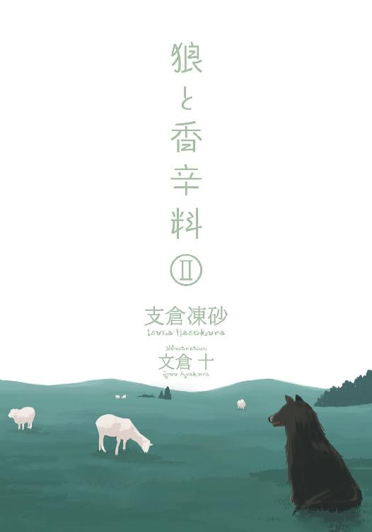
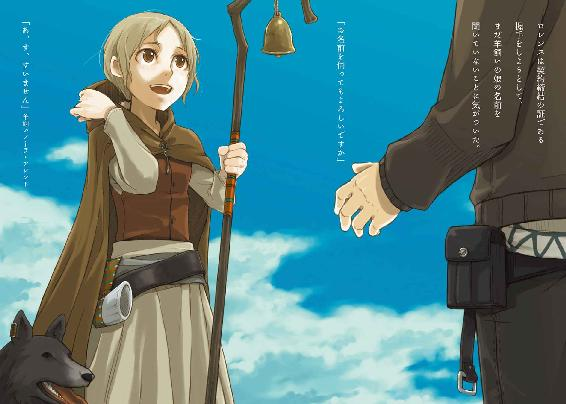
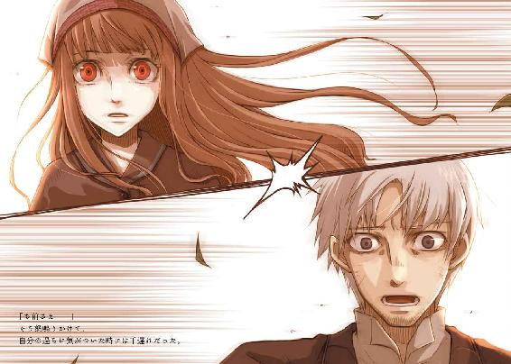
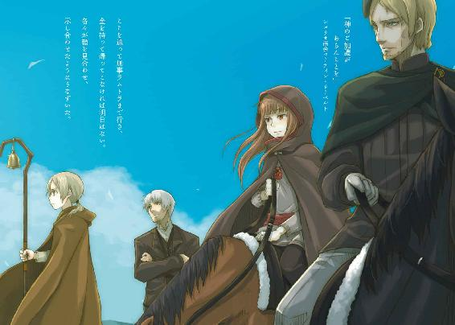
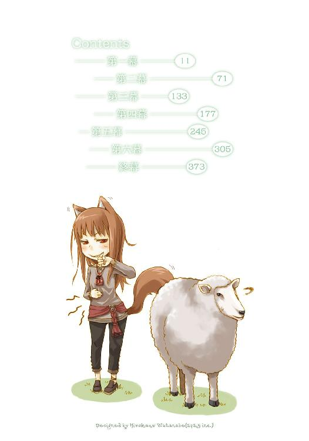
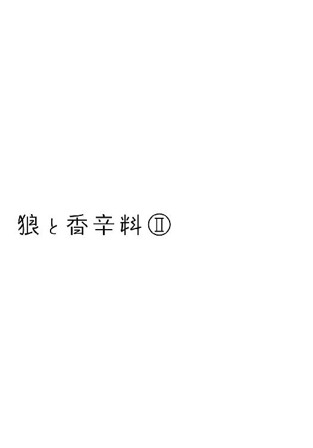
本書（電子版）に掲載されているコンテンツ（ソフトウェア／プログラム／データ／情報を含む）の著作権およびその他の権利は、すべて株式会社アスキー・メディアワークスおよび正当な権利を有する第三者に帰属しています。
法律の定めがある場合または権利者の明示的な承諾がある場合を除き、これらのコンテンツを複製・転載、改変・編集、翻案・翻訳、放送・出版、公衆送信（送信可能化を含む）・再配信、販売・頒布、貸与等に使用することはできません。
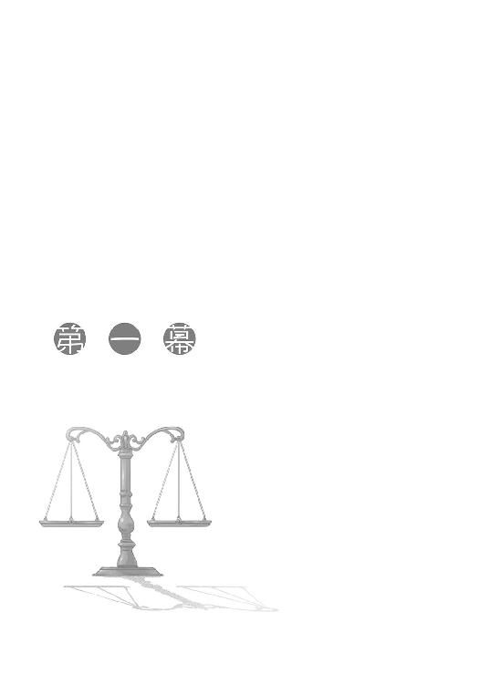
小高い丘が延々と続く。
岩ばかりが目立ち、草も木も少ない。
道は丘と丘の間を縫って作られているために、狭いところでは荷馬車が一台通ればふさがってしまうこともしばしばだ。
上りばかりが続くかと思えば時折下りに転じ、むき出しの岩肌や枯れた潅木ばかりかと思えば突然広い景色が待っている。
だだっ広い草原を行くよりかは飽きのこない道のりではあったものの、やはり五日目ともなれば大抵の者は飽きる。
これから来る冬を思わせる寂しい色合いへと変わっていく草原の道から、岩ばかりで黄土色が一年中支配する道に入った当初こそ聞こえてきた道の起伏や景色に喜んでいた声も、今は聞こえない。なにをしているのかと見れば、御者台に座ることにすら飽きたようで荷台に寝転がって尻尾の毛づくろいなどをしていた。
そんな相棒のわがままな振る舞いには慣れたもの、といった感じで荷馬車を駆っているのは青年だ。一目で行商人とわかる格好をした青年の名はクラフト・ロレンス。行商人として独り立ちをしてから今年で七年目、歳にして二十五になるロレンスは、秋も深まりいよいよ寒くなってきたことを示すように、ぐるりと首元から体を覆い隠す革の外套に包まっていた。
時折、行商人によく見られる適度な髭に覆われた顎をさするのも、じっとしていると少し冷えるからだ。もう少し日が落ちれば白くなりそうな息を吐いて、ロレンスは肩越しにちらりと荷台のほうを振り返った。
いつもは積載量ぎりぎりまで様々な商品が積まれている荷台も、今回に限っては閑散としたものだ。最も目を引くものが夜に暖を取るために積んだ薪と藁という具合で、そんな薪や藁に混じって子供でも抱きかかえられるくらいの袋が積まれているくらいだ。
ただ、そんな袋に詰まった商品は、この荷台一杯に特上の小麦を積んでも間に合わないほどの価値を秘めている。
袋の中身は上等の胡椒で、その総額はトレニー銀貨という名の銀貨でおよそ千枚になる。それを山間の町に売りつければ概算でも千七百枚になるのだが、そんな超高級品の詰まった袋も、今は荷台でのんびりと毛づくろいをするロレンスの相棒の枕代わりになっていた。
小柄でどちらかといえば幼い顔立ちをしているくせに、王宮でくつろぐ女王のような風格で胡椒の詰まった袋にもたれかかり、物憂げな顔で自分の尻尾の毛づくろいをしているそいつは、今はローブのフードも外してその尖った耳を丸出しにしていた。
尻尾、尖った耳、行商人の相棒、とくれば犬を連想しがちだが、生憎とそいつは犬ではない。
はるか北の大地の森に暮らす賢狼ということらしかったが、そいつを単純に狼と呼んでいいのかもロレンスには疑問だった。
なにせ、その賢狼は少女の形をしているのだ。まともな狼と呼ぶほうがどうかしているというものだ。
「もうそろそろ町が近いからな、注意しておけよ」
少女が獣の耳と尻尾を有しているところを他の誰かに見られれば一大事だ。もっとも、そいつの抜け目のなさといったら商人も顔負けなのでなにも言わなくとも大丈夫だとは思ったが、それでも口を出さずにはいられないほどくつろぎきっている。
ロレンスの言葉にも顔すら向けず、大きなあくびをしているくらいだ。
あふ、という間抜けな息を吐いてあくびを終えたかと思うと、今度は尻尾がかゆかったのか、こげ茶色の毛に覆われていて先っぽだけが雪のように白いふさふさのそれを抱き寄せて、子犬が甘嚙みするように先端を食んでいる。注意に返事をする気はさらさらないらしい。
自らを賢狼と称し、狼の耳と尻尾を有する娘、ホロは、少なくとも動物並みにくつろぎきっていることだけは確かなようだった。
「......んむ」
返事なのか、それともかゆみが収まったことに対する満足なのか判別しづらい声がロレンスの耳に届いたのは、返事を待ちくたびれて前を向いてからだった。
こんなホロとロレンスが出会ったのは遡ることおよそ二週間前。行商の途中に立ち寄った村でひょんなことからホロを拾い、しばらく旅を共にすることになった。狼の耳と尻尾を有するホロは世間一般には悪魔憑きと呼ばれる存在で、世界の神的秩序を保とうとする教会からは命を狙われるような存在だ。
しかし、ホロが単に狼の耳と尻尾を有した人の子なのではなく、自称するとおりの北の森に住む賢狼であるということを、ロレンスは今では一片の疑いの余地もなく確信していた。
ちょうど九日前に幕を閉じたパッツィオという川沿いの港町で起こった銀貨を巡る騒動の最後、ロレンスはホロのその真の姿を見た。
ホロという名の巨大な褐色の狼は人語を解し、圧倒的な存在感を持ったまさしく神であった。
ただ、そんな神と呼べる賢狼ホロとロレンスの間柄といえば、金の関係では貸し借りの相手、世間的には旅の道連れ、個人的には友人である、と少なくともロレンスは信じている。
ロレンスが再度後ろを振り向けば、ホロは丸まって寝に入っているようだ。ズボンをローブの下に履いているので足が顕わになるということはなかったが、尻尾の毛づくろいをするためにローブを腰までたくしあげたまま寝ている姿は扇情的といえば扇情的だ。
無防備な、という表現がこれ以上ないほど当てはまるホロの寝姿は、体格が小柄なこともあってどちらかといえば狼よりもその狼に食べられる無力な少女のほうだ。
それでも、ロレンスはその少女を侮らない。
突然ホロの狼の耳がピクリと動いたかと思うと、もそもそと手が動き出してフードをかぶり、ローブの裾を戻して尻尾を隠したからだ。
ロレンスが前を向き直せば、ちょうど丘の斜面に沿って右に曲がっている道の向こうから、徒歩の行商人の姿が現れた。
やはり、注意するまでもなかった。
御歳数百歳という賢狼ホロは、高々二十五年しか生きていない若造ではとても追いつけないような位置にいるようだ。
それでもホロの見た目はどう見てもロレンスより年下で、実際の年齢が何十倍であろうともそんなホロの振る舞いが少し気に入らなかったりする。
要は見た目どおりの年齢差が二人の間にあるように、ホロのことを注意すればホロは素直にそれを聞き、そのお陰で様々な難を避けホロはロレンスに感謝をする、というのがロレンスの希望なのだが、生憎と現実はその逆になることがしばしばだ。
ロレンスは荷台をもう一度だけ小さく振り返った。
ゆっくりと、静かに振り返ったというのに、胡椒の入った袋を抱きかかえるように眠っていたホロは、ちらりとロレンスのほうを見た。
少しぎょっとすると、ホロはなんでもお見通しだといわんばかりの意地悪な笑みを浮かべて、また目を閉じた。
ロレンスは前を向く。
荷馬が面白がるように、尻尾を左右に振っていたのだった。
ポロソン、という変わった名の町だった。
この町を抜けて、北か東に何日も高原の大地を進み、さらにその先にある町や村を越えて旅をすると、やがて着ているものも食べるものも崇拝する神すらが違う、文字どおりなにもかもが違う異国へと通じている。
ポロソンは少し前まで異世界への玄関口と呼ばれていたとロレンスは聞いたことがある。
岩ばかりが目立つこの高原は、そこから西に向かって降りれば北に行っても南に行っても西に行っても肥沃な大地や森が広がっている。だというのにわずかな湧き水しか湧かず岩に囲まれているせいで畑にできる土地も少ないようなこんな場所にわざわざ町を造ったというのは、まさしくここが昔は異世界への入り口だったからだ。
ロレンスは山羊の鳴き声が朝もやの向こうから聞こえてくる畑の間を進みながら、所々に立っている墓標のような杭の数を数えていく。杭には教会の長い歴史にあってなお名前を残している歴代の聖人たちの名前が刻まれ、この土地を今も清め続けていた。
ポロソンは異世界への玄関口と呼ばれるよりもさらに昔、とある異教の聖地だったという。
教会が神の教えに従い異教徒たちを改宗させ、誤った文化によって穢れた土地を正教徒たちの手によって清めようという戦いを始めてもう長い年月が経っている。ポロソンはそれらの過程で滅ぼされた異教のうちの一つの、精神的支柱となっていた場所だ。教会が激しい戦いの末にこの地方の異教徒を一掃した際に、正教徒たちがここを町としたと伝えられている。
それからはポロソンからさらに北や東に行った異教徒たちの土地に出陣する宣教師や騎士たちの拠点となり、人と物資の中継点として栄えて今に至るという。
ただ、隠者かと見まがうほどのボロ布に身を包んだ宣教師や、正しき神の元に土地を取り戻そうとして剣を携えこの町を抜けていく騎士達の姿は今はない。
今この町を通過するのは、北や東から来る毛織物や塩や鉄に、西や南からの穀物や毛皮などだ。異教徒との戦いの舞台はとっくの昔に遠方に移ってしまい、今ではがめつい商人達が行ったり来たりを繰り返していた。
ホロがいるせいでわざわざ人通りの少ない商業路を通ってきたが、大昔からある商業路ならばひっきりなしに珍しい品物を積んだ荷馬車とすれ違う。特に織物に関しては珍しい品物が多かった。
しかし、貿易が盛んな割にはポロソンが質素なのはこの町に住む者たちの特質による。町を守る市壁こそ豊富に取れる石のお陰で立派なものだったが、町の中に入ればそこにあるのは簡単に石を積んだ上に藁が葺かれているだけの粗末な建物ばかりだ。物と人が行き交うところには必ず金が落ち、そこはやがて豊かになるものなのだがポロソンは事情が少し違う。
皆、熱心な正教徒で、稼いだ金のほとんどを教会に寄付してしまうのだ。その上、この町はどこかの国の領土ではなく、ポロソンの北西に位置する教会都市リュビンハイゲンの管理下におかれているから、寄付金は町の教会ではなくそちらのほうに流れていってしまう。それどころか、土地の納税台帳もリュビンハイゲンの聖堂参事会が管理をしており、税金すらポロソンの町に直接納められるわけではない。
ポロソンの町の人間は、慎ましやかな日々の生活にしか興味がなかったのだ。
だから、朝もやの向こうから鐘の鳴る音が聞こえてくると、畑で作業をする者たちは一斉に作業の手を止めて、鐘の鳴るほうへと向かい両手を組んで目を閉じた。
普通の町ならこの時間は顔を真っ赤にした商人たちが市場で売る商品を運ぶために慌しく駆け回っているはずなのだが、この町の近辺にはそういう無粋な者はいなかった。
ロレンスも周りの者たちのお祈りの邪魔をしては悪いと思い、馬を止める。
それから両手を組むと、自分も神に祈りを捧げたのだった。
再び鐘の音が響き、町の者たちが作業に戻ったのを見計らって馬を歩かせ始めると、ホロが唐突に口を開いていた。
「なんじゃ、ぬしは教会の手先かよ」
本気で言っているわけではないだろうと思ったので、ロレンスは道の脇に積んである野菜の束などに注意しながらおざなりに答える。
「旅の安全と商売の儲けを約束してくれるなら、相手が誰だって祈りを捧げるさ」
「わっちも豊作なら約束できる」
ただ、ホロがそんなことを言ってロレンスのほうを向いたので、ロレンスも横目でホロを見る。
「祈って欲しいのか？」
神と呼ばれる者たちの孤独を知り、それを嫌がるホロなのだ。そんなわけがないことはわかっていたけれどもあえてそう言ってやる。
暇だから少しじゃれあいたいのだろうと察しがついたのだ。
案の定、答えたホロの声はわざとらしく甘えるようなものだった。
「うん。祈って欲しい」
「なんて祈って欲しいんだ」
大分ホロの扱いに慣れてきたロレンスは仕方なくそう聞いてやる。
「なんでもよい。豊作ももちろんじゃが、旅の安全くらいならわっちにもできる。雨も風も多少は読めるし湧き水の良し悪しもわかる。狼や野犬の退治にもうってつけじゃ」
村から出てきた少年が商会などに自分を売り込む時のような口上だが、ロレンスは少し考えて答える。
「まあ、旅の安全にはかなり御利益がありそうだな」
「じゃろ？」
ホロは満面の笑みで小首をかしげた。
屈託のない無邪気な笑顔を見ていると、単に教会の神よりも自分のほうがすごいと言いたかっただけなのかもしれないと思えてきた。たまに妙に子供っぽいところを垣間見せるホロだ。普段からこれならばもっと可愛げがあるのだが、と思ったりもした。
「なら、旅の安全を頼むか。狼除けには確かに心強いからな」
「うむ。旅の安全じゃな？」
「ああ」
答えながら手綱を操り、道でのんびりと雑草を食んでいる荷運び用のロバを避ける。
市壁の入り口はもうすぐだ。検問待ちの最後尾が朝もやの中に見えてきた。
町全体が教会みたいなポロソンではあったが、文字どおり異教の町からやってくる商人なども多いせいで意外に融通が利き、検問は人の検査よりもやはり商品の検査のほうが厳しい。荷台に積んである胡椒にはいくら税金がかかるだろうかとロレンスが頭の中で考えていると、ふと隣からの視線に気がついた。他に誰がいるわけでもない。ホロだ。
「それだけかや」
少し怒ったような声だった。
「ん？」
「旅の安全を頼んでおいてそれだけかや、と言っておる」
ロレンスは少し呆けたようにホロのほうを見てしまってから、気がついた。
「なんだ、手を組んで祈って欲しかったのか？」
「たわけ」
ホロがいらいらするように睨む。
「このわっちに旅の安全を頼むというのに、なんの腹の足しにもならぬお祈りだけで済まそうというのかや」
ロレンスの頭が水車のように回転して、結論がすぐに導かれた。
「供え物でもよこせというのか」
「うふふ」
満足げにホロがうなずいた。
「なにが欲しいんだ」
検問の順番待ちをしている列の最後尾につけながら、ため息混じりに聞いてやった。
「羊の干し肉」
「昨日散々食べただろうが。お前が食べたあれは本当なら一週間分なんだぞ」
「羊の肉ならいくらでも食える」
悪びれるどころか、ホロは肉の味を思い出したのか舌なめずりをしている。高貴な狼も干し肉の前では犬と同じのようだ。
「焼いたものもよいが、干したものはあの歯ごたえがたまらぬ。ぬしよ、旅の安全を祈りたければ羊の干し肉じゃ」
らんらんとホロの目が輝き、わさわさとローブの下で尻尾が動いている。
しかし、ロレンスはそれら一切を無視すると前にいる商人が連れている馬の背中に目をやった。馬の背中には、暖かそうな羊毛が山のように積まれている。
「あの羊毛はどうだ。良いものか悪いものか」
羊毛、と聞いて羊を連想したらしい。ホロがいよいよ期待に満ちた目で言われたとおりに前方の羊毛の山を見て、すぐに振り返る。
「なかなかによい。食んでいた草のよい匂いがしそうなほどじゃ」
「やはりそうか。胡椒も高く売れそうだな」
毛の質がよければその肉も当然うまくなる。そして肉がうまければそれだけ肉の消費も増える。そうなれば味付けや保存に使われる胡椒なども値が上がるという寸法で、ロレンスはいくらで胡椒が売れるか今から楽しみだった。
「それでな、干し肉はたっぷりと塩のきいたものがよい。塩の薄いものは駄目じゃ。それから、足の肉ではなくてわき腹あたりのものが一番よい。ぬしよ、聞いとるのか？」
「ん？」
「塩のきいたものじゃ。それからわき腹の近くのものじゃぞ」
「いい趣味してるな。値が張るぞ」
「それくらい安いものじゃろう」
確かに、ホロが旅の安全を保障してくれるというのであれば羊の肉くらい安いものだ。なにせその真の姿は巨大な狼なのだ。本気を出せば性質の悪い盗賊と変わらない傭兵集団に囲まれても助かるかもしれない。
ただ、ロレンスはわざととぼけた顔をしてホロのほうを改めて振り向いた。
せっかくホロの目が食べ物に眩んでいるのだ。からかわない手はない。
「ほう、お前はずいぶん金持ちなんだな。そんなに金があるなら借金を返してくれよ」
しかし、相手も賢狼を自称するホロだ。すぐにロレンスの狙いに気がついたらしい。
急に表情を引きしめてロレンスを睨んだ。
「もうぬしのその手にはかからぬ」
以前の林檎の件で学習したらしい。ロレンスは小さく舌打ちをして、同様に表情を厳しくした。
「だったらはじめから素直にねだったらどうなんだ？ そっちのほうが可愛げがあるというものだろうが」
「可愛く頼んだら買ってくれるのかや？」
そんなことを言っている時点で可愛げがない。列が進んだのでロレンスは馬を前に進めながら、はっきりと言ってやったのだった。
「買うわけないだろ。牛や羊を見習って昨日食ったものを反芻でもしてればいい」
ロレンスは我ながらうまいことを言ったと思って笑ったのだが、一瞬表情がなくなってしまうほどに怒ったホロは、御者台の上で無言のままロレンスの足を思い切り踏んづけたのだった。
土を踏み固めただけの道。荒く削り出した石を積んでその上に藁を葺いただけの簡素な家。
露店を出したところで町の人間は生活に必要なもの以外を買わないので、ポロソンの町には驚くほど露店の姿がない。
町を歩く人々の数は決して少ないとはいえないし、商品を満載にした荷馬車やたくさんの荷物を背負った商人などが行き交っているというのに、町全体には綿のような空気が漂っていて人々のざわめきを吸収しているかのように静かだった。
静かで、質素で、埃っぽいこの町が、遠方の国々との重要な貿易の中継点になっていて、毎日目もくらむような金額を稼ぎ出しているというのはちょっと信じることができない。
大体、他の町では見向きもされないことが多い旅の説教師の辻説教に町の人たちがありがたそうに群がるようなこの町で、どうして金儲けがなされていると考えることができるだろうか。
常々、ロレンスはこの町が不思議でならなかった。
「退屈な町じゃな」
しかし、町全体が教会のような独特の雰囲気も、ホロにかかればその一言のようだった。
「食い物の露店が出てないからな」
「まるでわっちが食い気しかないような物言いじゃな」
「なら説教でも聞いていくか？」
ちょうど前方に人だかりができていて、旅の説教師が聖典を片手になにやら説教をしている。
聴衆は町の人間だけでなく、普段は自分の商売の儲けしか祈りそうにない商人も何人かいた。
ただ、ホロはロレンスが指差した彼らを見ると苦いものでも食べたような顔をして、ふんと鼻を鳴らしたのだった。
「わっちに説教するなど五百年早い」
「質素倹約についての説教は一度聞くべきだと思うがな」
ホロが御者台の上で暇そうにいじくっている絹の腰帯を見ながらロレンスが言うと、ホロは口に手を当てて大きくあくびをする。
「わっちは狼じゃからな。説教なんて難しいことはよくわかりんせん」
目尻の涙を拭いながら、白々しくそう言ったのだった。
「まあ、質素倹約の神の教えなんてのは、この町くらいでしか説得力を持たないからなあ」
「ふん？」
「この町に入る金はそのほとんどが北西にある教会都市リュビンハイゲンに流れていくんだがな、あの町でまじめに説教を聞く気にはとてもなれない」
このあたり一体を取り仕切る教会都市リュビンハイゲンは、そのうち市壁が金に変わるといわれるほどの金満都市だ。都市を牛耳る聖堂参事会上層部は、教会が何百年とかけて推し進めてきた異教徒討伐すら金儲けの足しにしているといわれるくらいで、商人顔負けの司教や司祭がごろごろしている。
もっとも、だからこそ金儲けの機会も桁外れに多いのだが、とロレンスが思っていると、ホロが思案顔で首をひねっていた。
「リュビンハイゲン、と言ったかや？」
「知っているのか？」
ホロのことを横目で見つつ、ロレンスは荷馬車を操って二股に分かれた道を右に入る。
「うむ、思い出した。けど、わっちが聞いたそれは町の名前じゃありんせん。人の名前じゃ」
「ああ、別に間違っちゃいない。今でこそ町の名前だが、元々は異教徒討伐の聖騎士団を率いた聖人の名前だ。古い名前で最近じゃああまり聞かないな」
「む。もしかしてそいつのことじゃないかや」
「まさか」
軽く笑ってしまったが、ふと気がつく。ホロが旅に出たのは数百年も前だということに。
「燃えるような赤い髪と髭をボーボーに伸ばしたいかめしい顔をした男じゃ。わっちの可愛い耳と尻尾を見るやいなやわっちのことを悪魔の手先などと呼んで騎士連中と共に剣と槍で追いかけまわしよった。いい加減腹がたったから元の姿になって騎士どもを蹴散らし、最後にリュビンハイゲンの尻に嚙みついてやった。筋張っていてうまくなかったがの」
ふん、と鼻で笑いながら武勇伝を誇らしげに語るホロだが、ロレンスは少しばかり驚いて声が出ない。
教会都市リュビンハイゲンには、聖人リュビンハイゲンが赤い髪をしていたことや、今は都市のある場所に要塞を築いた当初、異教の神々と戦ったという記録が残されている。
ただ、聖人リュビンハイゲンが異教の神々と戦った時、不覚ながら食われたのは左腕だったという話だ。だから大聖堂の壁画には左腕のない、血にまみれ切り裂かれたボロを身にまといながらも、果敢に神の加護を背に騎士団を指示し異教徒に立ち向かう聖人の姿が描かれている。
聖人リュビンハイゲンの絵が常に裸同然のボロをまとった絵というのも、もしかしたらホロが嚙み千切ったせいなのかもしれない。なにせホロの元の姿は実に巨大な狼だ。軽くじゃれつかれただけで血まみれになりそうな気がする。
それに、もしホロの話が本当だとしても、尻に嚙みつかれたことなど恥ずかしくて話に残せないだろう。そう考えると、左腕だけ食われたなんて話はいかにもとってつけたようなものだ。
もしかしたら、本当にホロが嚙みついた相手は聖人リュビンハイゲンだったのかもしれない。
歴史の裏話を聞いたようで、ロレンスはつい笑ってしまったのだった。
「あ、しかし、ぬしよ」
「ん？」
「わっちは、奴に嚙みついただけじゃからな？ 殺してはおらぬ」
さっきまでとは違い、ロレンスの反応を窺うような表情でホロが言う。
ロレンスはホロがなにを言っているのか一瞬わからなかったが、ようやく気がついた。
多分、人を殺したとなれば同じく人であるロレンスが怒ると思ったのだろう。
「変なところで気を遣うんだな」
「大事なことじゃ」
ホロが真剣な顔で言うので、茶化すこともなく同意したのだった。
「それにしても本当に退屈な町じゃな。森の中だってここよりも騒がしい」
「胡椒を売ったらすぐに新しい荷を積んでリュビンハイゲンに行くからそれまで我慢しろ」
「大きい町なのかや？」
「リュビンハイゲンはパッツィオよりでかい。町というより都市だ。賑やかだし露店もたくさんある」
パッとホロの顔が輝く。
「林檎も？」
「生のものはどうだろうな。そろそろ冬に向けて漬物にされていると思うが」
「......漬物？」
ホロが怪訝な顔をして聞き返す。北のほうで保存食といえばなんでもかんでも塩だろうから、林檎の塩漬けだとでも思ったのだろう。
「蜂蜜で漬けるんだよ」
ぴょこん、とホロの頭を覆うフードの形が変わるほどに耳が動く。
「梨の蜂蜜漬けとかもうまいぞ。あとは、そうだな。珍しいが、桃とかもある。それも高級品はあれだ。桃を薄く切って、樽の中にどんどん詰めていくんだが、間にイチジクとアーモンドを時折挟んで樽一杯になったら、その上からたっぷりの蜂蜜を流し込み、最後にショウガを少し入れて漬物にする。食べごろは二ヶ月くらい経ってからだ。一回食べたことがあるが、教会が禁止しようかと協議するくらいに甘くてな......おい、よだれ垂れてるぞ」
ロレンスの言葉にホロはハッとなって口元を拭う。
それから、そわそわとあたりを見回して、ふとロレンスのほうを疑わしげに見る。
「ぬし......どうせまたわっちをはめようとしとるのじゃろう？」
「俺が噓を言っているかどうかわかるんじゃないのか」
ホロは言葉に詰まったのか少し顎を引く。
「噓じゃないが、あるかどうかわからない。大抵は貴族か金持ち用だからな。そもそも店に並ばない」
「もし、もし並んだら？」
わさわさわさ、とローブの下で子犬でも暴れているんじゃないかというくらいに尻尾が暴れ、期待に満ちすぎた目は切なそうに潤んでいる。
そんなホロの顔が、ロレンスの肩の上に乗るほど近づけられた。
目が、恐ろしいほど真剣だった。
「......わかったよ、買ってやるよ」
その瞬間、ホロは両手でロレンスの腕を力一杯に握りしめた。
「絶対じゃな」
首を横に振れば、そのまま嚙みつかれそうだった。
「少しだぞ。少しだからな」
そう念を押したものの、ホロが聞いているかどうかは怪しかった。
「ぬしよ、約束じゃぞ。よいな？」
「わかったわかった」
「じゃあぬしよ、早く行こう。ぬし、早く行こう」
「おい、そんな引っ張るな」
邪険に振り払っても、ホロの意識はどこか別の場所に向けられたままのようだ。視線は遠くを見て、中指の爪を嚙みながら何事かを呟きはじめた。
「売り切れるかもしれぬ。そうなったらことじゃ......」
桃の蜂蜜漬けの話などするんじゃなかったと胸中で呟いたものの、今さら後の祭りだ。
これでやはり買わないなどと言ったら嚙み殺されるかもしれない。
桃の蜂蜜漬けなど、一介の行商人がおいそれと買えるようなものではないというのに。
「売り切れるどころか売ってないかもしれないからな。その辺のことを理解しておけよ」
「桃と蜂蜜じゃぞ。信じられぬ。とても信じられぬ」
「聞いてるのか？」
「けど、梨も捨てがたいの？」
逆にホロはロレンスのほうを向いてそんなことを言った。
ロレンスは、思いきりでかいため息をついて返事としたのだった。
ロレンスが胡椒を売りに行ったのは、ラトペアロン商会というポロソンの町の名に負けずとも劣らず変わった名前の商会だった。
おそらく血筋をたどればこの町が町になる前からこの辺りに住んでいる異教徒にたどりつくのだろう。変わった名前は全部大昔の名残だという。もっとも、今では頭の先から足の先までどっぷりと正教徒で、これほど熱心な者たちはそうそう見かけないというほどだ。ラトペアロン商会の主人もそろそろ五十を過ぎるということもあり、ますます信仰心の厚みが増しているようだった。
だから、半年ぶりに商会に足を踏み入れるや久しぶりにこの商会を訪れたロレンスの無事を祝う挨拶から、新しく教会に来た司祭の説教が実にすばらしいから一度聞きにいくべきだという説得と、いかに説教によって我々の魂が救われるかという説教が始まった。
しかも、商会の主人はローブを身にまとったホロのことを巡礼中の修道女と思ったらしく、ホロからもロレンスにもっと厳しく言ってくれるようにと頼んだから最悪だ。
ホロは心得たとばかりにロレンスのことを散々批判し、ロレンスにだけ見えるようにとニヤニヤ笑っていた。
ようやく主人とホロの二人の説教から解放された時、ロレンスは絶対に蜂蜜の漬物など買ってやるものかと心に固く誓ったのだった。
「さて、少し長くなってしまいましたが、商談に入りましょうか」
「よろしくお願いします」
ロレンスは少しぐったりとした様子でそう言ったのだが、途端に主人の顔が商人のものになるから油断ならない。
もしかしたら、わざと長々と説教をして、相手を弱らせて頭から食べるという商売方法なのかもしれなかった。
「それで、本日はどのような商品を？」
「こちらです」
ロレンスも気を引きしめ直して胡椒の詰まった皮袋を取り出した。
「おや、胡椒ですか」
と、袋の口を縛る革紐を解く前に中身を当てられ内心驚いたものの、なんとかそれを顔に出さず笑顔で対応した。
「よくわかりましたね」
「匂い、ですよ」
いたずらっぽく笑いながら主人はそう言うが、挽いて粉にする前の胡椒はそんなに匂わない。
隣に立つホロのことを横目で盗み見ると、ホロは面白そうに笑っていた。
「私はまだまだ未熟者のようです」
「年季が違いますよ」
まったく驕ることもなく穏やかに笑う余裕たっぷりの様子を見る限り、もしかしたらホロを修道女と間違えたのもわざとだったのかもしれない。
「それにしましても、ロレンスさんはいつもいい頃合でよい商品を持ってこられる。今年は神のお恵みにより草の育ちがよく、町の中の道を歩かせただけでも豚が肥えるほどです。ここしばらく胡椒の需要がうなぎのぼりです。まったく、あと一週間早く来ていただければ安く買い叩けましたのに」
主人は朗らかに笑い、ロレンスは苦笑いをするしかない。会話の主導権は完全に向こうに握られている。これで強気の交渉は封じられた。挽回はかなり難しいだろう。
こんな商人が小さな商会に収まっているのだから商売の世界は恐ろしい。
「えーと、それじゃあ計量しましょうか。秤はお持ちですか？」
天秤の正確さに名誉をかける両替商と違い、商人たちの持っている天秤には細工がしてあって当たり前だ。胡椒や砂金など、ちょっとした目盛りの細工で大きな差が出る商品の計量の際は、売り手の人間も天秤を用意して買い手のそれと併用したりする。
ただ、ロレンスは胡椒のような高級品を日頃から扱っているわけではないので、天秤など持ってはいなかった。
「いえ、持ってはいませんが、私は神を信じています」
ロレンスの言葉に主人は笑顔でうなずいて、棚の上に置かれていた二つの天秤のうち、奥のほうのものをわざわざ取り出した。
顔には出なかったと確信を持てるが、それでも胸中でほっと安堵のため息をつく。
神の教えに忠実であり、正教徒としてこれ以上ないほど正直者であってもやはり商人は商人なのだ。おそらく手前に置かれていた天秤には仕掛けがしてあるのだろう。
仕掛けのある天秤で計量などされたら、いくら損をするかわかったものではない。胡椒一粒で銀貨一枚といっても差し支えないのだ。
ロレンスは、神に感謝の念を捧げたのだった。
「神の公正さを信じてはいても、人は目の前にある聖典が本物かどうか調べるくらいの分別は持つべきです。正しき神を信じていても、偽物の聖典の中身を覚えていればそれは神への冒瀆と同じですからね」
主人は近くにあったテーブルの上に秤を置いて、そう言った。
要はロレンスにも天秤に仕掛けがしていないことを確かめさせようというのだろう。
化かし合いが日常の商人とはいっても、信頼というものがまったく必要ないわけではない。
「では、ちょっと失礼します」
ロレンスの言葉にうなずいて、主人は一歩後ろに退いた。
テーブルの上に置かれているのは、鈍い金色の真鍮でできた綺麗な天秤だ。大きな町の裕福な両替商が持っているような一品は、この店にはちょっと不釣り合いだった。
ラトペアロン商会の店構えは普通の家かと思うほど質素で、商会で働くのもこの主人とわずかな男たちだけ。商会の中も簡素というにふさわしく、壁際に棚が二つ置かれていて、香辛料や乾物が詰まっていると思われる壺と、紙と羊皮紙の書類の束が置かれているだけだ。
ただ、この店にこの天秤は不釣り合いでも、天秤の釣り合いは確かなようだった。
きちんと真ん中で静止して、分銅を左右両方の量り皿の上に載せても天秤はきちんと真ん中を示した。
細工はしていないようだ。
ロレンスは安心して、主人のほうに笑顔を向けた。
「それでは胡椒の計量に参りましょうか」
その提案を断る理由は存在しなかった。
「えーと、紙とインクが必要ですね。ちょっと待っててください」
主人は言いながら部屋の隅に置かれている棚の引き出しからインク壺と紙を取り出し、ロレンスはそれをぼんやりと眺めながら待っていたのだが、ふと服の裾を引っ張られて振り向いた。他に誰がいるわけでもない。ホロだ。
「どうした？」
「喉渇いた」
「我慢しろ」
と、とっさに言ってしまってから思い直した。
賢狼を自称するホロだ。突然脈絡のないことを言ったのはなにか含みがあったのかもしれない。
ロレンスはそう思いなおして聞き返そうとしたのだが、そこに主人が声をかけてきた。
「聖人ですら水なしには生きられませんからね。水がよろしいですか、それともぶどう酒を？」
「水をもらえるかや」
笑顔で言うのを見ると、どうやら単に喉が渇いていただけのようだった。
「ちょっとお待ちくださいね」
テーブルの上にメモを兼ねた契約用の紙とインク、それに羽ペンを置くと主人は誰かを呼ぶわけでもなく自分の足で水を取りに部屋から出ていってしまった。
このあたりは商人というよりも正教徒の鑑のような感じだ。
ただ、ロレンスはそんな主人に感心しつつ、ホロのことを少し睨む。
「お前にとっちゃなんでもないことかもしれないが、商談は俺たち商人にとっていわば戦いの場所なんだ。水くらい後でいくらでも飲めるだろうが」
「だって喉が渇きんす」
怒られたのが気に食わなかったのか、むす、としてホロはそっぽを向く。恐ろしいほど頭が回るくせに妙なところで子供っぽい。これ以上言っても聞く耳など持たないだろう。
ロレンスは肩をすくめると、頭からホロのことを追い出して胡椒の概算に努めたのだった。
それからしばらくして主人が木のお盆の上に鉄製の水差しとコップを持ってきた。取引相手、しかも年上の商人にこんなことをさせてしまってロレンスは文字どおり恐縮ではあったが、主人は商売抜きといった顔で笑っていた。
「それでは計量といきましょう」
「はい」
少し離れた壁際で、鉄製のコップを両手で持ちながら水を飲むホロに見守られ、胡椒の計量が始まった。
計量そのものは単純なもので、片方の計量皿に分銅を載せ、もう片方の計量皿の上に胡椒を載せていく。釣り合った場所で一回計量皿の上の胡椒を別の場所に置き、また皿の上に新しい胡椒を載せて釣り合いを量る。
単純な作業だが、例えばわずかに分銅側に傾いた状態でも、面倒くさいからこのままでいいやと次の計量に移っていけば、その積み重ねで思わぬ大損を招くことがある。
だから主人とロレンスの二人で天秤の釣り合いを確かめ合い、お互いが納得のいった場所で次の計量に移る。
単純な割には神経を使う作業だったが、それも四十五回ほどで終わった。胡椒の産地にもよるが、ロレンスが持ち込んだものは大体分銅一個と釣り合う量でリュミオーネ金貨と呼ばれる貨幣一枚分に相当するはずだ。ロレンスの知る貨幣相場で計算するならば、港町パッツィオでよく流通していたトレニー銀貨三十四枚と三分の二がリュミオーネ金貨一枚に相当する。それが四十五枚だから、トレニー銀貨にして千五百六十枚だ。
仕入れ値がトレニー銀貨千枚だから、概算して銀貨五百六十枚の利益になる。香辛料の貿易はやはりうまい。もっとも、金や宝石、それに高級染料の原料などになると仕入れ値の二倍や三倍で売れる場合がある。それから比べれば些細な儲けではあったが、野を行く行商人としてはこれで十分すぎるほどの利益率だ。金のない行商人などは、燕麦という最低ランクの麦を自らの肉体の限界まで背負って山を越え、ぼろぼろになって町に売りつけてようやく一割の儲け、などということがざらなのだ。
軽い胡椒を皮袋一杯分運んで銀貨五百枚の儲けは、あまりにもうますぎる商売といえた。
ロレンスは、笑顔で胡椒を皮袋に詰め直したのだった。
「えーと、分銅四十五個分ですね。それで、こちらの胡椒の産地は？」
「リードン王国のラマパタから輸入された品です。こちらが輸入を請け負ったミローネ商会の証明書です」
「ラマパタ産ですか。これはまた遠いところから旅をしてきた胡椒だ。私などでは想像もつかない場所です」
ロレンスが差し出した羊皮紙の証明書を受け取りながら、主人は目を細めて笑う。
町商人は大抵自分の生まれた町から外に出ることなく一生を終える。時折引退してから巡礼の旅に出る商人もいるが、現役の間はそんなことをしている暇などない。
ただ、旅から旅の行商人であるロレンスでも、リードン王国という場所は香辛料の名産地として話は聞いていても、どんな国なのかはわからない。パッツィオからだといったん川を下り海に出て、そこから南に向かって色の違う海を二つ越えた先にあり、巨大な超長距離用の船でおよそ二月の航海になるという。
言葉はもちろん通じず、聞いた話によるとリードン王国は年中真夏でとても暑く、国の者たちは皆日焼けして生まれた時から真っ黒だという。
とても信じられはしない話だったが、そこから来たという香辛料や金や銀や鉄があるのだし、なにせミローネ商会がその名誉にかけてこの胡椒はラマパタから運ばれてきたものだという証明書を書いているのだ。
やはり実際に存在する国なのだろう。
「証明書も本物のようですね」
町商人の元を通過する為替通知書や信用手形、それに契約書の類は膨大なものになる。異国の地に本店を構える大商会はもちろん、遠い国の小さな商会の発行したものであってもその筆跡を見分けられるという。
ミローネ商会ほど大きな商会の契約書であれば見慣れたもので、その印の真偽も瞬時に見分けられるのだろう。サインも大事だが、契約書の命は判子が押されたその印だ。
「それでは、こちらの分銅一つでリュミオーネ金貨一枚。これでいかがでしょうか」
「リュミオーネ金貨の相場はおいくらでしょうか」
ある程度金貨の相場は把握しているとはいっても、ロレンスは即座にそう聞いた。
金貨はほとんどが計算貨幣として用いられるからだ。つまり金貨は単なる計算基準として用いられ、世にたくさんある様々な貨幣の価値基準となる。計算は金貨で行って、改めて支払う貨幣を決めるのだ。ただ、そうなると当然支払われる貨幣との相場が問題となる。
ロレンスが最も緊張する瞬間だ。
「ロレンスさんは確か、お師匠の後を継いで聖人メトロギウスの巡礼路を基礎にした行商でしたよね」
「ええ。聖人メトロギウスの御加護か、道中も安全で商売も順調です」
「だとすると、主要貨幣はトレニー銀貨でよろしいですか」
行商人たちは験担ぎをする者が多く、ぐるぐると回る行商路も好き勝手に決めるのではなく、その昔聖人が歩いたとされる巡礼路を基礎にするのが普通だ。
そして、そうなると行商人が使う貨幣は自ずと決まってくる。
ただ、それが即座に出てくるあたり、ラトペアロン商会の主人は並々ならぬ一流の商人ということだろう。
「トレニー銀貨ですと、三十二枚と六分の五枚。こちらが相場です」
記憶の中のそれよりも相場が低い。
しかし、それはこの町が重要な貿易地点になっていることをかんがみれば許容できる範囲だ。
たくさんの町からたくさんの貨幣が大量になだれ込む場所では、総じて計算貨幣に対して実在の貨幣の価値が低くなる。
ロレンスの頭が電光石火の勢いで回転して、胡椒の総額はトレニー銀貨千四百七十七枚あたりだと計算結果をはじき出す。
予想より低いが、それでもまずまずといえる値段だ。これでまた、店を持つ夢に大きく近づいた。
ロレンスは息を大きく吸い込んで、主人のほうに右手を差し出した。
「その値段でよろしくお願いします」
主人の顔も満面の笑みになり、手を伸ばしてきた。商人の気分が最も高揚する、契約がまとまろうという瞬間。
まさしくその瞬間だった。
「うーむ......」
ホロのそんな間の抜けた声が間に割って入ったのだ。
「どうされました？」
ロレンスと共にホロのほうを向いた主人が、壁際でゆらゆらとふらついているホロを見て心配そうに声をかける。
しかし、ロレンスは瞬時にミローネ商会での毛皮取引のことを思い出して緊張が走る。
この主人は一人で店を切り盛りしてきた一流の商人だ。そんじょそこらの悪知恵では絶対に切り返されて痛い目を見る。
いくらホロといえど、そう毎回毎回悪知恵が働くわけでもあるまい。
ロレンスはそう思ったものの、次いで「おや」と思った。ホロの様子が変だったのだ。
「う、む、ちょっと、眩暈が......」
「おお、それはいけません」
コップを手にしているホロの揺れは少しずつ大きくなって、今にもコップの中の水がこぼれそうだ。
主人は心配そうにホロの元に歩み寄り、コップを支え、細い肩を支える。
ホロも主人に少しもたれかかるようにして体勢を立て直し、小さくお礼などを言っている。
本当に単に眩暈を起こしただけなのかもしれない。ロレンスもホロの側に歩み寄った。
「落ち着かれましたか？」
「......だいぶ。ありがとう」
弱々しくそう言って、主人に支えられながらようやくまっすぐに立つ。
そんな様子は断食を繰り返して貧血を起こした修道女のようだ。熱心な正教徒の主人でなくとも支えになってやりたくなるというものだが、ロレンスは少し妙なことに気がついた。
フードの下の狼の耳が、あまりしおれていないようなのだ。
「長旅の疲れが出たのでしょう。旅は大の男でも疲れるものですから」
ホロは小さくうなずいて、それからゆっくりと口を開く。
「確かに旅の疲れかもありんせん。なにやら突然目の前が傾いたような気がして......」
「それはいけません。そうだ。元気づけに今朝絞られたばかりの山羊のミルクをお持ちしましょう」
人のよさそうな主人は、ホロに椅子を勧めると返事を待たずに早速山羊のミルクを取りにいこうとした。
ホロが、勧められた椅子に座る前に手に持ったままだった鉄製のコップをテーブルに置こうとしたことになにかの予感を感じたのは、ロレンスだけだっただろう。
「ぬし様よ」
と、ホロがテーブルにコップを置こうかというところで主人の背中に声をかけた。
「わっちはまだ眩暈を起こしているようでありんす」
「なんと。お医者様をお呼びしますか？」
振り向いた主人は心底心配そうな顔だ。
だが、対するホロのフードの下の顔は、とても眩暈など起こしているような弱々しいものではなかった。
「ほれ、このとおり。わっちの目の前の物が傾いていんす」
そう言ってホロが木のテーブルの上にコップの水を少し垂らすと、水がつつーっと迷うことなく右のほうに流れていき、小さな音をたててテーブルの隅から床へと零れ落ちた。
「！」
ロレンスはその瞬間に目を見開き、慌ててテーブルに歩み寄って天秤に手をかける。
先ほど丹念に釣り合いを確かめた天秤だ。その釣り合いのわずかなずれが大損につながると、そう思って確かめた天秤はテーブルの上を流れていった水に平行に置かれている。
そこから導かれる結論。
計量が終わり、片方の量り皿にだけ分銅が乗っている天秤を手に取り、向きを逆にして分銅を取り除いてみる。
持ち上げたせいで釣り合いが揺れたそれは、再び静かにテーブルの上に置くとゆっくりと揺れが収まり、やがて静止した。
目盛りを見ると、机が傾いているのに見事に釣り合った。もしも天秤が正確なら、机が傾いているのだから釣り合いの位置がずれるはずだ。
明らかな、細工。
「さて、わっちが飲んだのは水か、ぶどう酒か」
ホロが主人のほうを振り向いたので、ロレンスもそちらを振り向いた。
二人の視線を受けた主人は、凍りついた顔にびっしりと脂汗を浮かべている。
「わっちが飲んだのはぶどう酒じゃ。そうじゃろう？」
にやりと笑う音が聞こえそうなほど楽しそうなホロの声。
対する主人の顔は真っ青を通り越して土気色だ。この信仰篤い町で天秤に細工をして詐欺同然のことをしていたなどということが公になれば、財産を没収されて即破産ということになる。
「賑やかな酒場の主人ほど酒を飲まない、ということわざがありますが、なるほど、こういうことなんですね」
弱った商人は兎のようなものだ。その柔らかいところにずぶりと牙を突き立てられても、悲鳴一つ上げられない。
ロレンスは主人を振り返り、笑顔で歩み寄った。
「その場で唯一人素面でいることが商売繁盛の秘訣、ということですか」
流れ出る脂汗で絵が描けそうな勢いだ。
「私も連れと同様酒に酔っていたようです。ですから、ここで見たこと聞いたことのいくつかは忘れてしまうでしょう。その代わり、酔っ払いは得てして無茶を言うものです」
「......な、なにを」
主人の顔が恐怖に恐れおののいたものに変わる。
しかし、ここで腹いせに安直な行動に出るようでは商人失格だ。
ロレンスの頭には騙されたことに対する怒りなど微塵もない。
代わりにあるのは、思いもよらずに摑んだ相手の弱みから、一体どれだけの利益を引き出せるかという冷徹な計算だけだ。
降って湧いた好機。
ロレンスは表情を笑顔のまま、口調もいつもの商談用のもので詰め寄った。
「この金と、おそらくあなたが得をすることになった分と、それから、そうですね、信用買いでその倍の買い物をさせてもらえませんか」
いくらかの現金を担保にする代わりにそれ以上の金額の買い物をさせろ、ということだ。投資する金額が多ければ多いほど利益が大きくなるのは自明の理。手元に一枚の銀貨しかなくても二枚分の買い物ができれば、儲けは単純に二倍になる。
しかし、一枚の銀貨で二枚分の買い物をさせろと言うのだから当然見返りが必要になる。要は金を借りるわけだから、貸すほうには当然見返りを請求する権利がある。
もっとも、この状況で主人が見返り云々を言える立場にないことをわかっていてロレンスはこの無茶な商談を持ちかけている。弱みにつけ込まない商人は三流だ。
「う、あ、し、しかし......それはいくらなんでも」
「無理ですか？ 残念だ、私の酔いが覚めてしまいそうです」
顔が溶けそうなほどの脂汗の中には、いくらか涙が混じっていたかもしれない。
主人は悲壮な顔をして、がっくりとうなだれたのだった。
「商品は、そうですね。金額が金額ですから、高級武具なんかどうでしょう。リュビンハイゲンに向けた商品がたくさんあるでしょう？」
「......武具、ですか？」
主人が少し光明を見た、という感じで顔を上げた。ロレンスが借金を踏み倒すことを前提に取引を持ちかけていたと思っていたのかもしれない。
「安全で確実な利益が見込める定番ですよね。それに、これならすぐに借りた金を返せます。どうでしょう」
リュビンハイゲンは異教徒討伐の補給基地という役目も担っている。そこでは戦に関するあらゆる物が一年を通して飛ぶように売れる。武具なら値段の下落による資本割れも起きにくい。
資本の倍の金額で商品を買えば値下がりの影響も二倍になるから、安定して捌ける武具は信用買いに適しているといえた。
主人の顔が計算高い商人のものへと変わっていく。
「武具......ですか」
「リュビンハイゲンならこちらの商会と懇意の商会もあるでしょうから、そちらに売ることで貸し借りの相殺ということで」
要はロレンスがラトペアロン商会に借金をして買った武具をリュビンハイゲンの商会に売った後、わざわざ代金を持ってラトペアロン商会まで返しに行かなくてよい、ということだ。
金のやり取りは特定の相手方となら帳簿の上の足し算引き算で済む。
商人のすばらしい知恵だ。
「いかがですかね」
商売用の笑顔、というのは場合によってはなかなかの凄みが利くものだ。
その中でもとびっきりのものを顔に貼り付けて主人に迫ると、ラトペアロン商会を切り盛りする男は断れるわけもなく首を縦に振ったのだった。
「ありがとうございます。では早速商品の手配をお願いできますか。できるだけ早くリュビンハイゲンに行きたいもので」
「わ、わかりました......あの、査定は」
「おまかせします。私は神を信じていますので」
これ以上ないほどの皮肉に主人の唇が引きつるが、おそらく苦笑いしたのだろう。もちろん、主人は武具を相当安く査定せざるを得ない。
「さて、ぬしらの話は終わったかや」
そんな強引な商談が終わったのを見計らってホロが言い、主人の口からは「嗚呼」というため息が聞こえてきそうだった。厄介な奴がまだいるのだ。
「わっちの酔いも覚めそうなんじゃがな？」
可愛く笑いながら小首をかしげる様が、きっと悪魔に見えただろう。
「特級のぶどう酒と羊の干し肉があればわっちはご機嫌じゃ。あ、わき腹の肉がよい」
遠慮もへったくれもない言葉に主人はただただ首を縦に振るだけだ。
「なるべく早くの」
とはホロのちょっとした冗談だったのだろうが、見事に天秤の細工を見抜いたホロの言葉に、主人は尻をたたかれたイノシシのごとく部屋から出ていった。
少しやりすぎな気がしないでもなかったが、天秤に細工をしての詐欺は告発されれば即財産を没収されて破産だ。この程度で済めば安いというものだ。
だいたい、あのまま気がつかなかったらロレンスも恐ろしい金額を掠め取られていたことだろう。
「くふふふ。気の毒にの」
楽しそうに笑いながらも本当に気の毒そうにしているあたりが、実に意地が悪かった。
「しかし、相変わらずよく気がつくな。まったく気がつかなかった」
「わっちは器量も尻尾の毛並みも頭もよいが、耳や目もよい。この部屋に入った当初から気がついておった。ま、ぬし程度の者をたばかるには相応の手じゃな」
それから手をひらひら振って、呆れるようにため息をつく。
言わせておけば、と思わないでもないが、事実として天秤の細工には気がつかなかったし、ホロがそれに気がついてくれたお陰で大損が転じて大儲けになった。
ここは一つおとなしくしておくべきだろう。
「返す言葉もございませんよ」
おとなしくそう言うと、ホロはそれが意外だったのか少し目をしばたかせた。
「ぬしも大人になったの」
これにはまさに返す言葉がなく、引きつった苦笑いをしたのだった。
春の病、というのがある。
冬、海や川から遠い地方の人たちの食生活は極端に偏る。それこそ雪が降り川が凍るところなどでは毎日毎日塩漬け肉と固いパンだけで暮らすことになる。霜が降りる場所でも野菜がまったく育たないわけではないが、冬の野菜は食べるよりも売ったほうが得だ。野菜は食べても暖かくならないが、野菜を売った金で薪をたっぷり買えば暖炉の火は大きくなるからだ。
ただ、肉ばかり食べて酒ばかり飲んでいると、大体春頃に全身に発疹が出る病気にかかる。
それが春の病と呼ばれるもので、不摂生の証みたいなものだ。
もちろん、なるべく肉の誘惑に負けずぶどう酒の心地よさにも溺れなければこの病気はほとんど出ないことがわかっている。毎週日曜日の教会の説教でも、野菜を食べて肉を控えよと事あるごとに言われる。
だから、春頃にこの病気にかかる者は教会で神父たちにこっぴどく怒られる羽目になる。
過剰な食欲は神が定める七つの罪のうちの一つなのだ。
それを知っているのかいないのか。
ロレンスは、ホロの食欲に呆れるようにため息をついたのだった。
「げふ......。うまかった」
上等の羊肉をこれまた上等なぶどう酒で流し込めばそれはご機嫌になるというものだ。
しかもそれらは全部タダの上、食って飲んで眠くなっても荷台で丸くなればいいときている。
どんなに浪費家の商人であっても次の日の商売のことを考えれば自ずと制限をかけるものだが、ホロにそんなものはない。
喜色満面で足をパタパタさせながら食べて飲んで、ようやくひと段落ついたというところだ。
もしもロレンスが旅の糧食としてそれらを配分するのなら、三週間は持たせる自信があるくらいの量で、ぶどう酒にいたってはどこにそれだけ入るのかという量を飲み干していた。
それに、ラトペアロン商会の主人から巻き上げた肉とぶどう酒を右から左に売りさばけばホロの借金はだいぶ減っただろう。
ロレンスは、そういう意味でも呆れていたのだった。
「さて、わっちはそろそろ寝るかや」
だから、自堕落の見本のようなその発言を聞いても視線すら向けなかった。
ラトペアロン商会から肉とぶどう酒を巻き上げたうえ、さらに格安で大量の武具を仕入れたロレンスたちは、昼の鐘が鳴るのを待たずにポロソンの町を出た。それからさして時間も経っていないので、今はようやく太陽が頭上を越えたというところだ。
よく晴れて陽もさしていて、昼酒を飲んでごろ寝するには絶好の日和だろう。
多少荷台が武具のせいで雑然としてはいるが、酒が入っていれば気にはならないはずだ。
それになによりロレンスたちがリュビンハイゲンに向かって進んでいるその商業路は、ポロソンの町から出た直後こそ坂が急だったり曲がりくねったりしていたものの、今はもう見晴らしのよいゆるやかでだだっ広い下り坂の道になっている。
そんな道が延々と続いているのだ。
しかもよく使われる道なのできちんと踏み固められているし、開いた穴はふさがれている。
寝床に例え剣の柄をぎっしり敷き詰めても、その上に寝転がれば優雅な午後のひと時を過ごせることは間違いない。
だから、一人酒も飲めず馬の尻を見つめながら手綱を握るしかないロレンスは、羨ましさも手伝って決してホロのほうを見なかったのだった。
「む、その前に尻尾の手入れをせんとな......」
そして、そんなところだけ勤勉なホロがもそもそと尻尾を取り出しても、やはり注意する気すら起きなかった。
もっとも、見晴らしのよい道なので突然誰かと出くわすという危険もないのだが。
そんなわけでホロは櫛で尻尾の毛を漉き始め、時折手で蚤かなにかをつまんだり毛を舐めたりしている。
一心不乱に黙々と作業をするあたり、よほど尻尾に気を使っていることが窺える。
こげ茶色の毛が覆う付け根のほうから作業の手を進めていって、その手が白い毛に覆われる尻尾の先のほうに到達してふと顔を上げた。
「あ、そうじゃ」
なだらかな道と暖かい日差しでうとうととしかけていたロレンスはその声でハッと我に帰る。
「......どうした」
「次の町に着いたら油が欲しい」
「......。油？」
大きくあくびをしながら問い返す。
「うむ。尻尾の手入れに使うとよいと聞いたことがある」
ロレンスは、無言で視線をホロから前方へと向けようとした。
「買ってくりゃれ？」
ホロは小首をかしげ、笑顔でそう言った。
金持ちの男ならずとも色々買ってやりたくなるような笑顔だが、ロレンスはそれをちらりと横目で見ただけだ。
ロレンスの目の前には、ホロのそんな笑顔よりも大きく数字が飛び交っていた。ホロがロレンスに対して背負っている借金の金額だ。
「お前の着ているその服と、予備の服と、櫛と、旅費と、酒代と、食費を計算したことはあるか？ 町に入る時の人頭税だってある。よもや足し算ができないわけではあるまい？」
ホロの口真似をしてそう言ってやったのだが、ホロは依然として笑顔のままだった。
「足し算くらいできるわいな。足し算どころか引き算も得意じゃ」
それから、なにが面白いのかくすくすと笑った。
ロレンスはホロがなにかすごい切り返しを秘めているのかと勘ぐってしまったが、ちょっと様子がおかしい。もしかしたら酔っ払っているのかもしれない。
荷台に置かれているぶどう酒を入れる皮袋をちらりと見る。ラトペアロン商会から巻き上げたぶどう酒は皮袋五つ分で、そのうち二つが空になっていた。
酔っていてもおかしくはない。
「なら、自分がいくら使ったかを足し算してみることだ。頭のよい賢狼なら、その数字から俺の答えが簡単にわかるだろう？」
「うん。わかりんす」
ホロは笑顔のまま素直にうなずいた。
いつもこれくらいならいいのだが、と思って前を向くと、ホロが言葉を続けてきた。
「きっと、ぬしは買ってくれる」
横目で見ると、ホロはにこーっと笑っている。やはり酔っ払っているのだろう。可愛い笑顔だった。
「賢さが自慢の賢狼も酒に酔っちゃあ形なしだな」
独り言のように言いながら笑うと、ホロの首がかくんと反対側にかしげられた。
酔っ払って御者台から落ちたら怪我をするかもしれない。ロレンスはホロの細い肩に手を伸ばそうとしたのだが、その瞬間、ホロは狼を思わせる俊敏さでロレンスの左手をつかみとる。
驚いてホロの目を見ると、その目は酔っ払っても笑ってもいなかった。
「なにせ、わっちのおかげで荷台の荷物を安く仕入れられたんじゃからな。さぞ儲けが出るんじゃろうよ」
ホロは、全然可愛くなどなかった。
「な、なにを根拠に──」
「わっちを見くびってもらっちゃあ困るのう。ぬしが喜色満面、強気にあの主人と交渉しとったのを見てなかったとでも思うのかや。わっちは器量も頭も目もよいが、当然のことながら耳もよい。ぬしの交渉が聞こえてなかったわけがない」
ホロが二本の牙を見せながらにやりと笑った。
「油、買ってくりゃれ？」
ロレンスがこれ幸いと弱みにつけ込んだ交渉をしたのは間違いのないことで、ほとんど思いどおりにことが運んだのも事実だ。
あの時、ホロの目の前で意気揚々と契約を推し進めた自分を罵倒したかった。
儲かっていそうだなとわかれば、たかりたくなるのが人の性だからだ。
「く、だ、だけどな、お前は俺にいくら借金があると思ってるんだ。銀貨百四十枚だぞ。それがどれほどの大金かわかっているのか？ この上余計なものまで買ってやれるか」
「うん？ なんじゃ、ぬしはそんなに借金を返して欲しいのかや？」
ロレンスの反撃に、ホロは少し驚いたような顔をしてロレンスのことを見る。
まるで、いつでも借金など返せるといわんばかりだ。
貸している金を返してもらいたくない人間などいない。ロレンスはホロのことを睨みつけながらはっきりと言ってやった。
「あ、た、り、ま、え、だ」
ホロが使った金を耳を揃えて返してくれれば、荷台に載せる品物の量も質も上げることができる。そうすれば利益もうなぎのぼりだ。資本が多ければ利益も多くなるのは、商売の基本中の基本だからだ。
ただ、ロレンスの言葉にホロは表情を一変させた。「あ、そ」と言わんばかりの冷めた表情だ。
まったく予想していなかった種類の表情に、ロレンスは再度たじろいでしまう。
「ぬしがそんなふうに思っていたとはの」
それから、そんなことを言った。
「......ど、どういう」
意味だ、という言葉はホロの矢継ぎ早の言葉にかき消される。
「ま、ぬしに借金を返したら、わっちは自由の身じゃからな。そうじゃな。さっさと返すかや」
その言葉で、ホロの言いたいことがわかった。
数日前、港町パッツィオでの騒動の際にロレンスはホロの狼の姿に恐れをなして後ずさってしまった。それに傷ついたホロはロレンスの前から立ち去ろうとし、それを止めた時のロレンスの策というのが、ホロが破いた服の代金を北の森にまで取り立てに行くというものだった。
なにがなんでも取り立ててやるから、今俺の目の前を立ち去っても無駄だ、と言ったのだ。
結局ホロは北の森にまで取り立てに来られては迷惑だから、ということでロレンスの元にとどまってくれたのだが、金の取り立て云々は互いにとっての口実だとロレンスは思っている。
いや、信じている。
仮にホロが借金を返したとしても、北の森に帰るまでは自分との二人旅を望んでいるはずだと信じている。もちろん、気恥ずかしくて口になど出せはしないが。
そして、ホロは今それを逆手にとっていた。互いに口実だということがわかっていながら、だからこそそれを取引材料に引っ張り出してきているのだ。
胸中に躍り出たのは短い単語。
ずるい。ホロは本当にずるい。
「そんならちゃっちゃと返して北に帰るかや。パロやミューリは元気かやあ」
ホロは反対側に顔を向けて、わざとらしく小さいため息をついた。
ロレンスは言葉につまり、隣に座る小さくて憎らしい狼娘を苦りきった顔で睨みつける。なにをどう切り返せばいいのか、と。
ここでロレンスが意地になって、ならばさっさと借金を返してどこへなりとも行けばいいとでも言えば、ホロは本当にやりかねない感じがする。もしそうなれば、それはロレンスの望むことではない。ここが、ロレンスの泣きところだ。
ホロは本当に可愛くない。
ロレンスは、ホロを睨みながら必死に切り返しを考えるが、ホロは相変わらずそっぽを向いたままだ。
どれくらいの時間そうしていたのか。
結局、音を上げたのはロレンスだった。
「......借金は返済期限を決めていない。北の森に着くまでに返してくれればそれでいい。これでいいか？」
ただ、ロレンスにも意地というものがある。胸のうちの感情をそっくりそのままこの生意気な狼娘に言うことはできない。だから、降参もこれが精一杯だ。
そして、そこのところはホロもわかっているようだ。ホロはゆっくりと振り向いて、満足げに微笑んだ。
「うん。わっちはきっと北の森に着くころに借金を返せるじゃろうからな」
わざとらしくそう言って、それから身を寄せてきた。
「それと、わっちはぬしの借金に利子をつけて返すつもりじゃ。つまりは貸し付けている金は多いほうがぬしも儲かるということじゃ。じゃから、な？」
ホロの目がロレンスのことを見上げてくる。
赤味がかった琥珀色の、綺麗な目だ。
「油......か？」
「うん。わっちの借金でよいから、買ってくりゃれ？」
なんともおかしな理屈だが、ニコニコと笑うホロに言い返す術をロレンスは持たない。
だから、結局、ロレンスは力尽きるように首を縦に振るしかなかったのだった。
「ありがと」
しかし、そんなふうに言ってから猫が甘えるように肩に身をすり寄せてくれば、ロレンスも悪い気はしない。
ホロの思う壺だとはわかっていたが、それも独り身の長かった行商人の悲しい性だった。
「しかし、ぬしは実際のところかなり値切ったんじゃないのかや」
ロレンスにもたれかかったまま再び尻尾の手入れを始めたホロが何気なく聞いてきた。
この狼は人の噓を見抜くことができる。噓をついても仕方ないと思い、正直に答えた。
「値切った、というか、向こうが値下げせざるを得ないように事を運んだ」
ただ、武具はあまり利率がよくない。一番儲かるのは武具の材料を輸入して組み立ててそれを売ることだ。完成した武具を運んで売る商売は、武具が常日頃から大量に必要とされている場所に持っていけば手堅く儲かるというだけで、値切ったところでたかが知れている。
ロレンスがポロソンからその荷を積んでリュビンハイゲンに向かっているのも、その手堅さが理由だ。
「どれくらい？」
「それを聞いてどうするんだ」
寄りかかったままのホロは顔を上げてロレンスのことをちらりと見て、それからすぐに視線を戻す。
それでなんとなくわかった。
油のねだり方は強引だったくせに、ロレンスの儲けのことを気にしてくれているのだ。
「なに、あまり羽振りのよくない行商人にたかるのもよくないかやと思っての」
しかし、出てきたのは憎まれ口だったので軽く頭を小突いておいた。
「武具はリュビンハイゲンじゃ一番の売れ筋だが、持ち込む商人の数も多い。そのせいで自然と利率は下がるから値切ったところでたかが知れてるんだよ」
「でもこんだけ買っておれば儲かるじゃろう？」
荷台に満載とはいわなくても結構な量だ。手堅い商品ということもあって利率は低いものの、それは投資金額に対する比率であって、絶対的な量を見れば明らかにうまい。しかも今回は財産の倍というとんでもない金額をつぎこんでいるのだ。塵も積もればなんとやらで、胡椒に次ぐ利益になるかもしれない。
本当なら、油どころか荷台に載りきらないほどの林檎を買ってやってもかまわないくらいの利益が出るのだが、それを言えばホロがどんな要求をしてくるかわかったものではないので黙っておいた。
だから、そこらへんがわからないホロは気も漫ろに尻尾をいじっている。
そんな様子を見ると、さすがにロレンスの胸にも罪悪感が生まれてきた。
「ま、お前の油代くらいは儲かる」
しょうがないのでそう言ってやると、ホロはほっとするようにうなずいたのだった。
「しかし、そう考えると香辛料はやはりうまいな」
武具の仕入れ値と儲けの概算をしてみて、思わず呟いてしまう。
「食べたのかや」
「お前と一緒にするな。儲けが、だ」
「ふん。ならまた香辛料を持っていけばよかろう」
「リュビンハイゲンとポロソンじゃ大して値段が変わらない。関税がかかるだけ損だ」
「なら諦めることじゃ」
にべもなく言って、尻尾の先端を嚙んでいる。
「香辛料並みか、それ以上の利率の商売ができれば店なんかすぐなんだがな」
金を貯めて自前の店を持つことがロレンスの夢だ。数日前の港町パッツィオでの大騒ぎから大きく利益を引き出しはしたものの、まだその道のりは遠い。
「なにかないのかや。例えば......宝石とか、金とか定番じゃないのかや」
「そのあたりもリュビンハイゲンに限ってはあまり儲からないんだよな」
毛を舐めている最中に鼻に毛でも入ったのか、ホロが小さくくしゃみをする。
「ぐす......なんでじゃ？」
「関税が高すぎるんだよ。保護政策、てやつだな。一部の商人たちを除いて、輸入しようとする金に物凄い関税をかけるんだ。そのせいでとても商売になりゃしない」
商業基盤が脆弱なところではあらゆる商品についてこういった保護政策が取られる町が少なくない。
しかし、リュビンハイゲンのそれは明らかに独占的な儲けを得るためのものなのだ。リュビンハイゲンの聖堂に金を持っていき、いくらか寄付をすると聖堂の聖なる刻印を金に刻んでもらえるのだが、その刻印が彫られた金というものは旅の安全や将来の幸福、それに戦の時の身の安全や武勲にもご利益があり、さらには死後の幸福までをも約束してくれる聖なる金としてとてつもない高値がつく。
リュビンハイゲンを牛耳る聖堂参事会の連中は子飼いの商人と結託してその利益を独占するために、町に入る金の量を調整する目的で恐ろしい金額の関税を設けているし、密輸に対しても徹底的な厳罰主義を採っている。
「ふうん」
「もしも密輸ができたのなら、そうだな、十倍くらいの値段で売れるだろうな。その分危険が伴うわけだから、低い利率でつつましく稼ぐしかないわけだが」
ロレンスは肩をすくめながらはるか道の彼方に思いを馳せる。
リュビンハイゲンほどの町にもなれば、ロレンスが一生かけて稼ぐような金を一日で稼ぎ出す商人がごろごろいるのだ。
なにかそれがとても理不尽なような、それどころか理不尽すぎて不思議なような気さえした。
「そうかや？」
ただ、そんなホロの言葉が降って湧いた。
「なにか当てがあるのか？」
賢狼を自称するホロのこと。なにか思いもよらぬ考えがあるのかもしれない。
期待のまなざしでそちらを向くと、ホロは櫛に絡まった毛を取る手を止めて不思議そうにロレンスのことを見上げたのだった。
「隠して持ち込めばよかろ？」
いつもこれくらい間抜けだと可愛いのだが、と胸中で呟いてしまうほど間抜けな答えだ。
「それができたら皆やってるだろう」
「なんじゃできんのかや」
「関税が高ければ密輸も増えるのが世の常だ。荷物の検査は厳しい」
「少量ならばれぬじゃろ」
「見つかれば最低で利き腕の切断刑だ。冒す危険と報酬が見合うとは思えない。大量に持ち込む方法があれば別だが......とても無理だろうな」
ホロは最後に尻尾を丁寧に手で撫でて、満足げにうなずいた。ロレンスから見ればさして変わらないような気がするのだが、ホロなりに満足する毛の整え方があるらしい。
「確かにの。ま、ぬしの商売は順調なんじゃ。地道に稼いでいけばよかろ」
「まったくそのとおりだが、その地道な利益を浪費する誰かさんがいるんだがな」
もそもそと尻尾をしまったホロはそんな挑発には乗らぬとばかりにあくびをして、目尻の涙をこすりながら体を起こして荷台へと移っていった。
ロレンスも別に本気で言っていたわけではない。ホロを目で追うのをやめて前を向く。一人だけ寝に入ろうとすることに関しても、言っても無駄なので諦めた。
しばらくは後ろのほうからごそごそと武具を移動させて寝床を作る音がしていたが、やがて静かになって満足げなため息が聞こえてきた。
まるっきり犬か猫みたいなそんな様子を背後に感じているだけで少し笑えてきてしまう。
色々な意味で口には出せないが、やはりホロにはいてほしいと思う。
ロレンスがそんなことを思っていると、ふとホロが声をかけてきた。
「言うの忘れておったが、あの商会から巻き上げたぶどう酒、独り占めするつもりはありんせん。夜になったら一緒に飲みんす。干し肉も一緒じゃ」
少し驚いて後ろを振り向くと、ホロはすでに丸まっていた。
ただ、そんな様子に再度自然と顔が笑みに変わる。
再び前を向いて手綱を握り直す。
ロレンスは、なるべく馬車を揺らすまいと馬を操ったのだった。
緩やかに下る坂も終わり、しばらくは土地の起伏といえば申し訳程度の小さい丘、という実に進みやすい道だった。
昨晩の酒の余韻がまだ抜けきらないロレンスには、ちょうどよい道といえた。
話し相手がいて酒もつまみも上等なものとくればついつい深酒をしてしまう。こんな状態で山道を行っていたらおそらく谷底にまっさかさまだろう。
しかし、周りには谷底どころか川すらないのでしばらく馬に任せて道を行くだけだ。
だからロレンスは時折御者台の上で舟を漕いでいたのだが、ホロにいたっては荷台で熟睡だ。すぴー、すぴー、と間抜けないびきをかいている。ロレンスは御者台の上で目を覚ます度に、この平和な行商を神に感謝したのだった。
そんな静かな時間をすごした後、昼を回ってようやく荷台のほうからもそもそとホロが起きてきた。どんな姿勢で寝ていたのか頰にくっきりと跡をつけて眠そうに目をこすっている。
御者台に移ってきて、ぼんやりとした顔でこくりこくりと皮袋から水を飲んでいるが、幸い二日酔いではないようだ。二日酔いになられると馬車を止めなければいけなくなる。
万が一吐かれて荷物にでもかかれば、目も当てられないからだ。
「今日もよい天気じゃなあ」
「そうだな」
のんびりと言葉を交わした後に、二人して大あくびをしたのだった。
今、ロレンスたちが進むその道は北へと続く主要な商業路のうちの一つで、そこを行く者たちの姿も様々だ。中には輸入商品の証明書でしか見たことがないような遠方の国の旗を掲げる商人などがいた。ホロはそれを見て自国の宣伝だと思ったようだったが、遠方から来ている商人などは自分の国の小さな旗を立てて同郷の者とすれ違った時に一目でわかるようにすることがある。大抵は自分たちの故郷の情報交換を行うためだ。旅から旅の行商人であっても、言葉も食事も服装も違う異国に来ていれば里心がつくというものだからだ。
ロレンスがそんな説明をしてやると、ホロは感慨深げにすれ違う商人の立てている旗を眺めていた。
ホロは何百年も前に故郷を発っている。同郷の者と話をしたいという気持ちは、遠方の国から来ている商人たちよりも切実なのだろう。
「ま、そう遠くないうちに帰れるじゃろうからの」
そう言って笑ったが、やはり少し寂しそうだった。
ロレンスはなにか言葉をかけるべきかと考えあぐねたが、あまりよい言葉も思いつかないまま馬は進んでいき、結局はのんびりとした午後の日差しがそれらすべてをうやむやにしてしまう。
寒い季節の暖かい日差しほどよいものはない。
ただ、そんな静寂が唐突に破られた。
ロレンスとホロの二人がそろって御者台の上で居眠りを始めようとしたころで、不意にホロが声を上げたのだ。
「ぬし」
「......ん？」
「人がたくさんおるぞ」
「なんだって？」
慌てて手綱を引いて馬を止め、眠気の吹っ飛んだ目を細めて遠くを見た。
わずかに起伏があるものの、平坦な道はかなり遠くまで見渡せる。
ただ、ロレンスの目では人の姿など見えない。隣を見ると、ホロは御者台の上で立ち上がって前を見ていた。
「やはりおるぞ。なにかあったのかや」
「武器は持ってるか？」
商業路の途中で人だかり、といえば考えられる可能性は少ない。大量の物資を一斉に運ぶ行商団か、または同じ目的地の巡礼者の一向、それに王侯貴族の他国訪問あたりが「穏便な」人だかりの可能性だ。
それに対して、穏便ではすまない人だかりもある。
盗賊、ごろつき、戦帰りの腹をすかせた兵士たち、それに傭兵団。特に戦帰りの兵士たちの集団と傭兵団にぶつかったら全財産を諦めなければならない。財産だけならいいほうで、逆らえば命までとられかねない。
それに、女連れの場合にどうなるかは言うまでもない。
「武器は......持ってないようじゃ。少なくとも忌々しい傭兵連中ではなさそうじゃ」
「傭兵に会ったことがあるのか」
少し驚いて訊ねると、ホロは牙を見せて笑いながら返事をする。
「連中は長い槍を持っとるからなかなかに厄介じゃ。それでもわっちの俊敏さにはついてこれぬがの」
得意げなその様子から、傭兵団となにがあったかはあえて聞かなかった。
「人は......おらぬよな」
と、ホロは前後を見回してから、ひょいとフードをめくって狼の耳を顕わにする。
尻尾や髪の毛と同じ色の尖った耳だ。ホロの耳は尻尾と同じくらい感情を示すようで、ホロが噓をついていたりする時は結構よい目安になる。
そんな耳がぴんと立って前に向けられる。
その姿は草原で敵情を探る狼そのものだ。
ロレンスは一度そんな狼と目が合ったことがある。
風が強く雲って薄暗い夕方のことだった。草原の道を進んでいた際、耳に狼の遠吠えが聞こえた時にはすでに彼らの縄張りの中だった。自分が彼らに囲まれていると気がついた時には遠吠えは四方八方から聞こえていて、荷馬車を引く馬は今にも暴走しそうだった。
そんな折に一匹の狼の姿を見た。
精悍な体つきで、まっすぐにロレンスのほうを見て、息遣いすら聞き分けていそうな耳をまっすぐに立てていたその姿。その姿を見てこのまま無理に縄張りを抜けるのは不可能だと察してとっさに糧食の干し肉やらパンやらをその狼に見えるように袋からばら撒き、狼の視線から逃げるように馬を進めて立ち去った。
しばらく狼の視線を背中に受けていたものの、やがて遠吠えは食料をばら撒いた付近に集まり、ロレンスは事なきを得た。
あの時のあの狼。それにホロはそっくりだった。
「うーん。ぬしよ、なにか雑談しとるみたいじゃが？」
と、ホロのそんな言葉で現実に舞い戻り、とっさに頭を巡らせる。
「突発的な市かなにかか？」
道の途中での情報交換が商売に発展することがないわけではない。
「どうじゃろうのう。じゃが、戦いの匂いはせん。これだけは間違いなさそうじゃ」
ホロはフードを再びかぶって御者台に座りなおした。
荷馬車の進退はロレンスに一任しているとばかりに、どうする？、という視線をロレンスに向けてくる。
ロレンスは頭の中にこの近辺の地図を思い浮かべて黙考する。
荷台に積んである武具は教会都市リュビンハイゲンに持っていかないとならない。リュビンハイゲンに店を構える商会に売りにいくという約束で、契約を交わしているからだ。
ただ、そうなると迂回路を通るしかないのだが、荷馬車が通れるような道は一旦引き返してかなり遠回りをしなければならない。他の道は徒歩でしか越えられないような悪い道ばかりだ。
「血なまぐさい感じはしないんだな？」
ロレンスの言葉に、ホロはあっさりとうなずく。
「なら、行ってみよう。迂回路はちょっとばかり遠すぎる」
「ま、例え傭兵団がおってもわっちがついておる」
首から提げている麦の詰まった皮袋を取り出してホロがそう言うのだ。これ以上心強い用心棒もない。
ロレンスは信頼を示すように笑ってから、馬を前に進ませたのだった。
「ここからの迂回路だとラインの聖人路か？」
「いや、ミッツハイムに続く草原の道を経由したほうが近いだろう」
「それよりも傭兵団の話は本当なのか？」
「この反物買わないか。塩と交換でもいい」
「誰かパルシア語わかる奴いないか。こいつ困ってるぜ」
ロレンスとホロが人だかりに到着すると、そんな言葉が飛び交っていた。
道の途中にたまっているのは一目で商人とわかる連中か、旅をして様々な土地で腕を磨く遍歴職人達だった。
徒歩もいれば荷馬車もいるし、ロバの背中に藁束を積んでいる者もいる。飛び交う言葉も様々で、共通言語を持たない者が必死に身振り手振りで状況を把握しようとしていたりした。
言葉の通じない場所でなにかの問題に直面するというのは一度経験すれば二度と忘れられないくらいの恐ろしいことだ。それが全財産をかけた商品の運搬中であればなおさらだ。
しかし、ロレンスも彼の言語はわからない。気の毒と思いつつもどうすることもできなかった。それに、状況がよくわからないのだ。
ホロに御者台でおとなしくしているようにと目で合図して、御者台から飛び降りると手近な商人に声をかけた。
「失礼」
「ん？ おお、旅の兄弟か。今来たところかな？」
「ええ、ポロソンから。しかしどういうわけです。よもや伯爵様がここに市を開くとでも決めたわけじゃないでしょう？」
「はっは。それなら今頃皆で筵を敷いて大商いだろうよ。実はな、リュビンハイゲンに続く道を傭兵団が横切っているらしいとの話があるんだ。それで皆ここで足止めというわけよ」
ターバンを巻いてだぶだぶのズボンを穿き、首が埋もれるほどの分厚いマントをぐるりと体に巻いて大きな背囊を背負った商人は、その重装備から見てもおそらく北を中心に回る行商人だろう。
それに道の埃に加え雪焼けの跡が顔にくっきりと残っている。刻まれたしわと皮膚の色が、この商人の長い行商人生を示していた。
「傭兵団？ このあたりだとラストォイユ将軍の率いる連中ですか」
「いや、深紅の布地に鷲の絵が描かれた旗を持っていたという」
ロレンスは眉根にしわを寄せる。
「ハインツベルグ傭兵団？」
「ほほう。あんたも北を回る商人か。そうだ。ハインツベルグの荒鷲たちという話だ。荷物を満載にした時は盗賊よりも会いたくない連中だ」
彼らが通った後には金に変わりそうなものならカブの葉一枚残らないといわれるくらいに貪欲な連中だ。北では名を馳せている傭兵団で、もしも彼らが道の途中にいるのならその道を使うのは自殺行為だ。
なにせ、ハインツベルグ傭兵団は空を飛ぶ鷲よりも早く敵を見つけると評判なのだ。道をのんびりと行く商人などあっという間に捕まってしまうだろう。
それにしても、北の戦を生活の糧にしている傭兵団が南下しているというのが少し気になるところだ。傭兵団は損得でしか動かず、その行動原理は商人に近い。つまり彼らが変わった行動をとる時は市場にも思いがけない出来事が起こる場合が多い。
例えば、商品の暴落や高騰だ。
ロレンスは行商人の癖で悪いほうのことを考えてしまったが、今は道の途中ですでに荷は買ってしまっているのだ。悪い方向に物事を考えてもどうしようもない。今考えるべきことは、リュビンハイゲンまでどうやって行くかというただそれだけだった。
「そうするとかなり迂回しないといけないわけですか」
「そうだろうなあ。聞いた話じゃあカスラータのほうに続く道からリュビンハイゲンに伸びる道が新しくできたということだったんだが、そっちは最近物騒らしくてな」
この辺りに来るのは半年振りなので、その新しい道についての話は聞いたことがない。確か草原が延々と広がっていて、草原の北側には不気味な噂の絶えない森があると記憶している。
「物騒というのは？」
「ああ、もともと狼がうろつく草原だということだったんだが、最近は特にひどいらしい。二週間前に隊商の連中が丸ごとやられたという話を聞いた。噂では、異教の魔術師が狼を召還したということだ」
それで思い出した。不気味な森の噂もほとんどが狼がらみだ。そんなことを思いながらおそらく聞き耳を立てているはずのホロのほうを盗み見ると、口元が少しだけ笑っていた。
「その新しい道にはどこから入るんです？」
「はは、行くつもりなのか？ なかなか無茶な御仁だ。この道をまっすぐ行って二股に分かれているところを右だ。あとは道なりに行けばやがてまた二股に分かれる。そこを左に行けばいい。まあ、おとなしくここで二、三日時間をつぶすのがよさそうだ。傭兵団が本当にいるかどうかは五分だが、万が一が遭ってからじゃ遅い。魚や生肉を積んでる連中は別の町に行くんだろうが、俺は安全を取るよ」
ロレンスはうなずいて、自分の荷馬車の荷台を見る。荷台に積んであるのは幸い腐りはしないものばかりだが、リュビンハイゲンに売りに行きたい。
しばし黙考して、話を聞いた商人に礼を言って荷馬車に戻った。
ホロは言われたとおりにおとなしくしていたが、ロレンスが御者台に乗ると「召還かや」と笑っていた。
「で、賢狼のホロとしてはどうだ？」
「うん？」
手綱を握り、馬を出すか出すまいかと考えながらロレンスはホロに訊ねた。
「草原に狼」
「ふん」
ホロは鼻で軽く笑って、小指の爪を牙で嚙んだ。
「人相手より楽じゃ。少なくとも話は通じる」
うまい冗談だ。
「決まりだな」
ロレンスは手綱を引いて馬を廻し、あれこれと話している商人たちを避けて道を進み始めた。
そんなロレンスを見て驚きの声を上げる商人が何人かいたが、大抵の者は帽子やマントを取ってそれを振ってくれた。
頑張れよ、ということだ。
危ない橋を渡らない商人などいない。危ない橋を渡った先には大抵大きな利益が待っているからだ。
傭兵団がどこかの道を通っている、という情報は疫病よりも早くあたりに広まっていく。それほど傭兵団というのは脅威であり、危険な存在なのだ。
ただ、商人にとって時間というのはかけがえのない商売道具だ。それを失うのも大きな損失といえる。
だからロレンスはホロがいるということもあり、狼が出るらしい草原の道を行くことにした。
傭兵団が町の近くにいる話はリュビンハイゲンの市場にも影響を与えるはずだから、うまくそこで立ち回ればいい小遣い稼ぎができるかもしれないという目論見もあった。さっきは悪い方向にとっさに物事を考えてしまったが、当然その逆もあるのだ。
それに、行商には予想外の出来事が付きものだし、だからこそ楽しかったりする。
「なんかご機嫌じゃの」
隣でホロが不思議そうな顔をしていたが、ロレンスは「まあな」と短く返事をした。
道の先には利益がある。行商人の合言葉だった。
件の草原に入る道には翌日の昼前に到着した。
新しい商業路というのは自然にできる場合もあるしその地方の権力者なりが造ったりする場合もある。道になるようにと草を刈ったり、すごいところでは石を撒いてその上に木の板を載せ、高速で馬車が行き来できるようにしたりすることもある。
もちろんそんな道は無料なわけがなく、かなり高額の通行税を取られたりするのだが、そういった道は盗賊などの対応もきちんとしているので時間と安全を考えれば逆に安かったりする。
そして、狼が頻繁に現れるという道は前者と後者の中間のようだった。
分かれ道に行き先を示す木の立て札が立てられ、分岐点にはなにかを建てるつもりだったらしい木材がいくらか積まれ野ざらしになっている。どうやらきちんとした道を整備して通行税を取ろうと目論んでいたのだろうが、今は寂しげにぽつんと標識が立っているだけだ。
また、その分岐点はちょっとした小高い丘の上にあり、そこからだと道の行き先を存分に眺めることができる。ここで昼飯でも食べればいい気分だろう。そこからは冬も近いというのにそれなりに青い草が生え、羊飼いなら我先にと羊を放牧するような草原が見渡せた。
ただ、そこから伸びる道には荷馬車のわだちが残っているだけで、草に埋もれ細くなった道がつつーっと西のほうに続いている。当然のことながら、旅人の姿もない。
ロレンスの頭の中の地図によればこの道の北側には狼が根城にするのに最適な森があったはずだが、別に狼は森にだけ暮らしているわけではない。遠くのほうには背の高い草が群生している場所も見えたので、ますます狼には都合のよさそうな草原だ。
ホロでなくとも狼がいそうだと予想できそうなものだが、一応確認のために聞いてみた。
「どうだ、狼はいそうか？」
すると、ホロは御者台の上で羊の干し肉をしゃぶりながら呆れるようにロレンスのほうを見たのだった。
「こんな見晴らしのよいところから簡単に見つかるほどわっちら狼は阿呆じゃありんせん」
ちゅー、と行儀悪く音をたてながら干し肉をしゃぶるホロだが、時折覗く牙は人間のものではない。
ロレンスはその言葉と牙でホロが狼側だということを思い出し、少し複雑な気分になる。
もしも狼と遭遇したら、話がややこしくなりそうだった。
「ま、大丈夫じゃろ。仮に群れがいたとしても干し肉でも与えておけばよかろ。わっちらは無用な争いをせんからの」
ホロの言葉にロレンスはうなずいて馬を歩かせ始めたが、緩やかに吹く風がなんとなく獣臭く、ロレンスは神に道中の無事を小さく祈ったのだった。
「ファラム銀貨」
「残念。偽マリーヌ銀貨」
「偽マリーヌとかいうのはこっちじゃないのかや」
「それは後期ラデオン司教領銀貨」
「......」
いくつもの銀貨を小さい手に乗せて、ホロはついに黙り込んでしまった。
あまりにも暇だとうるさいので貨幣の名前を教えていたのだが、さすがの賢狼ホロも似通った大きさや絵柄の貨幣を前にして苦戦しているようだった。
「ま、使ってるうちに自然と覚えるだろ」
あんまりにもむきになっているのでからかうのも怖く、気遣ってそう言ったもののそれが余計にホロの誇りを傷つけたようだ。ロレンスのことを睨み上げ、フードの下の耳がいきり立っている。
「もう一遍じゃ！」
そして、そう怒鳴った。
「それじゃあ上からいくぞ」
「うむ」
「トレニー銀貨、フィリング銀貨、リュート銀貨、偽マリーヌ銀貨、ファラム銀貨、ランドバルト禿頭王銀貨、ミッツフィング大聖堂銀貨、偽ミッツフィング大聖堂銀貨、聖ミッツフィング銀貨、ミッツフィング聖誕祭銀貨、で、これが」
「......ぬ、ぬしよ」
「ん？」
指で示していたホロの手の上の貨幣から視線を上げると、ホロが怒ったような、それでいて泣き出しそうな複雑な顔をしてロレンスのほうを見つめていた。
「......わっちのことからかっとるじゃろ」
通貨の種類と名前を覚える時、ロレンスも師匠に同じことを言ったのを思い出す。だから思わず声を上げて笑ってしまっていた。
「......ぅぐるるる」
しかし、ホロが牙をむいてうなり声を上げたので慌てて取り繕ろう。
「ミッツフィング司教区から発行される銀貨は特に多いんだ。別にからかってるわけじゃない」
「なら笑うでない」
怒りながらも再び貨幣に視線を戻すホロを見て、やっぱりロレンスは小さく笑ってしまったのだった。
「それにしてもなんでこんなに貨幣があるのかや。ややこしいにもほどがありんす」
「新しい国ができちゃあ没落してまたできて、それに加えて地方の権力者や教会権力もやたらと発行するし、その上貨幣の偽造が後を絶たない。リュート銀貨だってもともとは偽トレニー銀貨と呼ばれてたんだ。あんまりにも数が多いから、ついに独立した貨幣になった」
「全部動物の革ならたちどころに覚えられるじゃろうに」
すんすんと鼻を鳴らすと、最後にふんとため息をつく。匂いなら判別できるということだろうが、どこまで本気なのかはわからない。
「しかしいい暇つぶしにはなるだろう？」
その言葉には笑わず、ホロは手の上の貨幣をまとめるとロレンスに押し付けた。
「ふん。もうよい。わっちは昼寝」
ロレンスの苦笑いを無視してホロは立ち上がると、荷台に移ろうとしたのでその背中に声をかける。
「寝てても狼が来たらわかるんだろうな？」
「そのくらいわかりんす」
「囲まれたら厄介だからな」
傭兵団や山賊に囲まれるのももちろん困るが、まだ彼らには話が通じる分、気が楽だ。狼は話し合いなど通じない。なにがきっかけになって襲われるかわかったものではないのだ。
ホロがいるにしても、やはり不安だ。
「心配性じゃなあ」
そんなロレンスの胸中に気がついたのか、ホロが振り向いて苦笑する。
「普通、どの動物も寝てようが起きてようがさして変わらぬ。ぬしら人間が寝てる時に無防備すぎるだけじゃ」
「いびきかいて寝てるのに説得力ないな」
ロレンスの言葉に、ホロの顔がむっとなる。
「わっちはいびきなどかかぬ」
「......まあ、そんなでかくはない」
どちらかといえば可愛らしい部類なのでそう付け加えたのだが、ホロの眉根にますますしわがよる。そういう問題ではなかったようだ。
「かかぬと言っとるじゃろう」
「わかったわかった」
笑いながら言ってやると、御者台に座り直して詰め寄ってきた。
「かかぬと言っとる」
「だからわかったって」
ホロは沽券に関わるとでも言わんばかりにむきになっているが、ロレンスはその刺すような視線がこそばゆい。出会った当初こそやられっぱなしだったが、だいぶホロの扱いに慣れてきたと実感できた。
結局、ホロはそれ以上言う術をなくしたようで、不満げに唇を尖らせながらそっぽを向いたのだった。
「しかし、本当に誰もいないな」
そんなホロを小さく笑いながら、ロレンスは何気なく呟いた。
実際、見渡す限りに草原が広がっているというのに人っ子一人歩いていない。
狼の噂が影響しているにしても、リュビンハイゲンへの一応の近道らしいのだからもう少し人がいてもいいような気がしたが、後ろを振り返ってみてもやはり無人だった。
「噂の力は思いのほか強いからの」
そっぽを向きながらあいづちを入れてくるのがまた子供っぽくておかしい。ロレンスは少し笑いながら、「確かに」とうなずいたのだった。
「それでも、誰もおらぬ、というのは違うようじゃな」
さっきまでとは違う様子で言いながら、もそもそと尻尾をローブの中にしまいはじめた。
それから、つまらなそうにため息をつく。
今までは他の商人とすれ違っても平気で尻尾の手入れをしていたのだ。わざわざ尻尾をしまうのを見て、ロレンスはおやと思ったがそれもすぐに理由がわかった。
「羊の匂いがする。わっちの嫌いな人間がこの先におる」
羊の匂いが草原でするといえばそこにいるのは羊飼いだ。尻尾を隠したのも羊飼いが狼に関しては並々ならぬ嗅覚を持っていることを知っているからだろう。
小さな鼻の頭にしわを寄せてそう言うのだから、相当嫌いなことが窺える。
羊飼いと狼は宿命の敵同士だ。
ただ、本来ならば狼は行商人の敵でもあるのだが、そこは黙っておくことにした。
「どうする。迂回するか？」
「逃げるのは向こうの仕事じゃ。わっちらが避ける必要はありんせん」
不機嫌そうに言うので思わず笑ってしまう。ホロがじろりと睨んでくるが、素知らぬふうに顔をそらす。
「ま、お前がそう言うならこのまま行くか。草原も結構車輪がはまるからな」
ホロは無言でうなずいて、ロレンスは手綱を握りなおした。
荷馬車は変わらず草原の細い道をたどり、しばらくしてからようやく遠くに羊らしき白い点が見えてきた。ホロは黙ったままで、不機嫌そうな顔も変わらずだ。
そんなホロを横目で盗み見ていると、目ざとい賢狼はロレンスの視線に気がついたようだ。
ふん、と鼻を鳴らして少し唇を尖らせた。
「わっちゃあぬしが生まれてから今まで以上の長さで羊飼いを嫌っておるんじゃ。今さら仲良くするなど不可能じゃ」
ホロはそう言って、うつむくとため息をついた。
「あんなうまそうな餌を目の前にぶらぶらさせて歩いておるのに、餌ではなくお預けを食らわされる身になってみるがよい。嫌いにもなろう？」
その深刻な言い方が面白かったが、ホロにしてみれば実際深刻なことなのかもしれないので努めて無表情に前を見た。
羊の群れは、ロレンスの目でも一匹一匹が見分けられるくらいの距離に来ていた。
もこもこと固まって動いているので正確な数はわからなかったが、すべてを合わせてもせいぜい十匹といったところだろう。そんな羊たちがのんびりと道草を食みながら、ゆっくりと歩いている。
もちろんそこには羊だけがいるわけではない。羊たちのそばでホロの大嫌いな羊飼いが牧羊犬を従えていた。
羊飼いは枯れ草色をしたローブを身にまとい、くすんだ灰色の腰帯からは角笛を提げている。手には身長よりも高い杖を持ち、その先端には掌にようやく乗るくらいの大きさの鐘がついていた。
そんな主人の周りを警戒するようにうろうろするのは黒い毛をした牧羊犬だ。毛足は長く、走ると黒い炎のようだったが、口と四足の先っぽだけが白かった。
旅の途中で羊飼いに出会った際、旅人は二つのことに注意しなければならないと言われている。
一つは、羊飼いの気分を害さないこと。二つは、そのローブの下が悪魔ではないかきちんと確認すること。
こんな不可解な注意を喚起されるような羊飼いは、行商人よりもよほど孤独な職業だ。
それは、このだだっ広い草原で牧羊犬だけを連れて羊の群れと共に移動しているのを見てもわかるし、なによりも彼らは仕事の性格上まともな人間と見られないことが多いのだ。
たった一人、何日も草原の真ん中でたくさんの動物を連れ、杖を片手に角笛を吹く様は、動物を意のままに操る異教の魔術師を容易に連想させる。
羊飼いと旅の途中で出会ったら、大地の精霊の加護を受けて一週間は事故に遭わないといわれている代わりに、悪魔が化けていることもあり、油断をすると連れている羊の中に魂を封じ込められるとも言われている。
ロレンスとしては、そういうことがあってもなにもおかしくはないと思っている。そう信じるに足る雰囲気が、羊飼いにはあるからだ。
だから、羊飼いと出会った時の儀式ともいえる右手を掲げてから三回回す動作の後、羊飼いがそれに対して杖を四回上下させたことに少しだけ安堵する。少なくとも相手は亡霊ではない。
しかし、第一関門は無事通過だが、悪魔が化けていないかの確認は、もう少し近づいてからが本番だ。
「私は旅の行商人ロレンス。こっちは旅の連れのホロ」
羊飼いの着ている服のつぎはぎがわかるくらいの距離になってから、馬を止めてまず自ら名乗った。羊飼いは意外に小柄で、ホロより少し背が高いくらいだ。ロレンスが名乗るうちに羊の群れをまとめていた犬が主人の元に駆け寄り、忠実な騎士のごとくその傍らに腰を下ろす。
青みがかった灰色の目がロレンスたちのことを油断なく見据えていた。
羊飼いは、黙ったまま言葉を返さない。
「私がこの道であなたに出会ったことが神のお導きであり、またあなたが善き羊飼いであるのなら、あなたは正しい振る舞いができるはずだ」
善き羊飼いであるのなら、それを証明する唄と踊りができるはずだ。
羊飼いはゆっくりとうなずき、長い杖を体の真正面に立てた。
細い華奢な手にロレンスが驚くと、その次の瞬間にもっと驚いた。
「天の神の祝福により」
始まった羊飼いの唄を乗せる声は、まだ若い娘のものだったのだ。
「大地の精霊の加護により」
娘の羊飼いは長い杖を器用に操り、なれた手つきで小さい矢印を描き、その頂点から左回りに体と共に杖を回転させて円を描く。
「神の福音を風の中に聞き、羊が草を食むように精霊の慈愛を食む」
矢印の頂点に杖の先端を合わせると、右足を軽く上げてとんとんと地面を踏み鳴らす。
「羊は羊飼いに導かれ、羊飼いは神に導かれる」
最後にすっと矢印の頂点に合わせていた杖の先端を自分のつま先に持ってくる。
「神のお導きにより、羊飼いは正しき道を進む」
どこの国に行ってもほとんど変わらない、羊飼いの唄と踊りだ。羊飼いには職人や商人のように確固とした組合を作るという習慣がないのだが、それでもこの唄と踊りは万国共通と言って差し支えない。
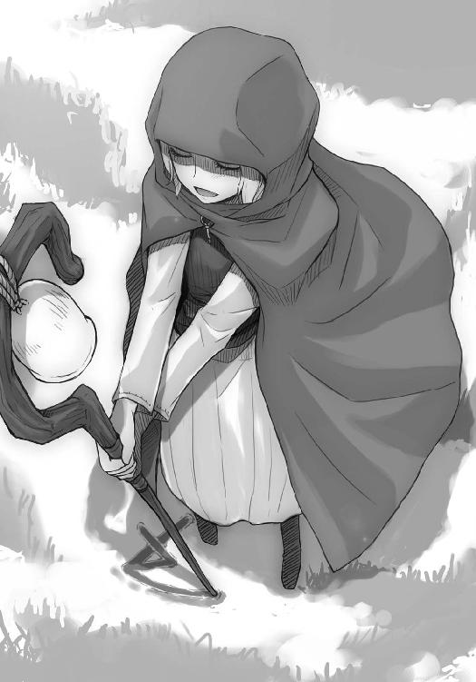
羊飼いが風に言葉を乗せて遠くの者と会話ができる、という話にも真実味が宿るというものだ。
「疑った無礼をお許しください。あなたは善き羊飼いに違いない」
荷馬車から降りてロレンスがそう言うと、娘の羊飼いは口元に笑みを浮かべて微笑んだ。フードでほとんど顔を隠しているので確かではないが、その口元から察せられる顔は美人だ。
なるべく紳士に振る舞おうとしつつもロレンスの胸中は好奇心で一杯だ。
女の商人は珍しいが、女の羊飼いはもっと珍しい。それも、年若そうな美人とくればもともと好奇心旺盛な商人が興味を抱かないわけがない。
ただ、そうは言っても商売以外のこととなるとからっきし駄目なのがまた商人ともいえる。
ロレンスはそのよい一例のようだった。道ですれ違おうとしている商人と羊飼い以上の会話のきっかけが見つからず、結局胸中の好奇心には蓋をしてお決まりの文句を口にしたのだった。
「神のお導きで出会えた羊飼いの方に道中の安全を祈っていただきたいのですが」
「喜んで」
羊が草を食むようにおっとりとしたその声に、ロレンスの中の好奇心は夏の雲よりも大きく湧き上がる。さすがにそれが顔に出るようなことはなかったが、努めてその好奇心に蓋をしなければならなかった。図々しく身の上を聞いたりするのは性分ではないし、うまい言葉を言えないのもまた性分だからだ。お祈りを受けるために羊飼いの側に歩み寄りながら、港町パッツィオの両替商、ワイズの口のうまさが少し羨ましくなくもなかった。
それに加え、荷馬車には羊飼いが大嫌いだというホロがいる。
なんとなくその最後の理由が好奇心の頭を抑える一番大きな錘になっていた。
そんなことを考えていると、ロレンスに安全祈願を頼まれた羊飼いは長い杖を両手で持ち、高々と掲げながら呟くように祈り出した。
「パルティ、ミス、トゥエロ、モロウ。ル、スピィンツィオ、ティラット、クル」
聖典に載っている古代の言葉とも、現在各国で使われるどの言葉ともまったく違う羊飼い独特の言葉は、何度聞いても神秘的なものだ。
羊飼い達自身も本当の意味は知らないと言うのだが、旅の安全を祈る際にはどこの国の羊飼いであっても、示し合わせているかのようにこの文句だ。
最後に杖を下ろし、角笛を長く吹くのも同じだ。
ロレンスは安全祈願に礼を言い、茶色い銅貨を一枚差し出した。羊飼いへのお礼は金貨でも銀貨でもなく銅貨というのがしきたりで、羊飼いがそのお礼を断ってはならないというのもしきたりだ。ホロより少し大きいといった感じの手が差し出され、その上に銅貨を置くともう一度礼を言った。
やはり会話のきっかけはつかめず、ロレンスは少し残念でありつつも仕方ないかと諦めた。
しかし、「では」と戻ろうとしたその足はとどまった。
意外なことに、羊飼いの娘のほうから声をかけてきたのだ。
「あの、リュビンハイゲンに行かれるのですか？」
ホロとはまた違う感じに澄んだ声は、とても過酷な職業の一つに数えられる羊飼いのものとは思えない。ロレンスは振り向き様にちょっとホロに視線を向ける。ホロは御者台の上で退屈そうにそっぽを向いていた。
「ええ。ポロソンから向かう途中です」
「この道のお話はどちらで聞かれました？」
「聖人メトロギウスの巡礼路です。つい先日のことですよ」
「そうですか......あの、狼の話は聞かれませんでした？」
その言葉で、わざわざ羊飼いの娘が声をかけてきた理由がわかった。
ロレンスのことを、事情を知らないでこの道を選んだ行商人だと思っているのだろう。
「聞きましたよ。ただ、急ぐものでこの道を選んだのです」
ホロのことをわざわざ言う必要はない。狼が出るといわれる危険な道でも金儲けのためならためらわずに進むのが商人だから、怪しまれることもないだろう。
しかし、羊飼いの娘の反応はなんとも不思議なものだった。
なぜか、残念そうにしたのだ。
「そうですか......」
肩を落として静かにそう言う様は、明らかになにかを期待していた感じだ。ただ、なにを期待すると言うのか。
会話を反芻し、頭を巡らせれば考えられる可能性は少ない。
ロレンスが狼のことを知らなかったか、または道を急いでいなかったか。
会話のやり取りから推測できるのはこのくらいのものだ。
「どうかしましたか？」
ここでこう聞かないのは商人云々よりも男として駄目だろう。ロレンスは取引用の笑みを浮かべ努めて紳士的に振る舞った。
後ろでおそらく不機嫌そうにしているホロのことは頭の隅に追いやった。
「え、あ、いえ......その......」
「なんなりと。それとも、なにかご入用ですか？」
商談に持ち込めればロレンスの舌も頭もよく回るというものだ。
なにかを売りがてらに、珍しさでいえば妖精ほども珍しいのではないかといえる娘の羊飼いのことを聞けるかもしれない。もちろんのこと、さてついでになにを売りつけようかと笑顔の下で算段もする。
そして、それらは次の一言で霧散した。
「その、私を......雇っていただけない、でしょうか......と」
長い杖をすがるように両手で抱きながらそんなことを申し出た羊飼いを前に、ロレンスの頭の中身が音をたてて空転する。
羊飼いが自分を雇って欲しいと頼む時は、あなたの羊をお預かりしましょうかということに等しい。
ただ、ロレンスは羊を飼っていない。飼っているとすれば、生意気で賢い狼だ。
「えー、私はごらんのとおりの行商人で、羊は商っていません。せっかくの申し出ですが......」
「い、いえ、そうではなく」
慌てて羊飼いの娘は手を振って、それからなにかを考える時間を稼ぐかのようにきょろきょろとする。
フードを目深にかぶっているので視線は見えないが、なにかを探しているふうなのは明白だ。
探し物は自分の申し出を上手に説明するための道具だろう。
そして、それはすぐに見つかったようだ。
それがわかったのは、ホロのような耳がそのフードの下にあるのではないかと思うくらい、ほっとした様子が伝わってきたからだ。
羊飼いの娘が見つけたなにかは、そんな主人の側で油断なく腰を下ろしていた忠実な僕にして黒い毛をした四足の騎士。牧羊犬だ。
「私は羊飼いです。えっと、羊を育てる以外にも、狼を払うことができます」
喋りながら小さく右手を振ると、黒い犬がすっと立ち上がる。
「もし私を雇っていただけるのでしたら、その、狼からあなた方の旅を守ることができます。いかがでしょうか」
犬も主人のそんなつたない売り文句を後押しするように一回吠えて、たたっと駆け出すとばらけはじめた羊の群れをまとめにかかる。
治安の良くない道を行く時に傭兵や騎士を雇うことはあっても、狼から身を守るために羊飼いを雇う話は聞いたことがない。確かに考えてみれば優秀な羊飼いが側にいるということは狼に対して鋭敏な目と耳を持つということだ。しかし、それでもそんな話を聞いたことがないというのは、そんなことを申し出る羊飼いが皆無だからだ。
ロレンスは羊を狼から守る予行練習をするかのように駆け回る犬を見て、視線を目の前の羊飼いの娘に戻す。
孤独に暮らす羊飼いの娘は愛想笑いをする機会もないのだろう。フードの下でぎこちなく口元を笑みの形にしていた。
少し考える。それから、口を開いた。
「ちょっと、待ってください。連れにも聞いてみます」
「お、お願いします」
ロレンスとしては無条件に雇ってもいい気がするくらい必死な感じだが、雇うということは相手に金を払うということで、金を払う時は商人の頭から損得勘定以外のことははじき出されるものだ。
ロレンスは小走りに御者台に駆け寄って、その上で暇そうにあくびをしていたホロに声をかけた。対狼の羊飼いなら、その当の狼に話を聞くのが一番だろうと思ったのだ。
「あの羊飼い、どう思う？」
「ん？ んー......」
目尻をこすりながらホロが視線を羊飼いに向け、ロレンスも釣られてそちらを見ると羊飼いの娘はこちらを見ずに犬を操っていた。
別に腕前を披露しているわけではなく、単に羊がばらけないようにしているだけなのだろう。
羊たちは歩かせている時よりも止まっている時のほうが好き勝手に拡散してしまうものだ。
ホロは視線を戻すと面倒くさそうに口を開く。
「わっちのほうが可愛い」
馬が笑うようにいなないた。
「そうじゃなくて、腕前のことだ」
「腕前？」
「羊飼いとしてどうなのかわからないか？ 腕が立つようであれば、雇ってみる価値はあるんだけどな。話聞いてただろ」
ちらり、とだけ羊飼いを見て、ホロはすぐに視線を戻して恨めしそうに言う。
「わっちがおるじゃないかや」
「それはもちろんそうだ。ただ、羊飼いを狼からの護衛に使う、なんて発想なかったからな。新しい商売になるかもしれないだろう？」
人が噓を言っているかどうかわかる賢狼なのだから、今の言葉に噓などないことはわかっているはずなのに疑わしげな視線を向けてくる。
ただ、すぐにホロの狙いに気がついた。
「色香になど惑わされちゃいない。お前のほうが可愛いからな」
これでいいか？、とばかりに肩をすくめてやると、「なんとか及第点」と返された。点は辛いが、楽しそうに笑っていたのでそこまでが冗談なのだろう。
「で、腕前は？」
そう聞くと、途端に顔が渋くなる。
「実際に狼とのやり取りを見ておらぬからなんとも言えぬが、まあ、上の中というところかや」
「もう少し具体的に」
「わっちなら羊を狩れる。じゃが、並みの狼では束になっても軽くあしらわれるじゃろうな」
意外な高評価だ。
「羊の扱いが実に長けておる。厄介な羊飼いというのは賢い犬を持ち、その犬ととてもよく呼吸が合っている者を示す。あれはその二つを満たしていると思う。声を聞く限り年若そうじゃが、末恐ろしい。いっそのこと今のうちに──」
「わかった。ありがとう」
冗談なのか本気なのかわからないが、わさわさと尻尾が鳴っていたので半分くらい本気かもしれない。
ただ、羊飼いとしての腕が聞ければ十分だ。試しに雇うといっても金を払って雇うのだからへたれでは困る。そう思ってきびすを返そうとして、ホロの言葉に縫いとめられた。
「ぬしよ」
「うん？」
「あれを本当に雇うのかや」
ホロの声に責めるような響きが含まれていた。
言われて思い出した。ホロは羊飼いがお気に召さない。
「あー......そんなに嫌いか？」
「嫌いかどうかと言われれば嫌いじゃが、そうではない。わっちではなく、ぬしのほうこそいいのかや、と聞いておる」
虚を突かれるというのはこのことだろう。
「......なにがだ？」
ホロの言うことがわからず正直に聞き返すと、ホロは小さくため息をついてから不機嫌そうに目を細めた。赤味がかった琥珀色の瞳が冷たい火のように鋭くなる。
「あれを雇うということはしばらく共に旅をするということじゃろう。それでなにも問題ないのかや、と聞いておる」
ホロの目はロレンスのことを冷たく見据えている。
御者台に座っているのでホロの目線はロレンスよりも上だ。
だからというわけでもないだろうが、なにかすごく怒っているような気がしてならない。
ロレンスは慌てて頭をめぐらせる。羊飼いを雇うことでホロがなぜ怒るのかと。
最大の理由であるホロが嫌っているということを除けば、考えられる可能性などほとんどないような気がする。次々に選択肢が消えていき、一つの結論が残った。
もしかして、ホロは二人旅がいいのだろうか、と。
「嫌か？」
「嫌というわけではない」
そっけなく答えるその様が逆にすねているように見える。ホロにもこんなところがあるのかとほほえましく思い、ロレンスは少し笑いながら口を開いた。
「リュビンハイゲンまで二日くらいだ。駄目か？」
「......駄目ということはありんせん」
ちらりと視線を向けて言うところがなんとも可愛らしい。
「まあ、悪いが少し辛抱してくれな」
ホロの意外な可愛さについ顔が笑ってしまう。
しかし、ホロは眉根にしわを寄せる。
「わっちがなにを辛抱するんじゃ」
そして、ホロはそんなことを言った。
「ん、そりゃあ......」
と、ロレンスは口ごもる。まさかホロが妬いているからとも言えるわけがない。そんなことを言えばきっと意固地になって反論するはずだ。
「本当に単に羊飼いが狼の護衛として役に立つか試すだけだ。二日くらい辛抱できるだろう？」
「......できぬこともないが、問題は違うじゃろうが」
「そりゃあ......」
と、羊飼いの娘のほうを気にしながらロレンスが言いかけたその隙間に、ホロが言葉を滑り込ませてきた。
「わっちはヘタに他の者と旅をしたらわっちのことがばれるのではないかと、そう思いんす。わっちはかまわぬが、ぬしが困ろう？」
その言葉に、ロレンスは背筋がびしりと固まる音を聞いた。それが気のせいでもなくまた大げさなことでもないというのは、ロレンスの様子に遠目にも気づいたらしい羊飼いの娘がこちらを窺うように首をかしげたことでもわかる。
そうだ。それだ。その可能性だ。なぜそんな当然のことを勘違いしていたのかと、ロレンスは首筋から一斉に流れ出る脂汗と共にその過ちを洗い流してしまいたかった。
ホロがロレンスとの二人旅を望むから、などという可能性のほうを先に考えるなんてどうかしている。それはあまりにも自信過剰というものだ。
ホロの視線が後頭部に突き刺さる。
遠目にもロレンスの様子の変化がわかるくらいなのだ。すぐ側にいる賢狼なら心の機微までお見とおしだろう。
「ほほ～う。なるほどの」
そんな言葉により、ロレンスの顔に一気に血が駆け上る。
「ぬしは、んん、こう言ってもらいたいわけじゃな」
ホロをゆっくりと振り向くと、意地の悪い狼娘は寂しそうな顔をしていた。
それから、口元に軽く握った手を当てて、しおらしく口を開いたのだった。
「わっちゃあ......ぬしと二人だけの旅がいい......」
わざわざ体を軽くひねってしなまで作ってそう言って、ふと顔を背けるとすぐに再び振り向いた。そのわずかな合間に表情が入れ替わっていて、冷たい視線と共に追い討ちを放つ。
「たわけ」
ロレンスはぐうの音も出ず、恥ずかしいやら悔しいやらでまっすぐ立つことすら覚束ない。
ただ、もうとにかくホロの目の前から立ち去りたいという一心できびすを返し、歩き出そうとして呼び止められた。
まだからかい足りないのかとロレンスが振り向くと、ホロは御者台の上で笑っていた。
呆れるような笑顔。
それを見た瞬間、心のうちが落ち着くのを感じた。
「まったく」
ため息交じりのそんな言葉に、ロレンスは自然と苦笑いを返していた。
「ま、二日くらいならばれぬじゃろ。勝手にすればよい」
ホロはそう言ってあくびをして、話は終わりだとばかりにそっぽを向いた。
ロレンスはうなずいて羊飼いの娘の元に小走りに駆け寄る。
また、ホロと親しくなれたような気がしたのだった。
「お待たせしてすみません」
「いえ。あ、あの」
「リュビンハイゲンまで四十トリエでいかがでしょう。実際に狼に襲われて無事でいたら、また別料金ということで」
ホロとの話に時間がかかったため、断られると思っていたのだろう。羊飼いの娘はしばし口をぽかんと開けたまま固まっていたが、やがてロレンスの言葉が頭に染み渡ったようで慌てて何度もうなずいた。
「お、お願いします」
「こちらこそ」
と、ロレンスは契約締結の証である握手をしようとして、まだ羊飼いの娘の名前を聞いていないことに気がついた。
「お名前を伺ってもよろしいですか」
「あ、す、すいません」
フードを取ってないことには自分で気がついたようで、やはり慌ててフードをとる。
ここ最近はホロを前に慌ててばかりいるロレンスにとって心休まる光景だ。
フードの下から出てきたのは羊と同じくらい気の弱そうな娘の顔で、くすんだ金髪をポニーテールにしてはいるが、櫛が通っていないのは明白だ。ちょっと瘦せすぎなこともあり貧相な感じだったが、目は綺麗なこげ茶色で、清貧という言葉がぴったりな印象だった。
「ノ、ノーラ・アレントです」
「改めまして、クラフト・ロレンスです。商売上ではロレンスで通っています」
おっかなびっくりといった感じで差し出されたノーラの手をロレンスのほうから握ると、ホロの手よりほんの少しだけ大きい手がびくりとすくむ。が、やがて落ち着いたようで軽く握り返してきた。大きさはほとんど変わらないが、やはり硬さは羊飼いのものだった。
「それでは、リュビンハイゲンまでよろしくお願いします」
「お願いします」
その笑顔は、柔らかい夏の草のようだった。
羊と一緒ではゆっくりとしか進めないのではないかと思っていたのは間違いだったようだ。
羊の足は思いのほか早く、下り坂などでちょっと勢いがつくと荷馬車は簡単に引き離されてしまう。
鳴き声は相変わらずのんびりとしたものなのに、急流を白い布が流れるように走っていく。
もちろん、ノーラはその後を苦もなくついていく。今のところ、道の先頭を羊の群れが行き、その後ろにノーラ、さらにその後ろにロレンスの荷馬車という形になっていた。
「エネク」
ノーラがその名を呼ぶと、黒い毛をなびかせた犬のエネクが黒い火矢のように駆け戻ってきて、次の指示を待ちきれないとばかりに飛び跳ねる。それから、杖の先につけられた鐘が鳴らされるやいなや一目散に羊の群れの先頭に駆けていった。
羊飼いの腕前そのものに関しての知識はあまりないが、牧羊犬の捌き方は見事なものだった。エネクとの連携は一日やそこらでは得られそうにないものだ。
ただ、エネクの年齢そのものもかなり高そうなのだ。ノーラはせいぜい十七か八くらいのものだから、親が羊飼いで親の牧羊犬を譲り受けた口だろうか。
商人として以上の好奇心が顔を出す。
「ノーラさんは」
「はい？」
「もう長いこと羊飼いを？」
ロレンスの質問を受け取ってから一度鐘を高く鳴らし、歩調を緩めて荷馬車の右側に来る。
御者台の左側ではホロが完全に眠りこけていた。
「まだ、四年くらいです」
唄と踊りと旅人に乞われた時の祈りの文句などをいくつか覚えておけば誰でもすぐになれるという職業なので、若くても羊飼いを十年続けているということがざらだ。
杖と牧羊犬がなくとも枯れ木で羊の尻を叩きながら歩けばそれで立派な羊飼いだ。
「牧羊犬、おっと、エネクはご自分の手で？」
「いえ、拾ったんですよ」
意外な答えだ。優秀な牧羊犬は羊飼いの財産だからそれをうっかり逃がすなど考えられない。
得られる答えは一つしかない。元の飼い主が、牧羊犬を残したままにするような理由で羊飼いを廃業したのだ。
「エネクを拾ってから、羊飼いになったんです」
「それまでは？」
と、つい聞いてしまっていた。
「修道院併設の貧民救済院で、お手伝いをしながら住まわせてもらっていました」
過去を詮索するのはよくないことだ。それでもノーラは気分を害したふうもなく、さらりと答えてきた。珍しい娘の羊飼いだから、身の上の詮索は慣れたものなのかもしれない。
ただ、貧民救済院にいたということは身寄りも財産もなにもなかったということだが、今では立派に羊飼いをしているのだから神もきちんと人々に幸運を授けているようだった。
「救済院でお世話になっている時も、常々自分で仕事ができればと思っていましたから、エネクと出会えたのは幸運でした」
「日々のお祈りの賜物でしょう」
「ええ。本当に神様が私とエネクを引き合わせてくれたとしか思えませんでした」
カラン、と鐘を鳴らすとエネクが走って戻ってくる。
エネクの乾いた足音がロレンスの耳に届いたあたりでホロが少し身じろぎして、ロレンスに軽くよりかかる体勢になった。寝ていても狼が来たらわかるというのはきっと本当なのだろう。
「救済院が商人に土地を騙し取られて、途方に暮れていた時に出会ったんです」
同じ商人として少し耳の痛い発言だが、よくある話といえばそうだ。
「出会った時は、ずたぼろで、怪我だらけだったんですよ」
「狼に？」
ぴくり、とホロが反応したような気がした。もしかしたら狸寝入りかもしれない。
「いえ、山賊か傭兵だと思います......狼が出たことなどなかったところなので。それで、この杖をくわえて、丘のちょっとした崖下にうずくまっていたんです」
「なるほど」
首元を撫でられてエネクが嬉しそうに吠える。
きっと、半死半生で崖下にうずくまっていたのはエネクだけではないはずだ。救済院を追い出された者たちの末路はそのほとんどが餓死となる。苦難を無事に乗り越えた一人と一匹の絆は生半可なものではないだろう。
それに、羊飼いは孤独で過酷な職業だ。自然、話し相手はこのエネクになるだろう。
少なくとも、荷馬よりかは話甲斐のある相手だとは思う。馬は結構冷たいのだ。
「しかし、羊飼いの方から護衛を申し出てもらったのは初めてですよ」
「え？」
「普通、羊飼いの方はこんなことしないでしょう」
笑いながら言うと、ノーラは少し狼狽した後に恥ずかしそうにうつむいた。
「その......」
「え？」
「誰かと、話がしたくて......」
身の丈を越えるほどの長い杖をすがりつくように持つのは癖らしい。
ただ、そんなふうに言うノーラの気持ちももちろんわかる。
町の人間でない限り、孤独に襲われない者たちのほうが少ないのだから。
「ただ、それもあるんですが」
今度は表情を少し明るくして、前を向いて口を開いた。
「私、服の仕立て職人になりたいんです」
「ああ組合加盟費ですか」
ロレンスの言葉にまた少し恥ずかしそうにしたのは、商人でもない限り金の話をするのははしたないことだと思われがちだからだろう。
「最近はどこの町の加盟費も高いですからね。まあ、新しい町だとそうでもありませんが」
「えっそうなのですか？」
こげ茶色の綺麗な目が、微笑ましいほどわかりやすく期待の色に輝いた。
旅に暮らす者にとって、町の中で職を持ちそこに暮らすことは悲願とも言える。それが大の男でも辛いといわれる羊飼いを営む娘であるのならより強く思うことだろう。
「新しく造られる町なんかでは、時折無料で加盟できる場合などもありますよ」
「む、無料......」
信じられない、と顔に書いてあるかのように呟くノーラを見ていると、ここ数日ホロにふりまわされっぱなしの身としては実に心安らぐというものだ。
「これから道を行く商人などに出会ったら、こまめに新しい町の建造計画がないか聞くといいですよ。もしもその人がそれを知っているのであれば、快く教えてくれるでしょうから」
財宝のありかでも聞いたかのように顔を輝かせたノーラは期待に満ちた笑顔でうなずいた。
こんなに喜んでもらえるのなら教える甲斐もあるというものだ。
それに、ノーラにはついつい力になってあげたくなるような雰囲気がある。細い腕で一生懸命に頑張っているような、そんな感じがひしひしと伝わってくるのだ。
口先一つで軽く海千山千の商人を手玉に取ってしまう隣の狼も少しは見習って欲しいものだと、つい思ってしまう。
そうすればもっと可愛げがあるだろうに、という言葉は胸中ですら呟くのをためらったのだが。
「ただ、最近は新しい町の建造も少なくなりましたから、幸運にめぐり合えることを神に祈りつつ、地道に稼ぐのが手でしょうね」
「はい。それにいつも神様をあてにしていたら怒られてしまいますしね」
残念がると思ったので、笑顔で冗談っぽくそう言ったノーラに少し驚いてしまった。
隣にホロがいなかったら、御者台に座ることを勧めていたかもしれない。
そう思った瞬間、当のホロがもそりと身じろぎしたので慌てて口を開いていた。
「え、えーと、まあ、行商人の立場から言わせてもらえば、もしかしたら羊を預かって稼ぐよりも、商人たちの護衛をしたほうが儲かるかもしれませんね。縄張り争いも厳しいでしょう？」
「......ですね」
ノーラは苦笑いだが、返事をするまでのわずかな間から苦労が察せられるというものだ。
「安全なところはどこも他の羊飼いの方がいますから」
「狼だらけと評判の場所しかないわけですか」
「はい」
「狼は厄介ですからね......いっつ」
と、ロレンスは腿に走った激痛に思わず御者台から腰を浮かす。ノーラが不思議そうに視線を向けてきたが、作り笑いでごまかして座りなおした。
ホロは狸寝入りだったようだ。腿をつねられたのだ。
「狼の方たちも食べ物が欲しいのでしょうけど、時には私たちの命も狙われますから......やっぱりできれば安全なところにいたいですね」
「狼は狡猾ですし、陰険ですからね」
つねられたお返しとばかりにそう言ってやった。
「あまり悪口を言うと聞かれているかもしれませんから、言いません」
少し首をすくめて言うところがまた子供っぽくて魅力的だったが、「ですね」と同意したのはもちろん隣に当の狼がいるからだ。
「しかし、狼が出ると評判の場所でこうして無事羊を守っていられるほどの腕があれば、そのうちたくさんの羊を任せてもらえるんじゃないですか？」
「いえ、私が無事にいられるのは神様のご加護のお陰ですし......それに、お仕事をいただけるだけでありがたいんです。たくさんの羊なんてとても」
謙遜だろうとは思ったが、浮かない笑顔の下には他にもなにかありそうだ。考えられることなんてそう多くはない。もしかしたら雇い主に不満があるのかもしれなかった。
よくないこととは思ったものの、再び好奇心が顔と共に口に出た。
「それは雇い主に見る目がないのかもしれませんよ。思い切って変えてみたらどうでしょう」
羊飼いだって商売だ。よりよい条件のところに鞍替えするのは当然だ。
ただ、ノーラはその言葉に驚いて声を上げた。
「え、変えるだなんてそんな、とてもできません」
雇い主が狼よりも悪口に耳ざといかもしれないから、という様子でもない。本気でそう思っているようだ。
「失礼。申し訳ない。商人をやっていると、とかく物事を損得で考えがちになってしまいまして」
「あ、い、いえ」
と、ノーラ自身、自分の言葉にびっくりしていたようだったが、ふと呟くように言ってきた。
「......あの」
「はい？」
「その、雇い主を変える、というのは......よくあることなんですか？」
意外な質問だった。
「ええ、まあ、条件が気に入らなければ別の雇い主を探すのが普通じゃないでしょうか」
「そうですか......」
こんなことを言うからには、やはり不満があるのだろう。
しかし、鞍替えの話を青天の霹靂のように驚いたのは、そんなことを思うのはとんでもないこと、という思いがあったからだろう。だとすると、ノーラの雇い主は自然に導かれる。
ノーラは身寄りもなにもないのだから、羊を預けてくれる人を探すまでには並々ならぬ苦労があったことだろう。大体、がっちりとした男の羊飼いたちに羊を預けても十匹中八匹が無事に戻ってくればよいとされるのが相場だ。非力そうなノーラに預けたら、五匹戻ってくるかも怪しいと思うのが普通だろう。
そうなると、そんなノーラに羊を預けるのは損得を越えた慈悲の心を持つ者以外にない。
つまり。
「失礼ですが、雇い主の方は教会ですか？」
その瞬間、ノーラの顔が見ていて嬉しくなるほど驚きのものに変わった。
「え、なんでそれを」
「それは商人だけの秘密です」
そう言って笑うと、ホロが軽く足を踏んできた。調子に乗るなということだろう。
「いえ、その......はい。教会の司祭様から羊をお預かりしているのですが......」
「教会でしたら仕事に困らなくてよいでしょう。よい雇い主に巡り合いましたね」
おそらくは貧民救済院つながりだろう。世の中、幸運と実力よりも人脈がものをいう場合のほうが圧倒的に多い。
「はい。本当に幸運でした」
そう答えてノーラは笑った。
しかし、噓と世辞にまみれた商談の中から真実を見つけ出すことを生業とする商人には、あまりにもわかりやすすぎる噓の笑顔だ。
ノーラがふと顔をそらしてエネクに指示を出している合間に、さっきから狸寝入りをしているホロを見ると、ホロもロレンスのほうを見ていて、ぷいと顔を背けて目を閉じた。
口に出せば、同情などせん、と言ったかもしれない。
「羊を預けていただけますし、本当に色々と気遣ってもらっていますし」
半ば自分に言い聞かせている、というのが透けて見えて痛々しかった。
ここまでくればノーラの浮かない顔の理由もわかるというものだ。ノーラは教会に雇われているのではない。監視されているのだ。
もちろん初めのうちは慈悲の精神によって、羊を預けてくれたのだろう。だからこそノーラも雇い主を変えるなんていう発想が青天の霹靂のように思えたはずだ。
しかし、元々が異教徒と思われがちな羊飼いだ。事あるごとに悪魔の手先と呼ばれ、いわれのない批判を受ける女がそんな職業に就けば、頑迷な教会がやがて疑念を持ってもおかしくはない。それが結構な腕前ともなればいよいよだ。きっと異教の魔術を使っているに違いない。そんなふうに思われているはずだ。
そして、いくら鈍感な者であってもそういった雰囲気に気がつかないわけがない。
それに、そうであれば同時に給金が高いわけがない。きっと相当な薄給でこき使われ、とても金など貯まる感じではないのだろう。だからロレンスに護衛の話などを持ちかけたのだと推測できた。
ただ、この問題にはこれ以上深入りしないほうがいい、とロレンスの商人としての嗅覚が告げていた。
もう好奇心は満たされたのだ。これ以上立ち入る時は、その後の結果にも責任を持たなければならない。
「なるほど。ただ、それならば雇い主を変える必要はないと思いますよ」
「そうなのですか？」
「ええ。教会は清貧を謳う場所でもありますから給金については少し低めかもしれませんが、神が我々を見放さない限り教会がなくなることはありません。すると仕事に困ることもありません。仕事がなくならなければ食べるには困りません。ありがたいことでしょう？」
ノーラの疑念を煽り、雇い主を変えるようにと言っても教会に目をつけられている羊飼いを進んで雇おうとする者はいない。一人の娘から職を奪うようなことになっては大変だ。
もっとも、噓は言っていないのでノーラもそんなものかと思ったようだ。ゆっくりと何度かうなずいて、「そうですよね」と言った。
仕事があるだけまだましといえるのも真実だが、それでも希望くらいは持ってもいいはずだ。ロレンスは一回咳払いをすると、努めて明るい口調で言葉をかけた。
「まあ、私もリュビンハイゲンには何人か知り合いがいますから、狼の護衛が欲しい商人がいないか聞いてみますよ。副業をしてはならないとは、神もお定めになっていませんしね」
「本当ですか？ お願いします」
ぱっと輝くノーラの顔を見るとついついロレンスの目尻も下がってしまう。
これではパッツィオの港町にいた女好きの両替商ワイズのことなど馬鹿にできない。
ただ、ノーラには町の娘とも職人の娘とも露店の娘とも違う、独特のすがすがしさがあるのだ。修道院の修道女たちは得てして真面目で実直だが、物事を後ろ向きに考えがちだったり、わざと喜怒哀楽を消そうとするところがある。
ノーラは修道女たちのそんなつまらないところを全部良い方向に置き換えたような感じなのだ。
女好きでなくともよく思わないわけがない。賭けてもいいが、そんなノーラに尻尾を振るエネクは絶対に雄だろう。
「旅に暮らす人間は町に住むのが共通の夢ですからね」
それでも、この言葉は紛れもなく真実だ。
ノーラもうなずいて力強く杖を高く掲げる。
からん、と響いた鐘の音に合わせてエネクが走り、羊が綺麗に道を曲がる。
その後は旅の際の食べ物の話で盛り上がった。
広大な草原の先は、見通しのよいなだらかな道だった。
羊飼いの夜はとても早い。日が暮れ始める前にその日の野営場所を決め、太陽が茜色になってようやく農夫達が家路につくといった頃にはすでに丸くなって眠っている。これは日が暮れて道の往来が途絶えてから起き出して、夜通し犬と共に羊を見張るためだ。
そして、夜が明け始める頃に再び犬と交替して眠りにつく。羊飼いが過酷な職業であるという理由の一つに眠る時間が極端に少ないというものがある。夜はきちんと眠る行商人はこれと比べればまだまだ楽なものだった。
「大変な仕事だな」
まだ火を起こすほど寒くもないので、ロレンスは干し肉をくわえて荷台でくつろぎながら何気なく呟いた。そこからはノーラが路傍の石のように丸くなって寝ている様がよく見える。荷台を貸そうかとも言ったのだが、いつものことだからと少しくぼんだ草地で丸くなってしまったのだ。
ロレンスがそんなノーラから視線を戻すと、右隣ではようやく人の目がなくなったとばかりに尻尾を出して毛づくろいを始めていたホロがいる。
一日に何回も飽きずによくやるな、と真剣そのものの横顔を見ながら思っていると、毛の手入れをしていたホロがふと小さく口を開いた。
「尻尾は毎日の手入れが大事じゃ」
一瞬なんのことかわからなかったが、ロレンスは自分の言葉を思い出して納得する。どうやら先ほどの言葉に対する返事だったらしい。声なく笑うと、ホロが不審げに顔を上げた。
「ああ、あの小娘のことかや」
「ノーラ・アレントだそうだ」
ホロはノーラのことを不機嫌そうに小娘と呼ぶ。それが面白くてわざとノーラの名前を言ってやる。
すると、言われたホロはロレンス越しに視線をノーラに向けて、すぐに視線を戻した。それから、くわ、と口を開けるとあろうことかロレンスがくわえていた干し肉を奪っていった。驚きのあまりにしばし呆然としてしまう。我に帰ってから慌てて取り返そうとしたものの、物凄い目で睨まれてその手を引っ込める。
からかったからというわけでもないだろうが、相当にご機嫌斜めのようだ。
それでもホロがロレンスの側でわざわざ毛づくろいをしているのは、怒りの矛先がロレンスに向けられていないからだろう。
明白なことだが、虫の居所が悪い原因は一つしかない。
「だから一応確認したじゃないか」
言い訳がましい感じになってしまうが、それを聞いてホロは小さく鼻を鳴らす。
「おちおち尻尾の毛づくろいもできぬ」
「荷台ならできないか？」
「ふん、荷台などでやっていたら......」
「やっていたら？」
ホロが突然言葉を吞み込んだので重ねて問うと、ホロは干し肉をくわえたまま唇を尖らせる。あまり言いたくないことのようだ。
どんな言葉を吞み込んだのか気にはなったが、これ以上聞くと本気で怒り出しかねない。
ロレンスは怪我をした馬のように扱いにくい雰囲気のホロから視線をそらし、水の詰まった皮袋に口をつけた。
「ぬしはずいぶん話がはずんどったようじゃな」
そして、そんなふうにホロが切り出したのは、ロレンスの頭の中からホロのことがだいぶ抜け、そろそろ日も暮れそうなので火を起こそうかと思い始めていた頃だった。
「ん、ノーラと？」
ロレンスから奪った干し肉をまだそのまま口にくわえているホロは、尻尾に目を落としてはいるものの、その目に自慢の尻尾が映っているようには見えない。
「向こうが話したいというんだ。別に断る理由もないだろう？」
よもや嫌いな羊飼いと話が弾んでいたから怒るほど賢狼の了見は狭くないだろう。
それに、ホロはずっと寝たふりをしていたのだ。ノーラのほうは時折ホロのことをちらちらと窺って、同年代に見えなくもないホロと話したそうにしていたようだったが、結局ホロの名前を確認したにとどまった。ホロが話に加わりたかったのであれば、いくらでもその機会はあったはずだ。
「それに、久々に普通の娘との会話だったしな」
ノーラのほうを見ながらおどけるように言ってホロに視線を戻すと、ロレンスは少したじろいだ。
ホロの表情が一変していたのだ。
ただ、それはホロが嫉妬のあまりに涙を浮かべていた、とかいう嬉しいものではない。
哀れむような顔で、ロレンスのことを見ていた。
「ぬしは、小娘がぬしと話すのを嫌がってたことにも気がつかんのかや」
「えっ」
と、ノーラのほうを向きかけたがそれは寸でのところで止められた。いつもいつも同じ手に引っかかっていては商人などやっていけはしない。
ピクリと首が動きかけたのはなかったことにして、落ち着き払い、いつかどこかで聞いた吟遊詩人の言葉を思い出した。
「ま、それもありだろう。いきなり好かれては、徐々に好かれるという楽しみがなくなってしまうからな」
聞いた当初はそういうものなのかなと半信半疑に思ったそれも、口に出してみると実感を伴うから不思議だ。確かに、いきなり一目ぼれされるよりも徐々に好かれたほうが楽しみがたくさんあるだろう。
ただ、ホロにはその言葉があまりにも意外すぎたらしい。
失礼なことだが、驚きのあまりか顔から表情が消えて、口からぽとりと干し肉が落ちた。
「なかなか俺の口もうまいだろう？」
これはさすがに笑いを狙って言ったのだが、半分くらいは本気だ。
しかし、それを聞いた途端、ホロは引いた波が津波となって押し返すように笑い出したのだった。
「ぐふっ......く、あはははは、に、似合わぬのお、ぶふっ......あははははは」
体をくの字にして腹を抱えて笑い、何度か笑いを吞み込もうとしてはこらえきれずに吹き出している。やがて顔が真っ赤になり、ついに前のめりに武具の山に倒れ込んで苦しそうに大笑いだ。
はじめのうちは共に笑いながらホロの反応を見ていたロレンスも、やがて苦い顔に変わらざるを得ない。
毛を綺麗に漉かれていつもよりふさふさになった尻尾が、助けを求めるようにぱしぱしと荷台を叩いていた。
「おい、笑いすぎだろ」
ここまで笑われたら、さすがに面白くなかった。
「ったく」
もう一度皮袋に口をつけて、笑われた怒りと、聞きかじりの詩人の台詞など言うんじゃなかったという恥ずかしさをまとめて水と共に飲み下したのだった。
「ふぅ......ふぅ......あー、笑った。ぶふっ」
「気が済んだか？」
ため息交じりの言葉は、地平線の彼方に沈みかけている太陽を見ながらだ。間違ってもホロのことなど見たくなかった。
「うむ。ぬしも意外な切り札を持っておる」
視界の隅でホロを見れば、ホロは武具の山の上にしなだれかかったまま、笑い疲れたといった顔を向けてくる。
実際、全力で走ったかのように息を切らして苦しげだ。
「まあ、お前の機嫌が直ったんならそれでいいけどな」
いくら羊飼いが嫌いだとは言っても、少しホロの機嫌は悪すぎるような気がする。まさかホロに限っては楽しく話す二人に本気で嫉妬、などということもないだろうし、尻尾の手入れに関してもまったくその機会がないわけではない。
もしかしたら人見知りするのかもしれないとも思ったが、ホロと最初に出会った時のことを思い出して、それだけは絶対にないかと思い直した。
「うん？ 機嫌？」
ただ、当の本人は笑い転げる最中に顔を見せた狼の耳をヒクヒクさせて、疑問符と共にいまだ涙の滲む視線を向けてきた。なにか不思議なものを見たような顔だ。
「機嫌悪そうだったじゃないか。尻尾の手入れができないと」
「......ああ」
ふと思い出したようだ。
「そうじゃったの」
そして、そう答えた時には落ち着いた顔だった。武具の山から体を起こしてちょこんと座り直し、目尻の涙をこすっている。
しかし、本当に今思い出したかのような様子を見ると、やはり尻尾の手入れができるできないのことなどどうでもよさそうな感じだった。それは不機嫌さを伝える口実で、本当のところはなにか他の理由があるのだろう。
「詮ないことじゃ」
ぽふ、と軽く尻尾の先端が床を叩く。
「それに、ぬしの切り札に笑ったらなんだかあほらしくなった」
思い出し笑いをするように笑って、それからふと顔を荷台の外に向けた。
「小娘は寒くないのかや」
そんな言葉で思い出した。日はだいぶ傾きかけていて、東の空はとっくに群青色になっている。そろそろ火を起こしたほうがいいだろう。
羊飼いは火を起こす習慣がないと聞くが、それは羊を見張ったり追いかけたりしなければならないからで、別に特別寒さに強いわけではないはずだ。
ロレンスはそう思いながら、独りくぼんだ草地で丸くなっているノーラを見た。
すると、ふと口元に気配を感じたのでそちらを見れば、ホロが干し肉を突き出していた。
「笑い賃じゃ」
「あれだけ笑っておいて干し肉一切れか」
「いらぬのかや？」
ホロが面白そうに笑うので、気恥ずかしさもあったが結局はそれを口で受け取ろうとした。
しかし、歯はがちんと空を嚙んだ。ホロがとっさに手を引いたのだ。
けたけたと笑うホロに付き合ったら負けだ。そんな子供じみたいたずらには付き合えないとばかりに無視をしてやる。
それから、いい加減火を起こさないと寒い中冷たい飯を食うことになるので荷台から降りようとしたところ、ホロがロレンスの服を摑んで口を寄せてきた。
ちょっとロレンスはどきりとする。
滲んだ涙に濡れたまつげが茜色の夕日を受けて輝いていたからだ。
「わっちは生の羊もたまにはいいんじゃないかと思うわけじゃが、どうかや？」
しかし、ホロの口から出てきたのはそんな言葉と鋭い牙で、夕闇に羊の声がどことなくもの哀しく響く中、ちょっと冗談には思えない。
なにせ、ホロは本当に狼なのだ。
悪い冗談を諫めるようにホロの頭を小突いてから荷台を降りた。
ホロは少しだけ唇を尖らせて、それから小さく笑うと荷台の上の薪と藁束をロレンスに手渡してくれたのだった。
リュビンハイゲンの町に入るには二つの検問を通らなければならない。一つは市壁の中に入るためのもので、もう一つは主要な道に設置され、大きなリュビンハイゲンの町をさらに大きく囲むようにして張り巡らされている検問だ。
リュビンハイゲンほどの町になれば、そこを出入りする人の数も膨大なため、まず町の外側にある検問を通り通行証をもらって、それから市壁の検問を再びくぐる。まともな旅人ならば正規の道を通るはずだから、その通行証をもらっていない者は市壁の検問で即座に追い返される仕組みになっている。
また、それは大都市ならではの大量の密輸や偽造貨幣の持ち込みに対しての牽制にもなっていた。
ロレンスたちがやってきた道は普段からあまり人が通らない道らしく、検問は粗末とまではいかなくとも、いつも使う道にあるものから比べたら簡素なもので、警備兵とノーラは顔見知りのようだった。ノーラは木と石を組んでわざと通路を狭くしてある検問所を不思議な術でも使っているかのように羊を通し、ロレンスたちも荷物の検査を受けてそこを通過した。
これがリュビンハイゲンの市壁となると打って変わって豪勢で厳しいものになる。
近辺に俗世権力が存在しないこの地域の、事実上の支配者となっているリュビンハイゲンの市壁を力ずくで突破するのはまず無理だ。土を掘って木を組んだだけの堀と壁が強固な市壁、と誇らしげに言われる中、ここは石造りの壁が完全に町をぐるりと囲み、一定の間隔をあけて見張り塔まで設けられている。町というよりも城に近く、一つ目の検問を抜けた直後に見晴らしのよい丘の上でホロが思わず感嘆の声を上げていた。
市壁の周りには畑が広がり、その間を通って放射状に町から道が延びている。
豚の群れが農夫に追われていたり、隊商の列が歩いているのも見える。かなり遠くのほうで白い絨毯のようなものが動いているのは、このあたりに広い縄張りを持つ羊飼いが連れている羊の群れだろう。一度に百頭を超える羊を連れた羊飼いも珍しくはない。しかし、リュビンハイゲンだとそんな凄腕の羊飼いがごろごろといてようやく町の肉の消費量をまかなえるといった感じだろう。
とにかく、その町はなにもかもが桁外れだった。
そんな見晴らしのよい坂を下り、ロレンスたち一行は畑の間を進んでいった。
町があまりにも巨大で坂の上から見た時はとても近そうに思えたそこも、実際に歩いてみるとかなりの距離だ。ノーラの羊が道の両脇の畑の作物を食い荒らさないようにと注意しなければならないこともあって、結構な時間をかけてようやく市壁の模様が見えるところまで来た。
そこまで来てロレンスは、歩きながらおもむろに二枚の銀貨をノーラに差し出した。
「それでは、これ、約束の四十トリエ」
トリエは粗末な銅貨のこと。しかし、銅貨四十枚ではかさばると思ったし、ロレンスが渡した銀貨二枚を両替屋に持っていけばトリエ銅貨にして四十五枚くらいになるはずだった。
色をつけて渡すのはノーラにわずかばかり恩を売るためだ。ノーラを雇った道中で幸い狼には遭遇しなかったものの、その腕前はロレンスが見ても目を見張るものだ。ホロに聞いてもやはり評価は高く、後々羊飼いとして頭角を現すのは目に見えている。その時のための投資だった。
「え、ですが、これ両替すると高くなって」
「投資ですよ」
「投......資？」
「腕のよい羊飼いと知り合いになれれば、羊毛取引で思わぬ儲け話にありつけることもありますからね」
わざとがめつい商人ぽく言うと、ノーラは楽しそうに笑ってから負けたように二枚の銀貨を受け取った。
「私たちはしばらくローエン商業組合の商館にいます。また羊を連れて野を行く予定があれば、顔を出してください。もしかしたら、護衛を欲しがっている商人を紹介できるかもしれない」
「はい」
「あ、一応お聞きしておきますが、護衛ができるのは私たちが通ってきた場所辺りですか？」
「えっと、カスラータと、ポロソンまで行けます。あ、それと、ラムトラまでも行けます」
カスラータは特になにということもない辺鄙な町だったが、ラムトラという町の名には驚いた。なぜなら、この地方の首領として君臨するリュビンハイゲンの支配下にない稀有な町だからだ。位置的には、ロレンスたちが今通ってきた道を途中で北に向かった辺りになるそこは、地図上ではリュビンハイゲンからそれほど遠くもない町だった。しかし、ラムトラとの間には騎士ですら怖気づくほどの不気味な森があるという立地条件から、リュビンハイゲンの侵攻を受けず、未だに異教徒が多く住むこの近辺唯一の町だった。
また、ラムトラまでの正規の道のりは超がつくほどの遠回りだから、わざわざそんな道のりを護衛できますと言うわけもない。きっとその不気味な森を抜ける自信があるのだろう。
そして、もしそうならばラムトラに行きたがる商人は多いはずだ。
「ラムトラですか。それなら、もしかしたら客がつくかもしれません」
パッと顔を輝かせて、「よろしくお願いします」と救済院にいた者らしく深々と頭を下げたのだった。
「それじゃあ、我々は南東門から入りますので、ここでお別れです」
「はい。またお会いしましょう」
そう言って鐘を鳴らすノーラにうなずいて、荷馬の頭を左に向けた。リュビンハイゲンの町はとても広く、大きな入り口だけで十七個もある。その中には羊や家畜などを大量に連れた者たち専用の入り口もあって、ノーラはそちらの出入り口を使わなければならない。
また、町の中は発展した都市にありがちな複雑怪奇な造りになっていて、目的地がわかっているならなるべく近い門から入るのが常識だ。それほどにこの町は広い。
ただ、一度気になって後ろを振り返ると、ノーラはまだロレンスたちのことを見ていて、ロレンスが振り向いたことに気がつくと名残惜しそうに手を振ってくる。
振り返さないわけにはいかなかったが、それをまたいいように笑われそうでちょっとホロが怖い。そう思って隣を盗み見ると、ホロはそれをわかっていたようにロレンスのことを見ていた。
「わっちをそこまで性悪だと思っとるのかや？」
ロレンスは苦笑いをして、ノーラに手を振り返してから前に向き直ったのだった。
「ふーむ。さて、桃の蜂蜜漬けとはどのような味なのか。実に楽しみじゃ」
「む......覚えてたのか」
これからくぐる検問で、一体いくら武具に通行税をかけられるかと思案していたところに嫌な発言だ。
「よもや買わぬとは言わぬよな？」
にこりと笑って小首をかしげる様が、見た目に反してとても怖い。目をそらして、祈るように呟いた。
「売ってなければ買えないからな」
「もちろんじゃとも」
まるで売っているのを確信しているかのような言い方だった。
「あ、それとわかってると思うが、さっきの検問所よりも気合入れて修道女のふりをしておけよ。修道女のふりをしておけば検問も大目に見てもらえるからな」
「うむ。これほどの町で騒ぎを起こすほどわっちは愚かではない。ただ、修道女に見えるかや」
「その点は問題ないんじゃないか」
と、素直に思っていたことを言ってしまってから後悔した。ホロは教会に何度かひどい目に遭っているという話だ。修道女に見えると言ったら怒るかもしれない。
「ん、ふふ。見えるかや」
しかし、言われたホロは嬉しそうだった。
「......怒らないのか」
「ん？ なんで怒るのかや」
「いや、まあ、教会はどちらかといえば敵だろう」
「そうでもありんせん。ぬしのような者がおるのと同じじゃ。基本的に修道女たちは皆優しい。それに、狼のわっちが見ても綺麗な者が多い。美醜は種族によらぬ」
なるほど、と思ってロレンスはとりあえずホロが怒らなかったことにほっとした。
それに、確かに修道女には美しい者が多い。従順、純潔、清貧をかたくなに守っているからということもあるのだろうが、実際のところは貴族の私生児が入れられることが多いからだ。
美しさを武器に貴族の妾となりたがる女はたくさんいるし、武芸や詩を武器に貴族の娘をたぶらかそうとする男たちも多い。
そして、得てしてそんな連中と貴族との間に生まれた子供のほうが、きちんとした妻や夫との間に生まれた子供より健康に育つことが多い。きっと貴族に取り入ろうとする男や女たちのほうが逞しいからだろう。
もちろんそんな子供は世に溢れる跡継ぎ争いの原因にもなるわけだが、その大抵が修道院に入れられる。そのせいで修道院には美男美女が多くなるのだ。
「ま、断食の繰り返しで倒れるような生活はわっちには無理じゃけどの」
その言葉には、ロレンスは他意なく笑ったのだった。
そんなことを話しているうちに市壁沿いの道を進んでいたロレンスたちの目に賑やかな人だかりが見えてきた。
町の南東の入り口だ。
大きく作られた門は外に向かって開け放たれ、次々と人が入っていき、同時に旅立っていく。
荷物と人相の検査は市壁をくぐった先で行われていて、それもかなりの数で行っているからこれだけの人通りがあってもほとんど待つことがなかった。
しかし、ポロソンとは違い誰一人として整列しようとしたり整列させようとしたりしないので、そこは勝手を知らないといつまで経っても町の中に入れない。勝手知ったるロレンスは他の人たちにぶつけないようにだけ注意して馬を進め、初めてこの町に来てなにをどうすればよいのか困っている連中をごぼう抜きにしてアーチ型にくりぬかれている市壁をくぐって町の中に入る。戦になればここが一つの防衛点にもなるわけで、ここだけ市壁が非常に厚くなっていたりもする。視線をひょいと上げれば格子状に太い木が組まれた吊るし門も見え、いつもこれが落ちてこないかとひやひやするが、あまりそういう事故は聞いたことがない。その門の少し手前の天井に開いている大きな穴は、敵が門にたどり着いたら上から煮えたぎった油を落とすためのものだ。その穴の周りだけ色が違うのは、実際に何度も使用されたからだろう。
そして、そんな市壁をくぐるとその先には人の出入りを検査する検査場があり、さらにその先にはもうリュビンハイゲンの町並みが見えている。
リュビンハイゲンに限らず、大抵の大きな町は頑丈な市壁で囲まれているために容易に町を拡張できず、建物の高階層化が進んでいく。この町はその程度が特にひどく、市壁をくぐってから先に見える町の様子は荷物を満載にした船倉のようだ。今にも溢れんばかりの建物がよく見える。さらにその先には、町の中心に建てられているリュビンハイゲン大聖堂の高い高い屋根が見えていたのだった。
「おい、そこの商人」
と、いう声に視線を戻す。薄い皮の鎧に身を包んだ警備兵がこちらを指差していた。
「町に見とれていると事故を起こすぞ」
「申し訳ありません」
横でホロがくすくすと笑う。
「さて、次は！ じゃあそこの今怒られた商人！」
きちんと整列しているわけでもないのでいい加減なものだ。ロレンスは恥ずかしい呼び方をされつつもおとなしく馬をそちらに向け、検査官に一礼する。
「通行証」
相手は忙しそうにその一言だった。
「こちらに」
「ふん。ポロソンからか。荷は？」
「武具一式が二十点」
市壁の外での商売は厳禁なので通行証との一致が必須だ。
ただ、それを聞いた検査官が何度か目をしばたかせた。驚いているようだった。
「武具を？ ポロソンから？」
「え、ええ。ラトペアロン商会から買い付けたのですが、なにか？」
リュビンハイゲンはその昔異教徒討伐の騎士団が砦を築いたことから始まった町なだけあって、今でも北方の地へと出征する騎士たちの重要な補給基地となっている。そのせいであらゆる周辺の町から武具が運ばれてきて、またそれが飛ぶように売れるのだ。
だから検査官の反応が不可解でロレンスは訊ね返したのだが、検査官はすぐにかぶりを振って荷台に目をやった。そこには革と鎖で編んだ兜、籠手、鎧、脛当てが一式として縄でくくられ、それが二十組積まれている。商品ではないが町に持ち込むとなると高額の税金がかかるぶどう酒はとっくに飲み干してある。
なにもやましいことはないし、検査官もそう思ったようだ。荷台に上がって一通り武具の中などに高関税がかかる金や宝石を隠していないかだけを検査して、すぐに下りた。ぞんざいなようだが焚き火用の藁束の中までさりげなく見ているあたり、やはり隠して持ち込むなど不可能だろう。
「確かにあそこから来る武具の類だな。で、納税は現金か現物か」
総額が百リュミオーネの武具ともなれば一割の関税だとしても十リュミオーネとなる。
十リュミオーネといえばトレニー銀貨にして三百枚以上で、そんな大量の銀貨を持ち歩く商人はいないし、支払われた銀貨の枚数を数える検査官のほうも大変だ。
そこで武具を税金の代わりとして引き渡せば、色々な問題がいっぺんに片づく。
なのでロレンスが「現物で」と言うと、「賢明な判断だ」と安堵のため息と共に言われたのだった。
「向こうで武具二組を渡してこい」
検査官は喋りながら手元の紙に羽根ペンで記述して、ロレンスに手渡した。
二十組の武具のうち二組を関税として差し出すのだから、一割の関税となる。
妥当な金額だったので素直にうなずき、紙を受け取った。
また、ホロについてもおとなしくしていれば修道女そのものだからか不問だった。教会都市ということもあって、聖職者や修道女などに疑いをかけると厄介なことになるのだろう。
なんにせよ検問をうまく抜けられたことにほっとしつつ、ロレンスは御者台から下りて馬の手綱を握りながら歩いていく。この先はさらに人通りが多くて危ないからだ。
徴税所は飛び交う言葉も着ている服も様々な文字どおり戦争のような騒ぎだ。税が徴収される場所ではお決まりの値切りや哀願の声も聞こえてくる。
ロレンスはもちろん税金を値切るような馬鹿な交渉などせず、従順な羊のように言われたとおりに武具二組を徴税吏に手渡した。
ただ、ロレンスが検査官から受け取った紙と共に武具を引き渡すと、徴税吏の眉根にしわが寄った。
なにか不都合があっただろうか、と少し緊張したものの結局は不問だった。
どこか釈然としないものを抱きつつも、ロレンスは検問を抜けて町の通りに出ると荷馬車の御者台に飛び乗った。
荷が武具だと告げた時の検査官の反応も不可解だったが、特に何事もなく検問を抜けられたのだから気に病むことはない。
そう胸中で呟いてみたものの、やはりいくらかの不安は残る。
「ぬしよ」
と不意に聞こえたホロの声にも、一瞬よくない知らせかと思って緊張してしまう。
「なんだ」
ロレンスが緊張した面持ちで訊ねると、ホロはゆっくりと口を開く。
「うむ。わっちは腹が減った」
「......」
ロレンスは前に向き直り、その訴えを胸中の不安と共に無視したのだった。
リュビンハイゲンには、町のどこにいても見えるほどに巨大な大聖堂がある。町はその大聖堂を中心に広がり、特に大聖堂に近い旧市街と呼ばれる古い市壁で囲まれた地区と、その周りに位置する一般市街区とに分けられる。
ほぼ円形の町の南にはこの町最大の門があり、攻城機すら楽にくぐれるほど大きな門から町に入ると、その先には他国の王すらが羨むほどに大きな広場と、南の最新技術をもって造られた大きな噴水があり、そこには常設の市が立っている。
広場の周りにはこの町で確実な富と権力を持つ大商会や有力地域の商館が軒を連ね、さらにその裏に行くと小さな商会や様々な職人たちの住居と仕事場がある。
リュビンハイゲンにはそういった広場が大聖堂を中心に、また南門を頂点にして五角形の形に配置され、それぞれ独自の特色を持ったいわば町の中の町を形成していたのだった。
ロレンスとホロが入ったのは町の南東に位置する入り口で、その道の先には南の広場に比べれば見劣りするものの、それでもなかなかに大きい広場がある。
広場の中心には過去の異教徒との戦いの中で目覚しい活躍をした騎士や、宣教に大きく貢献した教父や聖人たちの像がある。
広場にはたくさんの露店が立ち並び、中には筵を敷いて商いをしている者もいる。
ただし、銅像の周りだけは店がなく、代わりに楽器を用いて演奏する楽団の一行や、粗末な笛を一本だけ持って歌と演奏を交互に行っている吟遊詩人、それに奇妙な格好をして有名な喜劇を演じている道化者もいる。さらにそんな連中に混じってぼろを身にまとい重厚な聖典を持って説教を行う遍歴聖職者たちがおり、それ以上のぼろを身にまとった放浪学生たちが熱心に話を聞いている。
露店で軽食を買って食べながら見世物を見て、楽しんだ後には説教を聞いて心を引きしめる、というのがこの町のお決まりのコースだ。
ロレンスとホロの二人も宿を取って荷馬車を預けてから、商売に必要な手続きをするために商館に向かう道すがら、露店から立ち上るうまそうな匂いや広場から聞こえてくる楽しげな声に釣られてついつい足を向けてしまっていた。
手にしているのはヤツメウナギを油で揚げた安くて一般的な軽食だ。やや土臭いが油の甘みがそれを打ち消してくれるせいでさくさくと食べられてしまう。そうなれば軽く一杯欲しくなるのが人の常というものだ。気がつけばロレンスはホロと二人で立ち飲み露店の前で、道化者の喜劇を見ながらビールを飲んでいたのだった。
「うーむ、うまい」
ホロは口の両脇に泡をたっぷりとつけながらビールを飲み干してさっさと次を注文する。露店の主人は景気のいい客に大サービスだ。
昼からウナギの揚げ物をつまみにビールを飲んでいるようなホロの格好は当然修道女風のものではない。
町に入る時は有効なその格好も、行商人と一目でわかるロレンスと共に行動するには逆に障害となる。商人と一緒に町の中を歩く聖職者ほど生臭いものもないからだ。
なので今はローブの代わりに兎の皮のケープを羽織り、ローブの上着部分を折りたたんで腰に巻き、腰巻スカートにして尻尾を隠している。厄介な狼の耳は露店の女将たちがするように三角巾を頭に巻いて隠していた。
それで一転して町娘に早変わりだ。仕事を放り出して広場で遊ぶ若い女中など腐るほどいるから怪しまれることもない。懐具合を気にせず酒を頼む様も、若い旅の行商人をたぶらかしたとでも思われているのだろう。
実際、ロレンスは先払いの料金を払っている最中に、露店の主人からさりげなく金のかかる娘にひっかかったなと言われたりもした。
面倒くさいので苦笑いで返しておいたのだが、あながち間違いでもないから困りものだ。
「酒はうまく、その上賑やかでよい町じゃ。のう？」
「賑やかな代わりに油断もならない町だがな。騎士や傭兵連中とだけは絶対にもめるなよ。面倒なことになるからな」
「任せときんす」
どうだかな、という言葉はため息にして口から出したのだった。
「さて、そろそろ行くぞ」
ロレンスが二杯目のビールを飲み終えるのとホロが四杯目を飲み終えるのが同時だったので、よい頃合だと踏ん切りをつける。
このままだと夜まで飲み続けかねない雰囲気だ。
「ん、もう行くのかや。飲み足りん」
「また夜に飲めばいいだろ。行くぞ」
ジョッキとロレンスを交互に見返して、ホロは諦めたように露店から離れた。「まいどー」という主人の声がホロと共にロレンスの元に届いたが、それもたちまち巻き込まれた雑踏の中でかき消されていったのだった。
「で、どこ行くのかや？」
「商館だが......おい、口元くらいぬぐったらどうだ」
それでようやくホロは口元にビールの泡がつきっぱなしなことに気がついたようで、自分の服の袖で拭こうとする。
しかし、ふとそれを思いとどまるとひょいとロレンスの服の裾を摑んで口元を拭った。
「お前、覚えておけよ」
「もう殴っとるじゃないかや」
ホロが片手で頭を抑えながらロレンスのことを睨むが、もう片方の手ははぐれてはならぬとばかりにロレンスの手をしっかりと握ったままだ。頭を小突かれてむくれたのもつかの間のことだった。
「しかし、ぬしよ」
「ん？」
「わっちまでその商館とやらに行ってどうするのかや。わっちゃあもっと広場で飲みたい」
「一人にしておいたら危ないだろう」
諫めるように言ってやると、ホロはきょとんとした後になにを勘違いしたのか照れ笑いした。
「うむ。わっちは可愛いからの。一人にしておいたら危ない」
珍しく顕わになっている亜麻色の髪を揺らしながら歩いているホロの姿は確かに人の目を集めている。中にはそんなホロと手をつないで歩いているロレンスに羨むような視線を向けてくる者もいる。
ホロを連れて歩いているのが得意でないわけではなかったが、ホロを一人にしておいたらどんな騒ぎを起こすかわからないというのもまた事実だ。
広場は確かにご機嫌な場所だが、ご機嫌な場所ほど揉め事がつきものだ。なにかの拍子にホロの正体がばれれば、惨事にならざるを得ない。
「いくら可愛くてもそれだけじゃ教会兵や聖堂騎士はごまかせないからな。酒に酔って耳と尻尾を出されたらどうしようもない」
「なあに、そん時は開き直ればよい。ぬしをくわえて町の外に逃げるまでじゃ。あの程度の壁なら飛び越えられぬこともない。確か古い物語にそんな騎士と姫の話があったじゃろう？」
「騎士が囚われの姫を抱いて逃げる、てやつか」
「それそれ」
ホロは面白そうに言うものの、ホロが狼の姿に戻ってロレンスをくわえて逃げるところを想像しても、まったくロマンスのかけらもない。
むしろあの巨大な口に挟まるかと思うと身震いしてしまう。
「そんな状況だけはかんべんだな」
「うむ。囚われているのがぬしでは助け甲斐がないしの」
苦い顔をしてホロのことを見ると、いたずらっぽい笑みを返されたのだった。
それから二人は人が渦巻く広場周辺を北に抜け、まばゆいばかりの軒が連なる区画から落ち着いた店構えが並ぶ少し細い通りに入った。その道沿いに並ぶのは商会ではなく、各地方の商館や商業組合が入る建物だ。いくつかの町の雑多な商人たちが手を組んで作った経済同盟もあれば、毛織物商たちが地域に関係なく作った職業組合の建物もある。
誰も商売の危険や事故から身を守ってくれない世界なのだ。騎士たちが鎧兜で身を固めるように、商人たちは人同士のつながりで身の安全を守る。それに、最大の経済同盟ともなれば商人の最大の敵である権力を濫用する国家とすら互角に渡り合うことだってできるのだ。
十八の地域と二十三の職業の商業組合が手を組んだ世界最強と謳われる経済同盟が、一万四千の兵士を抱える国と真っ向から戦争をして瞬く間に大勝利を収めたというのは有名な話だ。金儲けのための結束は国境を越え、恐ろしいほどの結束力を生み出すというよい例だ。
そのため、そんな同盟や組合が入る建物が並ぶそこはどことなく整然とし、皆礼儀正しく振る舞っている。
粗暴な振る舞いをして、例えば長年の敵同士である肉屋と魚屋の組合員同士が揉め事を起こせば町を巻き込んだ大騒動に発展しかねないという危険もはらんでいるからだ。
もっとも、ほとんどは自らの所属する組織の看板に泥を塗ってはならないという意識からだったが、それでも商人たちには大事なことだ。商売に必要なのは信用と評判だからだ。
「さて、それじゃあちょっと用事を済ませてくるからここで待ってろ」
所属する商館の前に到着すると、地方色を滲ませているその建物にやはり懐かしさを感じる。しかし、いまだ故郷の遠いホロのことを考えるとあまりそれを表に出すわけにもいかない。
そう思ってなるべく無感動を装っていると、ホロがロレンスのほうを見上げてきた。
「なんじゃ、わっちを連れて同郷の者に自慢するんじゃないのかや」
道中少し得意だったのは見抜かれていたようだったが、もうその程度では動揺しない。
「基本的にそういう場合は結婚が前提だ。俺の故郷の結婚祝いは実に手荒だが、入るか？」
この手の話は万国共通だ。人の世界を知っているホロにも心当たりがあったようだ。
たちまち嫌そうな顔をして首を横に振る。
「すぐ済む。おとなしく待ってれば甘いパンを買ってやる」
「子供扱いするでない」
「いらないのか？」
「いる」
ホロが真剣な顔で答えるので思わず笑い、そこに残すと石段を上って商会の扉をノックした。ノッカーもなにもついていないのは、この扉を叩く者は身内しかいないという排他的な意思の表れだ。
しかし、しばらく待ってみるが返事はない。
時間が時間なので皆今頃は市場なのだろうと思って扉を勝手に開けると、案の定、中は静まり返っていた。一階は広いロビーになっていて、たくさんの仲間たちがくつろげるように一見すると酒場のようになっているが、今は丸テーブルの上に椅子が上げられていて、壁にはモップが立てかけられている。掃除中だったようだ。
一年ぶりのそこはなにも変わっていなかった。変わっているとすれば、扉の真正面に位置するカウンターの中にいる商館の主の額がますます禿げ上がったくらいだろうか。昔からでかかった腹も大きくなっているかもしれなかったが、生憎と彼は椅子から立ち上がるのが難儀そうで確認はできなかった。
そんな主が手元に落としていた視線を上げ、柔らかに笑いながら痛烈な言葉をかけてきた。
「やあ、これは不出来な商人だ。この時間に商館をうろうろしてるとはまともに稼ぐ気がないと見える。さっさと盗人の格好に着替えて酒場にでも繰り出したらどうかね？」
「真に偉大な商人たちは靴に塵一つつけず金を稼ぐもの。汚すのは指先を黒いインクで少しだけ。日がな一日市場を駆けずり回るのは三流の証。違いますか？」
会う度に言われるこの手の言葉に、師匠に弟子入りしたての若かった頃はわけがわからず馬鹿にされていると思って怒ったものだ。笑みを持って慌てることなく言い返せるようになったのはいつのことだろうか。
ロレンスは余裕たっぷりに言い返してから、一度背筋を伸ばしてかかとを合わせ、カウンターに向かって歩き始めた。
カウンターの中に鎮座する恰幅のよい男は、それを見るとぱちんと自分の額を叩いて大笑いしたのだった。
「やあ、口がうまくなったな。よくぞ帰ってきた、我が息子よ」
「もう息子はやめてくださいよ」
「なにを言うか。ローエン商業組合にいる者たちすべては私の息子であり娘だ」
苦笑いしながら握手すると、当然だとばかりにそう言われた。
「それに私はお前が野営の途中で度々寝小便したことまで知っている。息子のことをよく知る者が善き父親であるとは神の教えだ。それともなにか、お前が売上金を盗んで仲間たちと震えながら娼館に行った話でもしてやろうか？」
「わかりました、わかりましたよ。私は偉大なる父ヤコブ・タランティーノの息子、クラフト・ロレンスです」
「おお、クラフト。一年ぶりによくぞリュビンハイゲンの我が家に帰ってきた。他の町の家族たちは元気なのか？」
相変わらずのヤコブの強引さに、ロレンスは強い酒を飲んだ時のような苦しさと心地よさを感じてしまう。商館はまさしく異国の町の中の故郷だ。
こんな強引なもてなし、故郷でしか味わえない。
「聖人様のお陰で皆よくやっているようです」
「そうかそうか。それではそんな家族たちの元を巡ってきたのであればさぞその腹には富が蓄えられているのだろう。あまりに財布が重いとズボンが下がる。ズボンが下がれば婦人方に嫌われる。そしてお前は格好つけだ。そうだろう？」
もうなにも言い返す気も起きず、ロレンスはその強引な寄付の求めに笑いながら応じたのだった。
「年をとると細かい数字が不得意になると聞きますが、これならさすがのヤコブ御大も一目で額がわかるでしょう」
腰にくくりつけてある財布から躊躇せずに銀貨十枚を取り出し、これ見よがしにカウンターの上に積み上げた。
銅貨を二枚三枚と出し惜しみすると実に腹の立つ呪詛の言葉を吐かれるのだ。
その鼻を明かすという気もあったし、なにより香辛料での儲けがとても大きい。そんな商売ができるようになったんだぞという報告も兼ねての気前よい寄付に、ヤコブは嬉しそうに大笑いしたのだった。
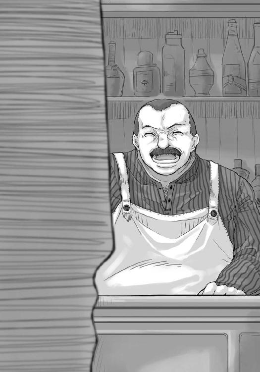
「ははははは、小便垂れも一丁前に銀貨を出すようになったか。嬉しい限りだ」
「小便垂れは余計です」
「俺から見ればお前はまだまだ小便垂れだ」
肩をすくめてみせると、再度笑い声が響いたのだった。
「で、わざわざこんな時間に来るということは商売の途中か。証書か？」
「はい」
「さっさと自分の名前だけで相手が怯むような商人になってもらいたいものだな」
笑いながら言うヤコブに「まったくです」と答えて、もう一つヤコブに言おうとしていたことを思い出した。
「そうだ。商館に、誰かラムトラまで行きたがっている人はいませんか」
羽根ペンとインク壺をカウンターの上に取り出したヤコブは、片眉だけ上げてロレンスのことを見る。
「また妙なことを聞くな」
「いえ、ラムトラまでの近道を提供する代わりに報酬をもらう商売を考えつきまして」
ぐるり、とヤコブの視線が宙を回ってからロレンスに再び止まった。その顔には、意を得たりといった笑みがあった。
「ははん。あれか、娘の羊飼いだろ」
ロレンスは一瞬驚いて息を吞んでしまったものの、よくよく考えれば娘で羊飼いをやっているようなノーラのことをリュビンハイゲンの町の商人が知らないわけがない。
そして、そうであればロレンスが考えたようなことをすでに他の誰かが考えていたとしてもおかしくはなかった。
「お前と似たようなことを考えた奴は大勢いたよ。特にあの娘がうろつく辺りに道ができた当初はな。しかし、今のところそんな商売をしている連中はいないし、あの娘に護衛を頼む奴はいない。なぜかわかるか」
さらさらと証書を書きながら滑らかに喋るヤコブに、ロレンスはため息混じりに答えた。
「商売にならないから、ですか」
ヤコブはうなずき、顔を上げる。
「あの近辺をうろついていて無事なのはあの娘だけだ。町の人間としちゃ、可憐で凄腕の妖精ノーラという評判でなかなか人気者だが、教会がそれについてどう思うかは言わなくてもわかるだろう？ くそややこしい教会との問題に巻き込まれたくなければ関わるなということだ」
それからインク壺にペン先を入れて、ヤコブは底意地の悪そうな笑みと視線を向けてきた。
「妖精ノーラはお前の好きそうな娘っこだが、悪いことは言わない。諦めるんだな」
朝の挨拶並みの定型句だったが、少し図星だったので苦笑いで返すほかなかった。
「で、証書に宛先はいるのか。それとも無記名か？」
「いえ、レメリオ商会宛でお願いします」
ヤコブの行動が再び一瞬止まる。
それから向けられた目は、商人の目だった。
「レメリオか。売りつけ先が決まっているということは、信用買いでもしたのか」
「ええ。ポロソンから。それがなにか？」
ロレンスが訊ねると、池の淵にいた魚のようにひょいと厳しい表情が引っ込んだ。
「うん。まあ、行けばわかる......ほれ、証書」
行商人が初めて訪れる商会に物を売る時、最も困るのは余所者ということで安く買い叩かれることだ。ポロソンやパッツィオ程度ではそういうことも少ないのだが、リュビンハイゲンほど大きくなり、町の商会がさまざまな商館や組合と密接な取引関係にあるところではそういうことが多々ある。大口取引が当たり前の場所では、行商人の小口取引など塵に等しいからだ。
そこで、自分はどこの組合の所属であるということをはっきりさせ、相手になめられないようにするのだ。組合の看板が後ろにあれば、雑に扱われることもない。
「ま、ローエン商業組合は聖ランバルドスの守護の下にある。幸運を祈るよ」
「はあ......」
ローエン商業組合に所属するという証書を受け取りながら、なにかを知っているふうのヤコブの言葉に曖昧に返事をする。
これは聞いたところできっと教えてくれないだろうというのが経験からわかった。
ただ、そういう場合、それは少し考えればわかるか、調べれば見つかることが多い。
一体なんだろうか、と考える。
「行けばわかる。まあ、お前のことだ。おそらくいいほうに転ぶだろう」
ヤコブのその言葉は余計にロレンスの考えを乱したが、行けばわかるというのであれば行くしかない。大方なにかの商品の値段が乱高下でもしていて、レメリオ商会がてんやわんやになっている、とかだろう。
だからロレンスはあっさり考えるのをやめて、礼を言ってからきびすを返した。荷を買って売りに来た以上、その直前になってあれこれ考えても仕方のないことなのだ。
しかし、扉に手をかけようというところでヤコブの声がロレンスの動きを止めた。
振り返ると、実に楽しそうな笑顔が向けられていた。
「それと、娘っこに入れ込むのはまだまだ先にしておきな。気の弱そうな妖精ノーラだってお前の手には余るだろうからな。町娘なんか相手にしてたらわずかな儲けなどあっという間だ」
壁に窓はあるものの、大商会などのようにガラス張りではなくて窓枠には油に浸した麻布が張ってある。多少の明かりが入ってくるだけで、もちろん透かして外を見ることはできない。
それでも扉の外にいるホロのことがわかっているらしい。
その抜け目のなさは、異国の地で商館を預かるのはやはり並みの人間には無理だということを示していた。
「見返りがなければ投資はしませんよ」
「はっはっは、言うじゃないか小便垂れが」
その言葉には苦笑いだけを返してロレンスは扉を開け、笑い声に蓋をするように扉を後ろ手に閉じた。
ヤコブのような者を前にすると、一日も早く年上の商人たちを追い越したいと、気ばかりが焦っていた少年時代を思い出す。それは懐かしくもあったが少しだけ苦くてしもやけに似た痛痒さがある。
まだまだ自分は若いんだなと、胸中で呟いて視線を石段の下のほうに向けると、ちょうどホロがこちらを振り向いたところだった。
「お、出てきた。あれがわっちの連れ」
と、ぶしつけにロレンスのことを指さすホロは石段に腰掛けていて、その前には見習い職人らしい小僧二人がいる。年の頃は十五か六か。見た目で言えばホロと同じくらいで、親方から言いつけられた用事の途中なのか、手に荷物を持っている。
ようやく髭を剃り始める頃かという二人の少年は、ホロの言葉を聞くやロレンスに敵意のこもった視線を向けてくる。相手にするのも面倒くさかったが、軽くため息をついてやるとそれだけで相手は怯んだ。
見習い職人と組合所属の商人とでは身分も収入も桁違いだ。少年二人はおそらく手持ち無沙汰にしていたホロに声をかけたのだろうが、ロレンスを前に勝ち目がないとわかったらしく、示し合わせるとそそくさと走って立ち去ったのだった。
「うふ。可愛いのお。わっちのことを可憐な薔薇の花、などと呼びよる」
そんな少年二人の背中を見ながらホロが笑い、対してロレンスの顔は苦くなる。
「あんまり相手をするなよ。職人の見習い小僧は飢えた犬と同じだからな。連れ去られるぞ」
「連れ去られたらまた助けてくれればよい。違うかや？」
他意のない笑顔を向けられ、思いがけない言葉にちょっとした嬉しさを感じながらそれなりに真面目に答えた。
「ああ、また助けてやる」
ホロはにこりと笑ってから立ち上がる。
「ま、実際に助けたのは結局わっちじゃったがの」
またやられた。
と、目を覆いながら石段を降りると、ケタケタ笑いながらホロが右腕に抱きついてきた。
「どんな見返りを期待しておるか知らぬが、とりあえず投資してもらうかや」
「......聞こえてたのか」
「わっちの可愛い耳はぬしの眉根にしわが寄る音まで聞き取れるからの。で、ぬしは金髪が好きなのかや」
突然ホロの口から出た突拍子も脈絡もない言葉に、「え？」と聞き返す間もなく後が続く。
「あの貧相な感じかや。もしくは苦労しているところがいいのかや。それとも、羊飼いがそんなにいいのかや」
矢継ぎ早の言葉は吊橋の縄が切れていく様子にとても似ていた。慌ててホロのほうを見ると、ホロは笑顔のままだった。
笑顔が、一番怖い。
「ちょっと待て。ヤコブ館長が言ったのは挨拶みたいなもんだ。機会を見つけちゃあ、ああいうことを言うのが趣味なんだよ。俺は別に」
「別に？」
すぐ側から向けられるホロのその目が、噓は許さぬと言っていた。
ロレンスは、正直に答えるほかない。
「た、多少はノーラもいいとは思った。会話をしていて、その、楽しくないわけではなかった。しかし、それで、別に、お前のことをよく思わないとか、そういうことでは......決して、ない」
喋っている最中に恥ずかしくなってきて、とてもホロのことなど見れはしない。こんな台詞、生まれてから一度だって言ったことないのだ。
しかし、なんとかそう言い終えて深呼吸をし、幾分か気を落ち着けてからホロのほうをちらりと見る。
ホロは、少し驚いたような顔をしてロレンスのことを見つめていた。
「ちょっと、からかったつもりなんじゃが......」
その言葉に、恥ずかしさもあいまって怒りそうになった直後、ホロが向けてきた嬉しそうな笑顔に毒気を抜かれてしまっていた。
「そんな、本気で言ってくれるなんて思わんかった。わっちゃあ......嬉しい」
それから、うつむくと少しだけ腕を摑む手に力をこめてきた。
商談のような、欺き合い化かし合いではない、どれだけ相手と近づけるかというやり取り。
ロレンスはほとんど無意識に人目もはばからず左手をホロの背中に回そうとして、それは空を摑んだ。
ホロが音もなくひょいと離れたからだ。
「けど、雄はいつもそうじゃ。口ではなんとでも言う」
悲しげに、用心深そうにそう言う様子を見れば、いかなロレンスであっても容易に想像がつく。過去、ホロにいい加減なことを言って傷つけたのであろう誰かに憤りを感じてしまう。
ただ、ロレンスは商人だ。口にしたことは必ず守る。
「じゃから、なにか形で見せてくりゃれ？ 騎士は誠意を表す時に盾と剣を預けると聞いたことがありんす。ぬしは商人じゃ。ならばわっちになにを見せてくれる？」
騎士が忠誠を誓う時、相手に剣と盾を預ける話はロレンスも聞いたことがある。それは騎士の魂とも言うべきものだからだ。
では商人ならなにか。言うまでもない、金だ。
しかし、ホロに現金の詰まった袋を渡したところできっとつまらない顔をされるだろう。
ならば、ホロが喜び、同時に商人の魂といえる金を、ホロのためならためらわずに使えるという誠意を見せるのに相応しいものを買って贈ればいい。
即座に浮かんだ相応しい商品は、超高級品といえる、桃の蜂蜜漬けだ。
「わかった。俺が軽率にそんなことを言わないことを示そう」
うっすらと疑惑の混じった期待に満ちた目。その赤味がかった琥珀色の瞳の期待に応えられるのならば、桃の蜂蜜漬けくらい安いものだ。
ロレンスは、胸を張って口を開いていた。
「お前に、桃の蜂蜜漬けを......」
と、そこまで言ってロレンスは妙なことに気がついた。具体的にはホロの頭を覆う三角巾だ。
動きの止まったロレンスを見て、ホロが小さく首をかしげている。
それから、「あっ」と小さく声を上げると慌ててその頭を抑えにかかっていた。
「お、お前、まさか」
「な、なんじゃ？ どうしたかや？ わっちになにを買ってくれるって？」
この期に及んでまだそんなことを言う意地汚さは賞賛に値するが、さすがのロレンスも笑って済ませなかった。
ホロの頭の三角巾を見れば一目瞭然だ。その下にある耳が異常にそわそわと動いていた。それが指し示す事実。
これは、ホロの策だったのだ。
「お前、いくらなんでもやっていいことと悪いことがあるだろう！」
ホロはついに策が破れたことを悟ったらしく、ふてくされるように唇を突き出してから、逆にロレンスに鋭い視線を向けてくる。
「ぬしは可愛くねだれと言ったじゃないかや」
一瞬意味がわからなかったが、ポロソンの町に入る時のやり取りのことだと気がついた瞬間に、呆れて天を仰いでいた。
「素直にねだれと言ったんだっ。そんな手練手管を使ってねだれとは言っていないっ」
「でも可愛かったじゃろう？」
ロレンスは言葉に詰まってしまう自分が嫌だったが、悪びれずに笑うホロをそれ以上怒れない自分はもっと嫌だった。
「ただまあ、ぬしのほうが倍は可愛かったの。わっちゃあ策がうまくいくかよりも、そっちのほうがドキドキしてしまいんす」
付き合いきれないとばかりに、ロレンスはさっさと道を歩き出す。
ホロが笑いながら小走りについてきた。
「ぬしよ、怒らんでくりゃれ」
一体誰が怒らせたんだ、と視線を向けても、ホロは相変わらず笑っていた。
「嬉しかったのは本当じゃ。それでもぬしは、怒りんす？」
揺れる亜麻色の髪が似合うホロの笑顔に、思わず顔が歪んでしまう。
ロレンスは、寡黙な雄の荷馬と一緒に酒を飲みたい気分だった。
「わかった。怒ってない、怒っていないよ。これでいいだろう？」
勝利を確信するかのような忍び笑いをもらしたホロは、それから小さく息を吐いて言葉を向けてきた。
「はぐれたらかなわぬ。手、握ってもいいかや？」
宿に戻るには再び人通りの多い広場を抜けなければならないが、例えはぐれたにしてもホロなら迷わず宿にたどり着きそうなものだ。
ただ、それが単なる口実だとわからないわけがない。
ロレンスは、この老獪な狼に降参したのだった。
「ああ、はぐれたら困るからな」
にこりと笑ったホロの手が、するりとロレンスの手の中に滑り込んでくる。
ロレンスにできることは、せいぜいその手を少し強めに握り返すことくらいだった。
「で、蜂蜜漬けは？」
ちょうど響き渡った昼を告げる教会の鐘が、新たな戦いの始まりも告げたのだった。
レメリオ商会は教会都市リュビンハイゲンに店を構える卸売り商だ。
ロレンスは確実に儲けが見込めると踏んで、ポロソンの町のラトペアロン商会から半ば脅迫に近い形で自分の持っている財産以上の金額の武具を買い込んだ。その借金の返済を、ラトペアロン商会と取引の多いレメリオ商会に売ることで行おうということだ。わざわざ借金を返しにポロソンに戻るようなことはしない。後は帳簿の操作でよろしくやってくれ、という商人の知恵だ。
ロレンスは人通りの多い表通りから一つずれた裏道に入り、そのレメリオ商会に到着した。
そこはレメリオ商会の裏口に当たる場所だが、荷揚げや荷降ろしのために大きく間口が取られているのは裏口だけだ。
リュビンハイゲンほどの大都市で商会の表玄関に荷馬車を乗りつけるのは田舎者の証といえる。人通りの多い表通りでそんなことをすれば顰蹙もので、売れるものも売れなくなってしまう。そもそも、人通りが多い道には商人の荷馬車は通ってはいけないというところが多いのだ。
そんなわけで、表通りから一つずれたその通りには道行く人の数よりも荷馬車を引く馬の数のほうが多いのだが、ロレンスはふと眉根にしわを寄せた。
レメリオ商会のその一角だけ、妙に閑散としていたのだ。
「ここの商会は修道士が経営しているのかや？」
「修道士が経営してればせめて祈りの声が聞こえてくるだろうよ。しかしそれすら聞こえない。これは一体どういうことだ」
昼飯の巻きパンをもぐもぐしているホロは軽く三角巾をめくって耳を動かしているようだったが、ロレンスはそんなまだるっこしい方法に頼るほど悠長ではない。御者台から降りて、荷馬車を引き入れるためのスロープを通って商会の荷揚げ場に入っていった。
建物が密集し、「貧乏人は立って寝るのだよ」という冗談が飛び交うくらい狭苦しいリュビンハイゲンでは荷揚げ場を確保するのも一苦労だ。そんな中、レメリオ商会の荷揚げ場は大型の荷馬車が少なくとも三台は入れて、荷物にいたっては小麦をずた袋で百は軽く積むことができるだろう。交渉用のテーブルや両替台も隅に置かれていて、壁には商会の商売がうまくいくようにという祈りが書かれた羊皮紙が貼り付けられている。
立派な荷揚げ場といって申し分ない。
しかし、今はそこには飼い葉や藁くず、それに馬糞や荷物の残骸が落ちていて、とても掃除が行き届いているようには見えない。そもそも荷揚げ夫がいないのだ。
商売には波がつきものだからまったく客の入らないことがあっても不思議はない。ただ、それならそれできちんと店は綺麗にしておくのが常識だ。
これではまるで破産した商会そのものだ。ロレンスはとりあえず引き返して御者台に飛び乗った。隣のホロはパンを食べ終えたようで、次いでごそごそとミートパイを取り出していた。それは記憶が確かならばロレンスの分だ。
「そんなに食べていたら物を嚙む音がうるさくて自慢の耳も使えないだろうな」
「なかなかよい皮肉じゃが、名誉のために言い返すならばそこの建物の中に人がいる音くらいは拾っておる」
それから、がぶりと大胆にかぶりついた。ちょっとだけもらう、とかそういうつもりではないらしい。
「人はいるのか」
「うむ......もぐ、ひゃが......じゃが、剣吞な雰囲気じゃ。少なくとも楽しげではありんせん」
そう言われたからか、レメリオ商会の五階建ての木造建築が、荷揚げ場のこともあってなんとなくおどろおどろしく見えてくる。破産した商会の建物ほど呪われた場所もない。商会が破産した時、大抵その後一週間は教会が死者をいたむミサで大忙しになるからだ。
「まあ、迷っていても仕方がないか。商品は売らない限り金にはならない」
「ミートパイも食べなければ栄養にならぬ」
「後で食べようと思っていたんだっ」
荷馬車を動かす前にホロを一睨みすると、うるさいなあと言わんばかりの視線を向けられる。
ただ、さすがに全部食べることには罪悪感があったのか、手に残っていたミートパイを半分割ってロレンスに差し出してきた。それは本来ロレンスが食べるはずの四分の一だったが、文句を言うとそれすらくれなさそうなので、ひったくるように受け取った。
露店で売っているミートパイなど、肉屋の組合が定める販売期限ぎりぎりの危ない肉をミンチにして突っ込むのが相場だが、格調高い教会都市リュビンハイゲンはミートパイもそれなりらしい。肉の甘みが十分生きているそれを二口目で全部口に放り込みながら、人のいない荷揚げ場へと荷馬車を移動させる。
ぱっかぱっかという蹄の音を荷揚げ場でたてれば、さすがに長年ここで働く者たちの耳に届いたらしい。ロレンスが適当に馬を歩かせて御者台から降りるのと、奥から商会の荷揚げ夫が出てくるのは同時だった。
「安息日までにはまだちょっと時間があるようですが、どうしました」
「いえ、まあ、ちょっと......旦那は今日、町に？」
と、歯切れが悪かったのは最初だけで、急に抜け目のなさそうな目に戻って中年の荷揚げ夫が値踏みするようにロレンスのことを見る。
盗人がカモの財布の中身を想像するようなそんな目に、ロレンスは商人として本能的に危険を察知していた。その上、荷揚げ夫の格好はよく見るとくたびれている。もともと力仕事の現場なのだから畏まった格好はしていないが、それでも生気に満ち満ちたものというのはわかるものだ。
これは、よくない。明らかによくない。
「いや、数日前に来たんだが色々あってね。まあ忙しそうならまた来ますよ。別段急ぎというわけでもないから」
荷揚げ夫と視線を合わせず、返事を待たずに御者台に上ろうと手をかけた。
ホロもなにか察したようだ。一瞬ロレンスのほうを物問いたげに見たがすぐにうつむいた。
この辺の機転は、見た目どおりの町娘では持ち合わせていないだろう。賢狼という自称も伊達ではない。
しかし、そこに荷揚げ夫が食らいついた。
「いやいやまあお待ちになってください。見たところ名のある旦那とお見受けします。そのような方を空手で帰らせてはあまりにも失礼というものです」
これを無碍にすればロレンスの評判がどのようにこの町に広まるかわからない。
ただ、体中に流れている商人の血が一斉に泡だっている。
逃げろ。ここはなにかやばい。
「いえいえ。売るものといえば愚痴くらいしかないしがない商人です」
物を売りにきた際、へたに下手に出ることは三流のやることだ。聖職者ならば謙遜は美徳だが、商人にとっては自分の首を絞める縄だ。
それでもロレンスはここを逃げるほうが得策だと判断した。微動だにしないホロの様子もそれを後押ししていた。
「旦那、わざわざ自分を安く売ることはない。旦那の身なりがよいことは盲目の物乞いにだってわかる」
「おだててもなにも出ませんよ」
御者台に座り、手綱を握る。荷揚げ夫はそれで引き際を察したらしい。必死になるあまり前のめりになっていた体が起き上がった。
窮地は脱したようだ。ロレンスはそう判断して荷揚げ夫に言葉を向けていた。
「それでは失礼します」
「ええ......今回は残念ですが、またのお越しをお待ちしております」
荷揚げ夫は卑屈な笑みを見せてから一歩後ろに退いた。ロレンスはそれを出発の合図と受け取って馬の頭を回転させようとする。
ひょいと荷揚げ夫が言葉を投げてきたのはそんな防壁の隙間だった。
「あ、お名前を伺うのを失念していました」
「ロレンスです。ローエン商業組合の」
つい名乗ってしまってから、状況をよく理解する前にどこの誰であるのか相手に知らせるのは失敗だったかと思ったが、よくよく考えれば今のところロレンスは相手に名前を知られて困ることもない。
おそらく相手はロレンスがこの商会になにをしにきたのか依然として把握していないはずだからだ。
しかし。
「ロレンスさん、ですか。はい。ラトペアロン商会からの」
荷揚げ夫は突然にんまりと笑ってそう言った。
その時ロレンスの背筋を襲った悪寒は、言葉では言い表せない。
普通に考えるなら、この荷揚げ夫がロレンスの名前を知っていることはあり得ないのだ。
「ラトペアロン商会から、当商会に武具を持ち込むご予定でしたよね？」
吐き気がするほどの悪寒と、とてつもない罠にはまった予感。論理ではなく、直観が大声でがなりたてていた。
ぐらりと視界が歪む。
まさか、まさか、まさか。
「実は、昨晩ポロソンから早馬が来まして。ラトペアロン商会は当商会に債権譲渡をされたのです。つまり、今、ロレンスさんは我々に対して借金を負っているのです」
決定的な一言。
早馬をわざわざ寄越しての債権譲渡など、普通では考えられない。ただし、普通でなければあり得るのもまた事実。例えば、二つの商会が手を組んで詐欺を行う時などだ。
御者台に座っていなければ間違いなく倒れていた。
御者台の上ですら、ロレンスはその言葉を受け止めきれず体が傾いてしまった。
ホロが少し驚いたようにロレンスの体を受け止めてから、いぶかしげに口を開く。
「一体なにが起こっておる？」
考えたくもない。
しかし、荷揚げ夫が無情にも答えた。
「あなたの隣の商人さんは、商売に失敗したのですよ。我々と同じようにね」
嬉しそうなのは、同じ穴の狢を見つけた喜びだろう。
「なんじゃと？」
ロレンスはホロを肩越しに振り向く。
夢であって欲しいと願うほかなかった。
「武具はだいぶ前に大暴落したんですよ。ラトペアロンの狐に不良在庫を摑まされましたね」
一寸先は闇。
「嵌められた......」
かすれた声は、それが現実であることしか示さなかった。
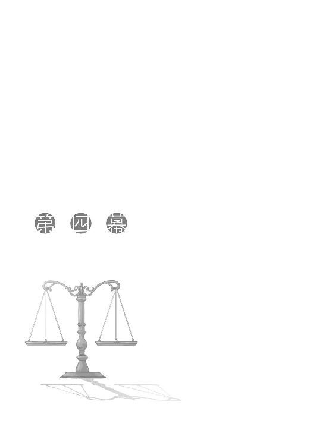
「お互いそういう取り決めの上で生きているんです。わかるでしょう？」
この台詞を恐れない商人はいない。
そして、その時に我が身の陥った境遇を嘆かない者もいない。
「当然です。私も商人ですから」
だから、ロレンスはその場でそう言うのが精一杯だった。
「話は簡単です。ロレンスさんがラトペアロン商会でぴったり百リュミオーネ分の武具を買ったうちの、信用貸しの証書に記載されていた借金に当たる金額、しめて四十七リュミオーネと四分の三を我々に返済してくれればそれでよいということです。ただし、期限付きの信用貸しです。これがどういうものかご存知でしょう？」
こんな台詞を言われるロレンスも頰がこける思いだったが、言っているレメリオはまさしくこけていた。
憔悴しきった、という形容がぴったりの落ち窪んだ眼窩、こけた頰、何日も取り替えていないと思われるシャツと異様にぎらぎらとしている目。もともと小柄だということもあるが、疲労で浅黒くなった顔から、レメリオは手傷を負った小熊のようだった。
いや、実際に手傷を負っているのだ。それも致命傷に近い傷を。
まだようやく白髪が混じり始めたといった年齢のレメリオ商会主人、ハンス・レメリオは黒い髪を撫でつけることも忘れて畳みかけるように言葉を続けてくる。
「即座に債務の返済を行っていただきたい。さもなければ」
ここでナイフを片手に凄まれていたほうがどれほど気が楽だろうか。
「ローエン商業組合に肩代わりを要請しなければならない」
商館に所属する商人が最も恐れる脅し文句。
行商人にとっての第二の故郷である商館が、たちまちのうちに借金取立の側に回るのだ。
その瞬間、故郷を半ば捨てる覚悟で外に出た行商人たちに、心安らぐ場所はなくなってしまう。
「まあ、信用貸しの期限は明後日までですから、二日間は待ちましょう。それまでに四十七リュミオーネと四分の三。耳を揃えて返してください」
二日間でどうにかできる金額ではない。あっちこっちに残している債権を全部まとめて回収したところでその半分にも満たない。
一リュミオーネあれば三ヶ月は暮らせるのだ。四十七リュミオーネがどれほどの大金かは子供だって知っている。
小熊のようなレメリオもそれをわかって言っているはずだ。
破産。
目の前にその言葉が浮かぶ。
「それで、ロレンスさんのお持ちになったあの武具ですが、いかがしましょうか。おそらくどこに持っていっても二束三文か、買い取ってくれはしないと思いますが」
レメリオが自嘲気味に笑うのはロレンスを馬鹿にしてのことではない。
このレメリオ商会の主人がこれほど憔悴しきっているのは、まさしくその武具の暴落によって破産寸前の状況に陥っているからだ。
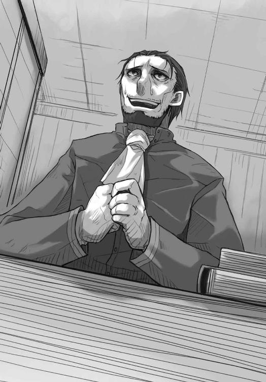
教会都市リュビンハイゲンは北へと異教徒討伐に赴く騎士や傭兵や聖職者たちの物資補給基地となっている。そのために武具や聖典が確実な儲けを見込める手堅い商品になっていたのだ。
しかも、毎年真冬の時期には必ず大遠征が行われていた。聖人リュビンハイゲンの誕生日に合わせた記念行事的な行軍なのだが、傭兵や各国の王宮騎士団も加えた大遠征のために武具や聖典、食料、防寒具、馬、薬草類が飛ぶように売れる。
今年はそれが急遽中止された。戦いの舞台になる異教徒の土地とリュビンハイゲンが治める地域との間に広く横たわる国の中で政治的混乱が起こり、リュビンハイゲンとの仲が急速に悪化したためだ。これが普通の国ならばまだいいのだが、そこは異教徒の土地と隣接するせいもあり彼らに寛容で、国のあちこちに異教徒たちの町がある。最も近いところではラムトラなどだ。そうなるとその国を越えたところで異教徒と戦わなければならない者たちは、例年なら行事的行軍ということで国の中を通過しても黙って見ている異教徒たちにいつ襲われるかわからないことになる。大司教区を統べる大司教や、南の大帝国皇帝の血族も参加するような行軍なのだ。万が一があってはならない。
そのため、やむなく中止された。
それが商人たちにとってどれほど寝耳に水だったかは、この町で長いこと商会を営んでいるレメリオ商会が窮地に立たされていることから明白だ。それでもロレンスは途中で気がつくべきだった。北の戦地を根城にしている傭兵団がリュビンハイゲン近くをうろついていたという話から、戦場になんらかの変化があったということに。
しかも、武具の暴落と情報の伝わり方をかんがみれば、どう考えてもロレンスがポロソンで武具を仕入れた時、ラトペアロン商会の主人は武具暴落のことを知っていたはずだった。
つまりは、弱みに付け込んで強引にうまい取引を行ったつもりが、ロレンスは逆にいいように暴落した武具を引き取らされていたのだ。
ラトペアロン商会としては暴落した武具をそれなりの値段でロレンスに売りつけられたのだから、内心笑いが止まらなかっただろう。それに、武具は暴落しているからロレンスに貸した分の金額を回収するのは不可能か、または手間がかかると踏んだはずだ。それならば昔から取引を行っているレメリオ商会に債権譲渡し、窮地の助けにでもなればと判断したのだろう。
これらの関係の中で、最悪の札を引いたのはロレンスだ。
己の身を引き裂いてしまいたいほどの失態。
死神はろくでもない偶然を起こし、運命の女神は残酷だ。
それでも、ロレンスは結局強がるしかなかった。
「なんとか高値で売ってみせますよ。二日後に決済を行う。それでよろしいですね？」
「ええ、お待ちしております」
二人とも火をつければよく燃えるのではないかと思うくらいに脂汗を流してはいたが、なんとか紳士的な商談の体裁は保てた。ここまでは人としての意地だ。
そして、次に残るのは商人としての意地だ。
ロレンスが席を立つと、レメリオが別れの挨拶とばかりに言葉を付け加える。
「一応、念のため言っておくのですが、町の出口付近には我々の露店が立っています。御用があればお声をおかけください」
町から逃げようとしても無駄だ、という意味だ。
「商談が忙しいでしょうから、せっかくの申し出ですが利用することはないでしょう」
ホロが側にいたら苦笑ものの意地の張り合いだったかもしれないが、ロレンスもレメリオもぎりぎりのところだというのは偽らざる事実だ。
破産は、即時に社会的な死を意味する。物乞いとして寒さと飢えに震えながら生きていくのはまだましだ。債権者たちに捕まれば身につけているものは一切合財なんだって売られてしまう。それこそ頭髪だって刈り取って売り飛ばされ、綺麗な歯をしていれば差し歯用に抜き取られる。最後には自由というものまで売り飛ばされ、死ぬまでどこかの鉱山か奴隷船で働かされることになる。もっとも、それだってまだましだ。最悪の場合は、貴族や金持ちが起こした事件の身代わりとなって処刑されたりする。もちろん、墓なんて用意されないし、死を悼んでくれる者たちは誰一人いない。
破産とはそういうものだ。必死にならざるを得ない。
「それでは失礼します」
「二日後を楽しみにしております。神の御加護があらんことを」
弱い者がさらに弱い者を見つけた時に食らいつくのは当然のことだ。
それでも、ロレンスは怒りのために白くなるまで握りこぶしに力をこめる。
ただ、半分以上は自分への怒りだ。この失態は、取り返せない。
見送りが誰もつかない中、交渉の場であった三階の事務室から一階の荷揚げ場に降りる。
ホロは町娘の格好をしていたので商談に加わることもできず、御者台の上で商会の見張りの人間と共に待っていたのだが、ロレンスが荷揚げ場に入ると途端に振り向いたホロが一瞬ぎょっとしたのがわかった。
よほどすごい顔をしているのだろう。
「待たせたな」
ロレンスが言いながら御者台に飛び乗ると、ホロは曖昧にうなずいて、ちらちらとロレンスのことを見てくる。
「行こう」
見張りの荷揚げ夫は無視し、手綱を引いて馬の頭を回すと荷揚げ場を出た。荷揚げ夫もあらかじめ話を聞かされているようで、特になにも言わずロレンスたちのことを見送った。
荷揚げ場のスロープを降り、石畳の裏通りに出た瞬間、ロレンスは大声で叫ぶ代わりに巨大なため息をついたのだった。
怒りも悔しさも後悔もなにもかもが一斉にそのため息に乗って外に出ていった。
そのため息を兎が食らえばそのまま死んでしまったのではないかと思うくらいに負の感情が詰まったため息だ。
しかし、商人の意地までもがため息になって外に出ていってしまったわけではない。
現状に悲観している暇はないのだ。ロレンスの頭には冷たい怒りにも似たものが充満し、それらが一斉に音をたてて資金繰りの可能性を計算し始めた。
「......の、のう、ぬしよ」
と、そんな合間にホロの声がおずおずと挟まれた。
「ん？」
「なにが、あったのかや？」
その真の姿はロレンスなど軽く丸吞みできるような狼であるホロが、気遣うようなぎこちない笑みを浮かべながら聞いてくる。レメリオとの会話は聞こえていたはずだから、わざわざ聞いてくるのには別の理由があるはずだ。
そんなホロの様子から、ロレンスは自分の顔を想像する。
顔は商人の命だ。手綱から手を離すと凝り固まった顔の筋肉を無理やりほぐしたのだった。
「なにがあったのかと聞かれれば、後ろの荷物がゴミになったということだ」
「むう......わっちの聞き間違いじゃなかったのかや」
「ついでにこのままだと破産というのも事実だ」
破産の後に待つ哀れな子羊の運命を知っているのか、ホロはその言葉を聞くと体のどこかが痛むように顔をゆがめる。それから、ふっと表情を入れ替えた。
冷静に物事を見つめる賢狼の目がロレンスのことを見る。
「逃げるかや？」
「一度逃げれば逃げ続けなければならない。商館や商会の情報網は神の目に等しい。どこにいても商売をすればあっという間に見つけ出されてしまう。そうなれば、もう商人には戻れない」
「しかし、手傷を負った獣は骨まで食われるのが相場というもの。ぬしは甘んじるのかや」
「そんなわけはない」
はっきりと答えると、ホロは少し考えるように視線をそらす。
ロレンスは、続けて口を開いた。
「リュミオーネ金貨にして四十七枚を叩き返せばそれでいい。まだ商品は手元にあるんだ。きっちり負債をつぶしてから遠方に運んで売ればそれなりの値段にはなる。仕切り直しは可能だ」
まるで簡単なことのように断言したが、実のところその淀みなさは可能性のなさと比例する。
それでも、そのように言うほかなかった。商人の意地といえばそれまでだが、ここで逃げてもどのみち商人には戻れないのだ。ならば最後の最後まであがくほかない。
そんなロレンスから視線をそらしたままのホロは、しばらくして視線を戻した。
そして、その顔は呆れるようにうっすらと笑っていた。
「わっちゃあ賢狼ホロじゃ。多少はぬしの助けになるじゃろう」
「ああ、食費が浮くだけでもかなり違う」
その瞬間、ホロの右拳が左脇腹に突き刺さる。
「食った分は稼ぐと前から言っとるじゃろう」
「わかってるよ」
脇腹をさすりつつ返事をすると、片眉を吊り上げていたホロは怒りを解いて小さく鼻を鳴らす。
それから、無表情になって視線を馬のほうに向けた。口を開いたホロは、まるでなにかを誓うような口ぶりだった。
「いよいよとなればわっちが名誉にかけてぬしを逃がす。この麦の力を使ってでも」
ホロが首からぶら下げている袋の中には、ホロが宿るという麦が詰まっている。それを用いればホロは元の姿へと簡単に戻ることができる。
しかし、ホロはその元の姿へと向けられる、人々の畏怖の視線を恐怖するくらいに嫌っている。畏怖の視線はホロを孤立させる牢獄と変わらない。港町パッツィオの地下水道でホロは狼の姿に戻ったが、あれはホロ自身にも危険が及んでいたからということもあっただろう。
今回は違う。今、目の前にある危機は、純粋にロレンスだけのものだ。
だから、いざとなればロレンスのために元の姿に戻ることも辞さないというホロの言葉は素直に嬉しかった。
「ぬしはわっちを北の森まで連れていってくれると約束した。こんなところでつまずかれてはかなわぬ」
「ああ、約束は必ず守る。それと」
ロレンスは目を閉じてゆっくりと深呼吸をしてから、ホロを見た。
「いよいよとなった時は、助けを求めるかもしれない」
失敗すればそこまでだった今までとは違う、最後の最後に頼る者がいる安心感。
ホロはにこりと笑って、「任せとき」と言ったのだった。
いよいよとなったらホロに助けてもらえる。
そんな選択肢が確かになくもないだろう。
しかし、それは実際問題として選べるものではない。そんな状況になった時点で、もはやロレンスの居場所はこの世からなくなっていると考えたほうがよいからだ。
住む家を持たず、故郷を後にするというのはそういうことだ。失敗すれば、なにも残らない。
「で、これからどうするのかや」
宿に荷馬車を預けた後、宿の前でホロがそう言った。
まさしくロレンスが口にしたい台詞だがそんな弱音を吐いている暇はない。
ひとまず宿は前金制だったのでしばらく寝る場所と馬を預ける場所には困らない。現金も多少ならある。即座に寝食に事欠くというわけではないのは不幸中の幸いだ。
だが、残された時間と可能性はあまりにも少ない。
「とりあえず商館に行く。それしかない」
「ふむ。故郷の者ならば力になってくれるじゃろ」
励ますつもりで言ったのかもしれないが、世の中そんなに甘くないことをロレンスはよく知っている。商売の世界に身を置いて十年も経てば、窮地に立たされついに消えていった者たちを何人も見ているからだ。
「じゃあ、ちょっと行ってくるから宿で待っててく......」
と、言い終える前にホロに足を踏まれた。
「旅の道連れが苦境に立たされておるというのに、のんびり宿で毛づくろいができるような不義理な狼にわっちが見えるかや」
「いや、しかし」
「見えるかや」
足を踏まれたまま見上げられる。
「......見えないが、そういう問題じゃない」
「ならどういう問題かや」
ひとまず踏みつける足をどけてくれはしたが、返答次第によってはまた踏みつけてきそうな目つきだ。
「商館は俺たち商人の故郷だ。故郷に女を連れて行くという意味がわかるだろう？」
「状況がわからぬたわけばかりというわけでもあるまい」
「その状況を詳しく説明することが不可能だ。大体俺とお前の関係をどうやって説明するんだ」
ホロは教会に見つかれば悪魔として火刑に処される存在だ。この町の商館を預かるヤコブの物わかりのよさは自分よりもよほどいいとは思うものの、それでも万が一ヤコブがホロを教会に告発したら大惨事だ。それに、商館にはローエン地方を故郷とするたくさんの商人たちが出入りする。物わかりのいい奴ばかりではない。そんな危険は冒せない。
だとすると、ロレンスとホロの関係を説明するには多少なりともごまかしが必要だ。しかし、うまくごまかせるだろうか。相手も噓に関しては海千山千の商人なのだ。
「ならばいっそのこと恋仲とでも言えばよかろう。一人で待たされるよりかはましじゃ」
ホロが心配してくれている、というのはわかる。
仮に逆の立場になったとしたら、ホロが一人で問題を解決しようとすればロレンスも怒るだろう。宿で待っていてくれ、などと言われたらきっと裏切られたような気分になる。
ホロの視線が向けられる。
折れるほかなかった。
「わかった。一緒に来てくれ。お前のほうが頭の巡りもいいしな」
「うむ。任せるがよい」
「ただし」
宿に入ろうとする旅商人に道を譲ってから、続けた。
「商売上の付き合いということにする。絶対に余計なことは言うな。本当に連中の歓迎は手荒いからな」
噓偽りのない、本当に困るほど手荒い歓迎なのでホロの反論を許さないように言いつける。
ただ、ホロは連れていってくれるならなんでもよかったようだ。おとなしくうなずいた。
「じゃあ、行こう」
「うむ」
足早に二人は歩き始め、人ごみの間を進んでいったのだった。
商館の扉をノックしようとしたところで、入れ違いに人が出てきた。
身なりからして一目で町商人だとわかったが、相手が少し驚いたようにロレンスのことを見るやいなやすぐにばつが悪そうな顔をして目をそらしたので、それでレメリオ商会の使いの者だとわかった。おそらくロレンスが今どういう状況にあるのかと場合によっては債務の肩代わりをしてもらう旨を伝えにきたのだろう。
ただ、ロレンスは普通に誰かとすれ違った時のように道をあけ、声もかけなかった。
相手だって自分たちが苦しいからこそやるだけで、必要がなければこんな役目は請け負いたくないだろう。事実、レメリオ商会の者はロレンスから借金を取り立てる身でありながら、逃げるように立ち去っていった。
好き好んで人を破滅させるような奴は、他人を出し抜くことが日常茶飯事の商人の世界であってもそうそういない。出し抜くことと破滅させることはまったく違うからだ。
「てっきり殴りかかると思ったんじゃがな」
ホロもレメリオの者だと気がついていたらしいが、その冗談には苦笑いだ。
「しかし、自分から最悪の状況を説明するなんていう気の重い作業はなくなった。その点では感謝だ」
「物は考えようじゃな」
ようやく笑うことができて、ロレンスは商館に入ったのだった。
昼を過ぎれば魚や野菜など腐りやすい商品を扱う商人たちは大抵仕事を終えている。朝に来た時とは違い、いくらかテーブルには人がいて思い思い酒を飲んだり談笑をしたりしていた。どれも顔と名前くらいは一致する者たちだ。中にはロレンスに気がついて軽く手を上げようとした者もいた。
しかし、ロレンスに続いてホロも中に入るとそれらの動きは見事に止まり、同時にわずかなどよめきが起こる。ため息といってもいい。それから、すぐに向けられる祝福とも羨望とも妬みともつかない視線。ホロはどこ吹く風のようだが、ロレンスには少し痛い。
「ほほう、これは神のお導き」
そんな中で、最初に口を開いたヤコブだけは、顔が笑っていても目が笑っていなかった。
「ずいぶんな上玉を引っかけたじゃないか、ロレンス」
周りの視線を一切無視し、ホロの手を引いてまっすぐにヤコブの元へと歩いていく。
クラフトではなく、ロレンスと呼ばれたことが胸に突き刺さった。
ヤコブが、ロレンスのことを身内ではなく一商人として扱うと宣言したも同義だからだ。
「引っかけたんじゃなく、引っかけられたんです。タランティーノ館長」
にやり、と顔の形が変わるほど笑ったヤコブは大儀そうに立ち上がり、一度ロレンスの肩をたたくと奥を指差した。
「向こうで話そう」
目ざとい商人たちはただならぬ雰囲気に気がついたようだ。誰一人声すらかけてこなかった。
商館はロビーから奥に入ると中庭をぐるりと囲む造りになっている。季節柄寂しくなった中庭を眺めていると、先頭を行く巨漢のヤコブが声をかけてきた。
「レメリオ商会の奴とすれ違わなかったのか？」
「すれ違いましたよ。入り口で」
「そうか。運よくすれ違わなかったと思ったんだがな」
「......どうしてです？」
ヤコブの言いたいことがよくわからず、聞き返すと声なく笑ったのが揺れた肩からわかった。
「殴り合う音がしなかったからだ」
ホロが少し笑い、ロレンスは肩をすくめたのだった。
それからヤコブは廊下の右側の部屋の扉を開け、二人に入るようにと手で促した。
「ここは俺の仕事部屋だ。聞き耳を立てる奴もいない。その点は安心しろ」
さして広くもない部屋だったが、そこに収まる知識は無限に思えた。
扉を開けた正面の木窓を除いて、壁という壁が棚で覆われ、そこには紐でくくられた無数の書類が無造作に突っ込まれている。
部屋の真ん中には小さいテーブルと、それを挟んで置かれた木に皮を張っただけのソファ。
そして、扉の正面にも山のように書類が積まれた机があった。年を追うごとに紙は安くなっているといってもまだまだ高級品の部類だ。知識をとどめることに金を惜しまないのは優秀な証拠だ。これほどの量の紙、名のある神学者でもそうそう集まらない。
「さて、なにから話を聞こうか」
ヤコブがテーブルを挟んだ向かい側のソファに座ると、その体を支えるためにソファが盛大な悲鳴を上げる。普段ならそれを種に談笑の花を咲かせるところだが、この状況ではロレンスを圧迫する錘にしかならない。
隣にホロがいてくれてよかったと思った。
一人だったら、回る頭も回らなかったかもしれない。
「まず、真っ先に聞きたいのはそこの別嬪がどこの誰かということだが」
ヤコブの視線が、ホロではなくロレンスに向く。
まともに考えるなら破産の危機にある商人が町娘を連れて歩くなど言語道断だ。ヤコブの気が短かったらホロを見たその場でロレンスともどもたたき出していただろう。
「商売の関係上、共に行商をしています」
「ほっ商売？」
冗談だと思ったらしく、笑ったヤコブが初めて視線をホロに向ける。ホロはにこりと笑って小首をかしげた。
「パッツィオのミローネ商会がトレニー銀貨百四十枚で買い取ると査定した毛皮を、その場で値を吊り上げて二百十枚で売りつけました。その方法を思いついたのがこいつです」
ホロは小さい胸を張って得意げなすまし顔。対するヤコブは疑惑の目だ。
それも当然といえばそうだ。ロレンスだって他人がそんなことを言ったら噓だと思う。ミローネ商会の大きさは諸国に知れ渡っているし、そこにいる人間も一流の商人ばかりなのだから値の吊り上げなどそうそうできることではない。
「朝、こちらに来た時に言いました。見返りがなければ投資しないと」
ただ、毛皮の話は少なくとも事実なので、ロレンスは少しも臆することなくそう言えた。
その言い方にホロが怒るかどうかまでは考えなかったが、その場限りの方便だとわかってくれているだろう。
そして、ヤコブは一度目を閉じると意外なことに表情を崩した。
「ま、詳しくは聞かない。時折お前みたいなのがいるんだ」
「え？」
「ある日ひょっこり商館に現れると、とてつもない美人を連れて歩いていて、商売も人生もうまくやってやがる。だが、連中は総じてその女について詳しく話さない。だから俺はもう聞かない。得体の知れない箱を無理にあけてはならないと、聖典にも書いてあるしな」
かまをかけているのか、とも思ったが、その理由がわからない。だから、素直に思い直した。
荷馬が幸運の女神に変わり商人と共に旅をする話は、実話なのかもしれない、と。
それに、ロレンス自身が賢狼と称する少女の形をした狼と旅をすることになったくらいなのだ。自分だけが特別だ、と思うには商人は現実的過ぎる。
「賢明な判断じゃな」
そして、ホロが言うとヤコブは大笑いしたのだった。
「さて、それじゃあ遠慮なく話を進めようか。もしも二人が単なる夫婦の関係なら、俺はお前らに今すぐ教会に行って離婚をするように説得しようと思っていた。しかし、行商の相棒としてなら話は別だ。一蓮托生、相手の破滅は自らの災難だ。金の絆は、血の縁よりも強い」
ぎしり、とヤコブの座る椅子がきしんだ。
「状況を確認しようか。先ほどレメリオ商会の奴が伝えてきた内容はこうだ。すなわち、ローエン商業組合に所属するクラフト・ロレンスは、ポロソンのラトペアロン商会から百リュミオーネ分の武具を買った。うち、借金に当たるのは約半分。そして、今、債権はレメリオ商会が持っている。間違いないか」
苦々しく、うなずく。
「どんな武具を買ったのかまでは聞かされていないが、今武具の相場は総じて十分の一以下になっている。仮に十分の一で売れたとしても、四十リュミオーネ近い借金。トレニー銀貨にして千五百枚前後だな」
港町パッツィオでの騒動から引き出した利益は最終的に銀貨千枚だった。その儲けをもう一度手に入れても余りある負債だ。
「これは完全にラトペアロン商会に一杯食わされたと見るほかないが、詳しくは聞かない。聞いたところで状況に変化はない。誰がどう考えたって、お前は欲をかいて失敗したからだ。そうだろう？」
「そのとおりです」
言い訳のしようがなかった。欲をかいて損をした、という言葉は寸分の狂いもなく事実を言い当てている。
「それがわかっているなら話は簡単だ。おそらく間違いなく組合が肩代わりすることになるだろうお前の借金を、お前はお前の力で返さなければならない。詐欺に遭った、強奪に遭った、病気になった、怪我をした、それで負債を背負うことになった。ならば我々は組合と商館の名誉にかけてお前を助けるが、今回はそうではない。お前の借金を返すよう手を添えてくれるのは、神か」
ヤコブの指だけがホロに向き、ホロはロレンスのほうをちらりと向く。
「そこの別嬪だけだ」
「理解しています」
職業別の組合と違い、同じ故郷を枠とする商業組合は相互扶助の団体だ。運営は組合員の寄付で成り立ち、ヤコブが言ったような災難に襲われ商売が立ち行かなくなった者たちを救済したり、異国の地で不当な扱いを受けた際に集団で抗議するためにある。
欲をかいて失敗した人間の負債を肩代わりしてくれるために作られたものではない。
だから、そういう場合には一時的に肩代わりはしてくれても、苛烈な取り立てを受けることになる。他の組合員が納得しないということもあるし、安易に欲をかくなという見せしめのためでもある。
ヤコブの目が、引き絞られた弓のようになる。
「残念なことだが、俺はお前に慈悲をかけることができない立場にある。むしろ、お前に断固たる態度を取ることこそが、俺がロビーのあの場所にいる理由になる。それが組合全体の掟だ。ここの商館だけを甘くしたら、蟻どもがいくらでも寄ってくる」
「もちろんです。仮に別の誰かが欲をかいて失敗したのに、特別扱いをされていたら私も怒ります」
強がりもいいところだったが、強がらないととても自分を支えられない。
「それと、わかっているとは思うが組合員同士の金の貸し借りは御法度だ。また、組合としてもお前に金を貸すことはできない。周りに示しがつかないからな」
「わかっています」
第二の故郷は今、ロレンスに対し固くその扉を閉ざした。
「レメリオ商会が俺に伝えた話だと、お前の債務は二日後に期限を迎えるという。レメリオ商会も武具の投資に失敗して尻に火がついてるだろう。躊躇なく即座に取り立てに来るだろうな。つまり、明後日にはお前の失敗が公になり、俺はお前の身柄を拘束しなければならない。ここから導かれる結論はなんだ？」
「二日の間に四十七リュミオーネを用意して、レメリオ商会にたたき返さなければ明日はないということです」
ヤコブは少しだけ首を回す。それから、視線をテーブルに落として言った。
「明日がないというのは違うな」
小さい衣擦れのような音は、隣のホロの耳と尻尾だろう。
「お前にはきちんと明日が来る。ただし、真っ黒で、辛く、重い明日だ」
暗に、破産に悲観した自殺は認めないとも言っている。
「四十七リュミオーネならば、長距離貿易用の船を十年も漕げば返せるだろう。鉱山で穴を掘ってもいい。ただし、怪我も病気もせずに、だがな」
船長と船主の商会との書簡を見たことがある者ならば、それがいかに夢物語かすぐにわかる。その書簡では、やり取りされる会話の九割が船の漕ぎ手の交換要請と、なんとかそれを長持ちさせろというやり取りに費やされる。
普通、遠距離用の船の漕ぎ手は八割が二年で役に立たなくなり、残り一割が次の二年で役に立たなくなり、生き残った一割の強靱な肉体を持つ者たちは対海賊用の船に乗せられ帰らぬ人となる。それでも船はまだましだ。鉱山の場合は大体一年で肺病にかかって死に、運良く病気を免れても二年のうちに落盤で死ぬ。
これに対し、災難に巻き込まれて商館に借金を肩代わりしてもらった者は、低い利息で年々返していけばいい、という好待遇だ。
欲をかいての失敗がいかに重罪かがわかろうというものだ。
「だが、俺はお前に死んで欲しいと思っているわけではない。これは忘れないで欲しい。罪には罰を。俺はその当たり前のことを遂行しなければならないだけだ」
「わかっています」
ヤコブの目がロレンスに向けられる。初めてその目に同情するような光が浮かぶ。
「二日間、頑張れるだけ頑張れ、という他ないが、なにか協力できることがあれば協力しよう。通常の商売上の協力ならばもちろんしても問題ないからな。その労は惜しまない。それと、俺はお前を信用している。二日間、縄で縛っておきたいところだが自由に出歩けばいい」
信用、という言葉がずしりと肩にのしかかる。
いよいよとなった時、ホロは助けてくれると言った。
ただ、それに頼るということはこの目の前のヤコブの信用を裏切ることにもなる。
そんなことができるだろうか。
思わず胸中でそう呟いていた。
「お心遣い感謝します。二日間で、なんとか金を稼いでみます」
「商売には思わぬ抜け道がある。危機の時だからこそ見える道もあるだろうからな」
その言葉には少しどきりとした。非合法な手段を使ってでも、という解釈ができるからだ。
ヤコブは、ローエン商業組合リュビンハイゲン商館の館長としてロレンスに厳しい現実を突きつけはしたが、きっと本当にロレンスのことを心配してくれている。ただ厳しいだけの人間では、商人たちの第二の故郷の主は務まらない。
「他になにか聞いておきたいこと、言っておきたいことはあるか」
ロレンスは首を横に振ったものの、それから、ふと思いついたので口を開く。
「借金を叩き返した時の驚きの台詞でも考えておいてください」
ヤコブは一瞬目を見開いてから大声で笑った。笑い事ではない冗談のほうが笑えるというのは、きっと真実だ。
「気の利いた台詞が言えるなら大丈夫だな。別嬪さんのほうはなにか言いたいことは？」
なにか言うかとも思ったが、意外にも無言のまま首を横に振った。
「なら、話は一応終わりだな。あまり長いこと話すのもよくない。余計な勘ぐりをする連中ばかりだからな。悪い噂がたてば動きにくくなるだろう」
ぎしっと音をたてながらソファから立ち上がり、ロレンスとホロもその後に続く。
ヤコブとロレンスは、商人が暗い面持ちをしていることがいかによくないことかを知っているので努めて普通の表情だった。ちょっと奥で軽い世間話をしてきたといわんばかりだ。
商館のロビーに戻ると、ヤコブはいつもの定位置に戻り軽く手を振ってロレンスを送り出す。
それでもただならぬ雰囲気を感じ取っているのか、ロビーで酒を飲んだりしている者たちから声はかからなかった。
いくつかの視線を背中に受けながらも、それらに蓋をするように後ろ手に扉を閉めた。
最悪、身柄の拘束も考えていたのだ。二日間の自由を与えてくれたヤコブの心の広さに感謝の念を抱かずにはいられなかった。
「とりあえず二日間の自由は得た。二日間でできるところまでやるしかない」
自分に言い聞かせるようにそう呟いたものの、二日間で資本もなく四十七リュミオーネの大金を稼ぐなど妄想もよいところだ。
もしもそんな方法があるのならば、世の物乞いたちは皆大金持ちだろう。
しかし、考えなければならない。
そうしなければ、今度は考えたくもない明日がやってくる。
店を持つ夢も潰え、商人としての再起も絶望的になり、薄暗い鉱山か、苦悶と嘆きの声が波の音よりも響くといわれる船の中で一生を終えることになる。
強がってどうにかなるとは口にしているものの、自分に言い聞かせるようにすればするほど、そんなことは無理なのではないかという現実がひしひしと迫ってくる。
ヤコブはロレンスを信用して、債務取り立てまでの二日間に自由を与えてくれた。
しかし、それはもしかしたらせめて破滅までの二日間を自由に過ごせということなのかもしれないと思えてくる。常識的に考えれば考えるほど、四十七リュミオーネという大金を二日間で稼ぐなど不可能だとわかるからだ。
気がつくと、手が震えていた。
それが情けなくて震えを握りつぶすように拳を作ると、その上に小さい手が重なった。
ホロだ。そこでようやく、その存在を思い出した。
一人じゃない。
その事実に、ロレンスは深呼吸する余裕をなんとか得ることができた。
このままでは、ホロを北の森まで連れて行くという約束すら破ってしまうことになる。
止まりかけていた頭が動き出す。それを見越して、ホロが口を開いた。
「で、ぬしよ、どうするんじゃ？」
「ひとまず考えるよりも先に試すことがある」
「というと？」
ホロが顔を上げてたずねてきた。
「借金には借金を、だ」
よほどの大金持ちか心の広い人物でなければ、他人に大金を貸して安穏としてはいられないだろう。
逆に、よほど金に困っているか心の狭い人物でなければ、わずかの金を貸しても口やかましく取り立てにはこないだろう。
借金は迫りくる濁流のようなものだ。それをそのまま受け止めることはとてもできなくとも、いくつかの川に水を分散させてしまえばなんとか持ちこたえることができる。
四十七リュミオーネという大金を幾人かから分散して借りることで一度返済し、改めて各々に向けて返していく、という算段だった。
しかし。
「おお、ロレンスさん。久しぶりですね。今日はまたなにか儲け話でも？」
ロレンスが顔見知りの商会に顔を出すと皆等しくそう言って再会を歓迎してくれるものの、いざ借金の話を切り出すと途端に顔つきが渋くなった。
「五リュミオーネ？ いやあ、残念ながら、今うちのところも厳しくてね。年末に向けて小麦や肉の値段も上がりますし、春に向けて商品の在庫も揃えなければならない。申し訳ないが、ちょっと......」
示し合わせたように皆が皆同じ対応をするのだ。相手もこの手のことには敏感な商人だ。行商人が所属する商館から借金をせずに、わざわざ商会に足を運んで借金を申し込んでいるとあれば、それは商館から金を借りられないような理由で窮地に立たされていることを意味することくらいすぐにわかる。
沈みいく船に荷を預けようとする者などいない。
せめて一リュミオーネでもいいから、と食い下がればまるで臭いものを相手にするかのような顔をする。
取り付く島もなく、たたき出されるように追い返されることもあった。
商品や商談ではなく借金の申し込みを持ってくる者など盗人と変わらない。
それが商売の世界での常識だ。
「まだ、次がある」
商会や屋敷の外で待っているホロと合流する度に言っていた台詞も五回目で言わなくなった。
強がって笑えていたのは三度目までで、「どうじゃった？」とは四回目から聞かれなくなった。
道すがら、金を借りて一旦返済する以外にもなにか金儲けの術はないかと話し合っていたのもやがてしぼむようにしなくなった。そもそも商人は資本を使って儲けるものだ。元手がなければどうにもならないのは自明の理ともいえる。
道を行くロレンスの足は無意識のうちに速くなってしまい、ホロとの距離も開きがちになる。
それに気がつく度に焦るなと自分に言い聞かせても、その言葉はなにもない頭の中で反響するだけだ。その上、時折ホロが口にする励ましの言葉にすら苛立ちを感じてしまう。
よくない、明らかによくない状態だった。
日は暮れかけてだんだんと冷たい空気が舞い降り始めてきていたのに、ロレンスの額と喉元にはべっとりと重い汗が張り付いていた。
覚悟していたこととはいえ、実際に体験するとなると予想以上に応えた。事態の深刻さが、素焼きのコップから水が染み出るようにじわりじわりとロレンスの体を取り込んでいく。
なぜポロソンであんな取引をしてしまったのか。そんな後悔と、後悔しても始まらないという胸中での言い争いが激しさを増していく。
再度、ホロの声で距離が開きすぎていたことに気がついた。立ち止まると、もう二度と歩き出せないかのような疲労感に襲われた。
だが、へばっている暇はない。
「ごめんください」
市場を閉める鐘が鳴り、どこの商会もそろそろ店閉まいをするような時間だ。
ロレンスが訪れた九件目の商会もすでに荷揚げ場を片づけていて、今日の分の商売は終わりであることを示す木札が入り口にかけられていた。
それでも基本的に商会は主人や下男たちの家にもなっているので人がいなくなるわけではない。ロレンスはノッカーを鳴らして一旦深呼吸をした。
残されている知り合いの数は少ない。かじりついてでも金を借りなければならなかった。
「どちら様でしょうか」
と、扉が開くと見覚えのある恰幅のよい婦人が顔を出した。
腹をくくって主人に取り次いでもらうよう口を開こうとした時、ふと婦人が後ろを振り返ったかと思うと、困惑気味に奥に戻っていった。
代わりに出てきたのは、商会の主人だった。
「久しぶりだね。ロレンスさん」
「お久しぶりです。市場が閉まった後で恐縮なのですが、折り入って頼みたいことが」
一軒目、二軒目はまだ商談を装って世間話から入る余裕があった。
しかし、今はそんな余裕もない。単刀直入に言うと、主人の蔑むような視線が突き刺さった。
「ちょっと小耳に挟んだのだが、あっちこっちに借金を申し込んでいるそうじゃないか」
「はい......恥ずかしながら......」
町の商会同士は横のつながりも強い。すでに借金を申し込んだ商会のどこかから、連絡が入ったに違いなかった。
「それも、結構な金額のようだね。武具の暴落が原因かな」
「はい。私の見通しの甘さから、失敗してしまい──」
とにかく下手に出て、慈悲を乞うてでも金を借りなければならない。後二日で、無一文から四十七リュミオーネを工面するなどなにをどう考えたって不可能だからだ。
そして、きっとここで断られればもはやロレンスはどこの商会に行っても門前払いだろう。
どこかの商会がすでに貸していれば、ならば私も貸そうかという気になるだろうが、誰も貸していないということは誰もが貸せないほどロレンスの再起はあり得ないと判断したということだからだ。
商会の横のつながりは強い。一旦その横のつながりを伝って情報が流れれば、それは一瞬で町を駆け巡る。
だが、主人の声音は変わらず冷たかった。
「見通しの甘さ？ それもあっただろうね」
これは、他人の感情をある程度読める商人でなくともわかる。
絶対に、金を貸してくれる雰囲気ではない。
商会の主人は眉をひそめ呆れるようにため息までつく。これは、もしかしたらロレンスが欲をかいて信用買いをした上での大借金、ということまで調べがついているのかもしれなかった。
商人は信用が命だ。信用をなくせばもうどこからも救いの手は差し伸べられない。
もっとも、借金を背負ってしまったのはまさしく自分の責任なのだから、それが理由で駄目になったのならば文句の言いどころもない。
ロレンスはうなだれ、砂に水を撒いたように力が抜けていった。
どうしようもない。
そこに、主人が言葉を続けた。
「しかし、商品の暴落など神でなければ予測は無理というもの。それを頭から責めるのは酷というものだ」
思わず顔を上げていた。救いの光が見えた。ここでいくらか借りられれば後の商会からも借りやすくなる。行商人としての腕はある程度認知されているのだ。そうすれば時間をかけて必ず利子をつけて返すと約束すればどうにかなるかもしれない。
そんな希望が目の前に降臨したと、そう思った。
だが、顔を上げた先にあったのは、呆れるような、侮蔑するような顔だった。
「ロレンスさんがお困りなら、無力な私でも多少力になれなくもないと、確かに思っていたんだがね。何度か儲けさせてもらってもいるしね。ただ、私は商人といえども神の教えの下に正しく生き、相手に誠意を見せるように生きなければならないと思う」
なにを言われているのかわからず、それでも必死に言い訳をしようとして口を開こうとしたが、それは商人得意の間のつぶし方で封じられた。
「あなたは他人の情けに頼り金を借りようと回っている最中に、女連れで歩くのですか？ 馬鹿にするのもいい加減にしたまえ。ローエン商業組合の質も落ちたものだ」
その言葉に固まったまま動けないでいる間に、商会の扉は固く閉じられた。
前に動くことも後ろに下がることもできない。
息を吐いて吸うことすら忘れてしまったかのようだった。
硬く閉じられた扉は、岩肌に扉の絵を描いたように沈黙を保っている。きっとその手触りも冷たければ、重さも岩のようだろう。この扉は二度と開かれず、それはロレンスがこの町に持つ人脈のすべてが断ち切られたことをも意味する。
もう、金を借りる当てはない。
扉の前から離れたのは意識してのことではなく、体が勝手によろよろと後ろに下がっていっただけだ。気がついたら道の真ん中に立ち尽くしていた。
「道の真ん中でつっ立ってるな！」
馬車を駆る御者に怒鳴られようやく野良犬のように道の端に寄った。
どうすればいいのか。どうすればいいのか。どうすればいいのか。
そんな言葉だけがぐるぐると目の前を行き交っていた。
「ぬしよ、大丈夫かや」
その声にハッとする。
「顔が真っ青じゃ。一回宿に」
次の瞬間には、気遣うように差し出されていたホロの手を叩いていた。
「お前さえ──」
そう怒鳴りかけて、自分の過ちに気がついた時には手遅れだった。
槍で胸を貫かれたようにロレンスのことを見返していたホロが、行く当てをなくし宙に浮いた手をゆっくりと下げる。
それから、怒るでも悲しむでもなく、表情を消したままうつむいた。
「ぐ......すま、ない......」
なんとかそう声を絞り出したものの、ロレンスが叩いた手は二度と差し伸べられなかった。
「ああ、くそっ......」
自分を罵る以外の行動が取れない。
自分のしたことのひどさが音をたてて迫ってきた。
「......宿に、戻っとる」
ホロは小さくそう言って、一度もロレンスのほうを見ずに歩き出した。
建物の中にいても人の話し声が聞こえるホロのことだ。主人とのやり取りなど隣に立っているかのように聞こえていただろう。
そうすればホロだって逃げ出したいくらいの責任を感じていたはずだ。言うまでもなく、ホロは心配してロレンスに付き添ってくれていたのだから。
それでも、ホロは自分の行為が裏目に出たからといって安易に謝ったり当惑したりすることもなく、逆にロレンスのことを気遣うふうにしてくれた。それがもっとも妥当な判断だというのはわかる。わかるからこそ、あの仕打ちはあり得なかった。
人ごみに消えていくホロの小さな背中にかける言葉が見つからず、その勇気も出てこない。
ロレンスはもう一度自分を罵った。
運命の女神がいるのなら、その美しい顔を真正面から殴ってやりたかった。
結局、ロレンスが宿に帰ったのは日が暮れてからの営業を許可されている屋台の数々も店をたたむような時間になってからのことだった。
浴びるように酒を飲みたい気分ではあったが、そんな金もなかったしそれは卑怯な気がした。
酒に酔ったままホロの前に立つことだけは、絶対にできなかった。
それでもロレンスがこれほど遅くなったのは、あれから再度商会を回ったからだ。
誇りも尊厳もかなぐり捨てて頼み込めば厄介払いとして金を貸してくれるはず。そこまで考えて金を集めていた。
結局、四人から三リュミオーネ借りることになった。うち三人からは返しに来なくていいと言われた。どんな借り方をしたかわかろうというものだ。
ただ、当然のことながら四十七リュミオーネまでは程遠い。これを元手にして、残されたわずかな時間で増やさなければならない。事態は好転したわけではない。この元手を作るためにすりつぶした人間関係は、商売をするうえで大切で、かつ必要なものだったからだ。
もう、まともな方法で金を増やすという可能性はほとんどないに等しかった。
もっとも、その問題を考える前にしなければならないことがある。金を増やす前に取り戻さなければならないものがある。だからこそ無理やりにでも、後先考えず金を借りまくってきた。
無意識のうちに払ってしまったホロの手の感触が蘇る。心臓を直に叩いたような痛みが胸にうずいた。
宿のロビーに入るとカウンターの奥で主人が眠そうに欠伸をこらえていた。町の規則で宿に泊めた者が全員戻るまで主人は寝てはならないというものがある。日付が変わってからも戻らない時は自警団に連絡すること、となっている。
盗人や犯罪者が町に来て、悪さをしでかさないための対応策だ。
「お早いお帰りで」
そんな皮肉の挨拶も受け流し、ロレンスは部屋に向かう。
三階の一室だ。もしかしたらホロはそのままどこかに行ってしまったかもしれない、という可能性は考えたくなかった。
二度、深呼吸をしてから扉に手をかける。
ゆっくり開けようがすばやく開けようがきしむのは一緒なので一気に開けて部屋に入った。
建物事情が最悪な上に旅人の数が桁違いに多いリュビンハイゲンでは、ベッドのある個室を取るだけでも豪勢なことの部類にはいる。部屋の真ん中に粗末なベッドがあり、木窓と、その脇にしつらえられた簡素なテーブルがあるだけの部屋でも結構な金額を取られていた。
ただ、今はその狭さに少し感謝したいところだ。
これで多少でも広さがあったら、ロレンスは声を出すことをためらったかもしれない。
木窓のひび割れから入ってくる月明かりに照らされて、ホロがベッドの上で丸くなっていた。
「ホロ」
狭く、暗い部屋に短い声が拡散し、声など出ていなかったような錯覚に襲われる。
ベッドの上のホロはピクリともしない。
しかし、もしも二度と顔すら合わせたくないと思っているのであれば、宿には戻ってきていないはずだ。ベッドの上で丸くなっているということは、少なくともそういうわけではないということだ。
「悪かった」
それしか言葉を持たず、そういうほかなかったのだが、やはりホロはピクリともしない。
本当に眠っているとは思えず、ロレンスは一歩部屋の奥に進んで、息を吞んだ。
一瞬、足元に鋭利な刃物が置かれているような気がしたのだ。ぶわっと背中に冷や汗が浮かび慌てて足を引っ込めると、その恐ろしい感覚はなくなった。
自分の足元と、ベッドの上のホロを見比べる。
人が本気で怒っていると、近くにいるだけで火傷しそうな気になったりする。まさか、とは思いながらもゆっくりと手を伸ばすと、信じられない感覚を得た。明確にホロの怒りに触ることができたのだ。熱くもあり、冷たくもある不思議な空気の層が確かにそこにはあった。
意を決してその中に手を入れる。刃物が埋められた熱砂の中に手を突っ込んでいるような感覚。今にも炭になり、刃物で細切れにされそうな錯覚に襲われる。
ホロの狼の姿を初めて見た地下水道のことを思い出す。
それでも、ロレンスは足を一歩前に踏み出そうとした。
その瞬間。
「っ」
ばさり、と音がしてホロの毛布が少し動いたかと思うと、手が硬いものに触れたかのような感覚と共にはじかれた。膨れ上がった尻尾が払われたのだと気がついたが、夢か幻か、と問うことすら思いつかないほど明確に手には痛みが残っている。
そして、すぐに気がつく。ホロも手を叩かれた時こんな感じだったのかと。それも、今のロレンスはいくらか覚悟していたもののホロは突然だったはずだ。その驚きの分だけ痛かっただろう。
自分の犯した過ちを改めて呪った。
ロレンスは上着の内側にしまっておいた皮袋を取り出して、ベッドのほうに放り投げた。
後先を考えずただ借りることだけを考えて借りた金だ。
今までこの町で築いてきた商人としての人間関係を換金したものともいえる。
「俺が、自力で集められた金だ。三リュミオーネしかない。あと四十リュミオーネ以上をどうにかしなくちゃならないが、もう俺にはどうしようもない。それを元手に増やそうとしても俺の頭にはなにもない」
路傍の石に話しかけているかのようになんの反応もなかったが、ロレンスは一度だけ小さく咳払いをして後を続けた。
「俺が思いつくのはせいぜいがその金を握り締めて賭博場に行くことくらいだ。だが、持つべき者が持てば倍々に増えるんじゃないかと思っている。だから、俺はその金を預ける」
通りに面する木窓の向こうから、酔っ払いの歌声が聞こえてきた。
「それと、このまま駄目になってしまうなら、その金は使った者勝ちだ。いまさら三リュミオーネの借金が増えたところでなにが変わるわけでもないしな」
現金のために可能性を犠牲にしたのは、ホロの知恵ならそれを増やせるんじゃないかというのが半分で、もう半分はホロにいくらか金を残すというためだった。
口約束とはいえ、ホロを北の森まで連れて行くと約束したのだし、その別れがあんなふうに手を払ったままというのはあまりにも後味が悪すぎる。
せめていくらかの現金を渡しておくのが商人としてするべきことだと思った。
ただ、相変わらず反応はない。
ロレンスは一歩後ろに下がり、それから体を反転させて扉を引き、廊下に出た。
このまま部屋にとどまれる雰囲気ではなかった。
暗い階段を下り、ロビーを抜ける最中に後ろから外出を咎めるものだろう主人の声が聞こえてきたが、それを無視して外に出た。
ついさっき木窓の外から聞こえてきた酔っ払いの歌声は左のほうから小さく聞こえていた。
もう少しで自警団が見回りを開始する時間だ。行く宛てもないので、今頃ロレンスに関連する問題で頭が一杯になっているはずのヤコブの元に行こうと思って足の先を右に向けた。無理やりに近い形で借金の申し込みをしまくったから、その苦情も殺到していることだろう。
しかし、その足が一瞬止まる。下手をすれば自由に外を出歩けるのは今夜が最後かもしれない、という事実に心臓を摑まれたのだ。
ロレンスは無意識のうちに顔を上げた。振り向く先は宿の三階の一室。ホロがいるはずの場所。ホロならなにか恐ろしいほどの知恵を持ってどうにかしてくれるのではないかという希望と、今さら頼れないという諦めがあった。
だから、上げかけた顔は途中で止まり、視線も下ろされる。
商館に行こう、とだけ胸中で呟いて歩き出そうとしたその瞬間、突然頭をなにかで殴られた。
不意をつかれたかなりの衝撃に視界がぶれ、がくりと膝をつく。強盗、という文字が頭に浮かんで腰の短剣に手を回すが追撃もなにもない。代わりに、チャリ、という貨幣がたてる独特の音がした。
見れば、ベッドの上に置いてきた虎の子の三リュミオーネが詰まった皮袋があった。
「たわけ」
そして、頭上から降ってきた言葉。
顔を上げると、しかめっ面のホロが月の光のように冷たい視線を向けてきていた。
「さっさと戻りんす」
言うだけ言ってすぐに木窓の内側に引っ込んだホロの代わりに、入り口の扉を開けて宿の主人が飛び出してきた。
宿に泊めた旅人が悪さをすればその旅人を泊めた宿の主人も連帯責任を負わされる。夜中に外に出るような人間にろくな奴はいないので連れ戻しに来たのだろう。
しかし、もはやロレンスに宿から出て行く理由はない。
落ち着いて道に落ちた皮袋を拾い上げて、それを宿の主人に向けて軽く振ってやった。
「連れに、窓から財布を投げられまして」
それから苦笑すると、宿の主人は迷惑そうにため息をつきながら「勘弁してくださいよ」と言って扉を開けた。
ロレンスは軽く頭を下げて宿に戻り、再び階段を上って部屋に向かう。
手には三リュミオーネの詰まった皮袋。
三階の一室の前に立ち、ほとんどためらわずに部屋の扉を開ける。
ローブを脱いだホロが、木窓の側に置かれている椅子の上に胡坐をかいて座っていた。
「たわけが」
そして、開口一番そう言った。
「悪かった」
他に言葉が思いつかない。それがもっとも的確に自分の胸のうちを表しているとは思ったものの、それではあまりにも短すぎる。
ただ、それ以上言葉は出ない。
「金......」
ホロが不機嫌そうに、それ以上短い言葉を放つ。
「どうやって集めたんじゃ」
「聞きたいか？」
大嫌いな食べ物を見るように目を細めてホロはそっぽを向いた。
それから、がりがりと頭を搔くとため息をついた。
「わっちがその大切な金を持って逃げたらどうするつもりだったんじゃ」
「半分はそのつもりで集めていた。俺の失敗でお前との契約を果たせなくなったのなら、せめて路銀くらいは残して──」
と、残りの言葉は吞み込んだ。
ホロが椅子の上で、そっぽを向いて唇を引き結んだまま涙を浮かべていたからだ。
わきあがる感情が無理やり涙を染み出させているように、ホロは必死にそれをこらえているようだった。
そして、まばたきをした拍子に涙がこぼれた。それが、水門の決壊だったように。
「わっちに......路銀を残すじゃと？」
「あ、ああ」
「そんな、そんな馬鹿なことを......！」
ホロは開き直ったように両腕の袖で涙を拭って、拭いきれぬまま立ち上がるとロレンスを睨みつけた。
「悪いのはわっちじゃないか！ わっちがおらなかったら借りられたんじゃろう？ なぜぬしはそれをもっと怒らぬ！ わっちは、わっちは......！」
握り拳がぶるぶると震え、詰まった言葉は目から涙となってあふれ出す。
ただ、ロレンスはわけがわからなかった。
あの時、ホロがロレンスと共に来ていたのはホロがロレンスを心配してくれてのことだ。それに、よもや女連れで歩いているという理由で借金の頼みを断られるとは思ってもいなかった。
その上、ロレンスはとっさのこととは言えホロの手をあんなふうに払ってしまったのだ。
悪いのはどう考えてもロレンスのほうだ。ホロを怒ることなどとてもできはしない。
「あそこで悪かったのは俺のほうだろう。お前は心配して俺についてきてくれたんだ。それを怒るなんてできやし──」
ホロの視線が突き刺さる。ロレンスが再度口を開こうとした瞬間、ホロは後ろを振り向いて椅子の背に手をかけていた。
「このっ」
そして、それを持ち上げていた。
「たわけがっ！」
ロレンスは驚いて身をすくませたものの、ホロが持ち上げた大きめの椅子はなかなか飛んでこない。
すぐに気がついた。持ち上げるのが精一杯で、投げられないのだ。
「うぅっ、このっ......！」
その悪態が、思ったよりも重い椅子に向けてなのか、ロレンスに向けてなのかはわからない。
しかし、唯一わかることがあった。ホロの細い腕では感情に任せて椅子を放り投げるのには無理があったのだ。月に照らされる細い体がぐらりと窓のほうに傾いた。それでもホロは椅子から手を離さず、視線はロレンスを睨みつけたままだ。
「危ない！」
ロレンスがとっさに飛びかかると、ガコっと音をたてて窓枠に椅子の足が当たったところで左手が椅子を摑み、右手がホロの細い手首を摑んでいた。
もう少しで窓から椅子もろとも落ちそうになっていたというのに、ホロは依然としてロレンスを睨んだままだ。
その視線を受け止めきれず、視線をそらしてしまう。
なにを言えばいいのかもわからず、ひとまず椅子を床に下ろそうとして引っ張ると、ホロは案外素直に椅子の足から手を離した。
すると、その椅子がホロの怒りのすべてだったかのように、その小さな体から力が抜けていった。
「......この......」
小さな声と共に視線を落とす。同時に、涙が床に落ちた。
「お人好しが......」
ごとん、と椅子を床に置くのと、その言葉を聞くのが同時だった。
「お人......好し？」
思わず聞き返してしまうくらい意外な言葉だった。
まだしっかりとその手首を握っているホロは、子供のようにうなずいた。
「だって......そうじゃろう......？ ぬしは、わ、わっちを連れていたから金を借りられなかった......。なのに、なのに」
「俺はお前の手を払ったじゃないか。怒ったよ。でもそれは筋違いだろう？」
ホロは首を横に振って、自由な右手でロレンスの胸を一回叩いた。
怒りたいのに怒り方を忘れてしまった。そんな顔をしていた。
「わっちは......わっちは、わがままでぬしについていったんじゃ。それが裏目に出たら、怒られて当然じゃ。それでも、あんな、手を払われるなんて思わんかった。じゃからわっちは怒りたかった。怒りたかったのに」
ホロがそこまで言って、ようやく糸口が見えた。
「ぬしにあんな顔されたら、怒れぬじゃろう？」
ホロは自由な右手でもう一度涙を拭った。
「じゃから、わっちゃあ余計に腹が立つんじゃ......」
ホロは手を払われたことに怒ったものの、直後に自分のやったことに気がついたロレンスを見て怒るに怒れなくなった、ということなのか。
きっと、相当情けない顔をしていたのだろう。
ただ、それでホロの中の怒りが消えるわけでもなかったのだろう。手を払われたことも、それくらい腹立たしかったのだ。
怒るに怒れず、だからこそ腹立たしい。
宿に戻ってきた時、ホロがロレンスの言葉に耳を貸さなかったのも、ホロ自身どうしていいかわからなかったからなのかもしれない。ホロはロレンスよりもよほど頭がよく巡る。それが災いして、怒りの矛先をどこに向ければいいのかわからなくなったのかもしれない。
そして、ロレンスはホロが怒っていることを勘違いして虎の子の三リュミオーネが詰まった皮袋を残して宿を後にした。
火に油を注ぐような行為だったに違いない。
ホロは、自分が怒れないことに対して怒っていたのだから、虎の子の金を残されてはますます怒ることなどできはしない。さらなる怒りが燃え盛る。
「悪かった......というのか、いや、俺は、お前の手を払った時に、本当に取り返しのつかないことをしたと思ったんだ。それこそ、どれだけ謝ってもたりないくらいに」
ゆっくりと言うと、怒り疲れたような目が向けられた。
実際に疲れたのだろう。どんなことでもそのよく回る頭と口で解決してしまいそうなホロが、椅子を持ち上げて投げようとしたくらいに怒っていたのだ。元の狼の姿ならともかく、この小さな体にそんな怒りを持続させるほどのものがあるとは思えなかった。
「だから、できる限りのことをしなければ、と思ったんだ。それが裏目に出ていたなら......その、すまない」
またも自分の語彙を呪うことになるような貧相な言葉だったが、ホロがもう一度振り上げた右手は、軽くロレンスの胸を叩いただけだった。
「......ぬしよ」
「ん？」
「一つだけ、答えてくりゃれ」
叩いた手でそのまま服を摑むホロに、もちろん断る理由もないのでうなずいた。
ただ、ホロはすぐには口を開かず、何度か言いよどんでからようやく口を開いた。
「ぬしが......こんなお人好し、なのは......」
視線が、一瞬だけロレンスに向けられる。
「な、なんでじゃ？」
それからそらされた視線は、まるで逃げるようなものだった。
そのくせ、視線をそらしそっけなくしているふうなのに、意識は他でもないロレンスに向けられている。
これは、なにかを期待している感じだった。
さっきまでしょげていた狼の耳も少しだけ持ち上がり、尻尾はそわそわと小さく揺れている。
窓から入る月明かりの下に、ホロの小さな体がある。
質問に正直に答えれば、手を払った時にあれほど愕然としてしまったのも、必死にかき集めた金を路銀としてもらおうとしたのも、それはホロが特別な存在だからだ。
そして、きっとそれはホロが望む答えだろう。
ロレンスは、そんなホロを見下ろして、答えようとした。
その時に向けられた、ホロの切なそうな目。
気がついたら、口からは別の答えが出ていた。
「性格、かな」
正直なところを言ったら、思っている以上の効果が出そうで怖かったのだ。
正攻法でいこうと思ったら難攻不落のようなホロでも、今この瞬間ならばどうにでもなりそうな気がした。
それが嫌で、口からそんな言葉が出た。ずるい気がしたのだ。
それは、弱みにつけ込むのと同じだから。
しかし。
「こ、この......」
ホロの手が小刻みに震えたかと思うと、ロレンスが摑んだままだった手首がするりと抜け、拳が言葉と共に力の限りにみぞおちに叩きつけられた。
「たわけが！」
予想以上にきつい一撃に後ずさると、逃がさないとばかりに服を引っ張って睨みつけてくる。
「せ、性格じゃと？ 性格じゃと言ったか？ 噓でも惚れとるからくらいのことを言うのが雄の甲斐性というものじゃないかや、このたわけが！」
ロレンスは思わず目を覆っていた。ホロはそのくらいお見通しだったのだ。
「わ、悪かった。俺は、本当は」
と、その先の言葉は続かなかった。
ホロがロレンスの胸倉を摑んだまま、にこりと笑ったからだ。
「ものごとにはな、ぬしよ。噓でもいいから言って欲しい時とな、今さら言ったら顔が腫れ上がるほど殴りたくなる時というものがありんす。今はどっちじゃと思う？」
まったく笑っていない笑顔に気圧されながらも、なんとか「後者」とだけ答えると、ホロは呆れるようなため息をついてロレンスを突き放した。
耳と尻尾が不機嫌そうに揺れている。けれども、わかりやすい怒り方だった。
「ぬしは類まれなるお人好しじゃな！ あそこで、惚れとるとか、大切だとか、とにかく雌がころりといくような台詞を言わぬ雄が世の中にどれだけおると思う？ ぬしがなにを考えたか手に取るようにわかるがな、もう、信じられぬ。信じられぬほどお人好しじゃ！」
呆れを通り越して軽蔑するような視線だったが、それほど腹は立たなかった。
裏返せば、ホロはそう言って欲しかったのだから。
「じゃが、まあ、ぬしがお人好しじゃからわっちゃあ暢気な旅ができているんじゃからな。すべてを望むのは贅沢というものかも知れぬ」
散々な言い草だが、反論のしようもない。
ただ、ホロは本当のところはどういった気持ちからそう言ってもらいたかったのだろうか。
単に甘えたかっただけなのか。それとも。
そんなことを思っていると、不意にホロが手を延ばしてきてするりと体も寄せてきた。
またぞろなにか企んでいるのかと即座に警戒したものの、ホロは目的をすぐに白状した。
「それでも、やっぱりあそこは言って欲しかった。じゃから、もう一度じゃ」
勘弁してくれ、というのが正直なところだったが、それを言えば烈火のごとく怒り出すに違いない。
ホロが小さく咳払いをしてから準備万端を告げるように視線を向けてきたので、ロレンスは深呼吸をして覚悟を決めた。ホロの、演技とは思えない声と視線が向けられてきた。
「なんで......そんなにお人好しなんじゃ？」
目を切なそうに潤ませ、少し唇を震わせながら見上げてくる様はさっきよりも本気に見える。
顔に血が上るのがわかったが、意を決して短く言った。
「お前が特別な存在だからだ」
その瞬間、演技とは思えないほど嬉しそうな顔をして、視線を落とすと額を胸に押し当ててきた。
思わぬ表情にどぎまぎしていると、不意にホロが再び顔を上げて不機嫌な目を向けるや、ロレンスの腕を取って自分の背中に回してきた。
抱きしめろ、ということらしい。
一瞬呆然としてしまうくらいに馬鹿らしすぎて、逆に愛しかった。ホロの細い体を抱きしめると、尻尾が満足げに揺れた。それが嬉しくて、少しだけ強めに力を入れた。
時間にしたらほんのわずかだったはずだが、ずいぶん長い事そうしていたような気がした。
小さな背中が揺れている、と思って我に帰ったら、ホロが腕の中で笑っていた。
「あはははは、まったく、わっちらはなにをしとるんじゃ」
「お前がやらせたんだろうが」
腕を解いて言ってやった。
「うふふ。まあ、ぬしもよい予行演習になったじゃろ？」
いたずらっぽく笑いながら言われては、真面目に返事をする気にもならない。
肩をすくめてやると、また大笑いした。
「しかしな、ぬしよ」
と、言うのでまだなにかあるのかと思ったら、落ち着いた顔でさっきの話を切り出した。
「次からはわっちを怒らせてくりゃれ？ ぬしが色々考えてくれるのは嬉しいが、場合によっては互いに怒って怒鳴り合ったほうが早く問題が片づくこともある」
なんとも不思議な申し出だったが、確かにそんな気がしなくもない。
ロレンスの頭からは絶対に出てこない発想だ。
しかし、それはとても新鮮で、そして、温かいことだと思った。
「で、ぬしよ。その顔を見れば一目でどんな集め方をしてきたかわかるような金はいくらじゃ」
「三リュミオーネと七分の二」
ひくひくと耳を動かしてから、ホロはもう一度ロレンスの胸に額を押し当てた。洟をかもうとしたら引き剝がそうと思ったが、涙を拭っているのがわかったのでそのままにしておいた。
ようやく顔を上げたホロはいつものホロだ。
そして、得意げに笑うと口を開いたのだった。
「ぬしがわっちの知恵に期待したのは正解じゃと思う。なにせ、わっちには一つよい案がある」
「なっ......どんな？」
驚きと期待から思わず前のめりになってしまい、ホロが嫌そうな顔をして突き放した。
「あまり期待されるとできなかった時に困るんじゃがな......」
ホロはそう前置きして、手短とも言えないほど短い言葉で一つの方法を提案した。
単純にして明快。その案を評するにはその言葉がぴったりだった。ぴったりすぎて、ロレンスは目を剝いてしまったくらいだ。
「どうじゃ？ できんかや？」
「いや、似たようなことは皆考えるだろうが、実際には無理だろう？ 多分、それを試して捕まった連中もいるはずだ」
「凡百の連中に協力を頼むならそうじゃろうよ。きっと、一つ目の検問でばれるじゃろう」
ホロが提示したのは金の密輸だ。それも、単純にして明快な方法の。
ただ、賢狼ホロが安易に危険で見込みのない方法を提案するとは思えなかった。
思ったとおり、その方法が成功の可能性を持っているという根拠を述べた。
「この耳と尻尾に誓って言うが、その者ならきっとこの方法を実現できるじゃろうという奴に一人だけ心当たりがある。わっちが見た限り、できぬはずがないと言ってもよい。じゃが、実のところ、そやつに頼むのは不本意じゃ......わっちだってこの町の壁ぐらい飛び越えられるからの。が、ぬしの窮地とあっては贅沢も言えぬ」
ロレンスはもちろんそれが誰かすぐにわかった。
ホロがそう言うのだから、きっと能力に関してはそうなのだろう。
ただ、金の密輸というものは単に検問を突破できればいいというだけのものではない。ばれれば極刑は免れないものであるから、協力者についてはその報酬や伴う危険について了承を得て、互いが互いの命綱を持つことを信用しあえる仲でなければならない。
ほかにも問題はたくさんある。特に金の運び手の説得には気が重くなることはまちがいない。いくら報酬と引き換えにするといっても、相手に命を賭けた博打をさせることになるのだ。
しかし、仮に金の密輸に可能性があるのだとしたら、それを無視できるほどロレンスに余裕はない。考えないわけにはいかなかった。
「もしも協力を得られるのであれば、密輸は可能なんだな？」
「よほどのことがない限り、まあ大丈夫じゃろう」
「そうか......」
もうその瞬間から、ロレンスは頭の中に金の密輸について必要な考えを巡らせていく。
密輸をもちかけるにしても、金の運び手には危険に見合う手当てと口止め料を合わせた特別な報酬を支払わなければならない。そうなると手持ちの三リュミオーネでどこかの町から金を密輸するだけでは足りなくなる。報酬を支払うだけで儲けが消えてしまうかもしれない。それに、報酬を払わなかったとしても、三リュミオーネ分の金では密輸したところでロレンスの借金返済もおぼつかない。だから、どこからか資金を引っ張らなければならない。市壁を検問ごと飛び越えられるというホロがわざわざ代案を言ってきたのは、ここに気がついているからだろう。資金提供を誰かに持ちかけたとしても、密輸方法の説明で困ってしまう。しかも、資金を出してもらう先には金の密輸に手を貸してくれるのと同時に、裏切らないという信用が持てなければならない。その上、問題はこれだけではない。最大の問題は、ロレンスには時間がないということだ。
そんなことをつらつらと考えていたら、不意に手を引かれて我に帰った。
それからすぐに気がついた。別に引っ張られていたわけではなく、ホロが絡めていた指を解いて手を離したのだ。
「それじゃあ細かいことはぬしが考えてくりゃれ。わっちゃあ寝る」
あふ、と小さく欠伸をすると、ため息をつくように尻尾を一度振ってのそのそとベッドに向かって歩いていった。
「なんだ、寝るのか」
ホロの知恵を借りようと思っていたのでそう言ったのだが、ベッドの上に横になり、粗末な毛布をかき集めたホロはひょこんと顔だけ出してこちらを向いた。
「わっちゃあ町について詳しいことを知りんせん。金の持ち込みが可能である、ということ以上には頭の働かせようがないじゃろう」
それもそうか、と思い直すと、ホロが続けて笑いながら言った。
「それともなにかや、隣にいて欲しいのかや？」
慌てずに、予行演習を思い出した。
「ああ、いて欲しいな」
「寒いから嫌じゃ」
即答で言い返し頭を引っ込めると、毛布からはみ出している毛布よりも暖かそうなホロの尻尾が嬉しそうに揺れる。
一人旅では絶対に味わえない楽しさに笑いつつ、大きく深呼吸をした。
明日、日が昇って暮れるまでにどうにかしないとこの楽しさを土産に神のお膝元に行く羽目になる。
ただ、今は手元に可能性がある。それを種にし、成功の花を咲かせるほかなかった。
ホロが細い腕で持ち上げた椅子に座り、落としたままだった皮袋を拾う。
静かになった部屋に、チャリ、と聞きなれた金の音が静かに響いたのだった。
がらがらがら、と荷馬車が石畳の道を行く。窓から見下ろせば荷台には野菜が積まれていたので朝一番に市場に入る商人だろう。そのほかにもぽつりぽつりと人の姿が見え始めた。
そろそろ教会の朝課を告げる鐘が鳴る頃だと思っていたら、ちょうど白み始めた空に大聖堂の鐘が響いた。ここからだいぶ距離があるというのにその重厚な調べはよく響いた。
そして、それが鳴り止まぬうちに町のあちこちにある小さな教会も追従するように鐘を鳴らす。朝のちょっとした騒ぎだ。
町の人間ならいつものことなのだろうそれも、夜明けといえば小鳥の鳴く声しか聞かない旅人の耳には少しだけうるさい。なので人とは比べ物にならないほど耳のよい狼にはかなりうるさかったようだ。不機嫌な唸り声を上げてから、むくりと起き上がった。
「......」
「おはよう」
ホロは声を出さず、不機嫌そうにうなずいた。
「腹が減りんす」
そして、開口一番がそれだった。
「広場に行けばそろそろ露店が出てるだろう」
「ふむ」
と、猫よろしく体を伸ばしてから、寝起きでも柔らかな絹そのものの髪を手櫛で漉いた。
「で、一晩考えた結果はどうなんじゃ？」
「できる」
あまりにはっきりと答えたせいか、髪に続いて本命の尻尾の手入れに移ろうかとしていたホロが驚きの視線をロレンスに向けた。
「ぬしにしてはずいぶんはっきりと言うの」
「どういう意味だ」
ホロがわざとらしく視線をそらすので、それ以上相手にせず続けた。
「もっとも、越えなければならない関門が二つある」
「二つ？」
「金の運び手とは別に、金を買い付ける資金の出資者を説得しなければならない。俺の手持ちの三リュミオーネじゃ、運び手への報酬が支払えないからな」
ホロは少し考えた後に、疑問のまなざしを向けてきた。
「関門が一つ足りなくないかや。ぬしに残された時間は今日一杯じゃろう？ そんな近くから金を持ち込めるのかや」
さすが、賢狼と自称するだけある頭の回転の速さだ。
しかし一晩かければ賢狼の頭でも思いつかない場所にたどり着ける。
「もちろんその辺は考えてある。俺もこここそが最大の難問だと思ったが、意外というべきか、奇跡というべきか、すべてをうまくいかせる鍵があった」
「ほほう」
弟子を試す師匠のように笑うホロに、ロレンスも少し得意げに笑っていた。
「レメリオ商会に資金を出させればいい」
ホロが軽く首をひねった。
レメリオ商会はロレンス同様破滅しかかっている商会だ。それでもレメリオ商会ほどのところが素寒貧になるような甘い立ち回りをしているとは思えない。一発逆転の起死回生に向けて意地でも守り通している資産があるはずだ。まさしく虎の子と呼べるそれを金の密輸にあてさせるのだ。レメリオ商会は自身も破滅の一歩手前にあるのだから、金の密輸をうまく行えるような秘策があるのであれば渡りに船と乗るはずだ。
しかも、ここで重要なのは金の密輸というものは極めて密告に弱いということだ。つまり、金密輸を持ちかけられその密輸に乗るのであれば、ロレンスの身柄が先に破滅の道に乗っては困るのだ。これから死地に赴く者が遠慮をする必要はない。レメリオ商会は金の密輸を企んでいるぞ、とロレンスが言うだけでレメリオ商会は起死回生の逆転法を永久に失ってしまう。
だからレメリオ商会は、ロレンスの債務取り立てを一時中断するほかない。密告を防ぐには、ロレンスにも共犯者になってもらうほか方法はないからだ。
これが、ロレンスが一晩かけてたどり着いた見地だ。
「ただ、なにをするにもとにかく時間がない」
目下最大の問題はこれだった。
「ふむ。それなら朝食の後にすぐ行くかや」
「朝食？」
「腹が減っては戦はできぬ、じゃな」
そう言われて思い返せば昨日の昼からなにも口にしていなかったが、徹夜のせいなのか、それともこの後に待っている気の重い作業のせいなのかあまり食欲はなかった。
ただ、ベッドから降りるとローブをスカートよろしく腰に巻いて、三角巾を手早く頭に当てたホロは元気よく言ったのだった。
「肉がよいな」
朝から肉という提案には、ロレンスの体調が絶好調であっても嫌な顔をしたはずだった。
朝食を露店で食べ終えたロレンスとホロの二人は、その足で再びレメリオ商会を訪れた。ただし、荷馬車ではなく徒歩だったので今回は表玄関からの訪問だ。
表玄関はさすがに通りに面しているだけあって普段と変わらぬ様子を見せていたが、準備中とも営業中ともなっていない扉を開けて中に入ると、経営難に直面した商会独特の空気がロレンスの鼻腔を刺激した。
希望が萌える朝のものとは明らかに違う空気。絶望がちらちらと覗く、飢餓感に似た焦燥と、それらが撒き散らす熱気。たかが金のあるなしが、その場の空気の質をここまで変えるのだ。
「えーと、どちら様でございましょうか」
早朝の突然の来客に何人かが表情を硬くして注視してきたが、その中でも比較的冷静な中年の男が丁寧に声をかけてきた。やせぎすなのは、元々だろう。
「昨日寄らせてもらったロレンスといいます。レメリオさんと折り入ってお話したいことが」
「左様でございますか。では、こちらに......あ、失礼ですが、お連れの方は」
「弟子です。都合がよいので町娘の格好をさせていますが、近い将来に女商人として名を馳せると期待できる者です。後学のために話に同席させていただきたい」
迷うことなく大噓をついたので、相手もそんなものかと思ったようだ。女商人は珍しいが、女商人を目指す者までもが少ないわけではない。
「ではこちらへ」
ロレンスは男の案内にしたがって商会の奥に進み、ホロも後ろからついてくる。一階の事務所にいた連中は総じて血走った目の下に隈を浮かべていた。つい先日までのロレンスと同様、どうにかして金を工面しようと連日徹夜で躍起になっているのだろう。
「こちらでお待ちください」
そして、三階の一室に通された。おそらく、普段は宝石や香辛料など値の張る商品の商談の際に使われる部屋なのだろう。ロレンスが腰を下ろしたのは布を張っただけの硬い椅子ではなく、きちんと綿が詰められ革のシートが張られたソファだ。
「ロレンス様、でしたか。ご用件をお伺いしてもよろしいですか」
「私がこちらの商会に負っている負債と、場合によってはそちらの商会の負債も全額返済できる方法について話をさせていただきたい、とお伝え願えますか」
怯むことなく、堂々とまっすぐに男の目を見て言うと、相手は雷に打たれたかのように背筋を伸ばして目を見開いた。それから、ハッと疑わしげな視線を向けてきた。危機にある商会に乗り込んでは最後の骨までしゃぶる賊の類ではないかと思ったのだろう。
「お疑いももっとものこと。ですからレメリオさんときちんとお話がしたいのです」
すると、相手は胸中を見抜かれたことを恥じたらしい。慌てて頭を下げ、「主人に伝えてまいります」と部屋から出ていった。
十中八九レメリオは食いついてくるだろう。ロレンスの言葉に噓はないからだ。破産が間近に迫った商会を訪れるのは、財産整理を持ちかけてくる連中ばかりだ。沈み行く船に預けていた金をできる限り回収しておきたい、という商人たちが餓鬼のように集まってくるのだ。そんな中で逆転劇をちらつかせる話が出れば食いつかないはずがない。
ホロが提示してくれた金密輸の可能性は、ロレンスの債務どころかレメリオ商会が目もくらむような負債を背負っていたとしても、それを叩き返せるだけの利益を場合によっては生むことができる。
ただし、ホロの思いついたその考えは、まずレメリオ商会を巻き込まないと成功しない。
また、ばれれば死刑は免れない。特にレメリオ商会は親類縁者もろともこの町で二度と生活できないだろう。そういった危険も存在する。
もっとも、このまま座して死を待っても大して結果は変わらない。だとすればこの賭けに必ず乗ってくる。そうすればロレンスはこの商会に債務を返した後、とてつもない貸しを作ることができる。
危機は深刻であればあるほどひっくり返した時の利益がでかい。
ポロソンでインチキを見破られ、ロレンスに強引な取引を持ちかけられたラトペアロン商会の主人のように、だ。
そんなことを思い出して少し苦笑いしたが、過ぎたことには蓋をして前のみを見る。
この賭けにレメリオ商会を絶対に乗せなければならない。まず越えなければならない山はそれだ。ロレンスが深呼吸をして背筋を正すと、頰の辺りに視線を感じたのでそちらを見る。他に誰がいるわけでもない。ホロだ。
「ま、わっちがついておる」
ホロは唇を片方だけ吊り上げて牙を覗かせる。頼りになる不敵な笑みだ。
「ああ」
だから短く返事をした。信頼は言葉の短さに比例する。最も親しい間柄なら、契約は長い文言の契約書ではなく、握手一つで済むはずだからだ。
そして、部屋の扉がノックされた。
扉が開くと、そこにはロレンスにも負けないほど憔悴したハンス・レメリオの姿があった。
「なにか重要なお話とか？」
計画への第一歩が踏み出された。
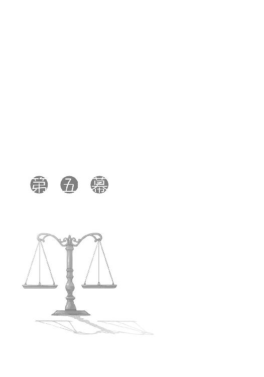
余計な小細工はいらない。まずは目的のみをはっきりと伝えた。
予想したとおり、レメリオの目は点になって「まさか」と言った。
「そのまさかです」
ただ、ロレンスがそう言うとリュビンハイゲンに商館を構える商人としての常識がようやく顔を出したらしい。馬鹿馬鹿しい、という軽蔑するような笑顔を浮かべて椅子の背もたれに寄りかかった。
「債務の返済が苦しいのはわかりますが、そんな与太話をされても困ります」
無駄な時間を過ごした、とばかりに立ち上がろうとしたので、ロレンスはそれを言葉で押しとどめた。
「きっと、同じ方法で密輸を試みた人は過去にいたことでしょう。そして、彼らは捕まった」
「わかっているなら話は早い。破産寸前の人間は得てして無謀な計画を完璧なものと誤認するものです」
それは半ば自分に向けてのものだったのだろうが、ロレンスはめげずに続ける。
「しかし、金の密輸を凄腕の者に任せたら？」
レメリオは粘つく目でロレンスを見てから、腰を上げるのを止めた。
「あなたが持ち込んできた計画は実現不可能だ。なぜなら、あなたの言う凄腕の連中はわざわざ金の密輸などしなくても十分に儲けているから協力はしてくれない。もしも他所から連れてくるのなら諦めたほうがいい。似たような密輸が後を絶たないせいで、町に登録していない連中の検査は物凄く厳しいからだ」
反論を持ち出してきたのは期待している証拠だ。
「凄腕で、しかも儲かっていない人材がいたとしたらどうです？」
「腕が立つならこの町じゃ仕事には困らないはずだ。彼らの数は常に不足しているのですから」
レメリオは腰を下ろし、ロレンスの返事を待つ。
その顔は、昨晩のホロと少しだけ似ていた。
反論をしつつ、さらにその再反論を待っている。だめだと見限りたいけど、見限れない。
ロレンスは、深呼吸をした。
「腕が立ち、この町で仕事にはありついているものの薄給で、しかも金を必要としている者がいたとしたらどうです？ さらに重要なのは、その人物が雇い主に不満を抱いているということです。私が知る人材の雇い主は教会です。そして、金の密輸は教会にたてつく行為でもあります。金の密輸を、金儲けのみならず、その教会へのささやかな復讐行為とそそのかせば、間違いなく食いついてくるでしょう。しかも、裏切りの可能性はとても少ない。なぜなら、雇い主である教会にほのかな暗い感情を持っているからです」
「そ、そんな都合のいい話が」
「商売で儲かる時というのは大抵そんなものです。違いますか？」
作物の実りが悪い時に自分だけ調達できた。流行おくれの装飾品を買ってしまったと思ったら別の町でそれが大流行だった。思いがけない大儲けというのは大概が普段ならあり得ないような偶然からもたらされる。
レメリオの顔が歪む。
信じたい。それでも信じきれないのだ。
「私がその人物の名を告げれば、納得いただけると思います」
「そ、それならあなたがただけで密輸をされたらどうなのです。わざわざ分け前が減るというのに私のところに来るのはおかしいでしょう」
指摘が密輸の内容から、その外枠へと向かった。可能か不可能かの判断を保留したのだ。
「それは二つの理由からできませんでした。一つは、私がこちらの商会に負っている債務の支払期限が今日までであり、日が暮れれば私はきっと私の債務の支払いの肩代わりをすることになる商館に捕らえられますから。もう一つは、私の手元にある金がこれだけなのです」
ロレンスは虎の子の詰まった皮袋を置き、紐を解くと中身をぶちまけた。
金貨と銀貨の混ざった三リュミオーネ。
ロレンスと同じく破産の憂き目に遭いかけているレメリオの目が現金にぎらついた。
「三リュミオーネあります。私がこの金をどうやって工面したかは、少し他の商会に聞いてみればすぐにわかるでしょう」
その言葉にレメリオは大きく息を吸った。
レメリオのような立場にいる者なら、即座にどうやって集めたものかわかったはずだ。
「これは本当に私のすべてです。これを担保に、話を信じていただきたい。そして」
ロレンスは体を前に出し、レメリオの目を真正面から見据えて言った。
「私の債務の取り立てを一時中止し、こちらの商会に密輸のための金を買い付ける資金を出資していただきたい」
憔悴しきったレメリオの顔を脂汗が流れ、顎にしわが寄る。
即座に否定しないのは、出資するだけの資金があるからだ。
そして、出資したいと思うだけの期待があるからだ。
あと一押しするべきか。しかし、あまり強引に押しすぎるとあらぬ疑いを持たせてしまう。
金の密輸は莫大な利益をもたらす代わりに、とてつもない危険を伴う。その上、現状のレメリオ商会に出資させようなどという取引は、その取引そのものが詐欺かもしれないと思われてしまうかもしれない。
実際、落ち目の船をさっさと沈めて儲けようと考えるやからがわんさかと来たはずだ。疑心暗鬼になっていてもおかしくはない。
だから、ロレンスは言葉を選んで口を開こうとした。
その瞬間だった。
「ぬし様よ」
ホロが口を開いていた。
レメリオが驚いたように視線をホロに向け、初めてそこに人がいたことに気がついたように目をしばたかせる。
ロレンスも同様にホロを見るが、ホロは一人だけ床を見ていた。
「ぬし様に迷っている暇があるのかや？」
「な......」
脅しとも挑発とも取れる言葉に、レメリオが口を引き結ぶ。場合によっては有効かもしれないその方法は、ここでは間違いなく逆効果だ。
ロレンスはまずいと思ってホロを止めようとした。しかし。
「今さっき、また一人ここから出て行ったようじゃが、ぐずぐずしておってよいのかや？」
その言葉と共にホロの視線が向けられると、レメリオは石でも吞んだかのような顔をして固まった。
「う、うう」
「わっちゃあ特別耳がよく、内緒話も筒抜けじゃ。下の部屋で、自分たちだけ逃げようと作戦を立てている内容を伝えて欲しいかや？」
「うう......」
「あ、また出て行ったの。このままじゃとこの店は」
「やめてくれ！」
レメリオは頭を抱えて叫んでいた。
ホロはそよ風が頰を撫でたとも思わないような無表情でそんなレメリオを見つめている。
ロレンスは半ば同情してしまう。商会というのは一つの船だ。船底に穴が開いていて、穴をふさぐ見込みがないとわかれば船員は船長の命令も無視してさっさと逃げ出してしまうだろう。
ただ、ホロがわざとそこを突いたことくらいわかっている。孤独という単語には殊更敏感なホロだ。
レメリオの苦悩くらいわかっているだろう。
「レメリオさん」
だからというわけでもないが、ホロの魂胆がわかった今、ロレンスはここぞとばかりに穏やかな口調でいった。
「私は私のすべてを賭けた三リュミオーネを担保にし、金の買い付け取引をあなたに持ちかけたい。それを可能にする人材に心当たりがあります。十分な報酬さえ渡せば、絶対に信用の置ける人物です。そして、こちらの商会であれば密輸した金を捌くルートをお持ちのはず。いかがですか。もしも私の負債を待っていただき、また、私にもそれなりの分け前をいただけるのでしたら、レメリオさんにとって決して悪くない条件で金の密輸を共に行いたいのですが」
一拍間を空ける。
「いかがですか」
レメリオは頭を抱えたままうつむいている。
ロレンスの言葉はぶどう酒よりも強烈な誘惑となって耳から心に届いたはずだ。それでもレメリオの顔は上がらない。
静かな時間が流れていく。
商会全体が、レメリオの行動に注目しているように静かだった。
「レメリオさん」
ロレンスが再度言おうとした矢先だった。
「わかりました......」
やつれた顔が上げられ、火の灯った目がそこにはあった。
「やりましょう」
思わず椅子から立ち上がり、手を差し出していた。
破産の二文字を背負った二人の手が、交錯した。
「神のお目こぼしがあらんことを」
レメリオ商会との密輸に関する報酬と役割の確認を終えた後、ロレンスとホロの二人はリュビンハイゲンの東に位置する下位教会の前にいた。教会組織は上に行けば行くほど神に近づくという考えから、その教会がどのランクに属するかで建物に施せる装飾や鐘の大きさが厳格に決められている。
ロレンスたちがいたのは中の下といったところの教会だ。なんとかみすぼらしくない程度の装飾を許されているものの、そこはリュビンハイゲンの町の中では地味だった。
時刻は正午をちょうど過ぎたところで、教会の中では昼の礼拝の真っ最中だった。
「で、ぬしよ」
聖母をたたえる歌を聞きながら石段に腰掛けていたホロが、唐突に声をかけてきた。
「小娘をたぶらかす自信は？」
「人聞きが悪いな」
「なにか違うのかや」
面白そうにホロが聞いてくる。ロレンスは渋い顔をして、前を向いたまま答えた。
「あまり、変わらない」
ホロは小さく笑う。
ロレンスとホロの二人がこの教会の入り口にいるのは羊飼いのノーラに用があるためだ。ノーラがどこの教会の世話になっているのかわからなかったが、娘の羊飼いを雇っている教会など数少ない。あっという間に調べがついた。
そして、わざわざそんなことをするからには別にノーラと世間話がしたいわけではない。
ノーラには密輸の重要な役回りを、即ち金の運び手を頼みに来たのだ。
ただ、ノーラはロレンスたちのように破滅の危機に陥ってはいない。そうでありながらも金密輸の計画を持ちかけることはほとんどたぶらかすといって間違いない。成功した暁に手に入る利益を危険と見合うように粉飾しなければならないからだ。
金の密輸は命を賭けるが、命と釣り合う利益などそうそうない。やはり、たぶらかすという言葉がしっくりくる。
しかし、この金の密輸にはノーラの羊飼いとしての力とこの町での立場が必要不可欠になる。
それに、きっとノーラならこの片棒を担ぐという自信があった。
人の心を商品の相場の動きのように判断することは少し良心が痛む。もちろん相手が商人であれば容赦する必要もないが、相手は素人の羊飼いだ。それでも、ロレンスの商人としての抜け目なさはそこのところをよく把握していた。
ノーラはただでさえ異端視される羊飼いの上に、姦計をめぐらす悪魔の手先と時折評される女でもある。教会から雇われているというのも教会は親切心から雇っているのではなく、ノーラを監視する目的でそうしているのだろうと簡単に予測がつく。教会から任される羊飼いの仕事の話をすると、言葉とは裏腹の表情が見えるのはそのあたりが原因だろう。
また、服の仕立て職人になるために金を稼ぎたい、と言うノーラだったが、あの娘の性格からしてあまり金にがめつい感じではない。それでも護衛という副収入を当てにするくらい金銭的に余裕がないのだ。相当厳しい労働環境に晒されているというのは嫌でもわかる。
辛く厳しい羊飼いの仕事をしていても一向に金が貯まらない、というのは夜明けを喜ぶ理由にはなり得ない。果てしなく続く明日は、永遠に辛く苦しいままだと思うに足るからだ。
そこに金密輸の話を持ちかけ、ちまちまと金を稼ぐのではなく一度に組合加盟費どころか当面の生活にも困らない金額を稼ぎ出せるという計画を持ちかける。危険は確かに存在するが、この好機を逃していいものだろうか。そんなふうに勧誘する。
無理やりやらせるわけではないのだからそういう意味では悪いことではないはずだが、ロレンスの胸のうちに湧き上がる罪悪感は、これが辛い境遇につけこむ取引だということがわかっているからだ。
だからといって、ノーラ以外では駄目なのだ。
ノーラがかなりの腕前を持つ羊飼いであるというのに、わずかの羊を連れて狼がうろつくような人気のないところで放牧を行っていることや、雇い主の教会に不満を持っていることや、夢のために金を欲しがっていることは、ロレンスたちが金の密輸を成功させるために最高の条件で神が用意してくれたとしか思えないようなことなのだ。これ以上の好条件がそろった人材はいないと言える。
しかし、ロレンスは大きくため息をつく。やはり説得は気の重いことだった。
そんな物思いにふけっていると、ふとホロの視線に気がついた。ちらりと見れば、呆れるような笑顔がそこにあった。
「ぬしはお人好しじゃな」
昨日も聞いた言葉だ。確かにロレンスは商人として少しお人好しすぎるかもしれない。商人の中には家族の不幸すら金に換える連中がごろごろいるのだから。
「しかし、まあ」
と、ホロは立ち上がり、相変わらず活気に満ちた町の通りを眺めながら後を続けた。
「わっちが暢気な旅をできるのはぬしがお人好しなおかげじゃからな」
何気なく言ってから石段を二つ上り、ロレンスの隣に立つ。
「わっちが代わりに小娘を丸め込んでもよい。少しはぬしの役にたたんとな」
うっすらとした笑顔でそう言うが、少し口調に覇気がないような気がした。
そう思って隣を見ると、案の定ホロは少しうつむいていた。活気に満ちた道の前にいるからだろうか、そんなホロの体はいつも以上に小さく見えた。
「なんだ、昨日のことまだ気にしてるのか？」
ホロは小さく首を横に振ったが言葉はこない。これ以上わかりやすい噓もない。
「さっきの商談でもお前がレメリオを追い詰めてくれなきゃどうなったかわからない。十分役にたってくれてるよ」
噓のない言葉ということはホロに伝わっただろうが、ホロは小さくうなずいただけでまだ浮かない顔だ。
だから、軽くホロの頭を撫でてからすぐに手を離して言ってやった。
「俺が自分で話を取りつける。暴落した商品を欲に目がくらんでつかんだのは俺自身の失敗だからな。気が重いからと言って代わってもらってちゃ話にならない」
ホロのために、という意味もあったが半分くらいは自嘲と自戒だ。口にした内容はまったくもって真実だからだ。
「それに、こんなことにまでお前の手を借りていたら後でどれだけつけ込まれるかわからない」
それから肩をすくめると、ホロも一拍開けて顔を上げ、小さく笑ってため息をついた。
「なんじゃ、せっかく貸しを作りまくって後で回収しようと思ったのに」
「危ない罠に引っかかるところだった」
おどけると、ホロは額をこつんと腕に当ててきた。
「そうじゃな。しかし、ぬしはもっとでかい罠に尻まで引っかかっとる最中じゃろ。わっちは罠にはまった兎など狩りんせん。それはあまりにもか弱い」
「罠にかかったように見える弱った兎を囮にした狼退治の罠というものを知っているか？」
「せいぜい罠を置きにいく時は遠吠えに怯えぬことじゃ。怯えれば罠を駄目にする」
中身のない挑発的な言葉のやり取りは気心の知れたじゃれあいだ。
ロレンスが馬鹿馬鹿しいとばかりに笑って顔を振ると、ホロもこらえきれずに笑い出した。
「ま、サーベルと商人はまっすぐじゃ役に立たない。すぐに折れちまうからな」
自分に言い聞かせるように呟いて、ちょうど響いた鐘の音を探すように空を見る。
少し雲があるが綺麗な青色の空だ。視線を東に向ければ白い雲がわずかに見えた。
今日は一日晴れだろう。晴れの日は商売もうまくいく。
そんなことを思っていると後ろで小さい木の音がした。かこん、という教会の扉が開く音だ。ロレンスとホロの二人は扉の前から少し離れて石段の隅に立つ。直後にぞろぞろと礼拝を終えた人たちが出てきて、祈りを終えたすがすがしさに満ちた顔つきで石段を降りていく。彼らは今日一日の残りの仕事をこなすために三々五々散らばっていった。毎日毎日繰り返されているであろう光景だ。
そして、やがて出てくる人もまばらになった。
礼拝の後、最も遅くまで教会に残っていた者は最も信仰心篤き者である、という流言が流行ったころは司祭が怒り出すまで皆教会に残っていたものだが、最近はそんなこともない。
ただ、あまりに早く礼拝終了と共に教会から飛び出していくのもよろしくない。
結果、肉屋や動物の革剝ぎ職人、その他もろもろの教会から目をつけられやすい職業の者たちはゆっくりと教会を出る。
そんな職業のうちに数えられる羊飼いの娘が出てきたのは、やはり最後のほうだった。伏し目がちに体を小さくして出てきたのは、教会が憩いの場所ではないからかもしれない。
「こんにちは」
そんなノーラの前に進み出て、努めて愛想よく笑った。うまく笑えたのはこれが商談の一部だからだ。
「え、あっ......ロ、レンスさんと、ホロ......さん？」
少しぽかんとしてから、ノーラはホロを見て、それからまたロレンスに視線を戻す。
「偶然教会の前で出くわすなんて神のお導きに違いない」
ロレンスが少し大げさな身振りを加えながら言うと、ノーラはなにかに気がついたような顔をしてから、くすぐったそうに笑った。
「いくら私でも騙されません」
「それはよかった。最近は教会で聖なる血を飲みすぎる方もいらっしゃると聞きますので」
聖なる血とはぶどう酒のこと。酔っているところにこの話を持ちかければその場では了承させることができるかもしれないが、いざという段になって怖気づかれたり断られたりするかもしれない。それでは意味がないのでノーラが素面だったのは幸いだ。
「あまりお酒が飲めないのでほとんど口にしません」
恥ずかしそうに笑ってから、そわそわしたように視線をそらす。そんな様子なのは、護衛の仕事が入った連絡だと思ったからだろう。
だから、ロレンスは遠慮なくその期待を利用した。
「実は仕事の依頼を」
ぱあっと音がしそうなほど顔が輝いた。
「こんなところではなんなので、どこか露店にでも」
酒場と言わなかったのは、こんな時間から行けば目立つことこの上ないからだ。密談をするなら朝から騒がしい広場のほうがいい。
ノーラはおとなしくうなずき、ロレンスが歩き出すとホロは右隣に、ノーラは左斜め後ろについてきた。
活気に満ち溢れざわめく通りを歩き、人ごみを抜けて三人は広場にたどり着いた。
広場は相変わらず祭りのような騒ぎだったが、運よく席の空いたビール屋の露店のテーブルに三人は着き、ロレンスは三人分のビールを頼んだ。エールのほうが安かったが、ノーラもいるのにさすがにそれは頼めない。
早い代わりに手荒く運ばれてきたジョッキ三つと交換になけなしの銅貨を払い、ジョッキを手に取った。
「再会を祝して」
ごつ、とジョッキがよい音をたてた。
「それで、ノーラさんはラムトラまで行けるのでしたっけ？」
いきなり仕事の話を切り出したものの、ビールに口をつけていないノーラは即座に表情を引きしめてロレンスのほうを見る。ホロはそんな二人を眺めながらちびりちびりと飲んでいた。
「は、はい。行けます」
「羊を連れながらでも？」
「あまり多くなければ」
即座に答えるあたり、ラムトラに続く草原や森に実際に何度か行ったことがあるのだろう。
しかし、念のためという意味でホロに言葉の真偽を問う視線を送ると、ロレンスにしかわからないように小さくうなずき返された。
ノーラは噓を言っているわけではないようだ。
悟られないように深呼吸をする。この手の話は、ちまちまと外堀を埋めていては相手の決心をにぶらせる。一気に核心をついた。
「私はある仕事をノーラさんにお願いしたい。報酬は二十リュミオーネ。もちろんちゃちな証書などじゃありません。現金です」
ノーラは異国の言葉でも聞いたかのような顔で小首をかしげた。実際、ノーラの耳から入った言葉は遠くの国から文でよこされたかのごとく時間をかけて頭の中に届くだろう。
二十リュミオーネとは、人によってはそういう金額だ。
「しかし、危険がありますし、それは成功報酬です。失敗すれば払われません」
指でテーブルを突いたりくるりと回したり罰印を作ったりするのは、相手に突飛なことを言った際に、それが夢や幻聴ではないということをわからせるのに有効だ。
ノーラもロレンスのそんな指の動きを目で追うことで、なんとか現実だと認識しているようだ。
ただ、やはり実感はないだろう。
「仕事の内容は羊を連れて歩くことです。そして、可能な限り羊を無事に連れ戻すことです。羊飼いとしてそれ以上の能力を必要とはしません」
ようやく頭がついてきたらしいノーラは、ロレンスの言う仕事内容と報酬があまりにもかけ離れていることに気がついたようで、疑問を口にしようとする。そこをわざと封じ込めるように「ただし」と後を続けた。
「ただし、仕事そのものに対する危険も大きいです。それこそ、利益に見合う程度には」
先に途方もない利益を告げてから、危険を告げる。どちらも途方もない驚きをもたらすものならば、最初に告げたもののほうがより強く印象に残る。
「それでも、報酬は二十リュミオーネです。組合加盟費はどんなに高くても一リュミオーネ。家を借りながら当面の生活費の心配もせずに仕事もできる。それだけあればやがて親方株だって楽に買えるでしょう。そうなれば貴女はノーラ服飾店の女親方です」
ノーラの顔がやがて困ったような、泣きそうなものになる。利益のとてつもなさにだんだん実感が伴ってきたのだ。そうすれば、当然気になるのはその仕事に伴う危険だ。
ノーラは餌にぱっくりと食いついた。ここからが勝負だ。口にする事柄の順番を間違えればきっと貝のように守りに入ってしまう。
「あ、そうだ。ノーラさんはこの町の仕立て服職人の組合に加盟するつもりですか？」
これから仕事の危険を話されるのだ、と身構えていたノーラはかくんと肩透かしを食らった感じだ。ただし頭は目もくらむような報酬と、いまだ話されていない危険について向けられている。あまり関係のなさそうな質問に対し頭を巡らせる余裕はないはずだから、素直な答えが得られるはずだ。
「い、いえ、別の町に、と思っています」
「そうなんですか。この町は大きいから他の町よりよくないですか？ 知り合いのいない町というのもなかなか住みづらいと思いますが」
意識のほとんどが別のところに向けられながらも、そこのところはあっさりと口にしてはならないという程度の考えは働いたようだ。
ノーラは困ったようにうつむいて、口を閉じてしまう。
もっとも、人の顔色から胸中を探る商人であるロレンスにはその反応だけで十分だ。
羊飼いの娘の胸中はガラス張りだった。
「まあ、やっぱりこの町の教会とはなるべくなら関わりたくないですよね」
かまかけ。
ホロがちらりとロレンスのことを見るくらい露骨だったが、効果はてきめんだった。
「そ、そんな、ことは......ない、ですが......」
「真面目に仕事をして、彼らから預かった大事な羊を一生懸命守りとおせばとおすほど、彼らは異教の魔術を使っているのではないかと疑ってくる。違いますか」
首を横にも縦にも振らないのは、それが図星だからだ。
「そして、彼らはあなたの化けの皮をはがそうと、他の羊飼いならば絶対に行かないような場所にあなたを行かせている。他の場所は別の羊飼いの縄張りだから、と言って」
その瞬間、ノーラの目が見開かれてロレンスのほうを見る。うすうす思っていたことなのだろう。いくら羊飼いたちに縄張りがあるといっても、遠方まで行く労を惜しまなければ安全なところはたくさん残っているはずだからだ。
「きっと、司祭たちは、狼か、または傭兵などにあなたが襲われるまで危険な地域に押し込め続けるでしょう。毎日、毎日、異教の者ではないのかという疑念を抱きながら」
ぎりり、とテーブルの下で握った拳は痛む良心を握りつぶすものだ。
ロレンスはノーラがその小さい胸の中に抱いていた疑念に火をつけてしまった。もう後には引けない。それが真実であろうが間違いであろうが関係ない。
サーベルと商人はまっすぐでは役に立たない。
「私も似たような目に遭ったことがあります。はっきりと言いましょう」
視線はノーラに向けたままで、周りの人間には聞こえないぎりぎりの音量で言った。
「ここの教会は豚より劣る」
教会批判は重罪だ。胸中で燃え盛っていたはずの疑念の火が消し飛ぶほどノーラは驚いて辺りを見回すが、ロレンスはそのままテーブルに両肘をついて身を乗り出した。
話が周りに聞かれているかどうかは、辺りに気を配っているホロが教えてくれるはずだ。
「そこで私たちが考えた計画があります。教会をちょっと困らせてお金を稼ぎ、別の町に行く。そんな計画です」
疑念についた火は怒りとなって燃え盛るが、それが消えた後には確信という名の燃えカスが残る。ノーラの中で、教会権力に楯突く行為を正当化する種が芽吹いたはずだ。
ロレンスは、ゆっくりと伝えるべき事柄を言葉にした。
「金の密輸です」
ノーラは少しだけ目を見開いたものの、それからすぐに落ち着いた顔に戻った。それは、驚きがせいぜいちょっと強い風程度にしか感じられなかったということだ。
頭も回り始めたらしく、久しぶりに口を開いた。
「ですが......私に、なにができるのですか？」
よい質問だった。優秀なのは羊飼いとしての腕だけではないようだ。
「この町はご存知のとおり金の密輸に関しては恐ろしく厳重に取りしまりを行っています。この町に続く道すべてに検問を設け、二段構えの検査を行っていることからもわかります。服の袖の中に隠したり、荷物の中に混ぜたりしても彼らはたちどころに気がついてしまう。たくさん持ち込もうとすればなおさらです」
熱心に説教を聞く正教徒のようにうなずくノーラに、ロレンスははっきりと告げた。
「我々は、羊の腹の中に金を隠すことで、大量に、そしてばれずにこの町に金を持ち込もうと考えました」
まさか、という声が聞こえてきそうなほど目を見開いたノーラだったが、やがてそれは硬い土に水がしみ込むようにゆっくりとノーラの頭の中に入っていったようだ。
羊に限らず年中草を食んでいるような動物は石を飲み込むことが多い。粒状の金を草に混ぜて飲み込ませることなどわけはない。ただし、検問を通る際にもたもたしていては反芻の際に金を吐き出してしまうかもしれない。そこで、凄腕の羊飼いでありながら、たくさんの羊を持たず、わずかな羊だけを連れて人気のないところを普段からうろついているノーラに白羽の矢が立っているのだ。ポロソンから来る時に通過した一つ目の検問所は質素だった。あれが人の通りが多いところではもっとしっかりとした大がかりなものになる。
ノーラはゆっくりとうなずいて、「なるほど」と呟いた。
「しかし、この都市の政策の影響下にある町ではすべて金がべらぼうな値段です。そうすると輸入する先で最も都合がよいのは異教徒の町ラムトラしかない。また、ラムトラから安全な道のりで行くと人通りが多く、さらにそこは古くから他の羊飼いたちの縄張りにもなっている。ノーラさんを選ぶ理由はまさにここです。人がほとんど通らない場所で羊を連れてうろうろしていても怪しまれず、しかもその場所はラムトラと最短距離で結ぶこともできる」
それから一度言葉を切って、小さく咳払いをしてからノーラのことをきちんと見つめながら言葉を投げた。
「そして、ノーラさんはこの町の教会にひどい目に遭っている。この計画は教会への恨みを晴らすには絶好の機会でもあります。教会最大の資金源は、寄付金と並んで金の輸出入ですからね。しかし、ばれれば大変な罰が待っていますし、この仕事の後には安全のため町を離れなければならない。それに、場合によってはノーラさんに羊の解体をお願いするかもしれません」
羊の解体をしたことのない羊飼いはあまりいないだろうが、それが辛くない羊飼いもあまりいない。ただ、覚悟の程を計るにはよい目安だ。
「ただし、報酬は二十リュミオーネ」
ずるい、とは思ったが、ロレンスがずるいと思えば思うほど効果の高さを示している。
やがて、テーブルを挟んで反対側に座る、寒さや暑さ、それに懐疑の視線とひどい仕打ちにも耐えてただ黙々と羊を飼っていた羊飼いの娘は、利益と危険と仕事の内容を天秤にかけて結論を出したようだ。
すっと瞳の色が落ち着くのがわかった。
ノーラの小さい口から、力強い言葉が紡がれた。
「ぜひやらせてください」
この瞬間、ロレンスは一人の人間に命を賭け金にした博打を打たせてしまった。
しかし、ためらわずにノーラに向かって手を差し出す。それは、自身の明日をも摑む手だからだ。
「よろしくお願いします」
「......こちらこそ」
この瞬間、約束は強固なものとなり、ノーラとホロも握手をしたことで三人は運命共同体になった。この三人は、共に笑うか、泣くかのどちらかしかない。
「では細かい話に入りましょう」
それからロレンスはノーラが羊を預かる時間、頭数、それにラムトラ周辺の地形のことと羊に飲ませることができそうな金の量を聞いた。ロレンスは直ちにこの情報をレメリオ商会に持ち込んで打ち合わせをする手はずになっていた。
昼は瞬く間に過ぎ、商売を終えて帰路に着く商人や職人たちが町に出始めた時間になってようやく話は終わったが、ノーラは結局ビールに手をつけずに席を立った。
すべてはノーラが素面の頭で受け入れ、決断したことだ。
そう思わなければ、丁寧に頭を下げて途方もない儲け話を持ってきてくれたロレンスに何度も感謝して帰っていったノーラの後を追いかけて、もう一度考え直すよう説得しそうになった。
ジョッキの中のぬるくなったビールをいっぺんに呷る。それはいつもより苦く、まずかった。
「ぬしよ、もっと喜んだらどうかや。せっかくうまくいったというのに」
見かねたようにホロが苦笑いしながら言葉を向けてきた。
しかし、手放しで喜ぶ気になどなれるわけがない。ロレンスはノーラに、命をかけた博打の道を選ばせたのだ。
「どんな利益があろうとも、命を形にして見合う博打なんか存在しない」
「まあ、そうじゃな」
「それに、利益ばかりを強調したあんな口上は詐欺同然だ。不利な契約は結ばれたほうが馬鹿というのは商人同士の慣習だ。相手はなんだ？ 羊飼いの娘じゃないか」
声を荒げることこそしなかったものの、ロレンスの胸中には後悔が渦巻いている。
商人としての再起も、今までの人間関係もすべてドブに捨てて、ただ生き延びようとするならホロの協力を得れば済む話だ。
ただ、ロレンスにとってそれらは死ぬこととほとんど等しいくらいのことだ。
だからホロの案を天恵とばかりに実現させようとノーラをたぶらかした。
それでも、わかってはいたけれども、後悔せずにはいられなかった。
「のう、ぬしよ」
しばらくの間、ジョッキをゆるゆると回していたホロが、中のビールを見つめながら口を開いた。
ロレンスがホロを見ても、ホロはそのままだった。
「羊が喉に食らいつかれた時の、羊のなんともいえない悲鳴を聞いたことがあるかや？」
突然の言葉に息を吞むと、ようやくホロも視線をロレンスに向けた。
「牙も持たず、爪も持たず、逃げるための足も持たない羊に、牙も、爪も、足も持つ狼が風のように草原をすべり弓矢のように喉に食らいつく。ぬしはそれをどう思うかや」
世間話をするように喋るホロの話は、実際に世間話なのだと気がついた。
それはよくあること。いや、よくあることですらない。
生きるために食べられるものを可能な限りの方法で狩る。それは当たり前のことなのだ。
「羊の悲鳴はなんとも言えぬ。それでも、空腹は常にわっちに不平をもらす。どちらかに耳を貸さねばならぬとすれば、よく聞き取れるほうに耳を貸すじゃろう？」
それはわかっていた。
生きていくためにはなにかしらを犠牲にしなければならないことを罪として、断食のうちに死ねるのは聖人だけだ。
ただ、それをどこまでも是とできるわけでもなかった。
そのせめぎ合いを口にしたのは、誰かに言ってもらいたい言葉があったからだ。
「ぬしは、それほど悪くありんせん」
仕方ないなという感じに笑うホロの笑顔に、ロレンスは黒いわだかまりが一斉に溶けてなくなっていく気がした。
まさしく、その言葉が聞きたかったのだから。
「ふん。まったく、この甘ったれが」
胸中を見透かされた言葉に、まったくだと顔が渋くなってしまう。しかし、残りのビールをさっさと飲み干したホロは立ち上がって言ったのだった。
「ま、人も狼も独りでは生きていけぬ。時には相手に寄り添いたくもなろう。違うかや？」
柔軟な強さとはきっとこういうことを言うのだろう。
そんなホロの笑みにうなずいて、テーブルから立ち上がった。
「しかし、ぬしも意外に油断ならんのじゃな」
ノーラをうまくそそのかしたことを言っているのだろうが、あれくらいのことができなければ商人としては生きていけない。
「当然だ。お前もそそのかされないように注意しろ」
「うふふふ。楽しみに待っておる」
本当に楽しみにしているかのように笑うので、やはりきっとそそのかされるとしたらロレンスのほうだろう。もちろん口には出さなかったが、歩き出すと横にぴったりとくっつくホロがしのび笑いを漏らしたので、胸中のことは筒抜けだと思ったほうがよさそうだった。
「まあ、全員が笑える結果になるように努力するしかない」
「妥当な考えじゃ。しかし」
そこで言葉を切ったホロのほうを見ると、いたずらっぽく笑っていた。
「わっちと二人でほくそ笑むのが最もよくないかや？」
魅力的な案だが、やはり皆で笑うほうがいい。
「ぬしはどうにもお人好しじゃな」
「駄目か」
「まさか」
そして、二人で小さく笑って町を行く。
道の先は必ずしも明るくないが、少なくとも隣にいる者の顔はよく見えた。
きっと密輸は成功する。
なんの根拠もなしに、そう思ったのだった。
「レメリオ商会のマーティン・リーベルトです」
「ロレンスです。こっちは連れのホロ」
「あ、ノ、ノーラ・アレントです」
教会都市リュビンハイゲンには、町に出入りするための出入り口がいくつかあり、北東に位置する出入り口手前の広場で三人は改めて名乗りあった。
市場開放の鐘が鳴る前の朝の空気は実にすがすがしく、昨晩の喧騒の後を示すゴミくずが散らかっている広場もどことなく美しく見える。
もっとも、その場にいた者たちの中で町の様子を見る余裕があったのはホロだけだろう。
他の面々は軒並み顔を緊張で引きしめていた。
金の密輸はばれれば金額によっては八つ裂きの刑まで用意されている重罪だ。本当ならば何度も打ち合わせをして万全を期すところなのだが、生憎とそんなことを言っていられる状況でもない。
レメリオ商会をつぶしてうまい汁を吸おうと考える債権者たちは大勢いる。破産しかかっている商会であっても、土地家屋や売掛債権など金に変わるものはあるからだ。
そして、彼らは債務の支払日など待ってくれはしないのでレメリオ商会も一刻も早く金を密輸し換金する必要に迫られていた。
そのようなわけで、朝の礼拝後に教会から羊を預かってきたノーラとはその足で合流した。ロレンス以外にも密輸に関係する人間がいるとは思っていなかったらしいノーラは、レメリオ商会の名前を聞いていくらか驚いていたようだったが、特に疑問を口にすることもなかった。自分にできることだけをやる、と腹をくくっているのだろう。
「それでは早速参りましょう。商売は台所の生魚のようなものですから」
すぐに腐るということだ。レメリオ商会主人、ハンス・レメリオから金の密輸という大役を任されてやってきたリーベルトの言葉に、ロレンスは異議があるわけもなく同意した。当然、ノーラやホロからも反対意見は出なかった。
一行はまだ眠そうにあくびをしている門番たちからわずかに好奇の視線を向けられつつも、特に問題なくリュビンハイゲンの町を出た。
ロレンスはいつもの商人服で、リーベルトは町商人らしく狩りにでも出かけるような気取った仕立ての旅行服。ホロは再び修道女風の身なりに変わり、ノーラは相変わらずの格好だ。
ただ、ロレンスもリーベルトも荷馬車に乗ってはいなかった。リーベルトは自前の馬の背に乗り、ロレンスはホロを馬の背に乗せ自分は手綱を引いて歩いていた。道が悪いと予想されたし、なにより馬だけのほうが速度は段違いに速い。
七匹の羊と牧羊犬のエネクを連れたノーラを先頭に、一行は一路北東の町ラムトラを目指したのだった。
ロレンスたちがポロソンから来た時のように、その道は旅人には不人気のようで丸一日歩いても誰ともすれ違わなかった。
会話らしい会話もなく、聞こえてくるのはノーラが鳴らす鐘の音と羊の鳴く声だけだった。
会話らしいものといえば、日が暮れかけてすぐにノーラが歩みを止め、野営の準備をし始めた時にリーベルトがそれに文句を言ったのが最初だった。目が切れ長で細く、ブロンドの髪の毛を綺麗に撫でつけたリーベルトの格好は、重要な商用を申し付けられた気鋭の若き商会の幹部といった感じで、ノーラにもっと先に進んでから野営すべきだと主張した際も神経質そうな物言いだった。
ただ、旅の常識を知らないリーベルトは、ロレンスが羊飼いのことや夜の行軍の危険さを説明すると思いのほか素直に納得した。神経質そうではあったが、頑固なわけではないらしい。
それどころか、普段はもっと温厚な感じなのかもしれないと思ったのは、そんなやり取りをきっかけにしてリーベルトが実に真剣な口調でこう言ったからだ。
「申し訳ない。緊張して気が急いているのです」
リーベルトはレメリオ商会の存続をかけた商会の代表だ。その上着の内側には厳重に封をされた金を買い付けるための買い付け証書が入っているはずだ。その金額、およそ六百リュミオーネ。商会の主人たるレメリオですら、今頃リュビンハイゲンで両手を組み合わせて神に祈り続けていることだろう。
「私と違って商会を背負っているんです。当然でしょう」
ロレンスが言うと、リーベルトは少しだけほっとしたように笑みを浮かべたのだった。
それからは静かな夜を過ごし、やがて朝を迎えた。
町に住む者たちは朝食を贅沢と思う傾向があり、大半の者が取らないが旅に暮らす者は食べるのが常識だ。
なので、リーベルトを除く三人は押し固めたパンや干し肉をかじりながら進んでいった。
そんな一行の歩みが止まったのは昼前のことだ。
ちょうど小高い丘の上で、道は足元からまっすぐに東に延び、次の丘の頂上あたりで一旦南に向かって折れている。辺りには放牧にはうってつけの草が枯れ草と共に生えていて、そんな草原が四方に広がっている。
ただ、この先の道が向かっている方向とは逆、つまり北側に視線を向けて目を凝らせば、彼方には黒に近い緑色をした森が見えるし、ゆっくりと視線を西のほうに向けていけば岩の多い急斜面の丘が見える。
ロレンスたちが進むのはそんな森と丘の隙間、荷馬車や旅人が踏み固めてすらいない草原だ。
岩が多く徒歩ですら越えることのできない丘と、騎士たちですら尻込みする深く不気味な森に挟まれた草原はラムトラに続く唯一の近道だ。
まともに頭が巡る者なら絶対に通らないそこは、なんの変哲もない草原なのにどこか恐ろしく感じてしまう。ホロが鼻で笑った異教の魔術師が狼を召還したのだという話も、まんざら噓ではないのかもしれない、などと思ってしまう。
しかし、ここを通って無事ラムトラまで行き、金を持って帰ってこなければ明日はない。各各が顔を見合わせ、示し合わせたようにうなずいた。
「狼が出ても慌てないでください。必ず町まで無事にお届けしますから」
珍しく強気なノーラの発言が心強いが、ホロだけは少し面白くなさそうにしていた。
賢狼のホロとしては言いたいこともあるのだろう。ロレンスと目が合うとわざと唇を尖らせてから、すぐにいつものすまし顔に戻っていた。
「神のご加護があらんことを」
リーベルトの祈りに、全員が倣ったのだった。
いい天気だった。
時折風が吹き、冷たい空気が頰を撫でていったが、歩いているぶんには気にならない。
先頭を徒歩のノーラと馬上のリーベルト、その後ろに七匹の羊、さらにその後ろに馬を引くロレンスと馬上のホロがいる形だった。
北に向かって進んでいくと、だんだんと西の丘がこちらに迫ってきて森のほうへと押される形になって草原が続いている。馬が草に隠れた石を踏んで怪我をしても困るのでなるべく森のほうに向かって歩いていたのだが、薄暗い森の姿が確認できる距離になると不気味さも倍増だ。
心なしか、狼の遠吠えが聞こえているような気がしなくもなかった。
「なあ」
「うん？」
「狼、大丈夫だと思うか」
だから、つい声をひそめてホロに聞いてしまっていた。
「だめじゃ。すでに囲まれておる」
そんな見え透いた冗談にも一瞬息を吞んでしまったくらいだ。
ホロが面白そうに声なく笑う。
「ぬしの身の安全なら確実に保証する。じゃが、それ以外のことはわからぬ」
「全員が無事じゃないと困るんだがな」
「それは本当にわかりんせん。風下が森になっとるからの。森に狼がいればとっくに羊に気がついて牙を研いでおるはずじゃ」
そう言われるとなにものかの視線が森から向けられているかのような気がする。
そんな折に、たたっ、という獣が地を走る独特の音を聞いてびっくりして視線を向けると、黒い毛をなびかせたエネクが近くを走り抜けていった。
遅れ気味だった羊二匹を追い立てているのだ。
「賢い犬だな」
他意のない感想だったが、ホロが小さくふんと鼻を鳴らした。
「中途半端な賢さは死を招きんす」
「......どういう意味だ？」
前を行くリーベルトやノーラに会話の内容を聞かれるとややこしくなるのでなるべく声をひそめて話していたが、さらに声をひそめてホロに訊ねる。
馬上からのホロの視線は、不機嫌なものだった。
「あの犬、わっちのことに気がついておる」
「そうなのか？」
「耳と尻尾を隠せば人は騙しおおせるが、犬はそうはいかぬ。初めて会った時から腹の立つ視線を向けてきてたじゃろう？」
ちらちらと見られているのには気がついていたが、ロレンスにはそこまでわからなかった。
「しかし、の、特に腹立つのはな」
フードの下で耳が動く。不機嫌さはそこそこのものらしい。
「あの犬の目じゃ。あの犬の目はこう言っておる。羊に手を出してみろ、いつでもその喉笛を嚙み切ってやる、と」
まさか、と苦笑すると、藪にらみの視線を向けられて少したじろいだ。
「身の程をわきまえぬ犬ほど腹の立つものはない」
そっぽを向いて、ホロは言った。
犬と狼は鳩とカラスのように仲が悪いものなのかもしれなかった。
「もっとも、わっちゃあ賢狼ホロじゃ。あんな犬の挑発になど乗らぬがな」
仏頂面でそう言うのだ。笑うなというほうが無理だった。
ただ、あまり怒らせてもまずいのでさっさと笑いを引っ込める。
「そうだな。あの犬とお前とじゃ勝負になりはしない。強さも、賢さも、そして、尻尾の毛並みもな」
見え透いたおべんちゃらだったが、最後の一言は効いたらしい。
フードの下の耳がぴくんと跳ね上がると、すまし顔の仮面では隠しきれない得意げな笑みがホロの顔から漏れ出ていた。
「うむ。ま、ぬしもだいぶわかってきたようじゃな」
確かにホロの扱い方がだいぶわかってきた自信はあったが、もちろんそんなことは言わずに恭しく頭を下げておいた。
そんなことをしているとやがて草がまばらになり、黄土色の地表が見えるようになってきた。
西に広がる荒れた海のような丘がかなり迫ってきているのだ。
時折木の根をまたぐように歩かなければならないような、道ともいえない道を進む。
やがて、風が吹く度に木立の揺れる音が耳につくようになってきた。
しかし、それからひたすら前に進み、二度目の夜を迎えても特に何事もなかった。
ノーラの話では夜明けと共に出発すれば昼ごろにはラムトラに着くということだから、正規の道のりの半分どころか三分の一か四分の一だ。ここを切り拓いて道にすればラムトラへの貿易も容易になるだろう。これまでの行程を振り返る限り特別狼が多いような気もしないから、道を作ればよいのにと思う。
それに、ここに道ができればラムトラを攻めるのも簡単になるだろう。リュビンハイゲンとしては本来ならこんな近くに異教徒の町があるのは許しがたいことのはずだ。それをしないということは、もしかしたらリュビンハイゲンは秘密裏にラムトラから金をもらうことでわざとここに道を作らないのかもしれないとも邪推した。権力のあるところに裏金あり、だからだ。
味気のない夕食後に振る舞われたリーベルトが持ってきたぶどう酒をなめるように飲みながら、そんなどうでもよいことをつらつらと考えていた。話し相手がいないので手持ち無沙汰なのだ。
ホロはぶどう酒をさっさと飲み干すと毛布に包まってロレンスにもたれかかったまま眠ってしまい、旅慣れていない様子のリーベルトも疲れたように焚き火の前でうとうとしている。
視線を少し巡らせれば、先ほど目を覚ましたノーラが焚き火から離れた場所の木の根元で膝の上のエネクを撫でている。あまり焚き火の近くにいると目が光に慣れていざという時に困るのだそうだ。
ふと、ロレンスの視線に気がついたらしいノーラが顔を上げてこちらを見た。
それから、自分の手元を見て、再度顔を上げるとにこりと笑った。
一瞬どうしてノーラが笑ったのかわからずに、ロレンスも手元を見て理解した。
ずるずると崩れたホロの体がロレンスの膝の上にあった。同じ、ということだろう。
ただ、さすがにホロの頭を撫でるのは怖い。膝の上で寝ているのは、エネクより恐ろしい狼なのだから。
それでも、小さい寝息をたてて無防備に眠るホロを見ているとだんだんと撫でてみたい誘惑に駆られてくる。ノーラがエネクにするように、なにげなくすればなにも問題はないだろう。
リーベルトは寝ているし、ノーラはエネクを撫でながら七匹の羊のほうを窺っている。
ロレンスは粗末なでこぼこの木のコップを置いて、ゆっくりとホロに手を延ばした。
何度か撫でたことのある頭が、神聖なもののように思えてくる。
ロレンスの手がホロに触れる。その瞬間だった。
「っ」
ホロが突然顔を上げたのだ。
慌てて手を引っ込めるとホロが不審げな視線を寄越してくるが、すぐにそれは別のところに向けられた。一体何事かと思うと、いつの間にかノーラも立ち上がり、側に牙を向いたエネクを従えていた。
見ている方向は同じだ。どこまでも黒い、黒曜石のような森の中。
「ロレンスさん、下がって」
一変して力強い口調になったノーラの言葉にほとんど反射的に従おうとしたところ、なにかに引っかかって立ち上がれなかった。
なにかと思えば、膝の上にいたホロが後ろ手にロレンスの服を摑んでいた。
しかも、ロレンスが抗議するよりも早くに非難するようなホロの視線が肩越しに突き刺さる。口に出して言えば、小娘の言いなりにならずわっちの後ろにいろ、とでもなるのかもしれない。
なにかとても強い敵対心をノーラに対して抱いているようだったが、逆らうと怖いのでホロが立ち上がってからその後ろにつき従った。
ノーラはそんなホロを他所に自分の仕事に忠実なようで、杖の先の鐘を鳴らしてエネクを走らせると、眠りこけていた羊を火の側に寄せ、未だに寝たままのリーベルトの肩をたたく。それから、森からいくらでも採れる薪を焚き火の中に盛大に放り込んだ。
手馴れていて、冷静な動き方だ。人を相手にした時の気弱な様子は、商人以外を相手にするとうまく口が回らなくなる自分と同じなのかもしれない、と思ったりもした。
そして、ようやく目を覚ましたリーベルトが張り詰めた空気を察し、ノーラとホロの視線の先に見えざる狼を感じ取ったようだ。
おそらく六百リュミオーネの買い付け証書が入っている胸の辺りを押さえながら後ずさり、尻尾の毛を逆立て牙を剝いたエネクの後ろに回り込んだ。
一とおりこちらの防御体制が整うと、後に響くのは不安げな羊の鳴き声と、エネクの荒い息遣い。それに焚き火がはぜる音だけだ。
漆黒の森のほうからはそよとも音がしない。空には月が出ていて風もない。当然、単なる商人のロレンスからすれば森のほうになにかがいる気配も感じられない。
それでも、ノーラもエネクも、それにホロも森のほうを見たまま微動だにしない。
それら視線の先では、真っ黒い池の中で泳ぐナマズを捉えているのかもしれない。
ただ、妙なのは狼たちの遠吠えが一切聞こえないことだ。ロレンスも旅の途中で何度か狼に襲われたことがあるが、その時には必ず遠吠えがあった。それが、まったく聞こえてこない。
だから、本当に狼がいるのかという疑問を持った。
じりじりと、ゆっくりと厚手の毛皮が焦げていくように時間が過ぎていく。
やはり遠吠えは聞こえない。ロレンスがなんとか緊張を解かずにいられたのは、信頼できるホロという相棒が真剣そのものだったからだ。
ただ、ノーラもホロも小娘にしか見えないリーベルトは別なようだった。
さっきまで蒼白だった顔に血の気を戻し、それから不審げな視線をちらちらと向けている。
動きがあったのは、そんなリーベルトが口を開こうとした矢先だった。
ノーラが両手で持っていた杖を体の右脇に立てると、左手で腰からぶら下げている角笛を手に取った。ホロがそれを見て少し面白くなさそうにしたのは、角笛が狼とは相容れないものだからだろう。
狼が遠吠えをし、熊が背中を木にこすり付けてまわるように、羊飼いは角笛で存在を周囲に主張する。どんな動物も出すことができない独特の間延びした角笛の音は、聞き間違えることなく羊飼いの存在を示す。
高らかに吹かれた角笛の音が、夜の森へと吸い込まれていく。狼たちがいたのなら、そこには腕利きの羊飼いがいることがわかっただろう。
しかし、やはり狼たちの遠吠えは聞こえない。徹底的に相手は沈黙を守っていた。
「......追い払えたのか？」
代わりに、というわけでもないだろうがリーベルトが口を開いた。
「わかりませんが......少なくとも遠くには行ったみたいです」
はっきりしないノーラの返事にリーベルトは眉根にしわを寄せたが、エネクが牙を剝くのをやめて羊を追い回し始めたのを見ると少なくとも危機が去ったことだけは納得したようだ。
動物のことは動物が一番よくわかる、とでも思っているのかもしれない。
「ここの狼は、いつもこうなんですよ。遠吠えも滅多に聞きませんし、襲うようなそぶりも見せず、ただじっとこちらを見ているような......」
墓場でよみがえった死体のことを語るようなノーラの口調に、レメリオ商会の若き幹部は再び顔を青くした。見た目と違い、案外気が弱い。
「確かに、遠吠えすらせんのは妙じゃな」
未だに森のほうを見ながらホロが呟くように言う。すると、見た目は小娘であり羊飼いですらないホロがそんなことを言ったのが気に食わなかったのか、リーベルトが見下すような視線をホロに向ける。
町の人間にはそういう連中が多いので特にリーベルトの性格が悪いというわけでもないだろうが、ホロの癇にはちょっと障ったようだ。
「狼以外のなにものかもしらんな。例えば、ここで死んで化け物になってしまった旅人とか」
途端にリーベルトの顔が真っ青になる。さすが賢狼はリーベルトの臆病なところを見抜いていたようだった。
「しかし、ぬしよ」
と、哀れな子羊をからかった後にホロが服の裾を引っ張ってきた。声を潜めていたのでかがんで耳をホロの高さに合わせた。
「半分は本気じゃ。なにか嫌な予感がする」
この旅は単なる商用の旅ではない。無事にラムトラまで行き、帰ってこなければならないのだ。もしも失敗すれば逃げるにせよ運命に従うにせよ、ロレンスの商人生命は終わりを告げる。
脅かすなよ、と非難の視線を向けたものの、ホロは気にも留めずに再び森のほうを見た。
冗談ではないらしかった。
「えっと、薪、なくなっちゃいましたね」
いまだ緊張の解けきらない空気を和ませようとしているのか、ノーラが努めて明るく言ったので、ロレンスはそれに同意した。ホロもようやく森から視線を戻し、うなずく。リーベルトがうなずいたのは、ほとんど意地だったかもしれない。
「じゃあ、ちょっと薪を集めてきますね」
夜目が利くからだろうが、ノーラだけに任せるのも悪いので「私も行きますよ」と言うと、「ならわっちも」となった。
焚き火を起こす時は手順もなにもわからないせいもあってなにもしなかったリーベルトだが、さすがに居心地の悪さを感じたらしい。
「わ、私も手伝いますかな」
と、咳払いをしながら言ったのだが、大方一人で残されるのが怖かったのだろう。
そんなリーベルトを見て、ホロがにやにやと笑っていた。
それからしばし森の中で薪を拾って歩いたが、どことなく獣臭かったのは気のせいなのか。
ただ、その日の夜はそれから何事もなく静かに更けていったのだった。
ラムトラの町が見えた時、正直ほっと安堵のため息をついた。
右手には深い森、左手からは荒れた丘が迫る草地を進む行程はまるで路地裏を延々と歩かされる気分だった。
もっとも、安堵のため息はそんな道が終わったことに対するものではない。もっとひどい悪路ならばいくらでも経験したことがある。安堵のため息は、昨夜を境に時折感じるようになった不気味な視線がなくなったことに対してのものだった。
それがロレンス一人の気のせいではないというのは、始終ホロもノーラもぴりぴりとしていたことからわかる。やはりリュビンハイゲンとラムトラを隔てるあの森は、騎士団ですら怖気づくというなにかがあるのだろう。
それでも、行きは無事に通過できたのだから帰りもまた無事に通過できるはずだ。多少不気味ではあったが、何度か通ったことのあるノーラが一度も襲われたことがないというのだから、ノーラの羊飼いの腕とホロに任せていればどうにかなるはずだ。
そうすると、残るは金を持ち込む時のことだけだ。
全員でぞろぞろとラムトラの町に入っても仕方ないので、単身金の買い付けに出向いたリーベルトの背中を見送りながらロレンスはそんなことを思っていた。
「うまくいくといいですね」
ノーラのその言葉は多分リーベルトの金の買い付けに向けてだろう。
ここまでは正規の取引なのだから失敗することはないが、わざわざ指摘するのも嫌味だ。
「そうですね」
しかし、返事をする時に使った笑顔が商談用だったのにはわけがある。
ノーラの口調は、まるで世間話をするようなものだったからだ。
ロレンスの胸のうちに、疑念と共に黒い後悔が舞い戻る。
ノーラは、この密輸が失敗した時に待ち構えているあまりにも厳しい罰を理解していないのではないだろうか、と思った。金の密輸の際に最も危険なのは当の羊飼いだというのに。
市壁の門をくぐる時、金は羊の腹の中に隠して密輸するのだ。万が一羊が反芻でもして金を吐き出せば、羊飼いは弁解の余地なく処罰される。
それに対し、リーベルトやロレンスたちは口をつぐんでしまえばどうにかなる可能性がある。
この差はとてつもなく大きい。ノーラはそこのところをわかっているのだろうか。
平素と変わらぬ様子で羊に目をやったり、一仕事終わる度にノーラの元に駆け寄ってくるエネクを撫でる様子を見ていると、それを確認しなければならないような気持ちになる。
自らの身に起きる可能性のあることと、それに比べて周りは一体どうなのかということの把握ができているとはとても思えなかった。
そして、だとすればそれは無知につけ込んだ詐欺に近い。それを思うときっと良心というのは胃の腑の辺りにあるに違いない、と確信できるようになる。
しかし、もしもそれを確認して、ノーラがそこのところに気がついていなかったとしたら。
自分だけがババを引かされる可能性があることには協力できないと掌を返されてしまうかもしれない。それだけはあっては困る。だから聞くに聞けなかった。
「そういえば」
と、ロレンスは当のノーラの声に我に帰る。
ただ、顔を上げるとその言葉はロレンスに向けられたものではなかった。
ススキを一本引っこ抜いて暇そうに辺りを歩いていたホロがノーラのほうを見ていた。
「ホロ、さんは」
名前のところで一瞬言い淀んだのは、話しかけるのに勇気を振り絞っていたからかもしれない。
何度も話しかけたそうにしていたことはロレンスですら気がついていたが、ホロがそっけないのでためらっていたようだ。
ロレンスは胸中で頑張れと声をかけていたが、次に続いた言葉に驚いた。
「狼にお詳しいんですか？」
一瞬ハッとしてしまったが、対する賢狼は実に老獪だ。少しも表情を変えずに、しばらくしてから小首を小さくかしげた。
「あっと、いえ、その、昨晩、物凄く早く狼に気がついていらっしゃったようなので......」
そのまま消え入りそうになってしまったのは、もしかしたらホロのことを羊飼いの経験者だとでも思ったのかもしれない。そうなれば白いカラスと同じくらい珍しい娘の羊飼い同士、話が弾むとでも思ったのだろう。
ともすればずっと話しかける機会が得られそうにないほどそっけなかったホロになんとか声をかけたのも、その期待が後押ししていたのかもしれない。
「なに、自然と気がついただけでありんす」
「そうなんですか......」
「大体、男どもが総じて頼りにならぬからの」
いたずらっぽい笑みと共にちらりと視線を向けられたので、ロレンスは小さく肩をすくめて返事とした。
「そう思うじゃろ？」
「え、あ、そ、そんなことは」
「ふむ。ならばあれが頼りになるとでも？」
なんのためらいもなく指を差すのでノーラも釣られて視線を向けてくる。
そして、ロレンスと目が合った。
ノーラはその瞬間に実に気まずそうに目をそらしたものの、再度ホロに問いかけられるとロレンスのほうを申し訳なさそうにちらちらと窺いながら、側によってきたホロに何事か耳打ちした。
生意気な狼が楽しげに笑っているので、そういう答えだったのだろう。
そんな様子を見ながら、ここは道化役になるべきところだとわきまえる。
降参するようにひらひら手を振ると、ホロと共にノーラも笑ったのだった。
「大体じゃな、わっちのように男と二人旅をしとる者に、狼に詳しいかと聞くのはおかしいことでありんす」
見た目の年の差はノーラのほうが上だが、口を開けばあっという間にホロが優位に立っている。腰に手を当て、残る手で人差し指を立てると神学者の講釈よろしく語り出した。
ノーラはそれについてまわる学生だ。興味深そうにホロを見る。
「よいか？ そのような者に対し、狼に詳しいかと聞いたところで答えは決まっているようなもの。なぜならの」
なぜなら？、とノーラが身を乗り出す。
「なぜなら、夜になれば狼は常に現れるからじゃ。目の前に、こんな可愛い兎がおるんじゃからの。毎晩狼に食べられる兎が、狼のことを知らぬわけがあるまい？」
一瞬ノーラはぽかんとしていたが、やがてその意味するところがわかったらしい。途端に顔を真っ赤にして後ずさると、ホロとロレンスを交互に見返してうつむいてしまった。
「うふふふふふ。うむ、よい反応じゃ。しかしの。先ほどのわっちの答えを思い出すがよい」
心底楽しそうなホロの言葉に、耳まで赤くしたノーラが少し顔を上げてなにかを思い出すように視線をそらす。
それから、あっ、と小さく上げた声が聞こえるようだった。
「わっちの連れこそどちらかといえば兎じゃ。かまってやらぬと寂しさで死んでしまう」
耳打ちするようにしながらもしっかり声が届くように言うホロに苦笑いしきりだが、ノーラが無防備にうなずいたことにはちょっと傷ついた。
そんな風に見えるのだろうかと。
「ま、そんなわけじゃから、わっちが昨晩狼に早く気がついたというのはたまたまでありんす」
傍で聞いていればまったく関係のない結論だったが、色々と頭の中をかき乱されたであろうノーラは納得してしまったらしい。ようやく落ち着いた頰を両手で軽く撫でながら、律儀にうなずいていた。
それから深呼吸をすると、緊張の消えた笑顔で口を開いていた。
「私、ホロさんは羊飼いの方なのかなって思ったんです」
「すぐに狼に気がついたからかや？」
「それもあるんですけど」
そこで言葉を切ってから、主人の談笑中も仕事に手を抜かない黒毛の騎士を見て続けた。
「エネクが、物凄くホロさんのことを意識しているみたいでしたから」
「ん、それはあれじゃ」
ばれないとわかっていれば平気で人前に尻尾を晒すことができる度胸の持ち主は、まったく動じずに笑みすら浮かべながら腕組みなどしてエネクを見た。
「飼い主を前に言いにくいことではありんすが、あれがわっちに惚れておるのじゃろう」
それが聞こえたかのように一瞬エネクがホロたちのほうを振り向いて、再び羊たちの周りを駆け巡る。
対する騎士の主人は、青天の霹靂という感じだった。
「え、あ、あの、エネクが、ですか？」
「なに、落ち込むことはない。雄は甘やかすとすぐ付け上がる。おぬしはとてもあれを大切にしておるが、そのせいであれはひとまずおぬしからの寵愛は安泰じゃと思っているのじゃろう。で、たまには別の者とじゃれ合いたいと欲が出たに違いない。うまいパンが山ほどあれば、時にはスープも欲しくなろう？」
まったく聞いていて色々なところにしわが寄るような話に、ノーラはなにか共感できるところがあったのか感心するようにうなずいていた。
「つまりの、たまにはそっけなくしなければならぬ。それがよき手綱となる」
なにか世の真理を得たように深くうなずいたノーラだったが、不意にエネクの名を呼ぶとその場にしゃがみ込んだ。
そして、疾風のように駆け寄ってきたエネクを正面から受け止めると、ホロのことを見上げて小さく笑った。
「この先、この子がまた浮気をしたら言われたとおりにしますね」
「それがよい」
あらぬ罪を着せられたエネクは心外だとばかりに一回吠えたが、ノーラが抱きしめる腕に力をこめるとすぐにおとなしくなる。
「ただ、もう少しだけ、褒められるだけ褒めてあげたいんです」
ノーラは言ってから、少し垂れ下がっているエネクの耳の裏に軽く口づけをする。
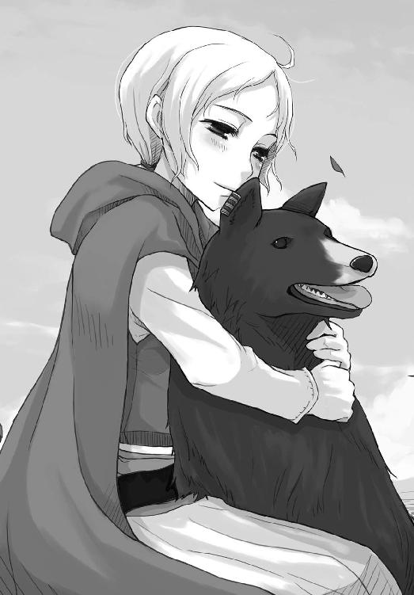
ホロはそんな様子を、少しだけ口元に笑みを浮かべながら見つめていた。
それが少し呆れるような、その場にそぐわないような笑みだと気がついた時、ホロの目がロレンスのほうを見た。
「この仕事がうまくいくにせよ失敗するにせよ、私は羊飼いをやめることになるでしょうから」
エネクを抱きしめながら静かにそう言ったノーラの言葉からは、とても理性的で、なにもかもを把握した上できちんと覚悟を決めたということが容易に聞き取れた。
ノーラは自分が置かれている立場と、あり得べき事態を把握していた。
つまり、ロレンスの心配はまったくの取り越し苦労だったのだ。
気弱そうに見えるノーラだが、貧民救済院を放り出されてから様々な苦労を乗り越えて今まで生きてきたのだろう。箱入りの貴族の娘とは違うのだ。
そして、それと同時にホロのすごさも改めて思い知った。
ホロはロレンスの胸中をあっさりと見抜いていて、ノーラとの会話の主導権を握ると極めて自然な形でノーラからこの仕事に対する覚悟の程を引き出してしまった。
それでいて、ロレンスに向けた笑みは仕方がないなという感じの呆れた笑みだ。
男どもは総じて頼りにならぬ、という言葉もあながち的外れではないような気がしてきた。
ロレンスは完敗だとばかりに目を覆い、それから大の字になって寝転んだ。
冬も近くなった秋の大地は冷たかったが、空に浮かぶとぎれとぎれの白い雲はとても暖かそうだった。
きっと密輸は成功する。
よたよたと側によってきた羊に見下ろされながら、確信を持って胸中で呟いたのだった。
それからしばらくの後、リーベルトが悠々と馬に乗って帰ってきた。
大金を持つと周りにいる人間すべてが泥棒に見えたりするものだが、さすが大きな町の商会の若き幹部はそういうことに関しては肝が太いようだった。
ちょうど片手に載るくらいの量の金の粒が詰まった袋を全員に確認させてから、特にこわごわ扱う感じでもなく服の内側にしまってぽんぽんと軽く叩いた。
「後はこれを無事持ち帰り、頃合を見て羊に食べさせる」
確認するように言ったのは、問題はこれからだと強調するためだろう。
「そして、市壁の門をくぐってもらう。町の中での羊の受け渡しについてもお話したとおりです。よろしいですね？」
「はい」
うなずくノーラにうなずき返し、リーベルトはまっすぐに前を向いて言った。
「では参りましょう。金のように輝く明日が待っています」
そして、一行は再び森と丘の間の道へと入っていったのだった。
朝、顔に冷たいものが当たったような気がして目が覚めた。
また羊になめられたか、と思って目を開けると、視線の先の空が鉛色の雲に覆われていた。この季節には珍しく、今にも雨が降り出しそうだった。
その上、寒い。ほんの少し位置がずれるだけで途端に氷のように冷たくなっている枕代わりの木の根から頭を上げると、焚き火が消えかけていた。ノーラが眠ってから皆が目を覚ますまではわずかな隙間ができるため、誰か一人がノーラに起こしてもらって早起きし、火の番をしようということだったのだが、その当番であるはずのリーベルトは焚き火にくべようとしたらしい枝を持ったまま舟を漕いでいた。
そんな間抜けな様子では、怒る気にもなれない。
「......む」
ロレンスが体を起こしたせいで、一枚の毛布を共有していたホロも目を覚ましたようだ。
ただ、挨拶する間もなく物凄く不機嫌そうなやぶにらみの視線を向けるやいなや、力の限りに毛布を奪っていった。
目を覚ましたのなら必要ないだろう、と言わんばかりだった。
抵抗すると本気で怒りそうなので、ロレンスは少し早いけれども渋々と起き出した。焚き火に薪もくべないとならない。寒いと羊たちは身を寄せ合って固まったまま動かないので、仕事がなくなったエネクも焚き火の近くで寝そべっていた。当然、愛する主人に寄り添いながらだ。エネクはそんな体勢のまま、ロレンスがきしむ節々を慣らしながら立ち上がり、薪を焚き火に放り込むのを物憂げな目で見つめていた。
ぱち、と枯れ木に火がつき始めると、エネクは満足げにあくびをする。ロレンスはそんな様子に少しだけホロを思い出して笑ったのだった。
それにしても、本当に寒い。突然冬がやってきたかのようだ。
原因は見てわかるとおりの空模様なのだろうが、明日の昼にはリュビンハイゲンに着くといったところなのでできればそれまで持ちこたえて欲しい。
しかし、そうもいかなそうな空模様を恨むように小さく息を吐く。きっと夕方か、遅くても夜までに雨が降り出すだろう。
森の奥に行けば雨宿りができそうなくらいに木々が生い茂ってはいるものの、羊がいるのでそうもいかない。それに森の中はやはり不気味だ。とてもではないが森の中で夜など明かしたくはなかった。その隅っこでの雨宿りがせいぜいだ。
だんだん大きくなってきた焚き火を眺めながらそんなことを思っていたら、ふっと背中になにかが覆いかぶさった。
なんだ、と振り向く前に真横に見慣れた顔が現れる。
頰にくっきりと木の根っこの痕をつけたホロだった。
「こっちのほうが暖かい」
その言葉を額面どおりに受け取るほど、ロレンスも謙虚ではない。
ロレンスの背中に毛布を回し、わざわざ一枚の毛布の中に二人が入る格好にしてきたのだ。毛布を奪い取ったはいいものの、やりすぎたとでも思ったのかもしれない。旅の途中の飢えや寒さは万人共通だからだ。
ただ、ホロが口に出して謝らないのだから、ロレンスが口に出して許す必要もない。
その代わり、炭をかき混ぜるために使っていた木の枝も火の中に放り込みながら、何気なく聞いてみた。
「そうだ。お前、天気とかわからなかったか？」
「わかりんす。今日は昼過ぎに雨じゃ」
まだ眠そうな声で返事が返ってきた。
「まあ、誰でも空を見ればわかることだな」
からかってやると、顔をしかめる代わりに軽く肩に頭突きをしてきたのだった。
「できれば早馬に乗って雨が降る前に町にたどり着きたいな。で、暖炉の前で温かいスープにほくほくのじゃがいもなんてどうだ？」
「文句なしじゃ。それとな」
「尻尾の手入れだろ」
殊更声を潜めて言ってやると、ホロはため息をつきながらうなずいたのだった。
「わっちも一刻も早く宿に戻りたい。じゃが......」
そう言って空を見上げるホロの顔は物憂げだ。
冷たい風に前髪が揺れ、長いまつげに触ったようで目を細める。
「一雨来る。わっちゃあ望んでおらぬのに」
そんな言葉を聞いて思い出す。ホロと出会った時、ホロは麦の一大産地を司る豊作の神と呼ばれていた。収穫の秋の冷たい雨は農村で最も嫌われるから、麦畑を離れた今もあまり歓迎できないものなのかもしれない。
本人は色々あったせいで麦畑にいた時のことをあまりよい思い出としていないようだったが、根っこはいまだに豊作の神なのかもしれない。
もっとも、この寒い中の雨は豊作の神でなくとも皆が嫌がることだ。下手をすれば霙になるかもしれない寒さだ。
そんなことを想像するだけで寒くなり、ロレンスは景気よく薪を焚き火にくべる。
皆が起き出すまでにはもう少し時間があった。
しかし、結局その時には気がつかなかった。
ホロは無意味なことを言わないということに。
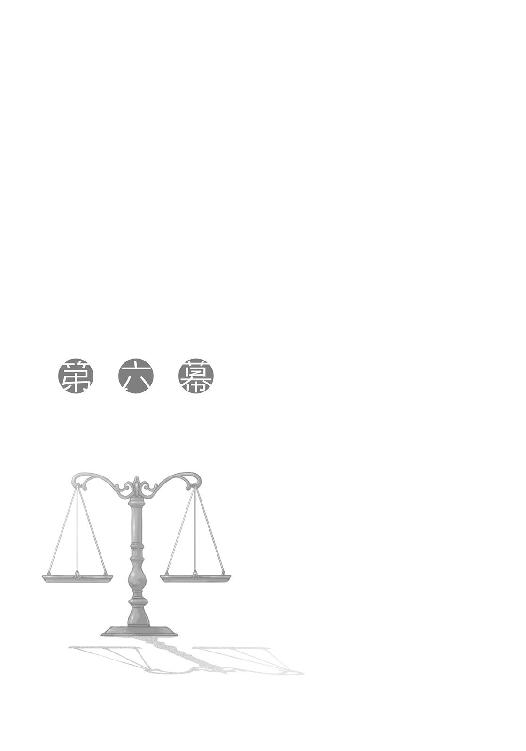
真っ白い息がたなびいて後ろへと流れていく。息を吐いた瞬間だけ頰が暖かくなるが、それはすぐに痛みを伴う冷たさに取って代わる。
どんどん暗くなっていく空は、ついに耐え切れなくなったのか昼過ぎから氷を削ったような霧雨を撒きはじめた。そのせいで顔は氷漬けになっているのではないかと錯覚するくらいに冷たいのに、服の内側に空気が入るとそのひんやりとした感覚が心地よい。
駆けていた。人も、馬も、羊も犬も。
視線だけなら何度も感じていた。気配だけならいくらでもあった。
しかし、どれだけ警戒していても遠吠え一つ毛の固まり一つ見えなければ、やがて寒さと疲労で気にしていられなくなる。
まるで、そんな間隙を狙っていたかのようだった。
ホロが気がついた時にはもう、ロレンスたちは狼の布陣の真っ只中にいた。
「エネクっ」
ノーラの声が響き、エネクが黒い毛と白い息をたなびかせて後方に走り、遅れ始めた子羊を追い立てる。
子羊は犬と狼の区別もつかず必死になって前に進もうとするが、それをあざ笑うかのように狼の遠吠えがこだまする。
場所は明白だ。先ほどから羊をまとめようとする度に遠吠えをする狼は右手の丘の上のほうにいる。対して、左側の森の中からは滅多に遠吠えが聞こえないが、それが聞こえる時は足音と息遣いまでが聞こえてくる。
木々の下に生えている下草やシダの向こう側をロレンスたちと並行して走っているのだ。
ロレンスとホロは同じ馬の背に乗り、リーベルトも同様に馬の背に、ノーラは霧雨と汗で濡れた前髪を額に貼り付けたまま、駆けながら杖とエネクで羊たちを操っていく。
狼に対しては、円形に囲まれたら最後だと思っていい。狼たちは極めて慎重に群れの誰もが傷つかないように狩りをしようとする。どれか一匹を囮にしてでも狩る、という発想はないし、勇敢な一匹が単身突撃するということもない。どこまでも慎重に、そして狡猾に事を運ぶ。
だから包囲網を狭めようとしてくる狼に対し、一匹以上の狼を確実に返り討ちにできるような位置取りをしていけば、狼たちは手出しができないことになる。
ロレンスはそんな説明をホロから口早に受けたが、ノーラは確かにそのとおりに動いていた。
時折前方のほうに行く手を遮ろうと狼が森から顔を出しかけるが、その時はとっさにエネクを前に出すか自分が前に出るかでけん制する。
狼たちが大きな包囲網をゆっくりと狭めるように動けば、羊をあらぬ方向に突然走らせてその陣形を崩す。羊飼いにとって、羊は守るべき哀れな子供ではなく、羊飼い自身を守る盾でも武器でもある。
ロレンスやリーベルトの出る幕などない。リーベルトは片手で手綱を握り、もう片方の手で絶対に落とすまいと金がしまわれている上着を押さえているのがせいぜいだ。
ロレンスに至っては、どうにかならないかとホロに問うだけだ。
「どうにか、かや」
道が悪いので小走りの馬の背の上も最悪だ。頭が体から離れそうな衝撃が断続的に襲ってくる。目の前に座るホロもろとも振り落とされないようにするだけでも一仕事だ。
「どうにか、のう」
歯切れが悪いのは、喋ると舌を嚙みそうになるからというわけでもなさそうだ。
「ぬしよ」
「なんだ？」
「さっきの説明じゃが、撤回じゃ」
「さっきの説明？」と聞き返そうと思った直後、がさ、と草を搔き分ける音が斜め後ろの森のほうからしたかと思うと、直後に獣の爪が地をつかむ音がした。
背中から羽が生えそうなほどの寒気がロレンスを襲う。これは暑いとか寒いとかの寒気ではない。身の危険を告げる墓場の中の冷たさだ。
「エネク！」
先頭を行く羊と共にかなり前方を走るノーラが人間離れした勘のよさでそれに気がつき、とっさに杖を振って黒毛の騎士を召還するが、頼みの綱は前方の丘のほうだ。
当然狼たちはそれをわかっていたのだろう。
すさまじい勢いで褐色の疾風がロレンスの乗る馬の足めがけて迫ってくる。
一か八か。ロレンスは手綱を握ってそれを強引に引こうと思い、そこをホロが手で抑えた。
そして、振り向くと呟くように言った。
「下がれ」
それがほかの誰でもない狼に向かって言ったのだとわかったのは、怒濤の勢いで駆けてきた狼が突然矢に撃たれたように横っ飛びして立ち止まったからだ。
驚いたのはノーラやロレンスだけではない。立ち止まった狼自身、一目でわかるほど驚いていた。
しかし、ロレンスはそれをすごいと評することも、助けてくれた礼を言うこともできない。
ホロの赤味がかった琥珀色の瞳は、燃え盛るルビーのようだ。
見つめることすら恐ろしい、人とは違う、狼のホロがそこにいた。
「人も」
ぞっとするような冷たい声が、初めてホロの真の姿を見た時のものと重なる。
「最近の若い者は、と言うそうじゃな」
突然なにを言い出すのか、とロレンスは思ったが、その言葉の意味するところをそのすぐ後に思い知った。
ひとまずの危機を脱したものの、それがなぜかわからなかったノーラは一瞬疑問顔を浮かべていた。しかし考えている余裕はない。再び目前の危機に対処し始め、そんな主人に次々と新しい命令を与えられるエネクは着実にそれをこなしていく。
リーベルトはただ必死に馬にしがみつき、金を落とさないようにするだけだ。
このままの速度で行けば日が暮れる前に森を後にできるはずだ。
この危機から逃げ出すにはその希望に賭けるほかなかった。
そして、それは響いた。
一瞬、風が吹いたのかと思った。ふわ、と宙を舞う氷のような霧雨が一斉に浮き上がったからだ。
ただ、風にしては変だとすぐに直観する。
なぜなら、単なる風はこれほどまでに体の芯を凍りつかせないからだ。
直後に響いた大音響。
森が割れんばかりの巨大な咆哮が横殴りにロレンスたちの鼓膜をつんざいた。
「っ......！」
人の呼吸が止まるほどの圧倒的咆哮。
馬の足が止まり、羊の足が止まり、勇敢な牧羊犬の動きすら止まった。
猛烈な咆哮は杭のように人をその場に縫い付ける。
全員が銅像のように固まって森のほうを見つめていた。
唯一人、ホロを除いては。
「ぬしよ」
なにもかもが止まり、霧雨が地面に舞い落ちる音しかしなくなったその場で、ホロが森のほうを見ながら小さくロレンスに話しかける。
「ここはわっちが面倒を負わねばならぬ。小娘とあの小僧を先に行かせたら、ぬしもしばらく離れとれ」
「な、いきなりなんでだ？」
この静寂の中、ノーラもリーベルトもロレンスとホロの会話に気がつかないように森を注視している。
しかし、それは気がつかないのではない。
猟犬に睨まれた小鳥は猟師がその体にゆっくり手を伸ばしても決して飛び立つことができないのと同じだ。
彼らは、森から目をそらせなくなっていた。
「森の中におるのは普通の狼ではないからじゃ。わかるじゃろう？」
ホロは、森のほうからゆっくりと視線だけをロレンスに向ける。
その目に不覚ながら足がすくむ。
不機嫌な、という表現を超えた、今にも路傍の石に八つ当たりしそうなほどの危ない目つき。
吐かれる息が、悪魔の馬が地獄で吐くようにゆっくりと流れていく。
「わっちが引き受ければ群れは羊を追いかけぬ。狙いは羊などではありんせん」
それから、再び森を見る。
「安い意地。粗末な誇り。どれも若造が大事にするものじゃ」
ほぼロレンスの腕の中にいるようなホロの体がむくりと大きくなったような気がした。
それが、ローブの下で尻尾がわさわさと音をたてているのだと気がつくのに少し時間がかかった。
「ほれ、ぬしが声をかけねば皆動かぬ。ぬしはわっちの相棒じゃ。相棒は連携というものが大事じゃろう？」
ふっと表情を緩めたホロに、ロレンスはあまり考えずうなずいた。
自分は商人であり、商売以外のこととなるとからっきしだ。
ではホロは？と問いかければ、狼のことにこれ以上詳しい者もいないだろう。
「ここは私たちが引き受けます。お二人は金を持って予定どおり進んでください」
たいして大きな声で言ったつもりもなかったが、真夜中に叫び声を聞いたようにノーラとリーベルトが体をすくませて我に帰った。
反論はこない。こういう場合、その場で最も弱い役立たずを餌にして、役目を持った強い者たちが生き延びるのが定石だからだ。
ただ、疑問の視線が向けられた。本当にいいのか、と。
いくら定石といえど、血も涙もない傭兵ならいざ知らず、普通の旅人たちは躊躇する。
「リュビンハイゲンの市壁で会いんす。その時は皆金持ちじゃ」
もちろんホロは餌になるどころか返り討ちに遭わせるつもりなのだろうが、他の者たちはそれがわからない。かといってそれを説明することもできないのでホロは軽快に笑って見せてそう言った。
実に人の心につけこんだ作戦だ。人は、笑顔で儚い希望を語る者の決死の覚悟を無駄にはできない。そんな騎士道物語めいたものに人がころりと引っかかることをこの賢い狼はわかっているのだ。
だから、その言葉にはまずリーベルトがうなずき、ノーラも遅れてうなずいた。
ノーラの杖が振られると、止まった時間は動き出した。
「御武運を」
リーベルトが言い、ノーラは言葉よりも雄弁な視線をホロによこして、すぐにそらした。羊の走り出す音が聞こえ、リーベルトの馬がその後を追う。
ホロは、それらを確認するとロレンスを振り向いて口を開く。
「それなりに離れてくりゃれ。下手に近くにいられると困りんす。わかるじゃろ」
そして、ロレンスは返事をする代わりに、ホロが馬から降りる際にその小さな手を取った。
「負けたら承知しないぞ」
驚くほど熱いその手は、力強く握り返してきた。
「ぬしがいい雄じゃったらここで口づけでもするんじゃがのう」
にやにやと笑うホロは言うだけ言ってさっさと表情を引きしめると、馬から飛び降りた。
「あ、そうじゃ。これ、預かっといてくりゃれ」
と、腰帯を解くと一息にローブを脱いで放ってきた。
流れるような亜麻色の髪に、尖った狼の耳と、ふさふさの狼の尻尾が顕わになる。
そして、わずかに揺れた首から提げられている麦の詰まった巾着袋。
「できれば穏便に済ませたいがどうなるかわかりんせん。合流した時に裸じゃ寒いし、ぬしが困るじゃろう？」
そう言って笑ったホロはそのまま森に視線を向け、動かなくなった。
代わりに、尻尾の毛が雷に打たれたように逆立っていく。
ロレンスはどんな言葉をかけるべきか逡巡した。
出てきたのは、短い一言だった。
「また会おう」
ロレンスは返事を待たずに馬を走らせた。
その場に残りたくなかったといったらあまりにも噓だ。
しかし、その場に残ってなにができるというのか。それに、ロレンスはホロの真の姿を知っている。例え傭兵の軍勢が相手でも無事に切り抜けるだろう。
ロレンスは馬を走らせた。霧雨は徐々に強くなっていく。
寒さ以外のことで、顔が歪んでいく。
騎士に生まれなかったことを初めて呪ったのだった。
ノーラとリーベルトはわずかの間にかなり先に進んでいたようだ。ロレンスは言われたとおりに馬を走らせホロから距離を稼いだが、そこそこの速度で馬を走らせてもノーラたちの姿は見えなかった。
辺りからはあの不気味な視線を感じることもないので、これを好機と見てとにかく前に進もうと走っているのかもしれない。ロレンスがノーラたちの立場なら、必ずそうする。ロレンスとホロの死は無駄にしない、と思いながら。
そんな想像をして少し苦笑いしながら、ふと一人で道に迷わないかという心配が去来する。
ただ、それもすぐに霧散した。ロレンスには土地勘があまりないが、日が暮れてから進まないかぎり道に迷うということはなさそうだった。
右手には荒れた丘、左手には深い森がある草原だから大きく行き先がずれることはまずない。
それに、この先にはある程度草が刈られたきちんと道と呼べる道があるから、そこをたどって行けば必ずリュビンハイゲンに続いている。ノーラたちの姿が見えなくてもそれほど困ることはなさそうだ。
それよりもやはり馬が石などを踏んで転倒するのが怖く、ロレンスは手綱を引くと馬の歩調を緩めて一旦後ろを振り返った。
もうホロの姿はとっくに見えなくなっているが、狼たちが考えを変えてロレンスを襲いにくればすぐに追いつかれてしまう距離だろう。
戻らないにしても、その場に立ち止まりたくなる誘惑を振り切って前を向き、馬を歩かせた。
手元にはまだホロの体温が残るローブがある。別れ際に服を預けるなど形見のようで縁起が悪い。つい、力をこめて握りしめてしまう。
しかし、もしもホロが狼の姿をとる必要に迫られたら、代えの服がないのはやはり困る。
ホロのほうが商人であるロレンスよりも合理的な考えの持ち主のようだ。
ロレンスは深呼吸のついでにため息をついて、尻尾からのものだろう焦げ茶色の抜け毛が結構ついている服をばっさばっさと払い、折りたたんでから上着の下に詰め込んだ。すでにだいぶ湿ってはいたが、脇に抱えているよりかはましだろう。最も危険な役を買ってでて、合流した時に服がびしょぬれではあんまりというものだ。
雨は少しずつ重くなっている。夜には本降りになるかもしれなかった。
それから少し馬を進め、もうこの辺でいいだろうと思い道の真ん中で馬を止めた。あまり離れすぎても今度は合流に手間がかかる。ホロが人の姿のままなら、徒歩でこちらに向かわなければならないからだ。
しかし、道の真ん中で雨の中立っていることは自殺行為だ。すでに体は冷え切って手綱を握っている感覚がない。森のほうに避難して、道をホロが通るか見ていたほうがいい。ホロと合流する前に凍死してしまいそうだった。
ロレンスは静かな森の隅の木陰に入り、馬から降りて道を振り返る。丘と森の距離はだいぶ開いてきている。この分だともしかしたらノーラたちは今頃森を後にし、リュビンハイゲンに続く道に出ているかもしれない。
通常よりも相当早い速度で駆け抜けてきたから十分あり得た。
そうなると、もう本当に後は羊に金を吞ませてからリュビンハイゲンに入るだけだ。
それさえうまくいけば、金の密輸は債務を一斉に吹き飛ばし、さらに大きな利益をもたらしてくれることだろう。
約束した分け前は、ロレンスの債務を帳消しにしたうえで百五十リュミオーネ。途方もない金額だが、それでも金密輸の利益からすれば少ないものだ。持ち込む金の買い付け額は六百リュミオーネでも、それを無税で持ち込むと十倍近くの価値になる。欲を出せば、もう少しおこぼれに預かれるかもしれない。なにせロレンスは金の密輸の共犯なのだから、相手もむげにはできないはずだからだ。
ただ、その考えは戒めた。あまり欲をかけば思わぬ災難に見舞われる。それは世の常であり、真理だからだ。
ロレンスは寒さを忘れるために色々考えながら濡れていない枯れ木を集め、馬にくくりつけた荷物のうち厳重に防水されていた藁束をいくらか取り出して火を起こした。
辺りにはまったくなんの気配もない。動物の類が一切いないのではないかというくらい、静かだった。
ホロは大丈夫だろうか、と焚き火で服を乾かそうとした際に取り出したローブを見て思った。
あまりそのことを考えるといても立ってもいられなくなりそうだったのでなるべく考えないようにしていたが、どうしようもない。無力というのは罪だ。そう思った。
それから、霧雨が降るだけでなんの変化もない草原を注視していた。
どれくらい動かない景色を見つめていたのか。服はあらかた乾き、最初に火にくべた薪は灰になっていた。
様子を見に行こうか。
その誘惑がパンのように膨らんでき始めた頃だった。
視界に変化が現れた。一回目をこする。間違いない。人影だ。
「ホロ！」
思わず立ち上がり、乾いたホロの服をつかんで叫ぶと走り出していた。こんな場所を誰かが偶然横切るなんてことはあり得ない。
しかし、雨の中に走り出るとその人影がホロではないことがすぐにわかった。
人影は三つ。しかも、馬に乗っていた。
「ロレンスさんですかっ」
馬に乗っていた者たちもどこから声をかけられたのかに気がついたようだ。
そして、ロレンスの名を呼んだことから、レメリオ商会の者たちだとすぐにわかった。
わかったが、なぜここに？
「ロレンスさん、御無事だったんですね」
三人のうちのどの顔にも見覚えはなかった。一人は弓を背負い、一人は剣を腰からぶら下げ、もう一人は長槍を携えている。顔つきも体つきも町商人の典型のようなリーベルトより旅慣れた様子で、慣れた感じに雨具をつけ、いつでも戦えるといった感じだった。
「リーベルトさんから聞きました。商会でただじっとしていることができなくて、万が一に備えて森の外でお待ちしていたのです。が、とにかく御無事でよ──」
しかし、言葉はそこで途切れた。
ロレンスよりも少し年上かといった三人の視線はロレンスの持っていたローブに向けられていた。
ホロのものだから大きさも小さいし、すぐに女性用だとわかる。
そこから導かれる結論は、あまりよいものではないだろう。
大方、ロレンスのことをホロの形見を手にして悲しみに打ちひしがれていた哀れな男、とでも思ったのかもしれない。ついさっきにロレンスが上げたホロを呼ぶ声も聞かれていたはずだ。
案の定、三人ともが同情するような視線を向けてきた。
ロレンスはその誤解をどう解くべきかと一瞬考え込んだが、ふと妙なことに気がついた。
三人が、それから一斉に深呼吸をすると、少しだけほっとしたような表情を垣間見せたのだ。
きっと三人のうちの誰もが顔に出ていないと思っているだろうが、商人の目にはそれが見えた。多分、ロレンスが悲観に暮れて手に負えなくなっていなくてよかった、とでも思ったのだろう。
「それで、ロレンスさんお荷物などは？」
仮に、ロレンスのことを愛する連れを狼に殺された哀れな男、と思っているのなら、その話題の切り替え方は合格点だ。あまりそのことに触れるといつ感情が爆発するかわからない。妙に冷静に見える者ほど危ない場合が多いからだ。
ただ、それは勘違いだと説明するのもなんだか間抜けなので、ロレンスはおとなしく後ろを指差した。
「あちらに。馬もそこに」
「そうですか。とりあえず雨宿りしましょう」
口調はそっけなく、しかし表情は引きしめて三人は馬を下りた。
最悪、狼に引き裂かれぼろぼろになった死体があるかもしれない、と思ったのだろう。
ロレンスはそんなことを思いながらきびすを返し、三人を案内しようとした。
その数瞬後、あまりのことに頭が空白になっていた。
「悪く思わないでください、とは言いません」
冷静な口調で告げられた。
後ろからひねり上げられた右腕。わき腹に向けられた槍の穂先。首筋に当てられた剣の刃。
顔を伝う滴は、雨ばかりではない。
「......レメリオ商会は、裏切るのか」
肩の関節が上げる悲鳴にかき消されそうになりながら、ロレンスはなんとかそう言った。
ホロの服を落としていないのは僥倖だ。
「保険ですよ」
首筋に当てられていた刃が引っ込んだのは、ロレンスを縛るためだったようだ。
ロレンスの手からホロの服が取り上げられ、体を荷物のように縛り上げられる。
「女の方がいると聞いていたので気が重かったのですが、その点では幸いでした」
先ほどのほっとしたような表情は、ホロがいなかったことに対するものだ。
下手に守るべき者がいると血を見なくてはすまないとわかっているのだ。
「言い訳になってしまいますが、我々も崖っぷちなんです。可能な限り危険は排除しなければならない」
明らかにロレンスがレメリオ商会を強請ることを想定している口ぶりだ。破産しかけたレメリオ商会が金の密輸で息を吹き返しても、その事実を外部の人間に知られていることは喉元にナイフを突きつけられているのとまったく変わらない。
そんな馬鹿なことをするわけがない、と思ったが、つい先ほどそのことを考えたばかりだったことを思い出した。
大金の前では皆欲に目がくらむ。商売の世界に身を置く者なら誰もが知っていることだ。
「この服だけは渡しておきます」
と、縛り上げられている手にホロの服が当てられた。
ロレンスはそれを力の限りに摑み、なんとかこの裏切りに対する怒りを封じ込めた。
わざわざ縛り上げたということは今この場でロレンスを剣の錆びに変えるつもりはないということだ。下手に抵抗して殺されてはならない。ただ、生かしておくつもりもないのだとは簡単に予想がつく。
この寒さの中、また狼が出るという森の中で放置すれば、そのどちらかがロレンスを処分してくれると思っているのだろう。妥当な判断といえた。
しかし、そこには重大な見落としがある。彼らが死んだと思っているはずのホロのことだ。
ロレンスがホロと合流すれば、いくらでも復讐は可能だ。
ここで殺されてはならない。裏切りの代償を払わせなければならない。
その怒りが腹のうちで冷えた石のように固まり、ロレンスに従順な羊の皮をかぶせていた。
「またお会いしましょう、と言えないことに心が痛まないわけではありません」
勝手な発言にこめかみが熱くなるが、後ろを振り向かずに耐えていた。
「ただ、この後のことを考えると本当に気が滅入る」
「おい」
そう言ったのはレメリオ商会の仲間だ。余計なことを喋るな、と注意する類のものだ。
この期に及んでさらに気が滅入るというのは一体なんだ。
それも、死にいくロレンスに聞かせてはまずいと判断するようなことだ。
「いいじゃないか。喋らせろよ。黙っていられないんだ。お前だってそうだろう？」
すると、言われたほうは一瞬言葉に詰まったようだ。ロレンスは怒りそっちのけで考える。
なんの話だ、と。
「しかし、あれはこの男が連れてきた娘だろう。それを聞いたら──」
即座に振り向いた。
まさか、と胸中で叫んでいた。
「ほら、みろ」
ロレンスが目の前の男を力の限りに蹴り飛ばそうとしたのと、顔を思い切り殴られるのは同時だった。
物凄い衝撃が顔を襲い、気がつくと地面に突っ伏していた。
鼻に詰まったのが泥なのか鼻血なのかわからない。ただ、猛烈な怒りがぐるぐる回る視界と一緒に頭の中を駆け巡っている。
目がちかちかして自分の体がどうなっているのかすらわからない。
それでも、耳に届いた言葉は一字一句理解した。
「あの娘もこいつみたいに縛って放り出しといたらどうだ。狼が始末してくれないか」
「馬鹿言え。どんな異教の呪術を使ってるのか知らないが、羊の一頭も欠かさずあの森を抜けてきたやつだぞ。目隠しして両手縛ってここに連れてきても生き延びるだろうよ。そうなったら破滅するのは俺らだ。ああ、しかし気が滅入るというのは同感だよ。あんな娘を手にかければしばらく飯も食えないだろうからな」
二人が話しているのは間違いなくノーラのことだ。
それも、殺すことを前提に話をしている。
ロレンスがレメリオ商会を強請る可能性を考えて殺すのであれば、ノーラもそうしないわけがない。
おそらく、この地域からリュビンハイゲンに向かう道の途中にある検問を抜けて、別の羊飼いに羊を渡してから殺すつもりなのだろう。この辺りをうろついていて怪しまれない羊飼いはノーラしかいないから、検問を抜けるまでは殺せないはずだからだ。
「こいつ、止めは刺さなくていいか」
「刺したいか？」
「人殺しは少ないほうがいい」
「同感だ」
「馬も連れてきたしそろそろ行こう。さっさとしないとリーベルトさんにどやされる」
そして、足音が遠のいていき、次いで馬が走り去る音がした。
その後、耳に届くのは霧雨の降る音だけだ。情けなくて、涙が出た。
無力は罪だ。
ロレンスは目を固く閉じて思った。
自分にホロのような強さがあれば、ホロを一人だけ危険な目に遭わせることもなく、こんな情けない裏切りに甘んじることもなく、ましてや自分が仕事に誘った者が殺される算段をただ聞いているしかないということもなかったはずだ。
ノーラはホロとは違う。異教の呪術を用いているわけでも、なにか特別な力があるわけでもない。剣で斬りつけられればたやすく皮膚は裂け、血があふれるだろう。
エネクは役に立つだろうかと思ったが、その希望は絶無だ。いくら優秀な犬でも不意を突かれればどうしようもない。
ノーラだけは助けたい。
ラムトラの町が臨める丘で話した時のノーラが脳裏に浮かぶ。
見た目よりもはるかに頭が回り、肝が据わり、ホロとはまた違った賢さを秘めた娘。
この仕事が成功するにせよ失敗するにせよ、羊飼いをやめるとわかっていた。それは、この仕事に並々ならぬ希望を賭けていたということだ。
過酷な羊飼いから服の仕立て職人になる。それは途方もない夢物語に近い。
それが適うという可能性がどれだけノーラの心を躍らせただろうか。
確かに単なる希望にだけ心躍らされるというのは愚者のなすことだが、その消滅が裏切りによってもたらされるとなれば話は別だ。
ノーラは与えられた仕事をこなすだろう。ならば報酬をきちんと得なければならない。
それは当然ロレンスもそうだが、ロレンスにはホロと合流すればいくらでも復讐の可能性があるという希望がある。
ノーラは剣を向けられればそこまでだ。
ロレンスは身が張り裂けそうな焦燥感を杖に、地面に突っ伏したままの体を強引に引き起こした。後ろ手に縛られたままだったが、顔を地面に当て膝をへその辺りに持ってきて、一気に顔を上げて体を起こす。
鼻に詰まっていたのは片方が泥で片方が鼻血だったようだ。どちらも一息で吹き出すと、冷たい空気が鼻から入って頭を冷やす。当然、頭が冷えることなどあり得なかったが。
立ち上がり、よろよろと歩き出す。後ろ手に縛られた手がまだホロの服を摑んでいたと気がついたのは、馬が連れ去られた雨宿りの場所にまでたどり着いてからだ。
焚き火は蹴散らされ火は消えていたが、炭はまだ赤く熱をたたえている。
ロレンスはホロの服を濡れていない場所に置いて、一度深呼吸をした。
それから、散らばっている炭の中で一番大きいもののすぐ側に慎重に腰を下ろし、何度も位置を確かめる。
覚悟は一瞬だった。
体を倒して炭を手首の辺りに押し当てる。
ブスブスという縄がこげる音と、猛烈な熱さが手首を襲うが目を固く閉じ、歯を食いしばってそれに耐える。
直後、力をこめていた手首が急に自由を得た。
戒めは解けた。
即座に立ち上がり、手首を見る。いくらかやけどをしていたが大したことはない。
しかし、ここで棍棒になりそうな木の枝を捜してそれを手にし、走って後を追いかけるほどロレンスも馬鹿ではない。
ホロを待つことが最上の、そして唯一のまともな選択肢であることがわかっていた。単なる行商人はあまりにも無力だ。
商人に騎士や町の人間が持つような誇りはない。儲けるためならいつでも人の靴の裏をなめる覚悟くらいできている。
それでもこの屈辱感はなんだ？
ロレンスはその場に立ち尽くし、空を仰いだ。
雨を遮ってくれる木々の葉が、ロレンスに地べたを這うことしか許さない天の意思のように思われて、たまらずに視線を下ろした。
目に入ったのはホロの着ていたローブ。
無力感に、再び涙が出てきた。
「感動の再会かや」
いても立ってもいられなくなり、ロレンスが雨の中を走り出してしばらくして、同様に息を切らしながら走ってきたホロと遭遇した。
人のままの姿のホロは、怪我もなく別れた時となにも変わってはいなかった。ただ、途中で転んだのかズボンの両膝が汚れている。
「ひどい格好じゃな」
ホロは楽しそうな笑顔だ。
「裏切られた」
「それを見て転んだと思うほどわっちゃあお人好しじゃありんせん」
小さく笑って、笑顔のままため息をついた。
「そんな気がせんでもなかったんじゃ。商会の連中じゃろう？」
ホロが驚きも慌てもしないのは、本当にうすうす感づいていたからかもしれない。しかし、この仕事が互いの信頼に基づいた種類のものであるとわかっていれば、おいそれとそんなことを口に出すわけにもいかない。ロレンスとしても、前もって言われたとしても対処に困っただろう。レメリオ商会の協力なしにはどうしようもない、というのは紛れもない事実だからだ。
そして、一とおり笑ってから近づいてきたホロは、すんすんと鼻を鳴らすとロレンスの手を取った。手首のやけどに気がついたようだ。
「まったく、こんなことせずとも遠からず迎えに行ったというに」
再び小さな鼻をヒクヒクさせると、ロレンスの上着の中に手を突っ込んだ。取り出したのは、折りたたんだホロのローブだ。
ホロは少し驚いたような顔をしてから、いくらか湿っているそれで顔を拭いた。霧雨でびしょぬれだった顔がだいぶましになった。
「うふふふふ。ぬしも妙な奴じゃな。わっちの服だけ後生大事に」
嬉しそうに、眩しいものを見るように顔を拭いたばかりの折りたたまれたローブを見るホロの尻尾が、表情に反してみるみるうちに膨らんでいく。
次にホロがロレンスのことを見た時、表情は笑顔のままで、その目は今にも溶け落ちそうな灼熱の紅だった。
「ぬしよ、言いたいことはあろう。しかし、わっちからまず言わせてもらってもよいかや」
にこりと笑った際、両の牙が唇の下から見えた。
「わっちは人を殺すかもしれぬ」
ロレンスが口を挟むよりも早く後が続く。
「ぬしよ、わっちはこの計画がうまくいかぬとぬしと暢気な旅ができぬと、そう思った。それはわっちにとって実に寂しい事態じゃ。じゃからの、わっちは我慢した。事を穏便に済ませ、すばやくぬしと合流し、さっさと暖炉の前で温かいスープとジャガイモにありつこうと思って我慢した。わっちゃあヨイツの賢狼ホロじゃ。若造の傲慢さくらい軽く許すことができる......」
ホロの膝の汚れに目がいった。
森にいたのが普通の狼でなく、しかも狙いが羊ではないとしたら、考えられる可能性は多くない。
縄張り意識。
ならば、事を穏便に済ませようとしてホロが取った行動がありありと見えてきた。
賢狼は、石につまずいたくらいでは無様に両膝を地面につけないだろう。
「いや、ぬしよ。しかし、それはもうよい。わっちゃあ賢狼ホロじゃ。たとえ犬のような振る舞いをさせられたからといって、そう、お、怒ってはおらぬ。じゃが、これはどういうことかや？ わっちの目の前におるのは間抜けに顔を腫らした泥だらけの濡れ鼠じゃ。わっちの連れが間抜けさのあまりにつまずいて転んだのかや？ 手首にやけどまで作って？ ああ、そうじゃろうの。わっちの目の前におるのは間抜けの愚か者じゃ。自分の格好が二目と見られないものなのに、わっちの服だけ後生大事に折りたたんで濡れないようにと持っておった。まったくなんて阿呆じゃ。どうしようもない。まったく信じられぬお人好しじゃ」
そこまで一息に言い切って、思い切り大きく息を吸い、それから片手で目尻を拭った。
「さて、ぬしよ。行き先はリュビンハイゲンでいいじゃろう？」
急にいつもの調子に戻ってそう言った。
ただ、手も足も小刻みに震えている。とても寒さのせいとは思えない。これが、ホロが本当に怒っている時の姿なのだろう。
「今から行けば闇夜に乗じて町に入れる。裏切りの責任は常に長がとる。これは世の真理じゃ」
ホロは手にしていたローブをロレンスに押し付け、首から提げていた皮袋を首から外して口を解き、麦を数粒口に放り込む。まったくよどみのない行動だった。
「いや、その前にリーベルトたちだ」
しかし、ようやく口を挟む機会を得たロレンスは即座にそう言った。
ホロの片眉がピクリと上がる。
「ぬしよ、落ち着いて考えるがよい。裏切りには復讐を。罪と罰というやつじゃ。しかし、なにも考えず仕返ししたのではつまらぬ。なにもかもを奪ってやらねば気は済まぬ。そうではないかや？ だとすればじゃ。先にぬしを殴った連中を襲っても、その後の金の扱いに困る。先に長の家を襲い、たっぷりと後悔させてから、ぬしを裏切りしめしめとリュビンハイゲンに向かっている愚か者どもを襲う。羊の腹を割って金を取り出したら、その足でわっちらはどこか別の町に行けばよい。後々のことはそれからゆっくりすればよい。これが最もよき案じゃとわっちは思う」
怒り心頭でもその頭の切れはまったく変わっていない。ロレンスも考えた最良の行動とほとんどかぶっている。
しかし、ロレンスにはその最良の選択を放棄する理由があった。
「俺もそう思ったが、先にリーベルトたちを。それも、なるべく早くに」
「わっちの案よりもよい案なんじゃろうな？」
こくり、と麦を飲み込んでからホロがたずねてくる。
表情はなにを考えているかわからない無表情。下手なことを言うとその仮面の下で渦巻いているものがロレンスに向けられかねない雰囲気がある。
それでも、ノーラは見捨てられない。
「レメリオ商会は、ノーラを殺すつもりだ」
ホロはうっすらと笑った。
「愚か者どもはぬしも殺すつもりだったはず。されどぬしは生きておる。ならばあの小娘も無事に生き延びるやもしれぬ。そうじゃろう」
「お前が助けに行ってくれれば、ノーラは確実に助かる」
「そうかや？」
いたずらっぽく笑う視線を向けられ、ロレンスはわずかにかっとなる。
なぜそんなことを言うのかと。
それに、時間もあまりない。ノーラたちが走りどおしであれば夜明けを待たずに強引にリュビンハイゲンへの検問を通過してしまうかもしれない。そうなればノーラはきっと検問を抜けたすぐのところで殺される。
その可能性は、高い。
「お前なら例え百人武装していたってあっという間だろう」
もどかしくもそう言うが、ホロはゆっくりと首を横に振った。
「そういう問題じゃありんせん」
じゃあどんな問題だ、とは続かなかった。
「わっちゃあ狼じゃ。小娘は羊飼いじゃ。好ましからざる仲限りなし、じゃな」
なにを今さら、と思ったのもつかの間、ロレンスは重大なことに気がついた。
ホロが狼の姿でリーベルトたちを襲えば、下手をするとノーラが果敢にホロからリーベルトたちを守りかねない。
その時、リーベルトたちがノーラを殺す恐れがあるから、リーベルトたちだけを倒しにきたと説明できるのか。悪人はリーベルトたちだと納得させられるのか。
もしそれらができなければ、ホロは悪役を演じることになる。
ただでさえ羊飼いが嫌いなのだ。ノーラのために進んでそんなことをやりたがらないというのは明白だったし、無理やり頼むこともできない。
そんな義理はない、といえばそうなのだから。
「お前になんの利益もないどころか、不愉快な結果になることもあるというのはわかってる。それでも頼めないか。誰かが理不尽に殺されるということがわかっていて、それを見過ごすことなんてできない」
つまらなそうにそっぽを向くが、ロレンスは身を乗り出すようにして頼んだ。ノーラを助けられるとすればホロしかいないのだ。
「もちろん、礼はする」
ホロの片耳が少し動いて、視線が向けられる。
「......どんな？」
「ノーラの命と引き換えに、とか言わなければ、最大限期待に応えよう」
ホロは本気でそういうことを言いかねないので予防線を張ったのだが、それを聞いて途端にホロの顔が渋くなる。言おうと思っていたのかもしれない。
「頼む。お前しかいないんだ」
ホロの顔は相変わらずつまらなそうなもので、水をいくらか吸った尻尾を不満げにゆらゆらさせている。手には麦の詰まった巾着袋を持ちながら腕を組み、白い息を細く長く吐いていた。
「ホロ......」
ロレンスにできることなどたかが知れている。しかも、それでなくてもホロは金の密輸がうまくいくようにと甘んじて屈辱に耐えたらしいのだ。両膝に汚れを作り、犬の真似をさせられた、と言えばどんなひどい格好をさせられたか想像がつくというものだ。
そんな屈辱に耐えてまで事を穏便に収めてくれば、相棒はあっさりと裏切りにはまり間抜け面をさらしている。
そんなロレンスを責めるでもなく、ホロが狼の姿をとってレメリオ商会に仕返しをしてくれるだけでもありがたいのだ。これ以上なにかを頼むというのは虫がよすぎるかもしれない。
しかし、ぷわ、とホロが最後に吐いた息は大きかった。
困ったように、ホロが笑う。
「そんな声出さんでくりゃれ」
そして、大きく息を吸った。
「ほれ、これ持ちんす。それと、服も脱いだほうがよいじゃろう。またしつらえるのも面倒じゃろうからな」
「やってくれるのか」
「ただし、条件がありんす」
ズボンを留める腰帯を解きながらホロは言う。表情は読めない。ロレンスは固唾を吞んで言葉を待った。
「わっちの癇に障った連中の命は保障せん。それで了承してくりゃれ」
ノーラがホロを敵と見なして、リーベルトたちをかばったら容赦しないということだ。
それが冗談なのかどうかわからない。
いや、きっと本気だろう。
ホロはロレンスのことを見ずに言っている。呼吸は、早くも遅くもない。
だから、本気で頭を巡らせて商談用の抜け目ない受け答えをした。
「それでいい。だが、俺はお前を信じている」
ふわりと白い息が上がったのは、ホロが降参するように笑ったからだ。
「ぬしも口がうまくなったの。ああ、わっちは面倒な奴の旅の道連れになったものじゃ」
それから軽く頭を振り、一息に上着を脱いでズボンも脱ぐ。靴も乱暴に脱いでまとめてロレンスのほうに放り投げてくる。
あっという間に、白い肌に角のないすらりとした裸体が寒い霧雨の降りしきる中に幻のように現れた。
「ほれ、褒め言葉はまだかや？」
腰に手を当て、くるりと後ろを向いてから肩越しにそう言った。
これくらいなら、安いものだ。
「ああ見事な尻尾だ」
「幾分棒読みじゃが、まあいいじゃろ」
そして、ホロは前を向いて言った。
「さて、少し目を閉じててくりゃれ」
裸は平気で見せるのに、狼になるところは見せたくないらしい。
ただ、それに逆らう気も毛頭ない。そのあたりの複雑な心境は港町パッツィオの騒動の時によくわかっている。
目を閉じて、しばし待つ。
やがて、ざわりざわりと鼠の群れが走るような音がして、巨大ななにかが膨れ上がる音がする。それから大きなものを振り回す音が聞こえ、たし、たし、という獣が足踏みする音で締めくくられた。
顔に熱い吐息が吹きかけられる。
目を開けると、軽く一吞みにされそうな巨大な口が目の前にあった。
『ぬしが恐れおののいたら頭から嚙み砕くつもりじゃったがな』
「いや、やはりいくらかは怖い」
赤味がかった琥珀色の瞳がロレンスのことを射抜いていたが、ロレンスは正直に答えた。
ホロのことを信じていたから。
牙だらけの口が、多分笑ったのだろう、わずかに歪んだ。
『わっちの口に収まるか。それとも背中に乗るか』
「口はかんべん願う」
『意外に快適かもしれぬぞ？』
「温かさにつられて胃袋にまで入っちまうかもしれない」
『うふふふ。ほれ、背中に乗りんす。ぬしが毛を引っ張ったところで痛くもないからの。強引に乗ってかまわぬ』
ホロの体は不思議な熱気を持っていて、近くにいると焚き火の側にいるようだ。
雨すら避けていくほどの存在感にややたじろいだものの、ホロから手渡された服と靴を幾分乱暴に靴紐で結んで脇に抱えると、覚悟を決めて言われたとおりに遠慮なく毛を摑んで飛び乗った。
人とは違う、獣独特の匂いがしたが、不思議と人の時のホロの匂いと同じような気がした。
『背中から落ちたら口で咥えていくからの』
「絶対に落ちないようにする」
ホロが笑ったのが気配でわかった。
『ぬしよ』
「なんだ？」
わずかの間。
『わっちゃあ本当に羊飼いが嫌いなんじゃ』
まだ繰り返すのか、と一瞬思ったが、きっとこれがホロの単純で偽らざる本音なのだろうとも思ったから、一つ事実を指摘した。
「ノーラはこの仕事が失敗しようと成功しようと羊飼いを辞めなければならないことを理解している」
くぐもった振動が手の下から伝わってきたのは、ホロが喉を鳴らしたからのようだ。
『礼は、食いきれぬほどの桃の蜂蜜漬けじゃ』
直後、斜面を滑り落ちるような感覚に襲われたかと思うとホロの大きな体が走り出していた。
ロレンスは夢中で毛を摑んで体を押し当て、ものすごい勢いで速度を上げるホロの背中から振り落とされないように必死だった。耳元で濁流のような音をたてて風が流れていく。
しかし、初めて見た時はどうしようもないほど怖かったホロの神々しいまでの狼の背中は、形容しがたい暖かさに満ちていたのだった。
ホロの体力は底なしで、走る速度も馬以上だったが、それでも森を後にする頃には日が暮れ始めてしまっていた。
ホロの足が地面を嚙む度に、一つずつ蠟燭が消されるように暗くなっていく。雨は相変わらず降り続き、ホロの大きな口から吐き出された息は雲のように後方へと流れていく。
ついにリュビンハイゲンに続く道に出た。ホロは迷わずに右に折れ、ますます速度を上げる。
時折、普通の呼吸とは違う音が背中の下から聞こえてくるのは、ホロの唸り声かもしれない。
ホロは人を殺すかもしれないと言った。
ただ、それを口に出した時点で、きっと殺すことを寸でで止めるつもりなのだと思った。
そうでなければ、かもしれないとは言わないはずだ。なぜなら、ホロのでかい掌に生えた爪や、巨大な口に生えそろった牙を防げる人間など、きっとこの世に存在しないからだ。
『ぬしよ』
そんなことを考えていると、不意にホロが声をかけてきた。気軽な世間話、というにはあまりにも声に緊張感があった。
『そろそろじゃ。ぬしを背中に乗せておってもわっちは一向に構わぬが、おそらくぬしのほうが困りんす。一度わっちゃあ連中の頭を飛び越える。そうしたら身を低くするから、ぬしはさっさと飛び降りてくりゃれ』
「わかった」
『ぐずぐずしとったら振り落とす』
それに返事ができなかったのは、ただでさえ恐ろしい速さだったホロの足がますます前に伸びたからだ。
弓矢に乗っていればこんな感じなのだろうと思わせるような速度の中、ホロが大きく息を吸い込む音が聞こえた。
直後に響いた、轟音のような咆哮。
そして、不意にホロが地面を蹴る度に伝わってきていた振動がなくなった。
空を飛んでいる。
馬や崖から落ちる時くらいしか味わわない浮遊感が、はっきりそれとわかるほど長時間続く恐怖。足元がなくなってしまったかのような恐ろしさにホロの体にしがみつき、まだか、まだか、まだか、と胸中で叫ぶ。
ようやくホロの足が地面を摑んだらしい衝撃を感じた時は、もう生きた心地がしなかった。
ホロはロレンスの体が再び飛んでいきそうなくらいの減速をして、ぐるりと体の向きを変えるとその場に腹ばいになった。
『ほれ』
そして、小さく響いたその声で、先ほど言われたことを思い出す。ロレンスは空を飛んだ恐怖が未だ消え去らない中、なんとかホロの背中から飛び降りた。転ばずに着地したことにほっとするのもつかの間、ホロはすぐさま身を起こしていた。
『後は任せるがよい』
そして、そう言い残し走り出し、ロレンスも慌てて走り出した。
ホロの体はあっという間に狩場へと飛び込み、目にもやがかかったように暗くなり始めた視界でも、突然巨大な狼に襲われた者たちの混乱振りが見て取れた。
二十人近くいるだろうか。レメリオ商会の者たちは総じて悲鳴を上げ、その中にノーラがいることもなんとか確認した。間に合ったのだ。
彼らは混乱の渦中にあり、中には長槍を振り回している者もいたがそれはほとんど白旗を降る行為に等しい。槍の穂先を天に向けたまま、左右に振っているだけなのだ。どれほど混乱しているかがわかろうというものだ。
そんな最中、時折泥の塊のようなものが空を舞う。暗闇のせいでいまいち見えないが、それは人のはずだ。突然なくなった地面を探すかのように手をばたばたさせているのが見えた。
本気でホロの掌に叩かれれば即死に違いないから、わざとすくって放り投げているのだろう。
一人、二人、と宙を舞い、破れかぶれに投げつけた長剣が甲高い音をたててはじかれた。
暗闇が支配し始めた中では目に見えないほど高くにまで上がった長剣は、ロレンスがホロの息遣いが聞こえる距離にまで近づいた時にすぐ側に落ちてきた。
相当高くにたたき上げられたということが、柄までずっぽりと地面に突き刺さった様子からよくわかった。
レメリオ商会の者たちはこの密輸にすべてを賭けていたらしく、ロレンスとノーラを殺すだけにしては多すぎる人数を派遣してきていた。
ただ、それももはや大多数が気絶した蛙のように地面に這いつくばり、恐怖のあまりか同じ場所をぐるぐると回っている羊たちに踏まれていた。
「羊飼いと羊を守れ！」
そんな中聞こえた言葉にロレンスはハッとした。
リーベルトの声だ。
見れば、商会の若き幹部はその場では数少ない理性的な行動をしている人間だった。
今にも恐慌状態に陥りそうな馬を制御し、はなれた場所から長槍を持って叫んでいる。
旅の途中に見せた気弱なところは、ロレンスたちを油断させる演技だったのかもしれない。
並々ならぬ周到さと狡猾さを持ってこの密輸の裏切りを成功させようというのなら、それくらいのことをやってもおかしくはなかった。
「羊飼いを守れ！ 逃げろ、逃げるんだ！」
再びリーベルトの声が飛ぶ。殺す予定であったとしても、検問を通過するまではノーラは大事な輸送人員だ。
しかし、そんな果敢な指示とその指示を勇敢にも遂行しようとした商会の者たちは、希望をくじく最良の機会を狙っていたとしか思えないホロの一撃の元に沈み、ついに何人かは悲鳴を上げて逃走を始めた。ホロは依然勇気をなくさず果敢に剣や槍を構える者たちを無視し、恐怖に駆られた者たちの背中を追う。
悪魔としか思えない判断。
そして、逃げる者たちの背中を踏み潰した直後に体を反転し、凄惨で容赦のない追撃に完全に勇気が萎え足がすくんでしまった者たちを鼻先で突き飛ばしていく。
時間にすれば本当にあっという間の出来事だったに違いない。
その場で立っている者の数は絞られた。
馬に乗ったリーベルト。そして、恐怖に立ち竦んでいるノーラ。それを守ろうと果敢に牙をむくエネク。
ホロがぶるんと首を振る。
飛び散ったのは、雨か、よだれか、返り血か。
「ひ、ひ、ひ、羊飼い、俺を守れ、守るんだ！」
胸の辺りを押さえながらリーベルトは悲鳴のような声を上げるが、その手は今にも止まりそうな心臓を守っているのか、それとも金を守ろうとしているのか定かではない。
教会彫刻家が彫る地獄の恐怖に怯える罪人のような顔をしたリーベルトは、奇跡的に馬を操りノーラの後ろに羊たちと共に立つ。
ノーラは羊飼いといえども、その体つきはどちらかといえば華奢な娘なのだ。
その構図に吐き気がする。しかも、リーベルトはそのノーラをロレンスともども殺そうと画策していたのだ。
ただ、羊飼いの娘は恐怖に崩れ落ちそうになりつつも、自らの職務を思い出したらしい。
杖の先端の鐘が音をたてるほどおぼつかない手で杖を掲げ、エネクの体がその指示をいつでも受けられるようにと低くかがめられる。
対するホロも真正面からノーラを見据え、その巨体を投石器のように低くかがめた。
ロレンスはハッとする。ホロは本気だ。このままではノーラが殺される。
暗闇と、突然ホロに襲われた混乱とで、少しはなれた場所にいるロレンスになどノーラたちはまったく気がついていない。
せめて自分が名乗り、あれはホロだと言えばノーラなら信じてくれる気がした。
リーベルトにそれを知られる危険性はあったが、ロレンスの頭は理性的に判断する。
ホロがリーベルトを無事に済ますわけがない。
ならば名乗るべきだ。
ロレンスが言葉を発しようとした。その瞬間。
「羊飼い！ 私を守れば三百リュミオーネの報酬だ！」
恐怖の中、ほとんど無意識の使命感だけで杖を振ろうとしていたノーラの顔に、別の感情が生まれた。
三百リュミオーネという金額はそういうものだ。
ノーラの杖の先端の鐘が音を止めた。その顔に意志が宿り始める。
リーベルトはその蛇のような狡猾さでそのことを察知したようだ。
馬の頭を回転させ、一目散に逃げ始める。
ロレンスは出鼻をくじかれた声を上げようとした。
ノーラは羊飼いとしての職務を果たそうと杖を振る。
間に合わない。
間延びした時間の中、ロレンスの頭の中でそんな言葉が破裂する。
エネクとホロが大きさは違えどもまったく同じ姿勢になり、弓矢が放たれる瞬間のような、今まさに飛び出さんとする空気のゆがみを身にまとった。
ノーラの杖がまっすぐにホロに向かって静止した。
ちいさな錆びた鐘が、カラン、と鳴ったような気がした。
「っ......！」
ロレンスはなにかを叫んでいた。それがホロかノーラ、どちらの名前だったかわからない。それが名前だったのかすらもわからない。
極限にまで緊張した目は事細かにホロとエネクの姿を捉えていた。
勇敢な牧羊犬と、神々しいまでの狼が地を蹴る瞬間が見えた。
きっと、次にロレンスが目にするのは、エネクが地を蹴り宙を飛んだままの姿を真正面からホロの爪に引き裂かれる様で、その爪はそのまま犬の主人にも向けられるだろう。
それから地面を摑んだその足はさらに前に伸びて、この場で最も唾棄すべき存在を肉屋すら敬遠するような醜い肉のかたまりに変えるはずだ。
後悔。
なにをどう後悔すればいいのかわからないくらいの後悔がロレンスの胸を貫いた。
そして。
「エネク、待って！」
その声が時の流れを元に戻した魔法の合図だった。
投石器が巨大な岩を投げたように飛び出したホロの巨体は、同じく飛び出そうとした勇敢な黒毛の騎士に抱きついたノーラの上を跳び越して、右往左往する羊たちの頭上も飛び越えた。
その足は地面を摑み、馬に乗って逃げる、金のために豚と成り果てたリーベルトに迫る。
一瞬、ホロの体の向こうに、後ろから迫る狼を振り向いた男の気の毒な顔が見えた。
直後、空気を切り裂くような悲鳴が短く聞こえ、すぐに静かになった。
ホロはしばらく軽く走った後に立ち止まった。
ノーラは依然としてエネクに抱きついていた。
それが恐怖のあまり助けを求めて、ということではないのはわかりきっていた。
ノーラは気がついたのだ。それが、あの狼はホロであるということか、または自分たちに敵意が向けられていないことだったのかはわからないが、エネクをけしかけてはならないということだけには気がついたようだ。
羊飼いが絶対に手放してはならない杖も放り投げてエネクの体を抱きとめたのだ。
それが恐怖のためであるはずがない。
「ノーラさん！」
それでもその名前を呼んで走ってしまったのはノーラが本当に無事なのか心配だったからだ。
そして、ずっとエネクに抱きついたまま動かなかったノーラは驚いたように顔を上げ、ロレンスを見て二度驚いた。それから、ゆっくりとホロのほうを振り返り、今度はあまり驚かなかった。
なにか、わかりそうでわからない、といった顔だった。
ロレンスは、ひとまず胸のうちの言葉を吐き出した。
「無事でよかった」
この大騒ぎの元凶である狼が未だ健在なのを見ながらそんな言葉を聞けば、なにをどうすればいいのかわからなくなるのが当然だろう。ノーラはまさしくどういう表情をすればいいのかわからないといった感じでぼんやりとロレンスのことを見つめていた。
「あの狼はホロです。私の連れの」
ぎこちなくノーラの顔が笑ったのは、なにかの冗談だと思ったのかもしれない。
ただ、ホロがのっしのっしと側に寄って来るとさすがに小さく息を吞んだ。その口からは、人の下半身がだらりと垂れ下がっていたからだ。
「殺さなかったのか」
ロレンス自身、ノーラを盾にしたリーベルトに殺意に似たものを覚えていた。ロレンスだったら、きっと殺していただろう。
そして、当のホロは口の中にリーベルトの上半身が収まっているということもあるだろうが、返事をする代わりに首を振ってその哀れな男を吐き出した。ずるり、という嫌な音と共に唾液だらけのぐったりとしたリーベルトが地面に投げ出される。
『一思いに飲み込んでやろうかと思ったがの』
そう言って振り向いたホロの顔は少し笑っている。
『わっちの腹は金を好まぬ』
ホロは小さく鼻を鳴らしてから、軽く顎でリーベルトを示す。
さっさと金を取れということだ。
「確か上着にしまって......べたべただな」
文句を言うと後ろから大きな鼻に小突かれた。仕方ないのでまだ少し湯気の立っているべたべたのリーベルトの服をあさり、難なく金の詰まった袋を見つけ出した。
「あった。本物だ」
口を解いて中を見ると、ひんやりとした粒状の金がつまっていた。
「ノーラさん」
ロレンスはその名を呼んでから、金の詰まった袋を放り投げた。
ホロが一瞬咎めるような目で見てきたが、それは無視した。
「え、あ、こ、これは」
「まだ仕事の途中です。その金を町に運ぶのがノーラさんの仕事です」
大きな狼の口からさらに大きなため息が漏れる。ノーラがびっくりしてそちらを見るが、すぐに視線はロレンスに戻される。
「で、ですが、あの......な、なんでロレンスさんが生きていらっしゃるんですか？」
これにはロレンスも苦笑いだ。リーベルトは、仲間と合流した後にロレンスたちを助けに行かせるふりをしたはずだ。
それから、帰ってきた者たちはロレンスとホロは死んでいたと伝えたのだろう。
それを説明しようと頭の中でなにから伝えるべきか話を組み立て始めたのだが、不意に空気が動くのを感じて振り向くと、ホロが大きな前足を振り上げていてそれを一気に下ろした。
「っぎゃあああ！」
太い枝が折れるような音の後に、耳をつんざく悲鳴が闇の中にこだました。
やりすぎだ、という思いと、いい気味だ、という思いが入り混じる。
悲鳴がひと段落つくと、ホロの前足に左足をつぶされたリーベルトが目を覚まして口をパクパクさせていた。
「こんばんは、リーベルトさん。ご機嫌いかがですか」
「うああ......あ、あ？ な、なぜお前がっうあああああ」
「ホロ。桃の蜂蜜漬け」
怒りが再燃したらしいホロにその魔法を唱えると、ホロは渋々折れた足を踏む力を抜いた。
「リーベルトさん。リーベルトさん。服を着る時にどんなふうにボタンを掛け違えたか、ノーラさんに説明してもらえませんか」
額から脂汗をだらだら流し、苦痛と恐怖に顔をゆがめるリーベルトの顔が一瞬商人のものに戻る。状況を可能な限り把握し、どうやって自分の身の安全を手に入れるかという抜け目のない商人の顔だ。
「リーベルトさん」
「お、俺じゃない。レメリオの指示だ。俺はやめろといったんだ。裏切りなんて神の怒りを買うと。本当だ。俺は反対を」
「この狼は見たとおり普通じゃない。全能の神から使わされた代理と思っていいです。つまり、噓は通じないということです」
ロレンスの言葉に、はたと口を閉じてリーベルトが絶望した目でホロのほうを見る。
ホロは、ゆっくりと、ゆっくりと牙の間から白い息を吐いた。
「おおおお俺は、俺は、最初、支払う報酬が多すぎると思った。レメリオもそう思っていた。それに、このままでは債務の支払いだけで儲けが消えて報酬が払えない。レメリオはどうにかしろと言った。俺はどうにかするしかない。どうにかするしかないんだ。わか、わかるだろう？ お前も、お前も俺と同じ商──」
その言葉が途切れたのは、ロレンスが思い切り鼻面を殴ったからだった。
「一緒にするな」
『うふふふふふふ』
ホロが大笑いして、再び気絶したリーベルトから足をどけた。
「そういうわけです。ノーラさんを殺す算段の話も聞きました。誓って言います。レメリオ商会は我々を裏切ったのです」
ぽかん、としていたノーラは、それでも徐々に状況が頭にしみ込んでいったようだ。
ゆっくりと、視線をロレンスに向けてきた。
「で、でも、じゃあ、あの森の狼は」
『あれは別物じゃ』
割って入ったホロの声にノーラが小さく悲鳴を上げたが、それは単純にびっくりしただけのようだ。なにせホロの声はよく響く。
『わっちはヨイツの賢狼ホロ。あの森におったのは縄張り意識だけが取り得のような小僧じゃったが......誠意を見せれば無用な争いを避けるくらいの思慮分別はあった』
ノーラは半信半疑といった様子でホロの話を聞いていたが、やがてゆっくりとエネクを抱く手を解くと、困ったように笑ったのだった。
「ホロさんだと言われて、なんだか、納得しちゃうのが、すごい不思議です」
『ちなみにな、犬はわっちに惚れておったのではない。正体に気がついていただけじゃ。その濡れ衣だけは晴らしてやろう』
「えっ」
と、驚いた様子のノーラに、エネクが怒ったように一度だけ吠えた。
「さて、ノーラさん。話を戻しましょう」
次々と話題を切り替えられて気の毒だったが、この事件の終わりはまだだ。
金は依然道中にあり、ロレンスの負債も残っている。それに、レメリオ商会をどうするかという問題もある。
「今、我々は不幸な事故の渦中にあります。しかし、神のご加護により金だけは無事手元にあります。その金はリーベルトの言葉を信じるならば六百リュミオーネの価値があります。ただ、それをリュビンハイゲンに持ち込み、伝をたどって売るのであれば、十倍近い価値になります。即ち、六千リュミオーネです」
ロレンスだって現実味のない数字に、ノーラは恐れすら感じているようだ。
「まあ、六千リュミオーネなどという大金は我々の受け取れる分を超えていますし、危険を冒さなくても六百リュミオーネは手に入るのです。しかし」
「しか、し？」
「しかし、我々が何事もなくこの密輸を成し遂げられなくなった原因のレメリオ商会の連中ですが、彼らの出資がなければその金が買えなかったのもまた事実。そして、この金を持ち去られたら彼らが完全に丸裸になり、ついには破産するというのもまた事実でしょう。そこで」
ホロがロレンスの横顔に鼻の頭を軽くぶつけてくるが、じゃれついているわけではない。
ロレンスがなにをしようとしているか気がついたのだ。
「そこで、私は提案します」
『ぬしよ』
ホロが不機嫌そうな声を割り込ませる。しかし、これは譲れない。
「ホロ。俺たちは騎士道物語の中に生きているわけじゃない。裏切られたから相手に復讐してさあおしまい、じゃない。この後も生きていかなければならない。それに、裏切りの復讐の仕返しをされるかもしれない」
『ならば』
「倒れてる連中を嚙み殺すなんてことは言ってくれるな」
『ゥ......』
「それに、俺たちが明日パンを買う金が、人の血で汚れているというのは居心地が悪い。物事にはたくさんの終わらせ方があるだろうが、明日もまた生きていくのであれば明日につながるものを選択しなければならない。そうだろう？」
琥珀色の瞳が閉じられる。
そして、そっぽを向いた。
「お前がいなければ俺は今頃森の側で凍死している。だからお前がいなければどうにもならなかったことは承知しているし、俺の頼みを聞いてくれたことにも感謝する。ただ」
『もうよい。もうよい。わっちの旅の道連れは面倒くさい奴じゃ』
ホロは言って、顎の下でロレンスの頭を軽く叩く。痛かったが、これでわがままを通させてくれるのならあまりにも安い。
「なら、俺の思うとおりにさせてもらう」
『するがよい。それとついでに言っておく。ぬしがさらにわっちに向かってするかもしれぬ面倒くさい提案をすべて吞もう。思うようにすればよい』
ロレンスは口元が笑ってしまうほど感謝して、一度深呼吸をしてからノーラに向き直った。
「お待たせしました。私は、以下のように提案します」
ホロとロレンスのやり取りを不思議な寸劇でも見るようにしていたノーラが背筋を伸ばして顔を上げた。
「ノーラさんの手元にある金を、リュビンハイゲンに持ち込むかどうかは、ノーラさんが決めてください」
「え」
とは、当然の疑問だ。危険を冒さなくても六百リュミオーネという大金が手に入るのだ。六千リュミオーネというのは確かに途方もない大金だが、それには再び命をかける必要がある。
「ただ、リュビンハイゲンに金を持ち込み高額で処分できたら、途方もない利益は私たちと共にレメリオ商会も救うことができます」
その言葉に「あっ」とノーラが小さく声を上げる。
「反対に、そのまま持ち去れば、ここに倒れている連中と、リュビンハイゲンにいる彼らの家族、または残党が明日から地獄を見ることになる。そのうちの何人かは地獄を免れるかもしれません。しかし、その心のうちには常に三人の悪魔を抱いている。つまり、私と、ホロと、ノーラさんです」
ロレンスのように行商に生きようとしても、何人も社員を抱える商会から巨大な恨みを買えばその後の生活は危険に満ちる。商売とは人と人とのやり取りだ。いつか居場所を突き止められ、剣を振りかざされるだろう。
そして、もう一つ重要なことがある。
「もちろん、言葉も通じないような異国に行けばなにもなかったことのように暮らしていけます。しかし、復讐の恐れがなくなったとしても、ある日どこかで、馬のようにこき使われる奴隷が見知った顔だったら、その日の食事はおいしいでしょうか」
一度言葉を切り、ノーラの頭に言葉がしみ込むのを待つ。
「ただし、レメリオ商会にはきちんと落とし前をつけてもらいますけどね」
ホロの口がにやりと笑う。
「ですから、我々はこれからレメリオ商会に向かいます。ノーラさんは決断を明日の朝までに出してください。そして、リュビンハイゲンに持ち込むのであれば、密輸の相談をした広場でお会いしましょう。私は先に町に入り、信頼できる肉屋を手配して、リュビンハイゲンの東門を入ったところで一日だけ待ちます。もしも持ち込まないのでしたら......そうですね。ポロソンでお会いしましょう」
この提案は、当然もう一つの裏切りの余地を残す。
つまり、ノーラがそのまま金を丸ごと持ってどこかの町に行ってしまうという可能性だ。
しかし、今後禍根なく暮らすためにはノーラの手でリュビンハイゲンに金を持ち込んでもらい、レメリオ商会を救った上で山分けするのが一番いい。
そして、当然考慮すべきノーラが密輸に失敗した際のことだが、密輸は例外なく町の広場で見せしめの処刑だ。その時にホロに助け出してもらえばいい。ホロが先ほど言った、面倒くさいことのすべて、とはその可能性のことだ。
ノーラに考える時間を与える、というわけでもないが、ロレンスはノーラからの返事を待ちながらレメリオ商会の連中を一人ずつ縛り上げた。もちろん縄などないから彼らの服の袖を破って代用とした。皆で協力して戒めを解いたとしても、再び血気盛んに動けそうな者はいないだろう。
「ではノーラさん。またお会いしましょう」
一とおり縛り終わり、途中で目を覚ました連中は再びホロの一撃で気絶させてから、ロレンスはそう言った。
この話は、相手を無理やりに説得してどうこう、というものではない。
相手の信頼を確かめ、物事にうまい落としどころをもたらすものだ。
ロレンスはホロを目で促し、歩き始めた。
雨はいつの間にかやんでいる。
あれほど厚かった雲の向こうに、ぼんやりと月が見えていた。
「ろ、ロレンスさん」
と、ノーラの声に足を止めた。
「また、お会い、しましょう」
振り向くと、立ち上がったノーラは羊飼いの杖を手にしていた。
「次に会う時は、金持ちです」
ロレンスの言葉にノーラは笑顔でうなずいた。
エネクが一鳴きして、羊を集め始めたのだった。
『さて、ぬしよ』
しばらく歩いてからホロの背中に乗せてもらおうと思っていたロレンスは、それを言おうとした矢先に言葉を重ねられた。
ホロはわざと言い出す機会を狙っていたに違いない。少しむっとして聞き返す。
「なんだ」
『本当のところを聞かせてもらうかや』
横を歩くホロの大きな瞳が向けられる。噓は通じない。リーベルトに言った言葉だ。
ロレンスは顔が苦々しく歪むのを自覚した。
「格好つけさせてくれよ」
『うふふふ。い、や、じゃ』
嬉しそうに大きな尻尾を振る様子を見れば、喋るまで聞かれるだろう。
早々に隠すことは諦めた。
「金の量が少なすぎるんだよ」
『ほう』
「あれじゃあ六百リュミオーネなど絶対にいかない。いいところ百だ」
『山分けした上でぬしの借金を返したらそれでおしまいじゃな。密輸せねば儲からぬというわけかや』
大きな尻尾の先で首筋を撫でられる。邪険に払うと、楽しそうに喉を鳴らされた。
「レメリオ商会は実際のところ切羽詰っていたんだろう。ぎりぎり用意できた百リュミオーネで買った金を密輸してようやくどうにかなる。そんな感じなのかもしれない。当然、俺らに十分な口止め料を払えないということも始めからわかってたということになるが、まあ、だからこそ俺らみたいなのが持ち込んだ密輸の話にも乗ってきたんだろうが」
それでもレメリオ商会を信頼して頼らざるを得ないのがロレンスの立場だったのだ。
『ふうむ。それにしては実にうまい口実を考えついたの。あれではまるでぬしは聖人じゃな』
「半分以上本音だけどな」
『......』
ぶふん、と鼻で笑ってから、ホロは立ち止まると腹ばいになった。
『乗りんす』
「尋問は終わりか？」
『ぬしの阿呆さ加減にあきれた』
琥珀色の目を細め、ホロが大きな顔を摺り寄せてきた。
軽く力を入れられるだけで転びそうな感じだったが、もう恐怖心はまったくない。
「まあ、レメリオ商会を救うのはなにも他人を救うためばかりじゃない」
『ほう？』
ホロの体の毛を摑み、足をかけながら言った。
「俺たちのさらなる儲けのためでもある」
そして、一息に上に飛び乗った。
『更なる儲けかや。わっちの頭でも思いつかぬの』
「商人は色々なものを金に変えられる。たまには商人としてのいいところを見せないとな」
からかわれるかとも思ったが、ホロは単純に楽しそうに笑った。
『お手並み拝見といくかや』
それからホロはのそっと起き上がると、歩き出しやがて走り出した。
黒い空に、金色の月の姿が見え隠れしていたのだった。
昼過ぎから降っていた雨のせいか、リュビンハイゲンの夜はひっそりと静まり返っていた。
「......な、なにかの間違いだ。そう、スープに塩を入れ忘れたようなものだと思う」
商人というのはどんな状況であってもまず噓からつく生き物だということをよく理解した。
ただ、噓つき同士であっても信頼関係が大事なのだから、商人とは不思議なものだ。
ロレンスはつくづくそう思った。
「リ、リーベルトがなにを言ったのかは知らない。きっと、さも真実のように、神の祭壇の前で告白するように言ったに違いない。しかし、噓だ。あいつの言うことは噓だらけだ。私は近々くびにしようと思っていたんだ。そうだ。そうなんだ」
あまりにも声が上ずっているせいで、ほとんどかすれて聞こえないような言葉だったが、商品を買い取る際の銀貨の枚数の話をしているのではない。大まかな意味さえ理解できればかまわなかった。
「レメリオさん」
「は、は、ひぃぃっ」
最後が短い悲鳴になったのは、先ほどからレメリオの頭を巨大な口の中に半分入れているホロが顎に力をこめたからだ。
レメリオが夜中に一人で商会の建物の中で部下たちの帰りを待っていたのは幸いだった。
ホロの信じられないような身の軽さで市壁を飛び越え町に入ったのはついさっきのことだ。ロレンスとしては、おとなしく盗賊にでも襲われたと言って人の姿のホロを連れて町に入ろうと思っていたのだが、壁の向こうの人の気配を感じられるらしいホロは『大丈夫』の一言で壁を乗り越えてしまった。もしも資本金があったのなら、こんな苦労をせずともホロに頼んで密輸ができただろう。そんなことを思ってしまうくらい、見事な跳躍だった。
幸い誰の目にも留まらず町に入り、いったん人の姿に戻ったホロを連れ、すんなりとレメリオ商会にたどり着いた。
部下の帰還だとばかり思っていたレメリオがロレンスたちを見た時の顔といったらない。
そして今、縛り上げられ、床に転がされたレメリオは、頭を万力よりも恐ろしい牙だらけの顎に挟まれて、今にも恐怖のあまりに死んでしまいそうだった。
ホロの狼の姿を晒すことはまずいかとも思ったが、ロレンスとレメリオは金密輸の秘密を共有しているのだ。仮にレメリオがホロのことを教会に告発しようとしたら、それを暴露すればいい。状況証拠は山ほどそろっているのだから。
相打ちとなる弱みを互いに握っているのであれば、わざわざそれを口にする商人はいない。
それに、ホロがレメリオを驚かして憂さを晴らしたいというのと、圧倒的な恐怖を植えつけておくのは今後の復讐を防ぐよい手立てになるということもあってあえて晒した。
当然のことながら、その効果は絶大だった。
「今あなたを挟んでいる顎は、そう、真実の顎と言って間違いない。噓はすぐにばれてしまいます。それと、この狼は寒い中走らされたせいでお腹がすいていらいらしているそうです。あまり噓をつくとついカッとなってあなたの頭を食べてしまうかもしれません」
みり、という音がして、少しだけホロの牙がこめかみに食い込む。
もう悲鳴すら出ない。
「それと、レメリオさん。私は別にあなた方に裏切られた復讐をしに来たのではありません。商売の話をしに来たのです」
商売、という単語を聞いてレメリオの目に光が戻る。商売は常に取引をもたらし、取引の余地があればこのまま殺されることもないはずだと考えたのだろう。
「ここからは商談です。ですからご自分の有利になるようにいくらでも噓をついて結構です。ただし、そこの狼は私よりも断然賢いので、あなたが口にしたことの裏の裏まで読まれていると思って間違いないです。あまり下手なことを言うと身長が大幅に縮みます。よろしいですね？」
こめかみに牙が食い込んでいるせいでうなずくことはできなかったが、うなずこうとしたのは気配でわかった。
「ではいきます」
ロレンスは、率直に言った。
「私たちが金の密輸に成功した暁には、その金を五百リュミオーネで買い取っていただけませんか」
レメリオの目が、文字どおり点になった。
「まだ私達は密輸の共犯者です。まさか金を持ち逃げした挙句あなたに復讐しに来たとでも思いましたか？」
白髪交じりのレメリオが、子供のようにうなずいたのでさすがにロレンスも苦笑だ。
「持ち逃げの可能性がなくもないわけですが、まあ、大丈夫でしょう。ただ、密輸に成功した時のための話をつけておかないと揉めますからね。そうでしょう？」
ホロが楽しげに喉で笑い、その反動でゆらゆらと揺れるレメリオの顔も引きつったように笑った。
「さて、ではもう一度言いましょう。私たちが金の密輸に成功した暁には、その金を五百リュミオーネで買い取っていただけませんか」
しかし、ラムトラから買い付けた金の正しい金額を知っているレメリオの顔は絶望するかのように歪んだ。
「そ、そんなことができるわけ」
「もちろん即金でなどとは言いません。そうですね。借用証書でも書いてもらいましょうか」
その瞬間、一つの商会の長であるレメリオは、その身分に応じた頭のよさを見せた。
ロレンスの言うことをすぐに理解したように、苦々しい顔をして、慈悲を乞うた。
「ご、五百はあまりにも」
「高いですか？ なら、そうですね。あなたが夜逃げ用に隠しているはずの財産すべてをさらった上で、金も別の誰かに売りましょう。なんなら」
と、ホロに目配せをしてから、付け加えた。
「あなたの命をそこの悪魔に売り渡してもいい」
神と呼ばれることは嫌がるホロだが、悪魔と呼ばれたことは気に入ったらしい。
尻尾をふさふさと鳴らして、芝居気たっぷりに生温かい息をゆっくりと吐いた。
レメリオの顔から急速になにもかもが落ちていった。
ロレンスの目に狂いがなければ、あなたの言いなりになります、という子羊の顔だった。
「私はね、レメリオさん。一度の失敗でなにもかもをなくすなんてのはあんまりだと思う。私たちは商品の暴落を完全に予想することなんて不可能だからだ。ですから、もう一度レメリオさんには頑張っていただきたい。ただし、礼はしてもらいます。その礼として、五百リュミオーネです。この町であれほど立派な荷揚げ場を確保できるような商会を作ったあなただ。十年単位で考えれば五百リュミオーネなんて安いものでしょう？」
その言葉に、レメリオは一瞬大きく目を見開いてから、やがて涙を流した。
商会を立て直せれば、五百リュミオーネを十年で返すというのは無茶な提案ではまったくない。商会の稼ぎは、行商人の比ではないからだ。
その涙は、もう一度商会の主として再起できる可能性に対してのものだろう。
「それじゃあ借用証書を書いてもらいますか。ホロ」
名前を呼ばれたホロは、はいはいとばかりにため息をついてからレメリオを開放し、鼻の先で頭を小突く。
ロレンスはレメリオの腕を縛っていた縄だけを解き、後を続けた。
「証書の期限は一年ごとの十年分。最初の一年は十リュミオーネでいいです。最後の年が百リュミオーネ。わかりますね？」
年々返済額が増えていくというわけだ。すべて足しあげると五百五十リュミオーネになるが、そのくらいの利子はとってもいいだろう。
当然、商会が再起し軌道に乗れば難しい金額ではない。
「それでは、あちらの机で書いてください」
レメリオはうなずき、ロレンスの手を借りて立ち上がると、足を縛られたままちょこちょこと歩き、机についた。
「あ、あの、借入先は......」
そう振り向いたレメリオに、ロレンスは笑顔で答えていた。
「ローエン商業組合」
レメリオが哀しげに笑ったのは、この借用証書からは絶対に逃げられないと悟ったからだ。
ロレンスという個人が借入先になれば、何年か後に力を蓄え始めたレメリオ商会に復讐されたり、借金を踏み倒されたりするかもしれない。それに、揉め事があった連中に毎年借金の督促に行くのも気が滅入ることだ。
そして、さらに重要なことは、今のレメリオ商会は素寒貧ということだ。これではいくら借用証書を書かせたところでロレンスの手元には一年先までまったく金が入らない。ロレンスがレメリオ商会に負っている負債はチャラにしたとしても、密輸した金の売買益はノーラの報酬やレメリオ商会が再起するための債務の返済などに充てたらなくなってしまうだろう。へたをしたら、ノーラの報酬すら払えないかもしれない。
そこで、借入先をロレンスが所属する商業組合にすることでそれら一切の問題を解決するのだ。ロレンスはこの借用書をローエン商業組合に割安で売ることで、レメリオ商会と縁を切りつつ十年先の借金をすぐ換金することができる。
しかも、商業組合相手に借金を踏み倒すことは、どこかの町に戦争を仕掛けるのと同じだ。レメリオ商会はこの借金を絶対に踏み倒せない。
「あなたは末恐ろしい方だ」
澄まして答えた。
「この狼ほどではありません」
この冗談に一番笑ったのは、当のホロだった。
「それでは、後は無事密輸が成功するのを祈りましょう」
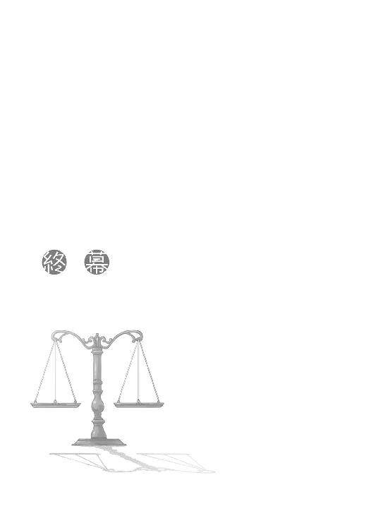
その後は忙しかった。
まず血と泥で汚れた服をレメリオ商会で洗ってそれを暖炉で乾かしている間に、服を借りてローエン商業組合に借用書を持って走った。ホロは腹が減ったというので終夜営業の酒場の前で別れてきた。後始末くらい自分でやれということなのだろう。
ロレンスが商館に入ると、今日の商売を終えて酒盛りしていた同郷の者たちから一斉に手荒い歓迎を受けた。顔の怪我にも野卑な詮索をされたりしつつ、ようやくヤコブにたどり着いた。
とっくに債務の支払いの催促に来ていてもおかしくないレメリオ商会の人間がいつまで経ってもやってこなければ、当のロレンスの姿も見えない。ロレンスの借金申し込みによる苦情などもあって、きっとそのことにヤコブは、粉をこねる以上に気を揉んでいたはずだ。
案の定、ロレンスの顔を見るや憤怒の形相になり頭を拳骨で叩いてきた。
そして、泣き笑うように破顔すると、両手を広げて無事であったことを喜んでくれた。
それから、ロレンスが借用証書を渡し、金の密輸を匂わせると、事の大まかな結末を知ったのだろう。大笑いしながら滅多に見ることのできないリュミオーネ金貨の詰まった袋を商会の奥から引っ張り出してきて、その場で現金で買い取ってくれた。
もっとも、そこは年季の入った商人だ。密輸が成功しない場合も考えられるから、ひとまずはレメリオ商会が持つ売掛債権や土地家屋などの資産を整理した際にある程度元が取れる金額となった。普通、商会が破産した際の財産整理で債権者に分配される金は所有する債権に比例するから、五百リュミオーネの証書は例え金の密輸に失敗しレメリオ商会が倒れても即座に紙くずにはならない。要は、密輸の博打に見合う金額で買い取ってくれたということだ。
それらの可能性を考慮し、かなり甘い査定でひとまず三十リュミオーネとなった。
密輸に成功したら、改めて百リュミオーネを追加する約束だ。借用証書の額面よりもかなり安いが、再起したレメリオ商会が十年経つ前につぶれる可能性も高い。妥当な値段といえた。
ロレンスはとりあえず受け取った現金の中から二十リュミオーネをヤコブに渡し、今回の騒ぎのせいでローエン商業組合の看板に泥を塗ってしまったことの許しを乞うた。残りは羊を解体する際の場所を借りる費用と口止め料にするつもりだ。
これで仮に密輸が成功したとすれば、追加で受け取る百リュミオーネのうちからノーラに二十リュミオーネの報酬を渡し、さらに借金を申し込んだ数々の商会に謝罪と返済をしに行かなければならない。それに三十リュミオーネかかるとすれば、手元に残るのは五十リュミオーネとなる。
なんとかポロソンに胡椒を売りに行った時と同じ状況だ。
一時は奴隷船行きをも覚悟したのだから、この結果は奇跡と言うほかなかった。
それからは組合の連中の伝をたどって口の堅い信用のできる肉屋を紹介してもらい、手間賃十リュミオーネを払ってノーラから羊を受け取ったらなにも聞かず解体に手を貸してもらう約束を取り付けた。手間賃をたっぷりと払っているから、特になにも聞かず手際よく事を運んでくれるだろう。
それらの下準備を終えてから、レメリオ商会に戻り服を返してもらうついでに、レメリオには寒空の下できっと身を寄せ合って震えているだろう部下の回収と説得を任せた。すっかり忘れていたロレンスの馬の回収も命じておいた。きつめに言っておいたので、真っ先にやってくれるだろう。
それらすべての準備を終えた時には、夜が白々と明けかけていた。
ロレンスは先日からの雨のせいで冷え切った早朝の空気の中、一人静かな道を歩いていた。
向かう先は町の要人に賄賂を払うことで終夜営業をしている酒場だ。
夜明け独特の青白い色が町を覆っている中、場違いなランプの明かりが漏れている店を見つけた。
「いらっしゃい」
けだるい声は違法な店だから、というわけではない。単に徹夜のせいで眠いのだろう。
店の入りは五分というところだったが、皆夜が明けるのを悲しむような静かな酒ばかりを飲んでいるせいで店内は驚くほど静かだった。
「ぬしよ」
そして、そんな声に目を向ければ、いつの間にか手に小さな樽とパンを持ったホロが隣にいた。町娘の格好をしたホロが終夜営業の酒場にいるところを聖職者に見つかればとんでもない大問題になりそうなものだったが、周りがあまり騒いでいないあたり、たまにあることのようだった。
ホロはそれからカウンターの中にいる店主に目配せすると、眠そうな店主は笑顔になって手を振った。ホロが手にしている商品は、店主にうまいこと言っておごらせたものかもしれない。
「ぬし、出よう」
実のところ少し座ってゆっくりしたかったが、手を引くホロは強引だった。
「またよろしく」
そんな声を背中に聞きながら店を出る。行くあてもなかったが、とりあえず歩き出す。
外は寒い。湿気も多いせいで、吐いた息がいつまで経っても消えなかった。
「ほれ、ぬし。パン」
そう言われて初めて昨日の昼からなにも食っていないことに気がついたせいか、途端に腹が音をたてる。ロレンスは楽しそうに笑うホロから野菜やベーコンの挟まったパンを受け取り、遠慮なくかぶりついた。
「それからこれ」
ホロの手でも持てるような小さな樽を受け取ると、ほんのりと温かい。栓を抜いて口に含むと、蜂蜜酒にミルクを混ぜて温めたものだった。
「なかなか気が利いてるな」
甘くて温かい酒は、なによりのご馳走だ。
「さて、ぬしよ」
うまいものを食わせて口を緩ませる、というわけでもないだろうが、食事にひと段落つくと案の定ホロが口を開いた。
「わっちは二つ聞きたいことがある」
なにを聞かれてもいいように、腹だけはくくっておく。
ホロは、しばらく間を空けてから、ロレンスのほうを見ないで訊ねた。
「あの小娘をどこまで信用しておる？」
予想していたような、していなかったような質問。
質問の示すことが一体どの時どの場所どんな状況でのものか明確にしないあたり、ホロも自分の中で漠然とした疑問なのかもしれない。
ロレンスは甘い酒を一口飲んで、同じくホロを見ないで答えた。
「どこまで信用しているかはわからない。ただ、ノーラがこのまま金を持ってどこかに消えたとしても簡単に追いかけられる。それを見越してノーラに金を渡したくらいには、信用していない」
ホロは無言。
「金を持っていってもかなり遠方に持っていかないとろくに買い取ってくれないし、羊飼いの娘がなんの伝もなく金を売ればそんな珍しい話はすぐに知れ渡る。追いかけるのは簡単だ」
骨の髄まで信用していないことだけは確かだ。商人の性で、もしもの場合を考えずにはいられない。
「そうかや。まあ、そんなところかや」
「もう一つは？」
こちらから聞いてやると、ホロは感情を含めない目をロレンスに向けてきた。
それは怒っているわけではないだろう。多分、迷っているのだ。
ただ、なにを迷うのだろうか。ロレンスはそちらのほうが気になってしまう。
質問すること自体を迷うような疑問をホロが持っているとは思えない。
「なにを聞かれても答えるよ。今回はお前に物凄い借りがある」
少し間をおいただけで凍るように冷たくなっているパンをかじり、酒で流し込む。
青白い夜明けの空気が立ち込める石畳の道の上に、金色の朝の光が差し始めた。
「質問しないのか？」
重ねて問うと、ホロは小さく深呼吸をした。
それから、ロレンスの服の裾をつかんできた。
その小さな手が震えていたのは、寒さからか。それとも別のなにかか。
「ぬしは......」
「ん」
「ぬしは、覚えているかや」
ホロが、不安げな目を向けてきた。
「わっちが犬と小娘と向き合った時、ぬしが、どちらの名を呼んだのか」
冗談、ではなさそうだった。
ホロの目は真剣そのものだ。
「わっちゃあ、頭に血が上っておって、聞こえんかった。じゃが、こんなにも気になるんじゃ。あの時ぬしはどちらかの名を呼んだはずじゃ。ぬしよ、覚えとらんかや？」
日が昇りはじめた町をゆっくりと歩きながら、ロレンスは迷った。
どう答えるべきか。
本当の答えは、覚えていないだ。
しかし、もしもホロが実はロレンスがどちらの名前を読んでいたか知っていて、その上でロレンスの答えを確認したがっていたとしたら。
ロレンスがホロと呼んでいれば問題ない。問題は、ノーラと呼んでいた時だ。
その場合に、わからないと答えたらロレンスは自分がなにを口走ったかわからないくらいの状況でとっさにノーラの名前を呼んだことになる。
そうなれば、ホロは絶対に怒る。その時はおとなしくノーラと答えるのが正解だ。その上で、なぜノーラの名を呼んだのか適当に理由をつければいい。
また、可能性はもう一つある。ホロが本当に聞こえていなかった場合だ。
その時は、当然ホロと答えるのが正解だ。
そこまで考えて、ロレンスは自分の馬鹿さ加減に気がついた。
隣を歩くのは賢狼ホロだ。噓など簡単に見抜かれてしまう。
だとすれば、正解はこれだ。
「お前の名を呼んだ」
不安げだったホロの目が、裏切られた子犬のように見開かれた後、みるみるうちに憎悪のこもったものに変わっていく。
「ぬし、噓をついたな」
服の裾をつかむ手に力がこめられる。ロレンスは即座に言葉を向けた。
「ああ、ついた。実際のところは覚えていないからな。しかし、だ」
頭に巻いた三角巾の下で耳だけが動いたのはきっと表情が追いつかないからだろう。
ホロなら今の言葉に噓がないのはすぐにわかったはずだ。
「あの状況なら確実に俺はお前の名を呼んだと思う」
まっすぐにホロを見つめ返しながら言うと、ホロは憎悪の色を浮かべた時と同じくらいの速度で疑わしげな視線に変えて見つめてくる。
噓かどうかの判断ができない言葉については、ホロも頭で判断するしかない。
ロレンスは、考え得る限りもっとも説得力のある考えを披露した。
「あの一刻を争う状況だ。俺はきっと無意識にお前の名を呼ぶことを選択したはずだ。なぜなら」
ホロの手に力がこめられる。
「なぜなら、お前の名前のほうが一文字短いからだ」
ホロの顔から表情が抜け落ちていく音が聞こえたような気がした。
「それに、ノーラ、と叫べばいくら早口でもわかるだろう。それに反してホロは一瞬だからな。頭に血が上ってたら聞こえないかもしれない。どうだ。実に説得力溢れる──」
最後まで言葉にならなかったのは、ホロに口元を殴られたからだ。
「黙りんす」
ホロのやわらかい小さな手で殴られても結構痛い。レメリオ商会の奴に殴られた時、唇も少し切れていたからだ。
「一文字短いからわっちの名を呼んだじゃと？ このたわけ！」
ホロは言ってから、ぐいとロレンスの服を引っ張る。
「わっちが腹立つのはぬしが本気でそう思っておるところじゃ！」
そして、突き放すようにしてそっぽを向く。
あからさまでも噓をついたほうがよかったのだろうか、とも思ったが、きっとなにを言っても怒るだろう。そんな気がした。
二人はいつの間にか東門の近くまで来ていて、徐々に今日一日を始めるために動き出している人たちの姿があった。
ホロは少し前を一人歩いている。
どうしたものかと思っていると、ふとその足が止まった。
「ぬしよ」
それから、そのままの姿勢で言った。
「名前を呼んでみろ」
背中を向けたまま短く言ったホロ。
そして、その向こうに見えた、先に鐘のついた長い杖。
遅れて羊の鳴き声が聞こえてきた。
ホロの向こうに見えたのは、黒い牧羊犬を連れた羊飼いの娘。
この瞬間、金の密輸は成功した。それが嬉しくないわけがない。とっさにノーラの名を呼んでしまうかもしれない。
ロレンスはホロの巧妙であからさまな行動に笑った。
だから口を開いて「その」名を呼ぼうとした瞬間、あからさまにくしゃみをしてやったのだ。
「っぶしゅ」
どちらの名前を呼んだのか、これで永久に誰にもわからない。
振り向いたホロの顔が、やられた、とばかりに苦々しげだ。
ロレンスはそれを無視して、大きく手を振った。
旅の途中で羊飼いに出会った時のように、右回りに三回振った。
ノーラが気づいてそれに応える。
ホロは再度ノーラのほうを肩越しに振り向く。
その時を待っていた。
「ホロ」
狼の耳が動いた。
「やはりホロのほうが呼びやすい」
降参するように、ぷわ、とホロの口元辺りから白い息が湧きあがった。
「......たわけ」
くすぐったそうに笑う笑顔は、晩秋の暖かい日差しよりも好きだった。
終わり
あとがき
お久しぶりです。支倉凍砂です。二巻が出てしまいました。びっくりです。
しかし、なにが一番びっくりだったかというと、いざこの二巻を書き出してみたら主人公二人の性格をきれいさっぱり忘れてしまっていたということです。
そんなまさかと思われるでしょうが、これが本当のことで本人としましても驚きました。
三歩歩けば全てを忘れる鳥頭とはよく言ったものですが、ネット上でホラー小説を読んだだけで怖くてトイレに行けなくなったチキン野郎にはお似合いというものなのかもしれません。
そういえばびっくりなことというのがもう一つあるのです。なにかといえば、株を買ったのです。せっかく商人を主人公にした小説で賞金をいただいたのだからと、賞金の半分ほど某銘柄を買いました。一巻でのあとがきでも書きましたが、常日頃から株を買うと倍々になることを想像してニヤニヤしている私です。この時とばかりに妄想をたくましくしていたのですが、一体どこの仕手集団の罠なのか、買ったその日から二週間続落。株式市場全体の九割以上の銘柄が値を上げた日ですら値下がり。実はこの『あとがき』を書いている裏でも投資ツールが動いていて値動き状況を逐一伝えてくれているのですが、今日は小幅な値動きのようです。やはり下がっておりますが。どうやら小説のようにうまくはいかないようです。おかしいなあ......。
こんな情けない私ではありますが、今後ともどうぞよろしくお願いします。
また、一巻に引き続き魅力的なイラストを描いてくださった文倉十先生、今回もイメージぴったりでした。ありがとうございます。それから担当様。今回も日本語の直しが多く申し訳ございません。次こそは、次こそは打ち合わせが一回で終わるようにしたいと思います。
そして、本書を手にとって下さった方々、ありがとうございます。
それでは、三巻でまたお会いできたらと思います。
支倉凍砂
支倉凍砂
１９８２年12月27日生まれ。大学にて物理を学ぶも球面調和関数では確定申告の正しい値が求められないことに世の儚さを感じる日々。しかし、球面調和関数についての詳しい説明は諸般の都合によりすることができません。
文倉十
１９８１年生まれ。京都府出身のＡＢ型。現在東京にて、フリーで細々と活動中。古道巡りを企画するもなかなか実行に移せない今日この頃です。
電撃文庫
狼と香辛料II
支倉凍砂
二〇十三年四月二十五日 配信
発行者 塚田正晃
発行所 株式会社アスキー・メディアワークス
〒一〇二─八五八四 東京都千代田区富士見一─八─十九
(C)2006 ISUNA HASEKURA/ASCII MEDIA WORKS
本書（電子版）に掲載されているコンテンツ（ソフトウェア／プログラム／データ／情報を含む）の著作権およびその他の権利は、すべて株式会社アスキー・メディアワークスおよび正当な権利を有する第三者に帰属しています。
法律の定めがある場合または権利者の明示的な承諾がある場合を除き、これらのコンテンツを複製・転載、改変・編集、翻案・翻訳、放送・出版、公衆送信（送信可能化を含む）・再配信、販売・頒布、貸与等に使用することはできません。